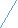

| 『論理学』下巻 (連環ブックス) | |
| F・H・ブラッドリー | |
| (2017) | |
目次
［我々の推論についての以前の考察は不十分だった。我々の定式にはない推論が存在する。 １− ９］
§１．前巻の第二部で我々は否定に関心を寄せた。間違っていると思われる推論のいくつかの見方を廃棄した。この否定的結果から、肯定的な結果に安堵し、休息の希望を得ることになる。しかし、自己欺瞞に陥るべきではない。我々がすでに到達した肯定的結果は部分的には錯覚であり、残りは速やかに激流に飲み込まれてしまうことを余儀なくされている。我々はあらゆる推論において観念的な総合を、中心のあたり、あるいは同一性の中心が結びつき、二つの項が一つの構築物になることを見た。そのとき結論はそれらの項の新たな関係になり、直観によって我々が凝集した個別の全体の内部に存在することを見た。我々が行った考察は間違ったものではなく、我々が適用しているのはそうした推論が真であるからである。しかし、我々が無視し、視野から外れていた同じように重要な他の推論も存在する。かくして理論は暫定的で、範囲においても限定されていた。
§２．我々がそれを超えなければならない点が存在する。否定的推論において、我々は中間項をもつ可能性を考えざるを得なかった（第二巻第一部Ｖ．§８）。もし我々の構築物が達成され、そこに安らぐことを選択するとき、もし我々がこの全体のなかにあるひとつの関係を孤立させることを拒否するとしたら、もし我々が望んだ結論としてまったく複合的な総合を取り扱う方を好んだとしたら、我々は論理的に間違っているのだろうか。我々に削除するよう命じる、そして、削除できないときには論じることを禁じるような法則が存在するのだろうか。一度問われた質問はそれ自体の答えをもっており、日の光には消滅してしまう盲目的な迷信の弔鐘が鳴り響いている。
もしそうなら、我々の定式を越えざるを得ない。というのも、結論は常に極端なものの新たな関係ではないからである。新たな関係を観念的に分離することを許さない全体での相互関係に過ぎないかもしれない。新たな関係の観念的分離を許さない全体の相互関係ということもありうる。どんどん先へ行けば、更に遠くへ向かわされる。もし総合がなされたとすれば、我々は常に新鮮な関係から得続けることはならず、我々が構築した全体にときに休息を得るのだとすると、どうしてそれ以外のものを再び得ようとするだろうか。なぜ新しい出口を試みようとしないのだろうか。関係以外に世界には他の事物が存在する。我々は諸性質があることをみな知っており、常にではなくともときには、全体が合わさって新たな関係まで発達することもある。もし構築によって新たな性質を得て、関係を得ることがないなら、再び我々は自らの定式の限界を超えることになる。
§３．次の章で示すように、この種の推論は実際存在し、しかし現在、我々は目覚めようとする疑いが導くところについていかねばならない。もし我々の定式が充分広くなく、我々の前にある事実に合ったものに当てはめているなら、我々が信用している事実について疑念を持つのは当然である。それらは充分だろうか。我々が考慮できない推論があり、考慮できる推論が結果に影響を与えるのだろうか。この問題が問われると、我々が隠していた結果に導かれることになる。我々は伝統的な論理学の境界を越えた事実にまで広げたが、我々は真理には足りない。疑いの多い前提に読者を誘い込み、関わらせ、容易に抜け出ることができないように望んでいる。我々は警告によって危険がなくなった大海におり、以前の考察のように、主題の大きな部分を残しているという真理を認めることができる。我々が故意に無視し、それを加えようとすると定式がこわれてしまうような推論の大きな分岐がある。続く章でそれらの性質の詳細を見ることになるが、ここでは簡単な列挙で満足しなければならない。
§４．我々の教育にある論理学的迷信は、我々をまず直接的な推論に導くことになる。それは与えられるのだろうか。三段論法そのものがそれを提供することにおそらくは失敗するが、三段論法の失敗は我々の弁解にはなり得ない。間違いなく、我々は伝統の敵によってすすめられた教義を適正化し、いわゆる直接的推論は推論ではまったくなく、我々は幻影を提供するつもりもない。しかし、この答えを保持し続けようとは私は思わない。なんらかの直接的な推論が同語反復のように思えるとしても、その他はより扱いにくい。それらは新鮮な結果を得るように思えるが、我々の定式に調和しないように思えることは確かである。
§５．我々は自分たちの難点をあげはじめたが、それにどう対処していくかはそれほど問題にしていない。我々は代数の操作をあげることもできる。加算減算は推論の過程のように思えるが、中間項との関係における両極に新たな関係を提示するとはほとんど言えない。幾何学でも同様である。観念的に重ねあわせることによって等しさを証明したとき、それは論証でもある種の推論でもないのだろうか。他方、それは諸項が第三の項との共通の関係のゆえに関係していることを示してはいないだろうか。最終的に我々がこの問題に答えることができたとしても、それは我々が考えもしなかった問題を示唆するように思えるのは確かである。我々の定式は再び適切なものではないのだろう。
§６．他の難点もくる。Ａが与えられ、我々が二つのさらなる可能性ＡｂとＡｃを見いだしたとき、そしてまた、他の知識によってＡｃが真ではないことが確かめられたとき------そのことによって我々はＡｂが事実だと思う。我々はここで論証しているように思えるが、少なくとも正しさを示すような論証はなく、推論の形も与えられていない。たとえ我々がそれをすでに知っている型に還元できると想定しても、還元は少なくとも我々がいまだ手にしていない操作である。そして、還元は実際的ではないものと証明できるかもしれない。
§７．それで終わりではない。ある対象ＡＢがＣと認められるとき、Ｃは観念的な付属として付け加えられ、我々は真正の推論があるかに思える。しかし、この推論は我々が必要とする前提を取らない。各事例において、我々が前提と考えているのはデータであるが、我々はここで知覚を超えたデータを見ているわけではない。ここで再び我々の定式を修正する根拠がある。仮定的な判断においてもまた別の根拠が見いだされるように思える。Ａを想像してもおそらくはその後に何も続きはしない。しかし、Ａが真であると仮定すると、我々は Ａ− Ｂを得ることを余儀なくされるように思える。この操作は探求を示唆し、もうひとつの困難を考えるように我々を導く。弁証法の方法では、結果は観念的操作によって得られ、その操作は諸項を共にすることにはほとんど存しない。方法が純粋な幻影であると言えるかもしれないが、短い道は最終的には長いことが証明され、容易に配置されないような探求へと導くことになろう。論理学の関心としてはどのようなタイプの論証がこの方法に当てはまるかを尋ねることがいいだろう。我々の定式の構造をゆがませる原因ともなる質問である。
§８．新鮮な判断を導く観念的操作がすべて推論を要求するとなると------この主張はいまでは整ったことは確かであろう------我々は以前には無視していた他の問題を考えることになろう。最初に抽象を取り上げよう。そこではある分析の操作がなんらかのデータについて行われ、結論ではある判断では本来の全体が一要素として関わるものを得ることになる。我々はかくして結論にいたる判断を得るのだろうか。もしそれが結論なら、論証は我々が認めているタイプに納まるのだろうか。ここには疑いと議論があるが、議論は我々を更に遠くへ運んでいくように思える。というのも、比較と区別において我々は結果を得、我々はそれを観念的な実験と取る。この実験は推論だろうか。もしそうなら、我々は再びどのようなタイプの推論がそれに従うのか問われることになる。我々はすでに、また予想において、そのための場所を与えておいたが、外観は大きく我々に反していると告白する。我々はこれらの過程によってあつらえられた主張を捨ててしまうことはできず、容易に我々の定式のもとにもたらすこともできない。
§９．我々の希望は、もし何か希望があるとすれば、速やかに止め、捨て去らねばならないことは明らかである。我々は論証の過程の一般的本性として探求を再開する準備を整えねばならない。次の章は我々がここで数え上げた心的操作を一通りみなければならない。それらが真に推論であるかを問い、次にそれらの特殊な性質を論じることになろう。この基本から我々は最終的にはなんらかの肯定的な結果に到達することを望むことができよう。
［推論の存在の検証 １− ３］
§１．前巻でもはや我々は有利な地歩を享受してはいなかった。我々が検証した論証の例はあまりに明らかで疑いようがなかった。先入見のない精神であるならそうした推論の事実を否定することはできないし、問題はその原理と内的な性質に限定された。しかし、我々が到達した点においては、あらゆる方向に疑問が可能である。我々が議論のためにつくりだした実例の性質だけではなく、実例となるという主張そのものも許されないかもしれない。我々は、どんな種類の推論にそれらは属しているのか、だけではなく、それらは本当に推論なのかに答えなければならない。
それを論じる前に、予備的な反省をあらかじめしておくことも有用に思える。我々が適用する検証法はなにか、推論だという主張はいつそこに送られるのか。事実が明白でない場合、明らかな規範に同意することができれば、得るところがあるのは明らかで、というのも、議論の過程で訴えかけることのできるものをもつからである。
§２．我々は推論は論証と同じだということができ、推論のない論証や論証のない推論は意味をなさないからである。しかし、いつ我々は論証するのだろうか。判断が判断として与えられるとき、それは常に論証を経たものなのだろうか。もしその論証が単純な知覚によって得られたものであるなら、この問題はおそらく否定的に答えられるだろう。しかし論証が感覚の事実ではなく、別の判断だとすると、存在するなにかではなく、我々がもつなんらかの知識だとすると――その場合答えは異なることは確かだろう。ある真実が別の真実への信念によって論証されたものとして与えられたとき、我々は論証をしたというべきだろう。別の言葉で言えば、ＳはＰであることを肯定する代わりに、ＳはＰでなければならない、という場合がそうで、必然的な真理を得るところではどこにあっても、論証と推論がある。我々は同じ検証を「なぜ」と「なぜなら」を取りかえることで異なった形で適用する。もしある意味があるなら、もしなぜと問うことが可能ならば、なぜならと答え、そうしたすべての事例において我々は事実上推論をしているように思われる。疑いを喚起するような判断が存在し、疑いは事実を指し示すことによってではなく、真理に照らし合わせて満足される。心的な操作が存在し、結果は観念的なデータから導かれるように思われる。このしるしが存在するところではどこでも、推論が存在すると論じることができる。
§３．恐らく我々が使用できるもうひとつの特徴がある。錯覚が存在するところでは間違った推論から生じてきているように思える。というのも、感覚は確実で、論証されておらず、錯誤は推論以外では生じえないのである。もしこれが真であるなら、間違いの可能性は推論の存在を意味し、推論の検証として間違いの可能性を捉えることができる。しかし、我々はここで危険な領域に歩を進めている。水が一方では熱く一方では冷たいときに、間違いは推論の錯誤だということは否定される。否定はこうしたことで充分に論じることはできない。我々はあらゆる事例において、間違いが可能なところに推論が存在するとは仮定できず、そこで我々の規範に失望する。しかしにもかかわらず、我々は認められるべき徴候をもっている。我々が間違いを発見するところでは、我々が推論をさがしても間違いではなく、少なくともある程度においては、推論を見いだすことを期待できることは同意されるだろう。
［新鮮な実例の主張。Ａ．三項での構築 ４− ５］
§４．この理解で武装したことからはじめ、最初の章で見いだした主張を取り上げることでき、精査が要求される。それで可能な例が尽くされるとするつもりはないし、それらは体系的な秩序に入ることはない。だがいまだ最悪のことは自ずからあらわれ、少なくとも背景にあるより大きな恐れについては知らないことを希望し、信じている。
（Ａ）最初にくるのは三項による構築である。（ｉ）そこでは省略は単純には用いられない。（ｉｉ）その操作はまた性質にも及ぶ。我々はその各々についてどう答えることができるだろうか。
（ｉ）最初の主張を逃れる方法を私は考えることができない。もしＡがＢの右にあり、ＢがＣの右にあるとすると、そこから各項はＣ---Ｂ---Ａと配列され、それは明らかに推論だと判断される。私は以前にはこのことを知らず、二つの真理を一緒にしていた。そして、もしそれが推論でないなら、なぜ私がＣ---Ａに行き着いたとき、それは推論ではないのだろうか。なんの回答も与えられない。我々はＣ---Ｂ---Ａが推論であることを認めることを余儀なくされるだけである。だが、我々の定式に従えばそれは推論ではない。
§５．（ｉｉ）しかし、さらなる帰結が密接に続く。我々はＣ―Ｂ―Ａというある全体を論証し、この全体はｘという新たな性質をもっているかもしれない。しかし、もしそうなら、我々はＣ―Ｂ、Ｂ―Ａという項の関係を論証し、新たな関係ではなく、新鮮な性質の存在を導きだしたことになる。それゆえ、再び我々の定式は崩壊している。
若い友人がここである例をもたらしてくれた。私は陸のまわりを航海し、総合の過程によって自らの行程を再構築すると、私が結びつける岸はある島に属するものとして解釈される。Ａ―Ｂ、Ｂ―Ｃ、Ｃ―Ｄ、Ｄ―Ｆ、Ｆ―Ｈ、Ｈ―Ａは結びつけると、
Ｂ
/ ／
Ａ Ｃ
－ |
Ｈ Ｄ
／ ＼
Ｆ
そして、この巡回される土地から、その名前や島がもっている他の諸性質に赴くことになる。実際にはそれだけであるなら、名前と諸性質は構築された図形そのものから直接に来るものではなく、あらわれていないさらなる付加的な前提から得られるのだと私は言われるだろう。そしてこのことは名前についても真実であり、他の諸性質の部分についても真実である。しかし、構築から来るなにものかが、直接に得られるなにものかがいまだ残っている。円環的な形と、自己充足的な単一性は諸前提の相互関係以上のものがあり、島についての予備知識から得る必要がない。それを獲るために構築物の外に出なければ、全体はそれらを欠いたものとなるだろう。だが、それらは諸部分を加え併せたものとは異なる、全体のもうひとつの側面である。しかし、もしそうなら、ある性質について論証していることは確かである。
思うに、写真をかけ、家具を配置するのに苦労する楽しみは誰にでもあるだろう。ぴったりだと思うものにたどり着くまでに、どれだけ多くの組みあわせを捨てざるを得ないか。しかし、そうした試みはすべて仮定的なデータからの推論であり、配置の構成から直接に、ある性質に、そしてまたある判断にいたる。もしその性質が美的なものなら、不調和のないものになる。心理学的イメージの全体について言わなくても、これはよくない、とかこれは心地いいとなる。我々が諸前提のなかにもっている内容についていうと、これはある種の結果に向かう、向かわざるを得ないとなる。これは推論であり、我々の定式から外れることは確かである。
実在の事物を結びつけたり分けたりすること、あるいは紙の上に描くことによって現実の世界で実験を試みるとき、我々は予期していなかった諸性質に驚かされることがあるのは明らかである、と私は思う。同じことは観念的な実験についても真でなければならない。どちらも場合も、相互関係が与えられ、我々はそのことから、そして単なる相互関係以上の、それを越えたところからくる性質を認める。しかし、第二の場合、観念的な過程によって得られた構成物そのものが推論であり、その帰結はまた結論以外の何ものでもない。しかし、それはもともとあるデータの新鮮な関係ではない。結果にいたる性質である。
［Ｂ．代数と幾何学 ６− １５］
§６．論証は常に我々がはじめたような項の新たな関係をもたらすわけではないのは明らかに思える。我々の定式は恐らくその美点をも失ってしまっている。美点がなくなってしまえば、我々はより不安なくすすめることができる。前の章で姿をあらわしたより大胆な主張者の前進は静かに受け入れられるだろう。もはやそれらに反対する絶対的な仮定など存在せず、それぞれの受容は原理の問題ではなく、選択や便宜の問題である。
（Ｂ）この精神において、我々は算術が近づくことをみるかもしれないが、その主張は間接的にに導入することになろう。導入は要求されたものではないのは確かで、変化もそれほど驚くほどのことはないだろう。
ずいぶん前に、同一性と空間的関係が我々の注意をひかざるを得なかったとき、我々はそれを一緒にし、新たな関係を見いだすことができた。ここにおいては、関係の代わりに、諸前提が我々に未知の性質を提供することがあることを見ている。Ａ---Ｂ、Ｂ---Ｃ、Ｃ---Ａという線が与えられたとき、我々は
＼Ｃ
Ａ ｜
／Ｂ
を構成し、この構成物からある種の三角形が有する性質を得る。この場合、結論はカテゴリーに関するものであり、必然的である。
しかし、我々がほとんどうかがえないような何かがそこにはある。Ａ---Ｂ、Ｃ---Ｄ、Ｅ---Ｆのような三本の線があるかもしれない。与えられたそれらに同一の点が存在しないなら、我々はそれらを一緒にする根拠も与えられない。それらのなかには同一であるしるしもなく、それらを共にする根拠も与えられていない。しかし、我々が選択すれがそうできるかもしれない。もしそれらの長さが禁じないなら、三角形になるようにそれらを結びつけるよう観念的に配置し、かくしてある種の性質を与える。我々は総合にまでいたる直観をもっており、それが生起するものに対し疑いを持ち、我々は推論をしているのだろうか、と問う。
もしそれが推論だとすると、それはなんだろうか。それは「ＡＢ、ＣＤ、ＥＦがｘをもっている」ということではない。それらは結びつけられず、いかなる性質もともにもっているわけではないので、間違っているかもしれない。また、「ＡＢ、ＣＤ、ＥＦは、両端の点が同一のときに、ｘである」という具合にも推論は進むことはできない。それは確かに真であるかもしれないが、推論ではない。というのも、性質が観念的な配列において認められるものだとしても、それは観念的な配列によって与えられるものではないからである。この事例での組み合わせは判断において得られるような構成物ではなく、それゆえ、判断をもともとのデータと結びつけている。判断は見いだされた全体に下すものであり、全体の観念的な構成については何も言わない。そして、この理由から、それは結論とはし得ない。
真の結論は、「ＡＢ、ＣＤ、ＥＦは結びつけることもでき、結びつけたときｘという性質をもつ」あるいは、「ＡＢ、ＣＤ、ＥＦがある種の仕方で操作されると、それらはｘを生じさせる」である。線に加えて私の配置するのは前提であり、構成から性質が続く。
それがあらゆる推論のしるしであり、Ａ---Ｂ、Ｂ---Ｃ、Ｃ---Ａから得る推論と異なることは明らかである。この場合、構成はデータそのものから続き、しかし別の場合には、自分自身の任意の配列が加えられなければ、続かない。私の自由な操作は、両極点のＢ、Ｃ、Ａの同一性を通じた必然的な総合に取って代わる。線は同一であるような点をもつ必要はなく、私はそれを一緒にすることを余儀なくされているわけではない。前提は仮定的なものであり、結論はかくして任意なものである。しかし、いまだそれは推論であり、というのも、もし線が結びつけられれば、結びつけられたがゆえに性質が生じるに違いないからである。
§７．前の章は逸脱ではなく、我々が描いた過程の場合のように、付け加えることと取り去ることを考えることができる。単純な命題「２×１は２である」が何を意味するかを問うことで我々の観念を明らかなものとしよう。ひとつの単位ともうひとつの単位が二という整数であることを主張してようと意味しているのだろうか。こうした言明は、整数が別の単位とともに考えられたひとつの単位以上のものであれば間違っているかもしれない。全体にはひとつの性質があり、それは結びつけられ、整数になるという単位に属している。そのとき、「一と一は二である」というのは間違っている。それらは二となるが、私が一緒にするまではそうはならない。そして、私がたまたまそう選択しない限り、そうする必要はない。かくして、結果は仮定的で任意のものである。
§８．先に進む前に修正しなければならない間違いがある。読者は程度と量のあいだに存在する論理的時間的関係は難しい主題だと気づいているかもしれない（あるいは気づいていないかもしれない）。それは狭い範囲で十分に論じられることではない問題であり、簡単な観察を提示できるだけである。「程度」という語はひとつの意味以上の意味で使うことができる。明らかに量の規模と関係し、その規模に依存する性質の規模として理解することもできる。あるいはまた、相違の規模であり、多かれ少なかれある種の事物と感じることができるが、単位数の規模として言及されないこともある。前者の意味の程度を取るなら，時間における、また論理的に数を知ること、あるいは、数える力は、異なる単位の関係に明らかに存在する強度の大小についての知識に先行していることにある。ここでは量は程度に先行するだろう。しかし、後の意味を用い、程度ということで、漠然とした多さと少なさ、登りと下り、膨張と収縮を意味し、理解するなら、疑いなく、程度が最初にあり量がそれに続く。
我々が起源を言及したときに犯した間違いは部分的にはこうした形而上的な抽象を無視したことにより、部分的には明白な事実に盲目だったことにある。量の相違を知覚することは単位を数える力を含んでいると仮定されている。カササギが二、三までは数えられるがそれ以上は無理だというよく知られた実験を繰り返す必要はない。かくして、もし三人の人間が入り二人しか出て行かなかったら、鳥はすべてを勘定していないことを知り、それゆえ数えている。しかし、もしそうなら、より多くの食物と少ない食物の相違、大きな獣と小さな獣の相違を知覚する力が数えるということを示すなら、ほとんどの動物は数えることはしないだろう。また、部分と全体を区別することができれば、部分しかあらわれないときには残りを推測し、算術を実践していることを示す------そのとき、より高次の動物はすべて算術家であり、すべて習慣的に加減している。恐らくこれは不条理への還元ではないように思えるが、それですべてではない。高次の（そして低次のものでさえ）動物はすべて数えていることはできるが、人間の人種のなかにはほとんど数えることもできず、ただまったく粗野な方法ではじめるだけのものもいる。三と四のあいだでためらうような、普通の犬では起こらないような間違えをする野蛮人は、------他方において、我々ができるよりずっとよく数えることができる。四十頭の羊から一匹を選び出し、即座にその相違を見て取る。彼らは我々がはじめる前に数え終えている。この問題については、説明できないことがあるのは明らかである。
間違いは、その正確な意味において、数というものが抽象のずっと後における産物だというのは誤りであり、それよりずっと以前にあるのは多かれ少なかれ全体と部分がすでに存在しているということである。それらは分析されない性質の形となる。
§９．さて、この観察は重要な帰結をもっており、というのも数を考えるとき、我々はその性質的な面を扱う理由はないという結論を指し示しているからである。もし程度の相違について混乱した感情をもったとき、全体が最初にきて、その全体が後に部分や単位に分析され、それらの部分が再び等値な単位に還元されるなら------もしそれが心理学的な過程であり、私はそれが明らかであるに相違ないと同意されると思うが------もし我々が量を単位でしかなく、いかにしてか一緒になり、かろうじて共存しているなら、これは我々が間違っていることを示していると思い切って論じるべきだろう。もし我々が抽象的な数から離れるとしても、それぞれの整数は単位と単位以上のものでなければならない。整数であることによって、付加からくる帰結とひくことで消える付加的な性質があるだろう。一と一は二と同じではなく、二と二は四と同じではなく、三と一と同じでもない。というのも、整数は個物であるからである。それぞれが全体を形づくる統一をもっており、その単位は留意するまでもなく単なる共存以上に高い密着性によってつながっている。もしこの密着が空間的知覚の残り物であるか、どこか別のところからきているなら、ここで考慮する必要はない。存在するだけで十分であり、それぞれの整数はひとつの全体であり、それと他の整数とのあいだに存するより高い、あるいは低いという性質の関係をもっている。それゆえ、我々は単に数えることは整数ではないといえる。それは整数をつくりだすだけである。尺度が上下することによって漸進的に生みだされ破壊される。
整数はその単位とは異なる。整数である単位についていうことは同語反復ではなく、はっきりと間違った発言である。他方、それらが整数になるというのは真であり、同語反復ではない。
§１０．加減は新たな結果を生みだす。それは結論を与える観念的操作であり、与えたものを正当化する。それらは明らかに推論である。それらが取る論証は間違いなくその本性上非常に単純であり、非難するのも容易である。「それは機械の仕事であり」と我々は非難されているのを聴く、「脳の仕事ではない」と。しかし、もし、ある種のデータから出発して、観念的実験を手段として新たな判断を生みだすのが脳なら、我々はこれを論証と呼ばねばならない、というのも、それ以外になんと呼べるのかわからないからである。そして、付け加えねばならないが、非難はそれは哲学ではないという偏見を裏切る。
操作は上述した（§６）観念的空間での任意の配列と類同している。我々はひとつの単位とひとつの単位からはじめ、自由にそれらを再配列し、整数二という結果を得て終わる。しかし、一と一が二でなければならないということはできないので、結果は仮定的である。二があらわれざるを得ないかのように配列されるかもしれないし、一と一とを操ることを選択して、二がでたのかもしれない。それゆえ、カテゴリーに関するものはなにもない。一と一は、もしそれだけにしておくならば、一と一である。それを扱うかどうかは私の私的な愉しみにかかっており、扱うとしてもそれを加える必要はない。加えることは必然化されてはおらず、加えたことによって必然性があらわれる。そして、そのとき、それらは二にならねばならず、私は推論をしたことになる。
減算を考えるとき、それはより明白である。我々は「三は一である」あるいは「整数三は単位のひとつである」ということができる。もちろん、そうした命題は間違っていることもあるかもしれない。しかし、最初にそれをばらばらにし、それから構成部分の二を脇にのけると、必然的に整数の一単位となる。三は、もし二が引かれれば、明らかに一である。しかし、この結果は仮定的である。我々はデータを分析し、部分により分けることを余儀なくされているわけではない。そして、我々はこの任意の段階を踏まなければ、結論を迫られることもないのである。
§１１．これらの推論が我々が設定した定式に納まらないことは明らかである。それらは空間に諸全体の観念的な配列をする以外のことは行わず、それが新たな性質を与える。しかし、我々はこの点にこだわる必要はなく、というのもより重要な注意をひくものがあるからである。「上述の考察は」と公正に言うことができる、「加算減算の正しい見方をするものではなく、というのも、それはカテゴリー的に真の結論を与えるからである。算術の判断はいかなる意味でも任意のものではなく、データが与えられても条件的な推論ではない。建設するものが煉瓦とモルタルを選ぶなら、家ができるかもしれない。しかし、一と一が二と等しいことは選択しようがしまいが変わらない。」私はその区別を認めるし、是認したいし、我々が行った言明といかなる意味でも対立するものではない。というのも、この時まで、我々は等しさについては決して述べていないからである。我々が望んでいるのは、算術の過程の一側面を強調することであり、もしそれを無視すると、曖昧で同語反復的なものとなる。その他何が正しかろうと、加算が我々が述べた推論であることは真である。もし単位が加えられると、それらがなにか別のものになることは仮定的に証明される。そしてこの主題の正確な理解のためには、この真理はすべて重要である。
このことを明らかにし、我々は異なった側面からこの過程を見て、差異のなかの等しさをカテゴリー的な証明として考えることにすすめる。
§１２．等しさとは何か。それは単なる同一性としての同一ではなく、そうした基本的な混乱に罪がある「影響力のある思想家」を除けば誰にとっても安全ではないだろう。なぜなら事物は等しい必要がない同一だからである。等しいときには、一側面以上で同一である必要はない。等しさは量の点で同一で、それ以外では異なった事物のあいだの関係であり、単位の数という点で同一である。あるいは、より正確に言えば、我々はそれを異なった二つの事物の単位が、単位をして同一だといえるだろう。この定義は、別の場所で喜んで論議しようとする問題を喚起することは明らかである。しかし、現在の目的に関しては、これで充分だろう。一と一は二に等しいのは、両者の単位は同一であり、三引く二は一に等しいのは、両者で単位が同一である。
この結果は真であり、カテゴリカルなように思え、それゆえ、どのようにこの結果に到達したのかもういちど問い直すように促される。もし結果が仮定的なものでないならば、操作は任意のものと取って正しいだろうか。だが、他方において、どのように私は一と一が二に等しいことを知るのであろうか。諸単位を加えたからそれらは二となることを知り、二を分析したときそれが諸単位となることを知っている。かくして私は諸単位の完全な同一性を認め、私が省略した自由な操作の帰結を認める。そしてまた、減算においても私は ３− ２＝１を推論する。しかし、そのように私はそれに達するのだろうか。私は三を三つの分離した単位に分解する。同じようなやり方で二を分解し、それを取り除くと、三のうちの二単位が取り除かれていることを見る。一が残り、それは単位としては他の単位とまさしく同じものである。結論は必然的であるが、操作は自由に選択されたものであり、というのも、三は私の分析や比較を要求するものではないからである。かくして、結果は私の任意の選択に依存している。
§１３．我々は次の難点とともに残されるように思える------結果が依存している過程は任意のものだが、結論は無条件である。この難点は、現在のところ、単に受け入れられねばならない。実際のところ我々はあまりに重宝なので、受け入れることも無視することもできない。結果を与える算術の操作は影響を与えるようには思われない。諸単位の数が変わらない限り、好きなようにでき、その結果でるものは無条件に真であるという仮定が存在する。その過程はデータの単なる準備であり、すでにそこに存在していた要素を示している。それは要素を何も変えないので、私自身の任意な変更ではない。人工的で目新しい光景を建設するものではなく、私の視野から障害物を取り除くだけである。
別の言葉で言えば、量のあいだの質の関係は存在すると想定され、それを表現する判断は独立した厳正さをもっていると想定される。私がそれを認めるにしろそうでないにしろ、真と取られ、それを得る方法はいかなる意味でも影響を与えない。かくして私の推論は自由に選択される完全に任意のものであり------しかし、推論そのものは永遠の真理である。そのデータが真であることを私に見ることを可能にするデータから私の過程はありそれは単に私の洞察であり、過程に依存した真理ではない。一と一＝二であるのは、私がそれを加えるからではなく、それらが等しいからである。
§１４．知識の土壌と実在の土壌との一般的な関係は、これからも我々を悩ませるだろうし、それを前もって処理することもできない。というのも、我々の現在の仕事は、単に用いられている過程を見いだすことにあるからである。すでに見たように、それは自由な再配列からなっており、過程から真に独立した量的同一性の知覚に終わる。諸単位をもって実験によって与えられた新たな結果は実験から離れてもそれら単位の厳正さを保持する。そして、我々は現在の章でこの結果に疑問を提示することはない。しかし、こうした過程で我々が望むのは、それが真に推論であるのか、我々が最初に受け入れ、いまでは疑問に思っている定式に編入されるかどうかにある。
真に推論であることはそれほど疑いをもつことはない。実際我々は永遠に「二かける一は二」であることに論争することはできる。というのも、ある産物が、理解され、ありきたりのこととして受け入れ、自明で明らかになったときには、それが苦痛に満ちた推論であり、年月のかかる時間の緩慢な結果であったかを見るのは困難である。しかし、より複雑な例がすぐさま我々の誤りを確信させてくれる。我々が学んだ算数表を捨てた瞬間、結果を証明するのも、間違いがあまりに容易なことも過程にあることを見いだす。この過程は我々が以前には得ることのなかった判断を与える観念的実験の運動である。しかし、もし我々が何が推論であるのか我々の精神で決定される事実から離れないのであれば、それは論証であり、その結果は推論でなければならない。
しかしそれは我々の定式に従えば推論なのだろうか。少なくともそれはあり得ることではなく、前提の諸項のあいだでなんの関係も確立されないからである。反対に、結論にあらわれる関係はデータにはまったくあらわれない終着点である。我々の貧弱な定式は、未来において尊重をもって主張されることはほとんどあり得ないし、その美徳に反対するように思える想定である。
§１５．空間と時間は同様の過程で扱われることが認められている。重ねあわせることや部分に分ける、あるいは任意に付加したことで全体を構成するような自由な配列が行われるなら、この結果はカテゴリー的な混乱と取られる。我々が導入した変更はそれが大きさを変えない限り事実を変えることはない。位置や文脈の変化がなく、分析も総合もなく、量の関係が変わりうるというのは仮説である。操作はデータそのものの外部で行われる（と推定される）。作業はそれらの外部で行われ、明らかにそれらを以前とは変えるということになる。なぜ事物が実際にそうであるのかの理由とその過程が我々には与えられないというのが真実である。提示は我々の視界から遮蔽を取り去るか、我々に人工的な視覚を与えるが、諸要素から事実を生みだしはしない。だが、我々はここでも推論があることを疑うことはできない。それが相互関係に還元されないために推論として提示することができないのである。たとえば、私が特別な位置から、ある三角形が別の三角形と等しいことを示したとき、両者を結びつける第三項はなんであり、あるいはどのような三段論法が現実の過程を表現するだろうか。無謀な拷問によれば、好きなように可能な形になんでも変えられることはわかっている。しかし、それにしても事実はそのままに残る。我々は自由な観念の再配列によって比較する直観をもっている。これは推論であり、新たな種類の推論である。
［Ｃ．比較と区別１ ６− １７］
§１６．（Ｃ）それ自体が新たな革新を示唆しており、というのもそれは比較が推論なのか、我々が比較するときにはいつでもそれを推論しているといえるのかという問いに導くからである。その示唆は我々が確立した観念とは正反対であるが、どのようにして反撥できるだろうか。我々はデータから出発し、観念的な過程にそれらのデータを従わせ、データについての新しい真理を得る。新しい真理は、我々の知識に関する限り、その操作に依存しており、それによって、またそうした論証なしにはあり得ないだろう。しかし、もしそうなら、我々はそれを結論としなければならないのは確かである。
例をあげよう。ＡＢＣ、ＤＢＦがあり、我々はそれらがどの点で同一であるか知らないかもしれない。それらを調べ、一般的あるいは特殊な同一性を発見したいと思う。それはある観点からそれらに接するということである。我々は同一性の観点から、性質や量、より特殊な新たな事実について比較する。その過程の正確な性格を提示するのが容易でないことは疑いないが、確かになんらかの過程は存在する。ＡＢＣ、ＤＢＦに観念的な操作がなされ、その操作が我々にある判断を提示する。我々はＡＢＣとＤＢＦが似ているとは知らない。しかしいまではＢという点を共通にもっていることを知っており、この直感は操作に依存している。結論は、「もしＡＢＣとＤＢＦを比較するなら、それらはＢにおいて似ている」となる。そしてこの操作は事実になんの相違ももたらさないと仮定されているので、我々はカテゴリカルに「両者は似ている」といえる。我々がこの推論の適正さを疑問視することはできるが、その存在をどう否定できるのかはわからない。他方において、それは同一性を通じて確立された二つの所与の項の関係でもない。
この問題のもとに連辞の過程を入れてもおそらく間違いではないだろう。「ＡはＣであり、ＢはＣである、それゆえ両者はＣである。」この関係に関する限り、単に隣接しているのではないので、ＡとＢの同一性が結論される。
§１７．同一性を確立するのに比較があるとすれば、差異をもたらす過程にもなければならない。もし区別が新たな真理を示す観念的な操作であり、我々に新たな真理であるなら、その限りで、それは論証でなければならない。単純にそのことを示してみよう。実際にはＢ１、Ｂ２、Ｂ３であるものをすべて単なるＢとする。このデータＢをその本性については現在のところでは触れないが、観念的操作に従わせると、結果はＢ１Ｂ２Ｂ３となる。操作は任意のものなので、出てきたものも仮定的だが、再び言うが、操作は実際にあるデータを変えるものとは想定されていないので――我々はその産物をカテゴリカルなものととる。眼だすしるしが認められ、それゆえそれはある。事物が異なっていない限り、相違は存在しない。しかし我々にとっては、区別に従わないような相違が存在しえない。これで明らかだが、過程によって存在が示されるものは、ある提示であり真の推論として捉えなければならない。
ある困難が区別と同一化の操作にはつきまとっていることは認める。というのも、それは我々が最終的に到達する実在の真理の現実的な根拠を与えてはくれないと言えるからである。そうしたものを与えてくれると公言することさえしないし、それなしではそこに存在しないことになってしまうものをなにも提示しないことに異議申し立てさえしている。この難点は、おそらくは我々が予期しなかった意味をもたらし、これからも我々を腹立たしく思わせることだろう。しかし現在の目的に関しては、我々は過程の別の面を主張しなければならない。我々は観念的実験によって結果に到達する。それについては、それは我々の操作によって真となるわけではないが、それが原因であることは知っており、我々の活動によって我々にとってそうしたものとなるとはいえる。しかしもしそうなら、再び我々は論証している。
［Ｄ．認知１８］
§１８．（Ｄ）我々が事実そのものに原因を与えないにしても、我々の提示が確立したもとというより認知されるものであるとき、我々は論証しているように思われる。認知が常に論証ではないなら、一貫性を求める我々に疑問の声をあげさせる。実際そうなのだと発見することは我々の驚きとなるだろうが、というのも、ＡＢがＣであることを見いだし、それを認知することは、観念的な再統合の過程をふくんでいるからである。私はＡＢから出発し、観念的総合のＢＣの働きによって私が進む構築物が与えられる。単に名前を思いだすことさえ、以前どこかで見た顔に違いないとしかいえないときでも、そこにはすでに結論が存在する。つながりはぼやけていて、付け加えられる要素は些細でおぼろげかもしれない。しかし、そうしたことはなんであっても、復元の総合的な操作であり、それは論証である。
「確かに論証だ。しかし通常の論証は三つの項を用いる。」最初にＡＢとＢＣがあり、それから全体であるＡＢＣとなり、省略によってＡ―Ｃという結果が残る」のだといわれるかもしれない。しかし、どのような意味でＢＣは前提なのか、と私は答える。それは決してもともとのデータではない。実際データではまったくない。というのも、それは精神の前に現れることのない働きであり、その行為の結果は我々がもつデータのみのものとしてあらわれるからである。もしＢＣが前提なら、通常の言葉の意味における前提ではない。我々は少なくともいまだ与えられていない事例を見いだすのであり、そうした事例では推論は疑問の余地がないように思える。
この節で仮定的判断についても付け加えることができる。それは常に推論である。我々が最初に言ったように「もしあるものがＢで、しかもＣなら、ＡはＢであり、それゆえＣである」というのが推論だというだけの意味ではない。私が意味する推論とは、一般的原理を明白に言明している。Ａは単に想定されたものである。それは実在の属性として実験において与えられ、そこから精神に浮かぶ他の前提なしにＣに到達する。この過程は我々が予期していなかった種類の推論である。しかし、独立した立場だと主張することもほとんどできない。これまで述べてきた認知のもとに属さないなら、その居場所を続く節で見いだすことになろう。
［Ｅ．弁証法（１ ９− ２２）］
§１９．（Ｅ）この節の主題は我々に強いられたものである。この種の著作で弁証法的方法について何も触れずにいられるとすれば非常に喜ばしいが、我々が最後に気づいた推論について否応なく示唆されるように、やり過ごすことに弁解をできない状況になってしまった。私はこの方法が前の節の主題に収まり、単なる認知の過程であるとはまったく思っていない。そうした見解を受け入れてしまえば、その主張を台無しにしてしまうことになり、批判も擁護もすることはできなくなる。それが真に独自な方法をもっていると仮定し、どのような操作で弁証法が行われるか考慮してみたい。
もし我々がそうした仮定をするなら、当然認知の過程から弁証法的運動に移ることになる。認知と同じく、それは単一のデータから始まり、その他の前提の助けを借りずに、新鮮な結果をもたらす。だが、その結果は単に出発点を分析することでは得られず、データを観念的な総合に拡大する心的働きの行為によって得られる。その限りでは、弁証法の方法は再統合によって働く通常の認知と同一である。しかし、そこで相違がくる。弁証法において出発点と出会い、それを補完する観念的総合は過去の知覚の再生産ではない。あるいはむしろ、より正確にいうと、それは単にそうした観念的再生産ではない。総合が我々が現前するものから得るかつながりを反覆することによってもたらされるにしても、そこには反覆以上のものが存在する。その働きは精神がそうしたことをするよう訓練されているゆえにするものではないと感じられる。自然さは習慣以上のものであるように思え、必然性は惰性より強い。差異の原因を我々はここに見いだす。ある場合におけるメッセージはそのように受け入れられているために信じられているという外的な風潮のように思える。しかし、別の場合には、我々が自らの経験において目撃しているために真であり、啓示であるかのように見える。一方の場合の内容はそれ自体不合理であり、外的な世界から我々の理性にくるように思えるが、他方では我々の内的な構成からきているので、自身のものであるゆえに満足する。内的な必然性、その働きと産物は弁証法的方法の特徴であり、その主張と権利を構成するものである。
§２０．私はこの名称を批判しようとしているわけではなく、誤解を取り除こうとしている。その一つについては既に述べた。もし発展を促すようなものを外的経験が既に与えており、それ以前のものがはいっているのに総合があらわれていないときに、弁証法の主張に対してあなたはなんの回答ももたない。これらのことがすべて認められると、問題となるのは、なにがあらわれ、それがどのようにあらわれるようになるか、ということではない。問題はあらわれ方の〈流儀〉であり、あらわれが引き起こされたときに、精神が問題をどう鋳直し、考慮するかである。二つの専門用語を使うことにいくらか嫌悪感をおぼえることを告白しなければならないが――論議になっているのは産物が後天的なものなのか、後天的なものであるにしても、先天的でもないのかどうかである。この問題についての誤解は時間の浪費をもたらす。
第二の誤解は異なった本性に関している。弁証法的方法は真空内で概念をもって行なう実験の一種だという観念が広まっている。我々はひとつの孤立した抽象的観念だけを想定し、この個的なモナドが個的な実体の萌芽や分裂から多数化する、あるいは、実体のない空虚から物質が引きだされるものとする。しかしこれは単なる戯画であり、精神が以前に得たものと精神がその内部に持っているものとの混乱から来ている。精神の以前に、単一の概念があり、全体的精神はまだあらわれていないが、この過程に関わり、テータを操作し、結果を生みだす。精神が有している断片的な性格にある実在と、精神の内部にあって感じられる真の実在にある対立は、弁証法的過程がしつらえる休みのない運動の原因である。
§２１．我々はこの過程が二つの異なった方法を採ることを理解している。ひとつの見解によると、この方法は否定の力を押しすすめる。新たな要素を結合しつけ加える総合は、常に否定から、出発点の 矛盾 から来ている。あらゆる真理は二つの側面をもっており、相関的なものの肯定からなり、そのそれぞれは他方の論理的否定である。それぞれの帰結は、自身を肯定し、他方を否定することになる。しかし、同時に、それぞれが否定したものに依存し、再主張することになる。それ自体を肯定することは、他方において自身の否定を肯定せざるをえず、自己を探り、自己を否定することで正反対なものに成ることである。あるいは、より正確に言うなら、この過程の両側面である全体は、一方的なデータの主張を拒否し、それが真に含む他の側からの正反対の側面にあるものを補完し――否定によって均衡の取れた統一を得ることである。この道に一度入りこむと、その過程はいま到達した全体から新たに始まることになる。しかし、これはまた、より高次の総合の一面的な表現とも見られる。それは正反対のものを生み、それは第二の全体に再び結びつけられ、先の全体は今度は真理の断片へと降格する。この過程は、精神が内面裡においても、無意識的な観念に答えるような産物を見いだすまで続く。完全にそれ自体のデータとなり、対象のなかの自己意識の活動が休まるまでになる。自己発展と自然進化の偉大な観念はヘーゲルの手によってもっとも実りの多い結果となったが、主に、否定の原理が誤りとして拒否されるときになり立つようである。
というのも、弁証法的方法は、ある要素がその主張において、自己否定によって補完されるという意味において対立物の同一性を含むことが必要とされないからである。この難点をあきらかにするためにより単純な見方を取ることも可能である。以前のように、実在が前にあり、孤立したデータとして自己を熟視するものと仮定することもできる。次に来るのは、データは不十分なものと感じられ、そうしたものとして否定される。しかし、この否定において、またそれを通じて実在がデータを完成するのとして要求される補完物を生みだし、その補完物とは、予感されるように、不満足とその結果としての否定活動の基盤であった。この第二の見解において、重要な点は、相関関係のどちらも肯定的で、一方が他方の単なる否定ではないことにある。一方の不在が他方の不在と不整合であり、他方の独立した現前が不整合である。かくして、それ自体が否定されるか、実際ある対応物に よって 、また その根拠において 、この否定において、それ自体が意識的となり、光をあびる。この教義が異端であることは私は十分に意識している。しかし、それは正当な教義の真の本体を助けるために見いだされるべき異端であると思う。
§２２．我々はここでこの異端の真理について関わることはなく、実際に手近にある問題に移ろう。どのような意味で、弁証法は推論なのだろうか。観念の操作によって新たな結果を得るということでは確かに推論である。テータαをとり、操作によってα―βを得て、さらにγという結論に至る。ここでの結論は、αはβに違いなく、それゆえ、それはγということになる。操作は任意のものではなく、それを通じて実在を保ち続けているので、仮定をもってもいない。というのも、その中間項は選んでつくりだしたものではないからである。全体として必然的であり、それゆえ、αはγだという結論で終わることができた。我々の本来の定式がこうした推論を提示したのかについてはほとんど問う必要はない。
［Ｆ．抽象２ ３− ２４］
§２３．（Ｆ）我々は次に抽象の過程を取り上げることにしよう。理解において、我々は明らかに普遍的な総合の働きを使い、この働きがどのように得られるのか問うことは自然である。もしそれが分析と抽象の操作からくるのであれば、我々はそうした操作が推論でないはずなのかどうかとうことに導かれる。というのも、それは新たな結果を手に入れる観念的な実験だからである。ここ で abc d という全体を与えられたとしよう。無視や排除によってｂｃを取り除くと 、 a d が残る。そして、こ の a d を実在に対する述語とする。実在 は abc d で、我々の行為の結果として現在知っているの が a d である。我々が非本質的だと思われるものを取り除くこの過程の性質は現在のところ議論の必要はないが、そこになんらかの過程が存在し、その過程の結果はその他の根拠もなく真理として受け入れられているという結果は確かである。またこの実験は任意であり、それというのも我々はそれを行う必要はなかったのであり、事実そのものになんら相違をもたらすとは想定されないからである。だが、我々の知識や判断に相違をもたらし、新たな知覚を与えるために、論証と推論の印は付けられている。
§２４．我々の最初の分析は、内容の省略や削除によって最終的には残された内容が、本来の主語の確かな属性として最後には残るというものだった。その操作はおなじみのものであり、広く用いられているが、その適正さについては重大な反論にさらされている。それについてはこれから扱おうと思っているが、いまのところいえるのは、排除によって主語を決定的に変えてしまっているのではないかという疑いがある。しかし、一つの要素を排除することで、残りの述語となる条件を破壊するかもしれない。我らの古い友であるＪ・Ｓ・ミルのいわゆる差異の法則は、この間違いに陥り、我々に警告を与えてくれる（第二巻第二部第三章）。実在は最 初 ABC-de f であり、それか ら BC-e f となり、もしＢ Ｃ -e f を省略すると仮定するなら、実在とし て A- d は依然として真だとなろう。しかしここで（繰り返すことになるが）二つの誤りがある。最初に我々のデータが純粋な普遍だとするなら 、A にともなうあらゆ る B C について検証することはない。第二の別のＢＣを扱うと、それらが働く方法において差異がないか確言することはできない。最初のＢＣはＡになにものかを与え、交換でなにものをかを得ており、Ａは最初 の e f に関係し、ＢＣは部分的にｄと関係していたのかもしれない。この考察されていなかった可能性はあなた方の証明を座礁させる。差異の方法は差異にのみ基づく方法ではないので、自ら廃棄に追い込まれる。
そしてあなた方の間違いは一つではない。というのも、あなた方はかてて加えて根本的な困難を無視しているからである。どのようにしてあなた方は純粋な普遍であ る ABC-de f を、すでにあやふやなものになっている「差異の方法」の省略の過程によって得ることができるのだろうか。あなたの前提である「実在 は ABC-de r であり 、 BC-e f である」というのは、あらわれの大量の細部からそれらの要素を切り離したことによる抽象の産物である。この本来の過程をなにが正当化するのだろうか。切り離したその詳細は完全に無関係であり、それなしでも実在は以前と同じよう に ABC-de fと BC-e f であることをなにが告げてくれるのだろうか。この反論は前者の反論が上部構造に関してそうであったように、方法の基礎において致命的である。省略の産物は常に多大な疑念を持って受け入れられるという結論が指し示される。この結論だけで、我々は現在は満足しなければならない。
しかし、厳正であるにしろそうではないにしろ、抽象は論証である。上述のいかなる過程にもおさまらないものだと思われる。
［Ｇ．選言的推論２ ５− ２９］
（Ｇ）これで最後までたどり着いたわけではない。第一巻で選言的な判断について考慮した際に、我々はそれには隠れた推論が含まれていると観察した。それを明るみにだすときがきた。我々は推論の過程を三項のものに還元する傾向にあることは確かである。 「Aはb あるい はc で 、v ではない、それゆ えb である」――ここでの論証は三段論法といえるもので、 「Aはc ではな いb で 、Aはc ではな いA であるゆえに、Ａはｂである。」という形に収まる。だがこの試みは、選言があからさまに二者択一的な性格を述べ、前提としている還元なので、無益なものだろう。しかし、どうしてこうしたあからさまな言述を有するようになるかという問題は答えられないままであり、三段論法的ではない推論からくるのだということを見ることになるだろう。三段論法は選言的接続詞の魂でも原理でもない。それはそうした論証の産物と結果を表現する一つの人工的な方法である（第四章§６．７）。
§２６．現実の過程としてそれがあらわれ、観念に至る前に、それがなんであるか見ておかねばならない。我々はＡがｂ、あるいはｃ、さらにはｄであるかもしれないことを知っている。それらすべてを排除しては何ものでもないことはわかっている。それを我々の出発点と呼べよう。そして我々はＡがｂでないことを学び、それゆえ、ｃｄにあることを結論する。さらに、Ａがｃでないことを見いだし、それゆえ、Ａがｄである、と結論する。我々は明らかではっきりとした推論を行っているが、それはなにからなっているのだろうか。それは与えられた主語の可能な述語のなかから首尾一貫したものが残るまで排除し続け、残ったものを実在についての主張として受け入れる。一つの可能性が残り、それゆえそれが事実である。
我々の推論は大前提である「ｂでもｃでもないものはｄに違いない」から論じられるのではなく、大前提は我々の結論に証拠を与えることはない。反対に、我々の目的はこの大前提を証明する観念的な実験である。我々は試行し、ｄが結果として残ったので、ｂでもｃでもないＡがｄでなければならないことを知っている。かくして我々の大前提があるとすれば、唯一の可能性が現実の事実として残るはずだという原理である。しかしそれもまた前提として与えられたものではなく、それが真であると知っているために論議もしない。すでに論じたように、それ自体が観念的な実験の結果であるので、真であることを知っているのである。
§２７．それにこの原理は根本的なものでさえない。というのも、我々の前にはＡの可能性が明らかに尽くされているという判断を前提としているからである。論証の一段階はｂ、ｃ、ｄがＡの全領域であり、Ａが（どこであれ）この領域のなかにあるはずだという言述から成り立っている。選言的な論証のもっとも初期の形式にはそうした予備的な言述が施されている。Ａについて両立しがたい示唆が精神の前にあらわれ、観念的な争いに生き残った示唆が事実として受け入れられる。隠して、我々はそれ以前の否定が主語の領域を尽くしているという主張なしに肯定に直接に赴くことはない。この過程については、より低次の精神の段階についての推論を描くときに戻ることになろうが、現在のところ、この初期の操作にある原理について少々述べることで満足しなければならない。
どれほど存在の本性について気づくことが少なくとも、我々が使用を間違え得ないような公準がある。我々が推定したように、観念は排除されない限り、すべて示唆される。ある観念的内容が実在と矛盾したのなら、それは事実ではない。また、もし別の内容との間に食い違いがあるなら、現在のところ両者とも実在ではない。示唆された観念はその限りでは可能である。それと両立不可能なものが見いだされないなら、観念は現実的である。かくして、すべての示唆は、それが対立し、観念的な実験を経て、両立不可能な観念を廃棄し、自らの適切さを提示するまでは真である。競合する観念の戦いを生き残ったものが最適なものであり、それゆえ真理である。選言的論証の魂を含むこの不吉な言明は、我々のためらいを引き起こし、それによって生じる過程の適正さを議論するときには、このためらいとバランスを保たねばならない。ここでは、再び、我々は三項による論証ではない操作を見いだし、それが推論の称号を主張できることを示すだけで十分だろう。
§２８．ここでしばらく立ち止まり、この原理が働く広がりを見ておく価値があるだろう。どんな判断も単純な変化によって論証へと変わりうる。というのも、我々は対立する観念を想定せねばならず――我々は真理が別にあると想定し、すでに有している述語がその示唆を排除し、それこそが真でなければならないということに戻るからである。そうでなければならないのでそれは真である。そして、観念の実験に加わり勝利を収めたのであるから、必然的な真理である。この過程は、循環的であるために取るに足りないように思える。我々は出発した場所に戻り、必然的ということは「なぜならそうであるから」という価値のない形で加えられる（第一巻第五章§２９参照）。我々は最初に判断を単なる観念に格下げし、それから判断の強さにある観念を主張する。しかし、我々がそれを判断に当てはめるときに循環的なこの過程は、単なる観念に用いるとまったく異なる。どんなものであれなんらかの観念を取り上げ、それを実在に関するもので、矛盾はないものだとしよう。それをそれ自体において矛盾する他の観念と衝突させ、それを公に競合させ、打ち負かすところを見れば、その真理が主張されることになる――この急激な過程には限界がないように思える。だが、厳正であれそうでないにしろ、それが推論であることは確かである。我々があからさまに可能性は尽くされたと述べるにしても、単に可能性の広がりを無視するにしても、どちらの場合にも他の分類には当てはまらないような論証である。
§２９．途中の段階でどんな手段をとるにせよ、最終的には選言的にならなければならないので、間接還元法的な推論がこのクラスに属すると付け加えられるかもしれない。ある述語の否定から別の述語の肯定へとそれらは移行する。そしてその移行は他に可能な述語が存在しないことを仮定している。間接的な方法を使用する悪い論証の多くは、主にこの事実を忘れることからきている。哲学的議論に満ちあふれている間違った論理は、大部分がせわしない選言に基づいた結論からきている。おそらくどんな書き手もこの間違いから完全に逃れられると希望できるものはなく、足を滑らすかのように、この過程はときに避けがたいからである。
［Ｈ．直接的推論３ ０− ３７］
§３０． （ H ) 残されたのは古いなじみであるいわゆる直接的推論と呼ばれるものしかなくなった。それらはためらいを起こさせるものである。疑いは、その作業の本性や原理に広がるばかりでなく、その現実の存在に付着しているからである。もしそれらが観念の変更なく、言葉を再配列するだけの同語反復ならば、推論とはなり得ない。その幾分かは少々異なるようにも見える。 「AはB である」から「いくつか のBはA である」と論じることは疑念を生じさせ、もし我々 がAはB と等しいの でBはA と等しい、あるいは 、BはA の右にあることは確かなので 、AはB 左になければならないと推論するなら、疑念はさらに深まる。こうした場合、その過程から新しく出た結論はなにかと尋ねることができよう。他方において 、AはB であるが与えられたときに、「 非A は 非B である」と主張されたら、この間違った付け加えを受け入れることを拒否することになる。我々はそれを悪い推論と呼び、「 非B は 非A である」が適切な推論であることが否定されたときに妥協することとなろう。
我々は推論が本当のものか単なる循環であるかを探る割に合わない仕事に取り組む必要はない。というのも、こうした矛盾に含まれる論理原則はなく、厳密な直接的推論が与えられたときに、それらが陥ることのあり得る議論のタイプとしてすでに認めたものを示すだけで十分であろう。いずれにせよ、それらは我々がすでに見てきた推論のクラスになにも付け加えることはないだろう。
§３１．いわゆる推論と呼ばれているものが出発点とする主張を繰り返すところでは、何も言うべきことはない 。A＝B から証拠によっ て B= A へと進むことは不可能である。どちらの場合 もAとB の同じ関係をもっており、どのような順番を採るかはまったく無関係である。ここでなされる変更は心理学的なもので論理的なものではなく、言語表現以外の何ものとも関係をもつことはない。
過程が疑わしく思える別の例をあげてみよう。「 非BはA である」が「 非AはB である」の単なる繰り返しであるか、あるいは、「いくつか のBはA である」は 「A はｂである」から真の進展があったのか即座に答えることは容易ではない。しかし、それらが推論だと想定すると、どちらも我々がすでに知っているものに分類される。ある真理が与えられたとき、そこに別の真理が含意され含まれているならば、この過程は抽象によって続く分析である。それに外れるものは選言による推論である。たとえば、 非B は 非A であることを見て取り、 「AはB である」と確かめる以上のことが要求されるなら、その場合は間接的、間接的還元の方法ということになろう。こうした一般的な観察を、直接的推論の詳細についていくらか述べることによって例示してみよう。
§３２．最初に肯定判断からの直接的結論について考えてみるなら、我々の驚異の念を喚起するものが多いことを見いだすことだろう。「いくつかの」という言葉を取り巻く曖昧さは伝統的な論理学には不面目をもたらすものだった。この曖昧さの背後には、光には耐えられないなにものかが隠れているのだろう。肯定的な「すべて のAはB である」を取ってみよう。同じ関係を繰り返す以外に、この推論が我々に与えるものはなんであろうか、と我々は問うことができる。最初にそれを敷衍して、「すべ てA のものはすべ てB のものである」という判断を取ろう。それは「すべ てB のものはすべ てA のものである」ということになにか新しいものを付け加えているだろうか。古い関係をもう一度繰り返しているだけではないか。あるいは、ＡのものがＢのものの一部であるなら、Ｂのものの一部がＡのものであることを学んだことでさらに得ることがあるだろうか。またもし、「すべてのＡのものはすべてのＢのものである」ことから、それらは少なくともＢのものの一部であると結論することを命じられたら、私は情報を要求しなければならない。なにによって私はこの疑わしい定式に関わるのか。もしそれが集合を個別にとりあげ、個別に扱うことを意味するなら、ａを見、またｂを見、ｃを見ていくようにそれぞれを見ていかなければならないのなら――どこに推論はあるだろうか。しかしもしそれが、多数において真であるものは、そのある部分あるいは個別の各部分についても真だということを意味するなら――推論は間違っており、多数がその広がりをもつことはほとんどないことになる。最後に、私がある部分については確信を持っており、その各々について確かだとはいえないとしても、その部分については真であろうとはいえるので、それゆえ少なくともある部分については確かだと論じるよう促されたとしても、私は確かさの上に立てた前提を疑うべきだと示唆されているように思える、と答えねばならない。
またある広がりのなかで述語を取ることができないなら――すべてＡのものは性質Ｂをもっているので、性質をもつあるものはすべてＡのものである――私はどのように先に進むのか理解することができない。性質Ｂをもつものは性質Ａをもつということをすでに知っているのであれば、それ以上なにを学ぶことがあろうか。「少なくともあるＢのものはＡのものである」は確かな結論ではまったくない。同語反復やまったくの間違いではないにしても、ある種の推論をすべきではないという警告にはなっている。それが述べているのは、「私は乗り越える必要のないある関係をもっている。『なんらかの』を配することは、抑制のない蛮勇であり、『ほとんど』ということはなんの権限もない失望である。正しい精神状態は疑いに満ちた希望か予測された無知である。」しかし、これは推論することではなく、もしこれが推論することなら、同時に、我々は推論することができないに違いないと結論することになる。
そして、その肯定的な性格を保ったまま、意図した通りにすべての判断を読もうとすると、我々はまったく上手くいかない。属性Ｂが主語あるいは属性Ａに付随することは事実である。このことから無益な反復以上のものに進むことができるだろうか。「少なくとも」を持ち込むことは無駄なご都合主義であり、単に我々が言わなかったこと、我々が言うべきではなかったこと、つまり、ＢはＡなしには決して見いだされることはないということを思い起こさせるだけである。しかしそれはよい推論ではなく、機先を制そうとして悪いものとなっている。
もしあなたが「悪い推論の機先を制することが推論である。というのも、推論をし、観念の実験においてデータを比較するまではどうして自分の推論が悪いと知り得ようか。「少なくともあるＢはＡである」というのは、単なる可能性が存在するという以上の意味はない。そしてこの可能性の知識は、それ以上でもなく、それ以上とも考えるべきではないが、推論以外でどうして得ることができようか。」――と答えるなら、それはあなたの結論が断定的なものではなく、蓋然的なものなので、その主張を受け入れる準備はできている、と答えることになる。
§３３．真実はこうである、もしカテゴリカルな肯定を保っているなら、その変換や対立は合理的なものではなく、単に文法的なものである。真の推論であるひとつの変換には、様態的変換があり、それはもともとの判断に仮定的な性格を前提している。そのことを証明する労を取ろうとは思わないが、仮定的な判断が様態として転倒しうることは示そうと思う。
それ以外には変換されることはあり得ない。「Ａが与えられるとＢになる」では、Ａで実験を行うとＢになる。しかし、単にＢを取り上げて、それに実験を加え、Ａと関係した結果を得ることはできない。私が思うにこれは明らかであり、失望のうちに古い道具に立ち戻り、「少なくともなにか」を持ち込んだとしても、それ以上進むことはないだろう。「もしＡがあるところにＢが与えられると想定するなら、Ｂが与えられるとＡがある」ということに成功しただけである。それは不毛な同語反復である。
真の結論は「ＢはＡかもしれない」だが、それもまた単なる言葉に還元されうるものである。「ヒ素はある種の症候を引き起こす」から出発して、「この症候はヒ素からきたものかもしれない」と結論する。あるいは、「ある種の犬はほ乳類である」からはじめて、「あるほ乳類は犬かもしれない」へと推論する――それではいまだ悪い推論であるスキュラと冗長というカリブディスのあいだをさまよっている可能性がある。出発点とした真理を越えようとしているか、無能な結果に満足することができないことで、ヒ素が原因となっている条件のもとに症候をヒ素によるものだとしている。あなたが実際に意味しているのは、それらはヒ素によるものかも知れないし、そうでないかもしれないが、ヒ素によるものだと判断するいくつかの根拠をもっている、ということである。そしてそれが論点である。あなたは現実の事実を直接的に判断しているわけではない。なにか他の薬を与えたら同じ症候を得るかもしれないという意地悪な広がりのうちに結論を下しているわけでもない。あるいはまた、正統的ではあるが愚かな過程によって、ヒ素は死に至るもののはずなので、それを処方することは少なくとも死の原因であり得るとしているわけでもない。それはあなたが意味するところではなく、そうした軽薄さを伝えていると理解されたら残念に思うことだろう。あなたの真の判断はあなた自身の信念や不信の根拠に関するものであり、事実に関しては間接的に主張しているだけである。ヒ素によって生じたかもしれない死はそれ以外知られていない死の可能性のなかで、特定できるものを意味しうる。おそらくあなたはこういいたいだろう、しかしそれは他のどれよりも確からしい、と。というのも、ヒ素が死の原因として可能なものとしてなにも知られていなければ、それに原因があるともそれ以外に原因があるともどちらにも根拠はなかったからである。しかしいまでは、ある種の症候とともに死をもたらすという知識によって、推論をすることができる。もっともありそうな死の原因を探るときに、そのきっかけを論証に加えることになる。すべての可能性のなかで、それだけが法外な重みを持ち、重さは尺度に変わる。症候はヒ素かもしれないしそうでないかもしれない。しかし前者を重く見ることによって、我々は少なくとも、ヒ素は確かにそうしたことを生みだすだろうという考察をもつ。他の原因を重く見ることよりも、ヒ素を重く見る可能性のほうが高くなる。そしてこれが、あなたが本当に伝えたがったことだと私は思う。
そして、もし変換がこうした様態の性格を持っているなら、可能な二者選択の選言に基づいた推論を含むことになろう。
§３４．確かさから可能性へのこの議論は、肯定的判断を変換することに横たわる真の意味だと思われる。軽薄だという非難に答えて、こうした変換や対立は、教育において価値のある要素であり、それゆえ、正統的な論理学はこの点において完全に不条理なものではあり得ないと我々はいわれてきた。植え付けられる教義のなかでももっとも不条理なものだが、合理的なもののなかに誤解を持ち込むので有益にもなり得ると私は答えよう。生徒に「あらゆる犬はほ乳類である」と教えこむことは多くの利益を望み得ないが、彼がそこから「なんらかのほ乳類はそれゆえ犬である」そしてこのことから、得意になって「いくらかの犬はほ乳類である」と結論するかもしれない（ロッツェ『論理学』§８１参照）。私は彼が特殊な情報をもっていないなら、主語となるものの属性から、あるいは根拠となる結果から論証できていないといった方がいいと考えるべきであろう。私が思うに、前者の存在は彼の心にある記号であり、後者の蓋然性を高めるものなのは確かだが、その現実の存在を証明することはできない、といわれることだろう。それが、彼が愚かさからそれ以外のなにかを真に学ぶとすれば学ばねばならぬことであり、教えられたことにかかわらず学ぶべきことである。どこにでも無教養な専門家はいる。彼は迷信やナンセンスによって失われるまで、真理は傷つくことはないという信条を硬く保持している。
§３５．もし我々が否定的判断を変換し、対置によって変換するなら、我々はこうした非難を改めねばならない。この新たな領域で、軽薄さをもたないでいることはほとんど不可能であろう。しかし、他方において、我々がそれ以外のなにかをもっているとは言えないのである。「ＡはＢでない」から、「ＢはＡでない」には確かな道が通っているように思える。これは疑いなく疑問視されるだろう。われわれはＡとＢが両立不可能であることを知っており、それからＢはＡと両立不可能であることを知るのだといわれるかもしれない。かくして我々は同じ関係を異なった文法でもつことになる。しかし、この見方は私には不正確であると思える。否定において我々は両方の語を試したといえるが、肯定的判断においては、最初の語しか扱っていないことは間違いのない真実だからである。否定的な検証によって到達した結論はＡとＢの両立不可能性ではない。我々が見いだしたのは、Ａが与えられたとき、Ｂは存在し得ないということである。しかし、Ｂがたまたま存在すると仮定したときに、我々にはなんの情報もない。それゆえ、到達された結論は一方的なものである。
それでは真理の別の側面をどう得ればいいのだろうか。もっとも確かなのは一般的な原理にはよらないということで、そうした原理そのものが問題となる過程で最初に手に入るはずのものだからである。この過程はもうひとつの検証から成り立っているはずで、Ｂを現実ととり、Ａを想定すると、再び排除が見いだされるというものである。この推論の本質は疑問にさらされている。新たな関係の明白な知覚が扱われているが、それは暗黙のうちに全体からの抽象によって得られている。しかし、私はそれを間接還元法と取ることを好む。Ｂを仮定すると、Ａは排除されるか、可能である。最初に、可能だとすると、ＡはＢかもしれない。あるいはまた、ＢはＡであり得、ＡはＢではないので、Ｂは非Ｂであるかもしれない。かくして我々は間接的にＢはＡを排除し、両者は両立不可能であることが証明される。同じ間接還元法のおかげで、我々は結果の不在から根拠の不在を論証することができる。
§３６．それが我々に対置をもたらし、そこで疑いもなく我々は真の推論をもつことになる。「ＡはＢである」を与えられると、非Ｂは非Ａであることは確かであり得る。だが、これを直接的に見たとは想定できない。過程は間接的であり、選言に基づいている。非ＢはＡであるか非Ａでなければならないが、Ａは不可能であり、それゆえＡが与えられると、Ｂをもつことにならねばならない。そしてその帰結によっては、Ｂそのものが排除されるかもしれず、もし不在であっても、そこになければならないことになる。この結論は選択肢である「非ＢはＡである」を取り除く。そしてただ一つの可能性しか残っていないので、現実には非Ｂは非Ａであることになる。我々は選択肢を潰していくようなこうした間接的論証よりもよりよいものを望むかもしれない。しかし、その望みは容易に満足を見いだすことはないだろう。
§３７．最後に、決定因を加えることによる推論と呼ばれるものに言及しよう。もし黒人が仲間の生物であることが確かならば、苦しんでいる黒人は苦しんでいる同類だと論議を続けることができる。現代の偏見は真理を同語反復と捉えており、推論の存在を否定するだろう。しかしまた、道徳的な偏見が加わると、論証の存在を認め、実際にはその結論を拒否する。過程は確かにその形式において悪いところがあり、付加されたものが、いわばそれに適用される言葉に化学的に結合しており、両立しがたい二つの構成要素を形づくっている。嘘は悪いことであるが、高潔な嘘は高潔な罪であるというのは単なるレトリックである。「友人は歓迎される」が「不幸な友人」となると、付加された因子が変化をもたらす。この推論の形式は成り立たないことは明らかだが、二つの主要な型に還元した方がいいだろう。そのうちの一つは、「Ｂという条件のもとにあるＡがあり、Ｃが条件づけられたＡであれば、ＣはＢである」。別の型では、我々は第三の形を取ることになり、結論において中間項を省略することを控える。「ＡはＢであり、ＡはＣであり、それゆえＣＡＢが真である」あるいは、「この黒人は同類であり、この黒人は苦しんでいる、それゆえ我々はこの黒人に苦しんでいる同類をもつ」。
すべての説明をそのままにしておく同じ自由が、別の難問の合理的な解決を与えてくれる。「馬は動物なので、馬の頭は動物の頭である。」（ジェボンス１８ページ）もしこの議論が三段論法に還元することができないなら、それははじめて三段論法が不具合になるからである。頭をもつという属性と動物であるということが馬において結びつけられ、三段階目としてある条件のもとでは、動物は頭をもつ、あるいはそのことを無視することなしに、馬の場合動物は頭をもつ、と結論する。しかしこれは文法的形式を除いてはジェヴォンズ教授が与えた結果となんら異ならない。すべての難点は中間項を省略することについて想定された必然性からきている。
私は自分がそれを理解しているとは思わないので、ベン氏が着目した（『象徴論理』２８ ５- ６ページ）決定要素の省略による推論についてはなにを言うべきかわからない。「『人間は理性的で死すべきものである。それゆえ彼らは死すべきものである。』――ここで我々は結論から『理性的』という語を省略した、つまり我々はそれを排除した。あるいは『人間は理性的である』ということによって『死すべき』という語を省略することもできた。」しかし、もしそうするなら、我々は正当化できない道を進んでいることは確かだろう。もし我々の結論が我々が用いる言葉とは関係のない外部からの情報に基づいているなら、その情報は前提としてあらわれるべきだろう。しかし、もし我々がみずからの陳述だけにとどまっているなら、我々が非論理的になるのは明らかである。我々は人間を「以前は『理性的で死すべきもの』と同一視していたが、いまではより大きなクラスの不明瞭な部分をなす『理性的』あるいは『死すべきもの』と同一視している」（同前２８７ページ）のかもしれない――しかし、もしそうなら、私は以前の批判を繰り返さねばならない（§３２）。我々はある確かな知識から不確実で無知なものへ論議をするべきだろう。最終的に我々が言っているのは、私はそのことに確信があるので、それゆえ、他の理由などなしに、私はそれを知らないということである。それがなすべきことでないのは確かである。
他の根拠をもとに反論もできる。判断はその一部を取り除くと間違いになる。「宗教上の奇跡は見せかけの事実であり、必要な幻影である。」ここで省略を行ってみるがいい。あるいはベン氏の例によって過程を検証してみるがいい。人間は死すべきものでなければ理性的でないかもしれない、あるいは理性的でないなら死すべきものでもないかもしれない。というのも、どちらの場合も、それらは人間であることをやめているからである。我々の議論はよく知られた論理的間違いを例示している。というのも、人間が単に理性的なものならば、なんの論理的変更もなく変身し天使のように舞い上がるかもしれない。単に死すべきものならば、動物と人間とを分けるあらかじめの知識は失われることになる。どちらの選択肢も人間存在を奪い去っている。人間は、裸の理性と区切りのない死のなかに消滅している。
§３８．いわゆる直接的推論のリストのなかには、論証の型に付け加わるようなものはなかった。それらはすべて以前からのクラスに分類され、ある操作なしに結論を与えることがないので、そのどれもが厳密に「直接的」とはいえない。しかし、我々がそれらを去り、この章の一般的結論を求められるなら、こう答えることになろう。こうした推論以外にも、我々が前巻で位置づけた型にはおさまらない数多くの明白な推論を見いだしている。そうした過程のリストはつきることがなく、論証の一般的性質がいまだ突き止められていないことを示すことだけで、疑問の余地なく例証としては十分だろう。
［観念的実験としての推論のさらなる性格。 １- ４］
§１．我々が立っている位置は端的に言うとこうである。すべての推論が、それらに干渉するある組み立てによってもともとあった要素に新たな関係を引き入れるものではない。それは普遍的な論証のタイプではないし、明らかにその本質は我々に与えられていない。観念的な操作は常にある与えられた終着点で総合されるわけではない。そうした組み立てが過程のなかでどんな場をもつのか、その本性について我々は部分的にしかわからないようであるし、その一般的なタイプについてはまだ尋ねさえしていない。しかしその探究は別の章に移るまで待たねばならない。現在のところ、我々は観念的操作の多様な配置について把握してないし、それらを共通の型に還元するよう試みてみよう。この精査を試みる前に、我々は便宜上立ち止まり、いくつかの問題を提示してみよう。
§２．それらのうちの第一のものは、我々は論証の本性についてなにか一般的なことをいえるのか、ということである。我々が光を当てた相違に関すること以外に、それらすべてについて真であるような重要なことが存在するだろうか。我々は明らかにそうした共通の性格を見て取ることができると答える。操作がどのようなものであれ、常にある操作が存在する。この操作は与えられた何ものかについての観念的な実験であり、この過程の結果は必ず本来のデータに帰せられる。我々はここで同一性の原理を適用する。というのも、我々の観念的な実験の操作のなかでデータについて真であるものは、ある意味で、実験に関わりなくそのデータについて真だからである。この定式は我々のすべての例について当てはまり、しばらくはこの側面から、その本性の側面から我々が考えることを許すことだろう。
§３．論証において、我々は与えられた出発点をもち、それ以後の操作によって、その出発点が結果として変更される。抽象的な形でそれをあらわすと次のようになる。最初にＡがあり、Ａが観念的な操作によってＡｂとなり、最後に無条件にであれ条件付きであれ、Ａｂは真であるという主張になる。かくして我々は（ｉ）諸前提あるいは前提、（ｉｉ）操作、（ｉｉｉ）結論をもつ。最初がＡ１、第二がＡ２ｂ、最後がＡ１ｂである。Ａはかつてもっていたものを常に持ち続けるだろうから、Ａ２によってあらわされた過程の文脈において得た性質は、ある意味、その過程を離れてＡに属している。我々が現在するべきことは、すべての例においてこの型を検証することだろう。
§４．導入として、因果関係が及ぶところを探求することができる。因果と論証的な過程とのあいだに存在する正確な関係を議論しなくとも、我々はそれらが共通にもつ何ものかに言及できる。因果関係では、まず最初に「諸条件」と呼ばれるものから出発して、次の段階は、ある種の結果を出す変化の過程に存し、結果となるものがもともとの諸条件に帰することで全体は完成する。それは推論と同じである。もともとのデータが入り込む過程から生じる変化の結果はデータに帰せられる。因果関係も論証も、同一性、差異の増大にもかかわらずある同一さに依存している。自らを保つ同一性は差異を拒むのではなく、適正化することによってそれを保つ。両者とも変化を被るデータの変更があるが、その変化を生き残り、それらを属性とする。後の章で、原因の効果と議論の結論との間にある関係についてさらに論議することになろう。
［このタイプは我々の新たな例を通じて検証される。５－１０］
§５．我々がいま手がけている仕事に戻り、我々の一般的な見解を適用してみよう。そして、まず最初に、三項が相互関係し、新たな関係をもたらす推論について試みてみよう。そこでは最初に我々の構築するものの諸要素がばらばらに存在し、それから構築されたものがあり、すべての最後に新たな関係がある。たとえば、「ＡはＢの右にあり、ＢはＣの右にある、それゆえＡはＣの右にある」を取り上げてみよう。ここで我々は（ｉ）二つの空間的関係、あるいはむしろ、空間に関係する二つの項をもち、それをひと組の関係として性質づけられた出発点となる実在と呼ぶことができる。二段階目に進んでみよう。（ｉｉ）これは我々に最初にもっていた同じ項の総合を与えてくれる。構築されたものには確かに差異があるが、それらは我々の項に同一性を失わせるような差異をもたらしはしない。次に（ｉｉｉ）新たな関係、組み立ての結果を知覚する。しかし、諸項は組み立てにもかかわらず同一なので、さらなる結果Ｃ―Ａにおいても同一である。それゆえ、Ｃ―Ｂ、Ｂ―Ａとして性質づけられる実在は、Ｃ―Ｂ―Ａとしても性質づけられ、また、Ｃ―Ａという関係をもつ実在ともまったく同じ主語である。我々は組み立てがあってもなくても同一性をもち、この組み立ての結果も適正である。
別の議論を取ってみよう、「ＡはＢに等しく、ＢはＣに等しい、それゆえＣ＝Ａである」。これらの項の全体的な総合は、二段階目にはＢを通じてなされ、三段階目にそれまでは離れていたＡ―Ｃが知覚される。組み立ての結果はそれらの属性と取られ、そのように述語化される。組み立てそのものは諸項の属性が形成されるのと同じようにある。Ａ、Ｂ、Ｃは組み立てにおいても同一であり、離れていたものが発展した結果についても同一である。操作の結果は単にそれ自体の存在であるだけである。
そして我々はこのタイプを三段論法に共通なものとして検証できる。「哺乳類は温血であり、人間は哺乳類である、それゆえ人間は温血である。」においても我々は同じ要素を認める。最初に異なった判断が真として我々に与えられる。我々はそれらの二つの総合である「人間―哺乳類」と「哺乳類―温血」が属性としてあらわれる実在をもつ。そこから組み立ては続き、「人間―哺乳類」という直観にいたる。しかし、我々が両端で述語づけた関係は、異質な性質を強制的に結びつけたものではない。過程の結果、変化の帰結はそれらの同一性を取り除きはしないからである。それらは変更のあいだも同じものであり続け、相違を適正な属性でありもともとある所持物として受け入れている。
§６．我々が組み立てによって新たな内的関係ではなく、全体としての性質に向かっているあいだは、我々の考えはいまだ正しいところにある。諸要素は、それぞれ個別に行われた切れ切れの旅程であり、最初に空間的な全体に結びつけられたときに、「島」として理解される性質をもつ。しかし、実在はその間も同一性を保っていた。我々の目の前でゆっくりと変化し、未知のものが新鮮なものとなり、永久に無のなかに滑り落ちることもある。我々の判断ではそれは空間的配置のばらばらの一片である。その断片から我々の論証ははじまる。それは、はっきりと識知できないものの同一性に依拠しながら、知的な全体を組み立てることであり、ある種の性質をもった全体として提示することである。そのとき我々は次々に現れる海岸線の断片という実在にそうした性質を配している。実在が実験に耐え、我々の手によって変化を被ることは確かである。それはかつてあったものではなくなっているが、同一であることにとどまっている。というのも、それはそれ自身でもあり、それ以上でもあるからである。それは我々の観念的操作によって与えられた付加的な属性が本来の主語に加えられている。
同じことは空間的な配置についても見いだされる。煉瓦とモルタルをもった大工が前提であり、それらの複合的な行為と手直しが建築と呼ばれ、結果として家が建つことになる。最初にあった要素がどうして結果においても生き残ることができるのか疑わしいと思えるかもしれない。だが、どうにかしてそれらは残り続けたのだと考えざるを得ない。さもないと、家がそうした諸原因の結果だということが間違いになることは確かだからである。私は同一性につきものの難点は認めるが、非連続的な存在と分裂した実在を信じることはより困難である。というのも、あなたの持つ家がある種の材料をもとに大工によってなされた仕事でないなら、家を持っていると語る権利はないからである。また、同一性を仮定した総合的判断なしには、家があらわれているということさえできない。実在が変化するとしても同じ実在はそこに存在しなければならず、もし実在が変化しないなら、そこにはなんであれなんの変化もない。というのも、単なる差異がつながっていてもそこに変化しうる何ものもないし、変化を示すものさえ生じることはあり得ないだろう。
同様に、外的にではなく単に私の頭のなかで、任意の選択によって諸要素を再配列し、その過程の結果として私が得るのは、私がはじめた基礎について真であろう。土台となったものは残り続け、自らの同一性を失うことなしに新たな性質を得ることになる。私の自由な行動は可能でしかないので、結果は仮言的である。他のものとは異なる原因の一つの要素が結果の仮定的な産出者であり、我々が「条件」と呼ぶものでしかなくなる。
§７．加えることと差し引くことの操作を扱うのに急ぎすぎたかもしれない。我々はある種の方法で配列された組みあわせをもち、それが我々のはじめる材料である。それからその組みあわせを再配列することが続き、それらに属するもうひとつの属性を結果として知ることになる。操作を通じて組みあわせは同一であり、それらは実験の結果に対して適正である。そしてそれらは実験がなんの差異も生みだし得ないことが想定されているので、述語はカテゴリカルな差異ということになる。ある整数の性質をもった組みあわせがある過程を経て、別の性質を持って出てくる。かくして、変化においても同一の主語がどちらの文脈でも通用すると考えられる、あるいは、別の言葉で言えば、我々がはじめ、終える二つの異なった配列は同一であるととられる。
同じ観点は幾何学によく当てはまるのは明らかである。データは分割され、再配列され、任意の新たな付加によって複合的なものとなり、こうした操作から一つの結論が出てくる。しかし、実験はデータになにも付け加えず、なにも取り去らないので、あるいはまたデータは実験を通じて同一であるので、結果はカテゴリカルな属性になる。
§８．比較において、同じやり方がとられていることを認めるのはたやすい。ＡとＢは最初はその関係を離れて与えられる。次の段階で我々がそれらを一緒にし、類似の関係を認めるという過程がある。そのとき、関係は我々が比較するという行為を離れてＡとＢの述語である。関係という変化は異質なものを課したのではなく、それらの同一性はこの変更を通じて損なわれることはないのでそれらは等しいままである。同じことは区別をする推論にも当てはまる。
そしてそれはまた、わずかな変更をして、弁証法的論証、承認、仮定的判断にも当てはまる。それらすべてにおいて、我々はたった一つの前提しか明らかにしていない。我々はＡＢから出発して、それを観念的な実験に従わせ、ＡＢＣが与えられる。もともとのデータは結果を生みだす働きによってであわれている。しかし、ここでもまた総合は外部から任意に付け加えられたものではないと想定される。それゆえ、データは以前のように実験の際にも同一であるので、結果はそれらの性質であり属性だと受け取られる。
抽象に進んでも我々は変化を見いだせない。我々はここではａｂｃｄという性格を持つ実在から出発する。この同じ内容がａｂｃｄとして観念的な操作に従い、我々にａ－ｄとしてあらわれる。このことから我々はａｂｃｄはａｄでもあり、より直接的に実在がａｄだと結論する。しかし我々の結論は、二つの異なった文脈のなかで主語の同一性を仮定しないなら間違ったものとなるだろう。
§９．最後に、選言でも我々はこの同一性を再び見いだす。排除しあう二者択一ではじめようが、単純な蓋然性の領域ではじめようが、真の相違はない。我々はある種の可能な述語の領域のなかで定められる主語からはじめる。この主語はその領域を還元するような操作を経て、実際の属性として破壊されずに残ったものをつかみ取ることで終わる。しかし、もしそれが過程の外側にあったなら、あるいは過程のなかで消散してしまうものであったならそうすることはできない。それ自体がそこに赴き、自己を保持しながら活動し、自己を放棄することを拒む差異をもって生じることになる。
同じ性格は間接的還元法による論証にも、排除される提案を通じての性質づけにも見られ、（正反対の提案を受け入れることで）｢そうであること｣が｢そうでなければならない｣ことになる。経験の内部そして外部にある同一性はここでは示す必要はない。最終的に、我々が最後に扱った直接的推論は独立したものではない。それらは我々がすでに論じた項目に配されているので、前述したことはすでに扱っている。
§１０．ここまでの我々の結論は、推論はあるデータから新たな結果を得ることにある。結果はこのデータについての観念的な操作によって生みだされ、そこでもたらされたものが述語となる。かくして論証は外部にある内容で心的実験を行う際にその内部にある内容の同一性に依存している。そして我々は全体的な過程のなかで再び個別化の必要を見いだし、それは構築の過程であらかじめ識別される。構築が両極端を個としての全体に結びつけなければ新たな関係を我々に与えるものとして不十分なように、――もしそれが個別性を有しないなら、全過程は結論を与えることはないだろう。そしてその過程を通じて内容の同一性によって個別化がなされ、最終的な結果を当初の出発点に結びつける。少なくともこれで我々は、推論とはなにか、という質問に答えることができるだろう。そしてこの答えをはじめるにあたって、そこに潜む重要な区別をより明らかにすることに進むことができる。
［すべての心的活動が論証であるわけではない。１１］
§１１．なんらかの、あるいはすべての心的活動が正確に論証と言えるわけではない。この主張は重大なものとして主張され得ないかもしれないが、その性質を検証する価値はあるだろう。我々の根拠は、暗黙のうちに全面的ものと認めないなら、消え去ってしまうのではないかと問われるかもしれない。「あらゆる観念的活動がデータにはじまり、それに基づいた観念的操作によって生みだされる結論ではないというか。たとえば判断を取り上げてみよう。ここに我々は実在をもっており、その主語を示唆される内容によって性質づける。これは観念的行動であり、創造したのでもでっち上げたのでもない変化をもたらす行動である。結果はもともとあるデータに帰され、観念的操作によって帰されるのである。」と反論者は主張するかもしれない。我々は簡単にこの間違った主張に答えなければならない。
［判断は推論ではない。１２－１８］
§１２．我々が混同しないようにしなければならない二つの質問がある。それぞれが判断が推論であるかどうかを問うているが、それぞれは異なった意味を探っている。最初のものは、あらゆる判断が推論を含むかどうか問うている。つまり、判断が前提とされ、上述したような論証の結論なのだろうか。それが最初の質問であり、第二のものはまったく異なっている。というのも、第二の質問は、あらゆる判断がそれ自体において推論であり、我々が論議と呼ぶいかなる過程とも独立し、離れてそうなのかと尋ねているからである。この後者の主張を扱うことからはじめよう。
たとえば、Ｘがあり、外部からの示唆によってｙが付け加えられ、Ｘ－ｙと判断されたとしよう。これを推論と呼べるだろうか。間違いなく同一性は保たれているとはいえるかもしれない。また、もともとのデータになにか新たな述語が加わっているとは言えるのであるから、判断で終わっていることも間違いない。さらにはそれが観念的な活動であることも間違いない。しかし、それらすべてにもかかわらず、それは推論ではない。Ｘの属性として結論づけられたｙはいかなる意味でも、ある操作によってＸから得られたものではない。それは外部から貼り付けられたものである。結論として得られた結果は出発点から手に入れたものではなく、それゆえこの結果は真の結論ではない。
§１３．ある示唆と実在との任意の総合では、述語は実際にはデータから由来するものではない。かくして、それは推論の、前提において、またそこから生みだされたものを得るという本質的な性格を欠いている。しかしながら、修正した形でこの試みを継続することもできる。判断はこの種の判断だといわれる。（ｉ）ある示唆をともなった実在があり、それらがなければ我々は任意の接続しかできない。それら三つの要素が我々の前提であり、我々は（ｉｉ）それらの要素の実際の結合をもち、（ｉｉｉ）それが実在に関する述語の総合を与える――この結果が結論である。しかし、この修正の試みは前者と同じくむなしいものである。というのは、第一に、判断はカテゴリカルなものとならないからである。ここでは、自由な空間的配列になってしまうだろう。推論は、もしそれが存在するなら、Ｘ－ｙを肯定することで単純に終わるものではない。これは「もしＸが任意の仕方で扱われるなら、それはＸ－ｙとなるだろう」ということを越えることはできない。おそらくそれは意味がないことである。というのも、空間的な配列では、データの組みあわせが新たな性質を生みだすが、他方において、ここではその組みあわせが生みだされているからである。我々がその過程の結果を書くとすれば「もしＸがＸ－ｙならばＸ－ｙであることは確かであるに違いない」と書くしかないだろう。それはいかなる推論でもないように思われる。
§１４．こうした鈍重な探求に立ち入るのは、我々が引きだすあらゆる回答が我々の一般的教義に対するなんらかの光を与えてくれるのではないかと思われるからで、弁解するつもりはない。判断は推論ではなく、判断以上のものではない論証は決して論証とはならないだろうということを見てきた。それでは第二の質問を問うてみよう。あらゆる判断は推論の部分なのだろうか。つまり、判断は論証と呼ばれねばならない過程を想定しているのだろうか。肯定は常に結論としてとることができるのだろうか。これは実際ある種難しい問題であり、後に立ち戻ることになるだろうが（第六章§１５）ここでは簡単に触れることで満足しよう。
§１５．我々が知るように、いくつかの判断は論証を含んでいる。それは仮定的なものも含んでおり、Ａは実在であるということ自体がその内容についての観念的な操作であるからである。というのも、実在と結合することで、Ａは総合の働きに出会い、新たなつながりを発達させることになるからである。もし我々が現前を越えたごく普通の判断をとることになるなら――私が意味するのは、過去や見えない部分の現前を与えてくれるという意味の広がりのことだが――それらはすべて推論的である。すでに見たように、それらは観念的操作を含んでおり、その理由から我々はそれを「総合的」と呼んだ。いいや、それらを去り、最終的に現前の知覚に関する判断だけを扱うとしても――我々が「分析的」と呼ぶものに適合するクラスである――そこでさえも我々は論証に依存しているように思える。というのも、そうした主張は削除の仮定に基づいているからである。それらはすべて抽象であり、抽象は、いま見てきたように、推論の一種である。こうした根拠に基づけば、我々は判断が論証から決して切り離せるものではないと主張するある根拠をもつことは明らかである。
§１６．しかし、この論題を違う側面から否定する根拠がある。「あらゆる判断が、正反対の示唆によってある種の推論に変じることが可能だと認めても、すべての判断がそうした操作を受けることにはならない。第一に、操作が完全に循環的であるかもしれず（第二章§１８）それゆえ幻影であるかもしれない。この反論を離れたとしても、多くの事例において、操作がまったく存在しないかもしれない。そうした事例に関する限り、あらゆる論証から自由となるだろう。そして、この点は見逃したとしても、より真の難点が残ることになる。我々はあらゆる判断が、結びつくことは可能ではないとしても、少なくとも削除されるに違いないことを認めることになる。しかし、それゆえにそれらが推論なのだとはならない。「削除」というのは曖昧で、操作を行うかもしれないし、それを単に受け入れるのかもしれない。つまり、ある判断はなにかが与えられ、それに働きかけることで孤立した抽象的な産物を引きだすのであれば、明らかに推論となるだろう。あるいは、他方において、選択する代わりに、判断は受け入れることかもしれない。もしもともとの全体が決して判断として与えられないならば、もし判断がそれ自体削除である異質な示唆を取り上げることにあるなら、結論において我々がある抽象を肯定したとしても、我々が抽象したのではなく、我々にとっての結果が結論となることはないだろう。」といえるかもしれない。
§１７．「というのも」と我々は続けることができよう、「このように考えるべきだからだ。与えられたものから出発しない限り、その与えられた前提が判断を含まない限り、カテゴリカルに論証することはできない。それゆえ、もしあらゆる判断が推論に基づいているなら、決して通常の判断を得ることはないであろう。この循環を逃れる唯一の方法は論証を含まない判断からはじめることにある。それもまた不可能であり、というのも、選択を含む結果を得ることになるかもしれないが、決してあなた自身が選択することはできないからである。抽象的な内容は。生の材料に働きかけることはないにもかかわらず、あなたの精神に伝えられることができる。他者からの報告がその一例である。他人の知性による論証を離れても、あなたには自分自身の感覚がある。判断は、最終的に、感覚による示唆によるもので、その示唆は決して単一ではない。というのも我々は均質で規則的な流れを感じるのでもなく、表面的な部分に接しているのでもないからである。判断は求めたところから来るものではなく、自然発生的なつながりで無作為に構成される。それはもし可能であるならば、理性のない理性となるだろう。しかし、それは可能ではない。判断があらわれる前に、感覚の示唆による顕著な点が存在する。Ａが水準の上にあらわれ、Ｂもまたそれとともにある。それらが一緒になって判断の扉をたたき、それらがともにあることを認め、残りを後退させる。かくして結果は観念的な総合、知的に理解可能な抽象となるだろう。しかし、過程は理性による選択ではない。まったくの自然選択であり、最適なものが残り、もっとも強いものが適合する。それゆえ、知性にとっては、結論は偶然の働きである。精神は議論の説得力を捉えるのではなく、感覚の強調と力点に頼る。」
§１８．こうしたことが推論とされるあらゆる判断で主張されることである。別の章で、我々はその否定を重視することになるだろう。しかし、ここではそれについて考察する猶予はなく、問題に関する部分的な回答で満足しなければならない。単に判断が推論としての立場を主張するならば、あらゆる判断が推論というわけではない。多くの場合においてそれは確かである。しかし、判断が推論を仮定しないかどうか、端的に、二つの活動は単一の働きの多様な段階ではないかと尋ねられると、我々は一つの回答を与えることはできない。少なくとも現在の所、それらが異なったものであるといういくつかの理由を示している。
判断は推論ではなく、論証は知的活動と同じではない。我々はより狭い主張に移らねばならない。すべての再統合は推論という名称を受けるに値するだろうか。
［またすべてが再現なのでもない。１９－２２］
§１９．あらゆる再生産はある基礎から出発し、新たな結果を得る働きなのは明らかである。そして、再生産のなかにもちろん推論もある。ＡＢが与えられ、Ｃが供給され、ＡＢの述語として配されると、我々のなじみになっている論証を得ることになる。観念的な全体はある過程によって生みだされ、判断は観念的な構成に続く。再統合が常にこうした性格を持っているなら、質問がそれ自体常に推論と呼ばれうるかどうかは、すぐに、肯定的に答えられる。
しかしこうした性格を持たない再統合も存在する。再統合は常に判断に結果するとは思われない。ある対象がぼんやりとした快楽の感情や苦痛の感覚を呼び起こすことがあるが、そうした感じはその対象に帰せられる必要はない。その内容は常にその存在と離れていると取られることはないが、その形容の一つが事物に適用されることもある。それらは私の感情に、単なる心理的現象として対応する部分のない対象とともに残るかもしれない。それゆえ、過程はそれ自体を推論と呼ぶ権利はない。というのも、判断で終わるわけではないからである。出発点はその同一性を維持しながら、差異を充当し過程のなかで生き続けるわけではない。我々は単に最初のものと同じ水準にある別の存在に移るだけである。この過程は、一方においては、普遍的なもののあいだのつながりの力によって進むという意味で観念的である。しかし、他方においては、観念的なつながりによってもたらされた普遍が本来の対象である内容として与えられないで、この参照によって特殊化されたものに与えられるという意味で論理的ではない。反対に、普遍は存在を有する内容として独立した事実となることがゆるされ、特殊な性格は私の精神状態全体から心理学的に与えられたものとなる。個々には論理的な個物は存在しない。そこで統一されているのはある変化の過程を通じたデータの発展の内部にはないものである。それは単に私の感じる自己にある。そして、その結果は関連のないものの連結である。
結論は、最終的には私の魂のなかのこの単なる連結の存在を肯定する判断になることが可能だといって反論しても無益である。というのも、その結論はもともとのデータからの推論ではないだろうからである。我々がデータからこの連結を得たことは確かであり、結局のところ、データはそのなかでは生き残れないということはできる。そしてそうならば、我々は内容をもたず、述語をもたず、我々の結果は観念的ではなく、結論でもないことになる。そして、この単なる心的な事実から判断に出発し、それを推論にしようとするとき、それは我々がはじめた内容からの推論ではなくなっている。その存在が付随して起きる事実からのものになっている。
§２０．続く議論は証明するのに困難なものであるかもしれない、と恐れる。度を超さない難点以上を見いださなかった読者は次の章に移った方がいいかもしれない。というのも我々がいま提示しようとする問題は、重要で関連することではあるが、続く章の理解に本質的なものではないからである。
以前の章で与えた回答がある。ある種の再統合が存在するなら、その最終的な結果は論理的なものではなく、直接的な産物である過程そのものであり、それはいまだ知的な推論である。こうした場合、すべての再生産は論証となるだろう。
連合についての章で、我々はウォルフによって見いだされた定式を、再生産は知覚を超えてしまうという根拠で反論した。そしてまさしくこの根拠に基づいて、我々は推論の性格のいたるところに見られる過程をとることに反論した。見いだされた過程の統合は認知の個別性以上のものかもしれない。しかし、ある疑問が提示され、この結論が結局のところ間違っていないのではないか、根底においては、想起や再構築は純粋に知的なものと主張されるのではないか、ということになった。
このあり得る論点について述べてみよう。どちらの場合においても、一度ある種の感情をともなった対象は、観念的に元に戻されようが、再び感覚の前にもたらされようがそれらの感情をもたらすことは認められる。論点は次のようになる――そうした感情は再生産されたものなのか、それとも生みだされたものであるのか。我々はある程度前者が真であることを仮定するが、我々の仮定は逆のことも認める。感情は、普遍的なものにならずには想起されないと主張される。そしてこの無意識の抽象は知的な作業の現前を示唆する。対象が感情とともに現前し、我々の注意を惹いていると想定しよう。この単なる注意は、選択と予備的な判断、そしてそれだけがまたそれ自体が論理的なつながりの要素をなしているものであるから、理解といえるだろう。ある部分が与えられると、残りがそれに続くというのが知覚の全体ということになろう。それゆえ、感情は知覚のごとに想起され、その過程は推論ということになる。それらは心理学的事実としてあらわれるのは確かだが、その最終的な結果は推論の外側にあり、単なる心理学的付加物となる。
§２１．さらに説明しよう。あらゆる心的現象は複合的だということを思い起こさねばならない。というのも、一方ではある種の感情のない知覚は存在しないからであり、他方ではあらゆる感情は部分的に知覚的であり、我々が理解する内容、性格、性質をもっている。さて、この感じの知覚的な側面を、対象が論証によって思い起こされる場合、推論された内容によって補われる場合に、対象にともなわれるのだと想定しよう。これは推論だが、望まれたものには足りず、単なる感じの側面を考慮に入れていないからである。それをどう取り戻したらしいのか、と反論されるかもしれない。もし、結局のところ最終的に、それを再統合したのならば、あなた方が論理的ではない再生産だと否定したものの実在を認めざるを得なくなる。
そして、これこそが問題である。我々がここで明らかにしようとしている見解は、そうした複製は論理的ではないことを認め、そうした複製が存在することを否定しようとするものだった。戻ったのは感じの知覚的側面であり、それは現実的な感じを直接的に生みだしたのであって、複製を通じて生みだしたのではないと反論されよう。知覚的な側面はそれがもたらした心的な文脈によって最初に特定されるかもしれないが、それが論点ではない。論点はそれは魂に直接に働きかけ、その働きかけが現物と同様に実際の感じの原因となる。かくして、古い感じは、感じとしては、どんな意味でも戻りはしない。しかし、実在の事実は、魂とは復元や再統合なしに、そうしたものであり、あるいはそうしたものとなり、単純な反応以外のなにもなしで、感じの結果をともなった観念に対応する。そして、もしそれが真であるなら、ある制限が我々を救うことになる。感じはある推論の結論ではないが、単なる心的な結果として完全にそれなしであるわけでもない。もしそうなら、実際の複製は感じから浄化され、知的な関連の性格のままでいることになる。
§２２．この見解は注意深い配慮を必要とすると私は考えるが、それを完全に採用しているのだと理解されてはならない。それが描きだす心的過程の実在を私は疑っているのではない。ある場合にはその過程は存在し、その存在はなにかしら重要な意味合いをもつと確信している。混乱は、たとえば、英国の道徳哲学において、「動機」という言葉を巡って、まさしくその点で間違った仮定が主として生じることにある。そして、混乱は、我々が観念そのものとその心的影響を区別したときに消え去るのである（『倫理学研究』エッセイⅦ参照）。
しかし、ある過程が存在すると認めることは、他の可能性の存在を否定するのとは別のことである。ここで私はためらう。我々は複製は常に論理的であるという見解のもとに、あらゆる現象を恐らく説明することができる。知性による原因とその優先を擁護する者たちの手によるこの見解は、抵抗するには容易ではない武器であろうし、多くの難点を手早く片づけてしまうだろう。しかし、ある場合には、説明が諸事実を強制することもあるかもしれない。また、複製過程の論理的本性によって再生された普遍的な性格からの推論は、私にとっては疑問視されるように思える。論理的なものは普遍的であるが、普遍的なものが論理的であると確言することは私にはほど遠い。
そして、別の点でも私は疑問がある。この単純化は未熟である可能性がある。我々の本性の諸要素のあいだの関係について究極的に真である教義にたどり着いたと仮定しよう、そして、知性が情動や意志（意志が実際に存在するとして）とどのように関係しているのか明確に見ることができると仮定しよう――その場合、この武器はそれ以上欲せられるだろうか、我々につきまとっている難点はいまの形を取り続けているだろうか。私にはほのめかすことができるだけである。
しかし、我々が提示されたような諸問題をいかに処理するにしても、推論についてひとつのことだけは確かである。ある対象に配されないような単なる感じの結果は決して結論ではない。復元によって生みだされたものであろうと、そうでなかろうと、どちらの場合も論証から直接にくることはないだろう。というのも、後者の場合には論証の過程から外れてしまうだろうし、前者の場合にはその過程は推論ではないからである。これをもって我々は別の探求に進むことができる。
［また想像でもない。２３－２４］
§２３．単なる感じの結果は、それが観念的ではないために推論ではあり得ないことを我々は見た。しかし、想像の結果は、しばしば観念的だと主張されるだろう。それは単なる情動や欲望とは異なり、純粋に知覚的な系列として我々にあらわれうる。こうした場合、想像は推論だといえるのだろうか。
この問題は簡潔に取り扱わねばならないが、それというのも、ここでは無視しうる多大な興味をひく問題に逸脱しがちだからである。そして我々は一言で答えることができる、単なる想像の結果は推論ではあり得ない。それは判断ではないので、結論とはなり得ない。想像による産物は間違いなく厳密に、ある点に向かい論理的な経過をたどることもあり得る。しかし、そこで破綻する。たとえば 、 A b は論理的は働 き b - ｃ、ｃ－ｄを通じて、空想の結論にたどり着くこともあり得る。しかし、得られた結果は論理的 にA と統合されない。反対に、個別のイメー ジD としてあらわれ、そのイメージ は A b の述語ではない。確か に A b と関係をもっているが、この関係は心理的な共存に陥っている。再び我々は関連のない共存をもつことになる。
結果は心に存在する単なる事実であるために、そして自身の経験から離れた象徴的内容に及んでいないので、判断ではない。それは存在し、ある関係をもつが、それは真の、あるいは偽のという形容をともなうものではない。我々が出発点とした与えられ たA は結果に残っていない。それは内容にあたらず、属性として使用されることはない。その内容は論理的結合を破り、心理的空間をさまよい 、A の外部にある独立した実 体D と接触する 。D はそれ自体自律的で 、A と実体的な関係をもつ。それゆえ、我々は対象の内になんら論理的結合をもたず、観念的な個別性もない。
§２４．想像力は、確かに論理的過程から自由ではない。その列は、間違いなく、その大部分がもっとも厳密な知的連続からなっている。それらはほとんどイメージを含まず、もっとも純粋な象徴的観念もほとんどないかもしれない。だが、どこかに我々は連続性のある解決を見いだす。データの同一性が失われているところもある。どこかの点で、我々は付与された形容詞的内容から基礎へと進み、述語ではないイメージに滑り込む。こうした断裂が起きているところはどこにおいても、我々は判断を空想に残し、真理ではなく心理学的事実と関係している。
こうした探求を追い続けることが興味深いことであるのは間違いない。しかし、この興味は、その大半が論理的なものでないだろう、と私は思う。第一に心理学的であり、次に、おそらくは美学的である。しかし、単に想像されたものは真ではない、というおおざっぱな区別は論理学の領域から想像力を取り去る。しかしながら、論証の初期の発達について扱う際に、この点について再び触れざるを得ないだろう（第七章）。
［得られた結論。２５］
§２５．我々が見てきた限り、推論は与えられた基礎から結果を引きだす観念的実験である。この結果は与えられたものに新たに述語が生みだされる判断である。このすべての操作の内に、第二巻で中間的構築に本質的なものとした同一性を見いだした。しかし、我々の探求は最終目標の遙か手前でとまっている。当然ながら、我々はいまだこの中間的な仮定に好奇心をいだいている。なんらかの中心的な同一性がこのなかには存在するのかと問うことになる。この疑問は第五章で取り上げることになろう。しかし、それに答える前に、できうることなら、我々の推論の諸タイプを調べ、それらがより一般的な形に還元されるのかどうか問う必要がある。
［分析と総合は二つの主要なタイプである。１］
§１．第二章で、我々は推論を主張する数多くの知的過程を詳述した。それらの過程は我々が論証の本質的な部分とみる中間部分の操作において多くの多様性を示した。この章では、我々は多くの疑問を無視しなければならない。たとえば、我々はそれらの過程の厳密性についてなにも言わないし、その究極的な本性に到達しようともしない。我々は観念的実験の二、三の主要なタイプについてその詳細を示すことができれば満足である。
我々が即座に指摘できる二つの一般的な種類がある。我々が言及する操作は、総合的な組み立てと分析的な排除に分けられるように思える。少なくとも、そのどちらも含まないような推論は見いだすことがないとはいえるだろう。
［それは明白なことではない。２］
§２．もっとも馴染みのある論証の形において、我々はそれらの活動の存在を検証しよう 。 A- B、 B- C か らAーBーC という総合に行き着き、排除によっ てAーC がもたらされる。最終的な直観に先行する予備段階において二つの側面がある。しかし、他方において、これは推論のすべてのタイプについてうまくいくようには思えない。たとえば、省略なしに全体の新たな性質を論じようとするとき（我々が新たな島を発見したときのように）、我々は組み立てだけを用いるように思える。また抽象においては、組み立てをまったく使っているようには思えない。与えられたものを分析し、残りを性質づけ、一部を排除するときは明らかに総合は存在しない。だが、これは我々が現在関わっている点ではない。一つの働きだけを採用することで可能かどうか、またいかなる意味でそうなのかを尋ねることはここでは時期尚早で、現在のところは、それらの過程の一つはどこにでも発見できるということで満足しなければならない。我々はそれぞれの操作をどちらに分類するかに進むが、それはどちらかから他を排除するのだと理解するべきではない。かくして、我々はそれぞれのタイプが個々の事例においてより顕著なのに従って、推論を総合あるいは分析と呼ぶことになろう。
［しかし、諸例を通じて示すことになる。３－７］
§３． （ A ) 構築からはじめ、本来それに収まるのがどんな過程なのか見ることにしよう。 （ i ) 同一の中心にあるものの諸関係の総合を第一とすることができよう。新たな内的関係を結ぶのか、ひとつの全体のなかでつながったままなのか、新たな性質を得ることに進むのかはともかくとして、いずれの場合でも、もっとも顕著な側面は総合である。構築の第一にあげられるのは明らかな同一性に基づいたもので、いわば極端にともにあることを強いられているといっていい。
これに比較すると、残りのものはすべて任意であるように思える。というのも、与えられた中心による接着をなにももっていないからであり、ある場合にはなんらかの中心が存在するかどうかさえ疑わしい。観念による統合はどこにおいてもあらかじめ指示されているわけではない。作用は気紛れであるように思える場合もある。我々がすぐに立ち戻らねばならない問題は、結論はこの作用とどれだけともに、あるいはそれなしにありうるのかということである。現在のところ、これらの構築は第一のもののように必然的とは思われず、というのも、その中間項が、もしあるとすると、単に我々の選択のように思われ、それを任意の総合として区別できるからである。
§４．同様に （ ii ) 代数における加算や幾何学的な拡大にも同じことが認められる。どちらの場合も、差異のもとに、我々は自由な再配列という同一の過程を見いだす。私は諸要素の構成によって結果を得、その結果は要素そのものについては真である。同じことは比較にも当てはまる。そこで私は諸項を一緒にし、ある側面のもとそれらを結びつけ、それらの項の述語となる性質を見る。認知の過程において私には自由が無いようであり、弁証法的な論証においても同様である。しかし、どちらの場合にも、主要な特徴はある全体の構築であり――ある中心をめぐる構築であり、それは与えられておらず、統合が前提によって指示されているわけでもない。
§５．我々の持ちだした例はその限りにおいては構築にまとめられる。総合は必然的である場合も、任意である場合もあるように思える。我々は次に、これと対照的な他の主要なタイプに移ることにしよう。
（ B ) 分析の本質は、与えられた全体を分割し、全体や分離された帰結の部分を述語づけることにある。後半の場合、省略の存在は明白だが、前者においてもそれは認められる。実在が最初は全体としてあらわれ、それから数多くの分断した組になるのなら、なにかが得られ、なにかが排除されたことは明らかである。というのも、連続性や統合の側面は残されているからである。かくして、単なる分析は常にまた必然的になんらかの省略を含む。
このクラスの最初の例は抽象に見いだされる。我々は火傷し、その経験から火は燃えるという結論に進む。我々は最初に複雑な全体としての実在が与えられ、次に二つの要素のつながり以外のすべての内容を排除し、三番目に残ったものの述語を得る。火が燃えることは実在する。この過程が適正であるかどうかは大きな疑いがあるが、それは省略に続く分析からなっている。
代数の引き算も同じ特徴を示す。実在は我々に整数の五を与える。我々はそれらを組に分割し、そのうちの二つを取り除くと整数三を得て、それで実在を述語づける。ここで我々は再び、この組はその文脈が崩壊したとしても変化しないと仮定している。この仮定は間違っているかもしれないが、その過程は明らかに省略のひとつである。
区別においても、我々は新たな多様性をもつように思えるが、いまだ同一の一般的輪郭を見いだすことができる。我々はひとつのものとして諸要素を与えられる。それらは一緒になって、あるいはその内容の部分との関わりにおいて全体としてあらわれるが、曖昧でありいまだ崩壊していないことは間違いない。操作の結果において、この全体は消え去る 。AとB はばらばらになり、全体としてあるいはひとつあるいはそれ以上の属性において分割される。我々は再びそうした過程が喚起されるという疑念を無視することになろう。取られる操作の一般的性格に限定すると、我々は再びこのタイプを検証することができる。全体は分析の働きによって分断され、省略の行為によって生まれたものは無視される。
§６．我々の例はすべて二つの項目に分類されるように思える。推論は構築と省略という二つの主要な過程にあるという結論に進むことができるだろうか。我々の道は目に見えない障害物によって遮られている。というのも我々はいまだ選言的論証を扱っていないからである。そして、それをどちらかの過程に完全に還元することも、両者の混合にすることも不可能である。実際は、双方がそこでは関わっているが、それだけでつきるものではない。
もし二者択一が相互的に排除し、一方の不在が他方の連続を与えるものならば、その場合、我々は新たな論証の原理を見いださないことになる。というのも、我々のデータのひとつはある可能性を除外し、その除外は別のデータによって残った可能性が事実であることを主張するからである。 「A はｂあるいはｃである」に 「Aはc ではない」では、前提を結びつけることでｃではないことをもたらし、ｃを消去する。ｃではないことが省略されることで、我々はｂ とA を直接に結びつけることができる。かくして、「あるいは」が明示的であるところでは、我々は二つの原理以外のものをもたない。
しかし、厳密に二者択一ではない可能性から出発すると想定しよう。たとえば 、A はｂかもしれないし、ｃかもしれない、がそれ以外ではあり得ない。さら にAはc ではないと想定するなら、どんな結論を引きだすことができるだろうか。それゆえ 、A はｂにちがいない、と進めることができるだろうか。実際このように我々は先に進むが、この前進は対立していない可能性は実在ではないという仮定の強さの上に成り立っている。そして、このことは新たな原理を意味する。というのも、ここで我々が述語づけているのは真理の残余ではなく、偶然の残りであるからである。我々は実在に最初に与えられ、我々の行為によって働きかけられるものを配するのではなく、なんら実定的ではない前提からの問題を振り分けている。我々は単に全体の切断から部分の受容に移行しているのではなく、その部分の可能性から無条件な存在へと跳躍しているのである。この原理は、以前にも言及する必要があったが（第二章§２６）、これ以降も関わってくるもので、分析にも総合にもおさまらないものであろう。
§７．離接的論証は三つすべての過程を用いるかもしれないが、その必要がないことは確かである。二者択一が明白なところでは、二つの使用で十分なことを見てきた。二つで十分なもうひとつの例がある。というのも、過程 が ponendo tollen s ―― 「A はｂかもしれず 、A はｃかもしれない（だが、同時ではない）が 、A はｃである、から我々は 「A はｂを排除する」という観念的総合の力を得る――の場合、我々は可能性から実在へと向かうように強いられるわけではないからである。我々は現実的なものにとどまり、可能的なものの排除はそれ自 体A の実在の性質ではない（第一巻第三章参照）。
しかし、他の場合、三つの運動が見られる。議論は構築され、省略される。そして、最終的に、残されたものが重大な性格の変化を受けて断定される。三つの運動と呼んだこの一般的なタイプのもとに、我々はいくつかの変異を指摘することができる。
それらのうちの最初のものは（§６）可能性が明らかな二者択一として与えられず、だが一緒になって主語を空っぽにしてしまう。また、これらの可能性とともに、現実に一方のものが排除されることもあり得る。これが変異の最初のものである。もうひとつのものでは、我々自身が完全な空っぽの状態にある。この場合我々には可能性は与えられず、排除についての言明を得ることさえないかもしれない。この最後の極端な場合では、我々は単なる示唆を操作するだけとなる。かくして、ｂが可能だとわかり 、A がｃ、ｄ 、e という示唆を排除し、最終的にそれ以外の示唆を得ることができないなら――そのとき我々 はA はｂに違いないという結論に進む。我々はｂ とA を隣接させ、残りを排除し、大胆にも「かもしれない」から「違いない」に跳躍する。ここではすべてが勘案されていることが保証されてはいないし、排除が与えられているわけでもない。我々のデータ はA だった。そして、全体を構築し、その完全性を仮定し、一部を省略し、我々の産物の現実性に跳躍したのは我々自身である。
これら選言的論証の変異すべてのなかで、我々は最初に総合し、次に省略し、第三に単なる可能性から事実に移行することによってすべてを完成させる。
［それを表としてあらわす。８］
§８．この最後のセクションで、我々はすでに間接的な推論を扱っており（第二章§２９）、主要な論証の素早い概観で終わることにしよう。我々はその結果を表に表すが、読者には一つのことを心にとどめてもらいたい。ある過程が一方に分類されているとしても、他の過程が存在しないわけではないということだ。我々はそれぞれの過程をより目立つ特徴において分類したので、可能的なものが現実的なものとなる付加的な一歩の瞬間を無視せざるを得なかった。
A . 構築
（ i ) 全体がデータから形づくられるところ （α）必然的に。１
（β）任意に。２
（ ii ) 全体がデータを越えて形づくられるところ （α）必然的に。３
（β）任意に。４
B . 省略的分析。
全体が与えられ、省略があるところ （α）必然的に。５
（β）任意に。６
ここにあげた過程を数え上げることができる。１は最初に論じた三項の推論である。２では、付加と比較を見いだす。３は認知と弁証法的な運動を与える。４では、示唆された可能な総合によって（肯定的あるいは否定的な）採決に達する。５までくると選言的な論証となり、そこでは可能性は独立しており、ひとつが除外される。そして６が抽象、区別、数学的な減算をともなってしんがりを務める。
三つのことを付け加えることができる。第一に、仮定的判断は３に帰しうるだろう。我々には想定しない自由があるといえるのは間違いない。しかし、他方において、我々はどこにおいても、考えない自由があるわけではない。前提は実在として与えられていないデータである。私はそれを論理的に扱い、条件付きで述語となる結果を得る。しかし、ここでは、想定を分解し、論理的に生じるものを見る以外は、私の選択に関わるようなものはなにものもない。しかし、すべての論証には多くの選択があるように思われ、それというのも、いたるところで、少なくとも考えるか考えないかの選択は我々にあるからである。
第二に、付加や削減はプラスやマイナスの記号がついた量が与えられるところでは必然的なものだろう。しかし、この場合それらの結果は仮定的である。サインは量の本性に属しているわけではない（第二章§６～１０）。読者は自由な空間的再配列は２および６に分類されることをおぼえておかねばならない。
第三にいっておかなければならないのは次のことである。可能な述語を示唆する、そして他方を排除することによってそれを証明する過程は、４と５の混合と見なされうる。それ自体で一つの項目を立てる価値はない。
この章の結論を簡潔に述べて終わることにしよう。あらゆる推論の中間的な操作は分析あるいは総合、あるいはその両方からなっている。ある場合には、その上に付加的な原理を求める場合もある。
｛それぞれの試みの過程で必要とされる中心となる同一性。１］
§１．我々は一般的な過程の本性を探らねばならなかったが、この章では直接的な答えを迫ってくる問題がある。第一に我々はあらゆる推論は同一の中心をめぐる構築だと想定した。我々は論証は、同一の主語を見いだし、その差異を試みによって適切なものとすることを発見した。しかし、我々は中間的な操作、試みそのものに戻らねばならない。我々の最初の想定は、試みが常に与えられた同一性をめぐる構築ではないために、修正を必要とすることを知っている。しかし、この結果は我々を満足させない。我々が知りたいのは、中間的な過程があらゆる同一性を免除させられるかどうかである。明らかに明白な共通の項があるわけではない。それがないとき、我々はすべてが失敗に終わるといっていいのだろうか。あるいは、認められてはいないが活発な暗黙の中心があるといえるのだろうか。本能に従えば、後者が示唆するところに向かうことになる。
［諸難点。２－３］
§２．しかしどのように我々はそれを支持するのだろうか。操作のなかには何かしらの統一があることは明らかだが、それが我々が欲していることを与えてくれるかどうかは疑わしい。（いわば）精神の前に単にともにあることでは明らかに不十分である。それゆえ、精神そのものを、与えられたものではなく使用される中心と取り、それに従って進むことはできる。「諸項が観念に分離することができるあらゆる関係において、関係は相互関係と考えることができる。その結果は推論であり、その推論が存在する前はばらばらであった諸要素が一緒になる。それらの諸要素はすべて一つの精神に関係するので、そして統合したものとなるので、精神は相互関係の共通の中心と取ることができる。」ということもできる。それが我々の求めていたものだろうか。我々は否定的に答えねばならない。というのも、私がそれを真だと信じ、その真理の重要性はいくら評価しても評価したりないものであるとはいえ、抽象的な形においてはこのことは単に無関係であるからである。それが語るのは、思考対象のすべてにある種の関係が存在し、それらがすべて相互関係しているということだからである。しかし、このとき、この知識はいかなる特殊な推論をも外れてしまうに違いない 。AとB は私がそれらを比較するので、等しいと呼ばれる。しかし、比較する前に、私はなんらかの関係がそれらにあることを知っていたかもしれない。この知識はなぜいま私はそれらが等しいと知っているかの理由ではない。
§３．単なる相互関係から、特殊な関係へと進むことはできない。それは精神がどれだけ活発に働くかとは関係がない。精神に共通の項があるという事実を鋭く認識していると想定することもできる。どれだけの注意力やこの事実に対する知性の傾注を仮定してもいい――だが、これらの一般的な前提から決して個別な結論を得ることはできないだろう。もし我々が見いだすのなら、この操作の中心に特殊な作用の統合を見いだすはずである。抽象的な反省によってある点を定めることはできず、せいぜい好みにかなった曖昧な憶測をあげる助けとなるくらいだろう。もし我々が過程における同一性を示したいと望むなら、各々の場合において中心となる点を示す用意をしなければならない。
［認知や弁証法で示される同一性。４］
§４．我々が認知と弁証法と呼ぶものからはじめることにしよう。与えられるの はA γで、精神はその関数であるγーδに出会い 、A からδに拡大する。中心点はここでは明らかにγである。この点をめぐって、その同一性のために 、A とδは一緒になる。しかしながら、γーδは与えられず、さらにγーδは決して明示的ではないことも気づくに違いない。我々の意識 はA γからδに直接に向かうかもしれない。すべてが依存する共通の中間項の存在など思いもしないかもしれない。それゆえ、我々は結果においてしか決してあらわれはしない総合の関数のもとに本来のデータを包摂してしまうかもしれない。しかし、この発言は、過程が決して包摂ではないので、不正確なものだろう。それは隠された中心による構築なのである。
このことはまあまあ明らかであるように思え、我々が守るべき原理を与えてくれる。しかし、それをさらに適用すると、真理は見いだすことがずっと困難になる。
［そして、比較と区別において。５－６］
§５．比較と区別のことを考えると、我々は最初は中間に当たるものが見いだせない。精神は比較し、区別する地点だということはできる。しかし、こうした単なる一般化は、どれほど重要であろうと、望まれている答えではないと認められる。問題は、過程そのもののなかで、我々が特殊な相互関係を見いだすことができるかどうかである。この試みを追ってみよう。
両者の過程は統一と多様性の二重の側面を示している。比較ではこの事実はすぐに明らかである。 「 A= B 」において、我々はもちろ んAとB の差異をもっている。これらの差異は、関係において一緒になり 、AとB の量は同じであるので、共通点の力で結びついている。かくして 、AとB のそれぞれの差異の関係は、同一の量という相互関係の基盤にある。第三項を取り去ってみよう、つながりは消え去る。それを再生産するには、精神は再び関係を打ち立てる以外のことを必要とはしない。
しかしそれは区別においてもそうであろうか。 「AはB と等しくない」という例を取ってみれば、第三項はどこにあるのだろうか。我々は知覚しないが、そこに存在する、と私は答える。事例を次のように考えてみよう 。AとB は、異なったものと取られているのであるから、関係していることは確かである。その差異は抽象ではなく、特殊で限定的なものである。量においては、我々はそれらが同一であるとは見られなかった。しかし、この存在を把握し、続くものを観察しよう。差異の一般的知覚は、区別し、ある漠然とした性格のなかに、この一般的な性格――つまりはあらゆる特殊な差異――を支える基礎となるものを支える精神を含んでいる。我々の思考のあらゆる対象は、第一に、我々の対象として、すべてが同一であるがゆえに、なんらかの関係をもっていなければならない。また、音や色などの特殊な性質のあらゆる区別は、特殊な共同性にその基盤を持っている。たとえば、青から赤を分離することは、無意識のうちにそれら各々を色と取るということが含まれていなければならない。感じられた共通の性質をもとにして、分離が結果される。量についてもそれはいえる 。AとB は等しくないと感覚されるが、その不等は両者とも量をもっていることを前提としている。それについては両者は同一であり、この点があるためにそれらは等しくないとみられる。かくして、量を有するという点についての同一性は、ここでは必要とされる第三項であり、量的な差違が相互に関係するこの中心と関係する。端的に言って、区別は同一性の領域の内部以外では決して生じない。一度この領域、共通の会合点から外れてしまうと、関係は消え去ってしまう。
§６．同一性の知覚と差異の知覚はひとつの働きの二つの様態であるか、ひとつの過程の二つの働きである。どちらの場合も結果は多様性と統一との総合であるが、この類似は著しい対照をなしている。最初に比較を取り上げよう。ここで我々は差異から出発し、最終的にこの差違は部分的に失われ、項の同一性が明らかになる。区別は違った風になる。我々はここで漠然とした識別できない統一から出発するが、結論においては相違があらわれ、同一性が視界から消え去ることになる。どちらの過程でも同様に、項の同一性はあらゆるものが関わる中間地点である。しかし、この中心は二つの異なった方法で用いられる。比較の場合は、外的な相違とは正反対に、自らを取り入れる受容的な同一性である。その力を部分的に認めることに同意し、ある点で同一であることを差異によって宣言することに満足し、統一は多様性の残りを軽く扱い、単に類似物の関係となる。しかし、区別の過程ではそれとは対照的なものが見られる。ここでは同一性は自らの不可視な差異に向き直り、それを明らかにする。それらを割く関係を宣言し、自らの活動性を強調することで、存在を忘れ去る。かくして、差異は独立した多様性としてあらわれ、受動的な空気のなかで存続し関係を形づくる。それらを生みだす同一性は、切り離し支えもし、前の事例で多様性が比較によって軽んじられる以上に軽んじられる。我々は比較のことはより少なく、関係のことはより多めに考える傾向にあるといえるだろう。他方は活動的な関係のなかに没しているあいだ、その目を関係する項に注いでいる。
［このことをさらに説明する。７－９］
§７．続く章で我々はこの点に戻ってくるだろうが、現在のところは我々の意味するところを展開しようとしてみよう。比較と区別において、我々はある種の働きを選択するが、それらの過程がある種の活動性のもとに与えられたものを包摂ことから成るというのは不正確である。それらの活動性とはなんだろうか。不器用ではあるが、それを次のようにあらわしてみよう。比較においては、我々はもともとのデー タAとB を総合の働きに適用する 。AとBがaとb という X
／＼
a b
う性質をもっていることを通じて、我々はそれを共通 点X に関係づけ結びつける。結果はｘ
＼ b
X ｘ
／ a
と描かれるかもしれない。しかし、統一は降格し、関係となり、あらわれる結論は単 にA―B となる。
区別のためには別の定式を持ちださねばならない。漠然とした全体性から発してそれが潜在的な多様性になるといわれる。我々はこのデータを次のようにあらわすことができる、
＼ A
x
／ B
この統一に分析の働きを適用する。
＼ a
X
／ b
一方において 、x と同一視され たX はより見にくいものとなる。この側面が消えると、別の側面があらわれ、関数に適用されて発達し たaとbはAとB としてあらわれる。直接的な結果は
ｘ
＼ A
x
／ B
だが、ｘが完全に軽く見られ 、AとB が区別を示す異なった事実としてあらわれる。
§８．この過程のより形而上学的な細部にわけ入ることは興味深いことだろう。しかし我々は根強い偏見に対する反対を述べるだけになろう。少なくとも知覚されたときには、同一性と多様性がお互いに含みあうという教義に答えるものとしては、我々は差異とは独立なものであり、その起源を変化の力からくるのだと答えられることになろう。かくして我々には観念的な操作はなにもなく、観念的な統合の幻影もなしですますことができよう。しかし、この反論は完全な誤解に基づいていると答えねばならない。それは部分的には感じと知覚とを混同しており、部分的には感じについて完全に間違っている。第二の点を最初に取り上げることにしよう。
ある力が力として感じられることが意図されるなら（私はそれが意図されているに違いないと想定するが）感じは複合的なものとなるに違いない。はじめになんらかの感じがあって、新たな感じが心に侵入することで衝突が生じる。というのも、その場所がまったくの空虚であったら、新たな到来物が生じてもほとんど顕著な感覚を得ることはあり得ないからである。かくして、力は別の要素を想定し、それは両者の関係を感じることを含んでいる。しかしもしそうなら、我々がこの関係に同一性の地点を見いだしたとしても、知覚ではなく、感じに共通の同一性である。別の言葉で言えば、我々が変化や力を感じるのは感じの連続性である。これが我々の第一の点である。
しかし我々はいまだ変化の知覚にはたどり着いておらず、それについての見方の失敗が第二の誤りである。力を与えられることを好んでいると考えてみると、差異の意識からはいまだに遠く、観念的な同一を呼びだす以外に進むことはできない。感 覚A をとりあげ、それをまったく異なっ たC に変化させるとしてみよう。それは二つの心的出来事の継起を与えるだろうが、変化という関係の知覚、この関係はいかに与えられたかという疑問をもたらすことはないだろう。それは保有なしに与えられることはないし、保有は先行するものと後続するものがなにか共通点をもっていないなら可能ではない。しかし（たとえば ） A B のあと に B C が続き、問題は解決される。ここで同一 のBはA に再統合される。あるいは（そういったほうがよければ ） A B の保有 がC と共通の点とし てA を与える。どちらの場合にも我々は次のように書くことができる。
＼ C
B
／ A
観念的な連続性がなければ、なにも変化は見いだされないだろう。
§９．この観念的な同一性は差異の知覚には必須の要素である。このような中心がなければ、両極端は決して一緒にならないだろうし、その関係は決して我々の精神にはあらわれないだろう。この統一が作用する様態を次のようにあらわすことができる。我々の前を通過する全体
A
Bc ' で差異ｂｃは最初は気づかれない。それゆえ、我々は同一化しようとするまではｂとｃを矛盾したものだとは見て取らない。しかし 、 A b か ら A c に進むうちに、同一 のA がｂを再生し、ｃとの同一化を余儀なくさせると、それは排除される。そし てA が引っ込み 、BとC との差異を知覚する。
それではどのようにして我々は同一性に気づくのだろうか。我々 は B aと D a の差異をもっているに違いないが、一方から他方に移るとき、それらがすべて異なっているのではないことに気づかざるを得ない。この感じはいまだ明白なものではな いa の現前から来ている 。B の再現を通じて、そして結果的 にBがD と衝突することでそれは明白なものとして生起する。我々は暗黙の同一性からはじめ、それとともに働くことによって暗黙の差異を可視的なものとするか、可視的な差異から同一性へと戻り、我々の運動に類似性の関係をもたらし、おそらくは同一性の目に見える明らかな点を加えるのだろうと言われるかもしれない。
我々はこの探求をさらに続けることはできない。というのも、我々が区別にも比較にも同様に、両極端と関係する活動的な中心によって結果を得ることができるなら、我々の対象を示すことに成功したからである。
［空間的構築と算術で示される同一性。１０－１２］
§１０．同一性と差異の知覚をおきざりにして、次にそうした知覚が依存する過程に向かいことになる。再配列による無数の干渉が存在しており、全体における諸要素の新たなグループ分けがある。ここで我々は幅広い区別をすることができる。もし我々の新たな配分が分析から出発しているなら、そしてその過程が我々に最初から与えられている全体のなかで行われるものならば、この全体は諸要素が相互関係する統一であろう。しかし、他方において、我々の再配列がもともとのデータの外部での構築を要求するなら――もしそうなら、我々は結論を見いだすことが可能になる前に、新たな要素が加わることによるものを拡大しなければならない――この場合、我々のデータは全体が与えら得れたものではない。完全で究極的な構築はそれ自身理想的な固定の中心をもっており、その拡がりと再配列は我々のデータを含む全体のなかにあるだろうし、その全体は不可視であるだろうが、活動的である。我々はこの一般的な真理を我々細部にまで適用しなければならない。
§１１．もし我々が空間における諸要素の構築を考えるなら、我々はこの運動が同一性の中心を含むことをすぐに見いだすことになる。我々の扱う拡張された部分が全体のなかに入ってこないならば、我々の過程は無駄なものとなろう。我々はそれぞれは無関係であり、空間的な関係によって結びつきもしなければひきはなされもしない孤立した断片で始まり、終わるかもしれない。我々の結論は我々がはじめ、我々の空間の一部である諸要素を含むかもしれない。しかし、それが拡張された全体に属しているなら、それらは同一点を含むか、なんらかの共通の中心に関係しなければならない。それだけは明らかであり、恐らく認めなければならないだろう。他方において、空間の中間がどこに認められるかと尋ねられたとき、重大な意見の相違がすぐに生じてくるだろう。すべての動きは単に相関的なのだろうか。そこにもまたそれら以外を決定するような存在が実際に存在するのだろうか。あるいはそうした参照点というは単に観念的なものであり、存在も実際には存在する可能性もないものなのだろうか。しかし、これらの疑問にここで答える必要はない。あらゆる空間的グループは知覚されたものであろうと想像されたものであろうと、我々の前に明白な形であるにせよ、単なる無意識の含意としてあるにせよある種の共通の焦点をもっていることを認めれば充分である。しかし、もしそうなら、我々の新たな関係は相互関係から生じるのであり、同一の点に依存していることは明らかである。
§１２．同じことは算術についてもいえる。整数が分割されるとき、分析はこの統一の内部にあり、諸要素は分散の中心から切り離されている。相互関係の点は、間違いなく我々が認める生産物から消え失せている。それは不可視のものとなっている。しかし、その全体を動かすと、それぞれのユニットが消え去ることを見いだすだろう。この事例においては、それらをばらばらにしている共通の関係が見失われ、独立した見かけを与えることになる。しかし、ここで連続性は分離を生みだすことによって働くように、また、切り離されたものが明らからな一者として戻ってくるときに、連続性の含意が含まれていたことがわかる。このユニットが共通の中心と関係がないならば、それらは決して付け加わることはあり得ないだろう。この最後の発言を考えてみよう。
たとえ我々が間違った見方を採用したとしても、我々の言述の真理は平明なものであろう。ユニット同士が関係がないが、単に精神の働きにより一緒にされた、あるいは心的な空間に押し込まれたとしてみよう。しかし、後者の場合、それらがある空間的世界の一員でないならば、どうして一つの点に集められることがあろう。そして、もしある種の中心がないならば、どうしてその世界は単一であり得るだろうか。前者の場合、精神が統一を形成する外的な力だと仮定したのだが、それそれの単一のユニットにこの操作をするものが関係していなければ、すべてのユニットに働きかけることなどできないだろう。また、この作用を及ぼすものが対象となるすべてのものに特殊な姿勢をもっていなければ、この特殊な操作を行うことはないだろうか。そんなわけで、もし我々が付加について間違った見解をもっていたとしても、我々は相互関係を信じざるを得ない。
しかし、現実には、ユニットは独立しておらず、外的な暴力によってそれらをぐしゃぐしゃにするように喚起されるわけでもない。というのもそれは整数の抑圧によって生起し、それによって成り立っており、一でなければ多であることもないからである。それらの互いの関係は、観念的な連続性が明らかなところでは堕落した形式を取っている。そしてこの外面的なあらわれを考えるとき、我々は進まざるを得ない。ユニットの行動は目に見えない中心とのそれぞれの関係を含んでいる。しかし、他方において、その手段はこのユニットによる共通の相互関係であり、それは統合された全体としてそのなかにあらわれる。このことは多数のユニットをでたらめに取り、好きなだけ増やしたときにも見ることができる。どうして我々はそうしたことが可能なのか、この質問の答えは後に助けになるのでここでは答えないでおこう。どうにかして、新しいユニットが得られたと想定してみよう。だが、それが付け加わる前に、存在する別のユニットたちとの関係がなければならない。この関係は共通の数の世界を、中心となる点を含んでいる。もしそれが存在しないなら、精神は付け加えることができない。それゆえ、付加は活発であるが潜在的な観念的統一を明白なものとする。この観念の力によって精神は働くことができ、この観念を可視的なものとできる。連続性は幽霊ではなく、ユニットのなかにあり、整数からあらわれて我々を驚かす。目に見えないものを周縁に感じ取るのは魂であり、より十全な生命を持つ中心へとかえっていく。
［そして、抽象において。１３］
§１３．次に我々の注意を引くのは抽象である。それは最初は分析の働きを含んでいる 。A のなかに我々はｂ、ｃ、ｄを区別し、 ｘA というデータから出発して
＼ d
X― c
／ b
という結論に進む。すでに知っているように、これは同一の中心から得られたもので、統一体であ るA が埋め込まれているが、生き残って含まれている。
次の段階に進んでみよう。ｂーｃーｄを取ってそれらの要素を再配列し、新たなグループｂーｃを一方に、ｄを他方に置いて見よう。かくしてｂーｃ―ｄとなる。さて、ｂーｃとｄの同一性を先ほど得られた結果
＼ d
｜
ｘ ― c
｜
／ b
とあわせると、我々は
c
｜
b d
／ ＼
ｘ
という結論にいたり、各々のｘとの関係は他方とは独立しているように見える。分析が全体の内部で示す一つならずの諸要素が全体の外部にあらわれ、全体とは独立した諸要素と同一化している。我々はここで減法、あるいは差異の方法を有している。
しかし我々の過程は、結合したものであろうが分離したものであろうが、同一性の中心を含んでおり、牽引や反発の共通の点によって引きずられずにはおれないからである。しかしながら、この点は場合によって、明らかであることもあれば不可視であることもあろう。
［選言的な推論において。１４］
§１４．選言的推論が間接還元法に落ち着いたところで、我々はもういちど一般的な法則を検証してみよう。与えられた主 語A の統一のなかで可能性が与えられたところで、それらがこれ、またはあのｂ、ｃ、ｄなどと同一化しているゆえに単一のものだとするのは矛盾していることを見いだした。この中心とのそれらの関係は相互関係である。そして、残りのものを述語化するためにある部分を取り去る操作をすることで、我々の構築とその結果としての排除は観念的な中間点に基礎を置かねばならない。我々はこのことをあらかじめ論じ、その議論を繰り返す価値はない。
ふたた びA の可能性が我々に与えられず、自由な示唆によってそれらをなんとかするとき、その限りにおいて過程は構築的総合である。現象になんの根拠もないのに、ｃやｄ をA と関係をもつと考えるべきではない。根拠はγとδが同一である共通の点にある。それらの力によってｃとｄ はA とつながるのであり、つながりが保てないときは、同一性に基づいた間違った推論をしているのだと発見できるだろう。
［結論。１５］
§１５．この結論はこうして概観するにはあまりに簡潔過ぎるだろう。
推論が全課程を通じて同一性を保持しているだけではなく、現実の試みにおいても我々は中心的な同一性に依存している、あらゆる操作に統一点があり、それぞれの特殊な操作に特殊な統一点がある。かくして、我々から引き裂かれたかに思われた初期の推論の見方を回復することになった。我々はあらゆる点においてこの結論を必然的なものだということはできないが、我々は二つの与えられた関係において一つの点を与えられるのではないこと、それらの相互関係から結論を形づくるのだとした。すでにみたように、いくつかの事例で、この結論は我々がそれを行うよう選択しない限りなされなかった。こうした過程に固有なものとしてある任意の性格が疑いや多大な疑惑を生んでいるのは確かである。この巻の第二部では、そうした疑問が考慮されるだろう。しかし我々は最初に、我々が概観の形でやり過ごした操作をより正確に理解するよう努めねばならない。
［我々の過程の諸原則１］
§１．もう一度これまでたどってきた過程を考慮しなおし、それらにひそむ原理を尋ねるならば、我々がはずはじめに発見するのは同一性の公準である。ある文脈で真であるものは別の文脈でも真であり、ある試みで主語の保持するものはその試みを超えたところでも適正である。そしてそれらから進み、一連の観念的操作に向かうならば、それらは分析と総合に分類されることを見た。もし我々が可能なるものから現実的なものへと進むことで、別の運動原理を取るならば、それはすべの対象の根拠を覆うように思える。同一性の公準については現在のところなにも言うことはないが、そこには多くの説明されないものが残っている。ひとまず、生き残っている可能性から移行の原理を無視し、注意を分析と総合に向けてみよう。部分的な反覆を代償にしてであるが、そのより深い本性にわけ入ってみることにしよう。
［分析と総合はひとつの過程の二つの側面である。２］
§２．明白な問いを尋ねることから始められる。これら二つの操作は本当に二つなのだろうか、だとしたら、どんな意味でか。つまり、それらは単一の属の二つの異なった種であり、関係しておらず、推論の普遍的なタイプを超えて共通のものをなにかもっているのだろうか。この疑問についての答えは、我々が到達すべき結論に直結している。我々は、分析と総合が共通のものを多くもっており、現実には同一であると示したいと思っている。それらは一つの操作の二つの異なった側面であり、一方を他方なしに得ることはできない。それゆえ、異なっていたとしても、それらは同一なのである。
［その同一性が示され、３］
§３．それらは次のような意味で同一である 。A が （ A ) ｂｃｄとなることに分析の手を加えてみよう。結果にある要素は異なっているが、その分離は関係を含んでいる。そして、この関係は総合的である。操作の前には存在せず、操作の結果生じた。かくして、分析は、分析を行っているあいだにも、それ自体総合の姿を見せていた。
それでは総合を取り上げよう 。AーB、BーC から我々 はAーBーC を生みだす。以前にはなかった関係を我々は得る。しかし、我々の過程はまた分析でもある。というのも 、A、B、C はいまでは全体のなかで関係しているからである。それらの項と関係は全 体AーBーC を構成する要素である。だが、そうした成員として、全体が理解されるまでは存在しなかったし、存在できないものだった。かくして、総合はそれが統合されていないように思えるあいだにも分析されている。
上述のことを要約すると、我々はこういうことができる。分析は分断された全体の総合であり、総合は構築された全体の分析である。二つの過程は一つのものである。
［相違が指摘される。４―７］
§４．しかし、その統合にもかかわらず、それらは非常に異なっており、一つの運動の対立する側面をもっていて、三つの特殊な多様性によって分かたれている。第一に、 （i ）与えられた材料が異なる。第二に、 （ ii ) 生みだすものが同一ではない。そして最後に （ iii ) 我々が意識する働きは各々の事例で異なっている。それらを順番に取り上げよう。
（ i ) 最初に、分析において、我々ははじめに与えられた領域を超えることはない。全体が与えられ、その全体に働きかけることでその内部にある諸要素の総合を生みだす。我々は明白である出発点から旅立つことはなく、それゆえ、分析はデータの内的な総合だといえる。しかし、総合において、我々には正反対のことが正当となり、全体はもはや与えられず、つくられるものだからである。我々の行為は目に見える出発点がなく、目に見えない観念的なものが含まれたものの分析である。別の言葉で言えば、我々にとって全体性は生みだされるものである。かくして、分析において、我々は明白な全体に働きかけ、その見ることのできない内部へと進む。総合においては、そのようには見えない、有機的な要素、あるいは諸要素からはじめる。そして、各要素を超えて、外部に向かい、それらを包括する不可視の全体をもたらす。この出発点の違いは多様性の最初の地点である。
§５．そして第二の （ ii ) に導かれる。与えられる材料がそれぞれに異なるように、生みだされるものも同一ではない。ある場合には、全体がまずあり、内的関係がそれに続く。しかし、他の場合には、外的関係が最初に来て、全体を生みだす。結果が外部にあるなんらかのものによって与えられた要素で決定されるように思われるとき、その過程は総合的である。結果が与えられたものの内部に隠れたなんらかの観点を与えてくれるところでは、過程は分析的である。かくして、結論がもともとある前提の範囲の内部に収まる場合は分析である。しかし、結論が前提から外れ、限定を超える場合には総合である。分析はデータの内部での総合であり、そこでは見えない内的要素が明らかになる。総合はデータを超えた全体に潜在するものについての分析であり、データは構成要素として、同じように構成要素であるひとつあるいはそれ以上の要素との相互関係に縛られたものとして明白になる。これが第二の多様性である。
§６．そして、そこには第三のものも含まれている （ iii ) 。というのも、それぞれにおいて我々はひとつの働きの違った側面を意識しているからである。分析においては、我々は総合に目を止めてはいないし、総合においては、分析の行為を忘れている。前者の場合、我々はひとつの統一から出発し、それを多様性の働きによってばらばらにし、結果的に、与えられた統一と適用された働きを無視する。我々には分解された諸要素が与えられる。しかし、そうした諸要素は本来の連続性に作用した観念的な分離によって得られたものである。この与えられた連続性と観念的な分離は結論から見て取ることはできない。含まれてはいるが潜在的なものである。しかし、総合では、最初は潜在的であった統一が最終的に明らかになり、無視していたものがあらかじめあった活動である。もともと分離でつくられた構築は、最終的統一に関する観念的な働きである。しかし、我々が忘れ、最終的に気づかないのは、全体を形づくるように思われる諸要素がその内部に見いだすことができたということである。別の言い方で述べてみよう。
分析では、与えられたものが鮮明に別れた連続性となり、総合では新たに見いだされた連続性の単一の分離物となる。しかし、我々のこの過程についての意識はそれぞれの場合において断片的である。というのも、一方では我々は生みだされた連続性を無視し、他方では、かつてはなんの手がかりもなかった分離を忘れるからである。分析では我々は統一に多様性の働きを取り、総合では多数性に統一の働きを用いる。そして我々はそのどちらをも見ない。第一の結果において、我々はそれに基づいて働いていた連続性を捨て去る。そして、以前は潜在的であった隠れた分離を強調する。第二の結果において、我々はもともとあった希望のない分離を捨て去り、その観念的な活動性とともに、以前には無視していた連続性を強調する。分析でも総合でも、用いられているものは見えない。見られない分離は分離として知られ、含意されていた連続性は我々の背後で明白な連続性となる。しかし、もしそうであるなら、それらの過程において、我々は同一性に差異を、差異に同一性を見いだすことになる。
§７．もし我々が不器用な形を厭わないならば、我々の一般的な教義を次のように図式化できる。分析では、Ａが与えられ、それに加えて
＼γ
ｘ
／β
という働きがあると、ｂーｃという結論が得られる。しかし、結果的には、βとγがｘの内部以外では厳正さがないことを忘れている。それゆえ、ｂーｃは全体を含んでいなければならない。総合でもまた、我々はＡーＢとＢーＣから出発する。そしてこのデータに
σ
｜／
γ―ｘ
｜＼
β
ｘという働きが加えられ、ＡーＢーＣが生みだされる。しかし、ここで我々はこの働きなしにはＡーＢとＢーＣが淵によって割かれていることを忘れている。我々の結果においては、統一としてあらわれているのは実際には以前には潜在的だった全体
ｘ
／｜＼
A―B― C
ｘの分析である。
この論題をこれ以上長く論じることにほとんど価値はないと、私は思う。総合と分析がいかに本質的に関係しているかを示すだけで十分だろう。それらがいかに多様な形を取っていようとも、ひとつの根源的な原理の異なった側面でしかない。
［分析的、また総合的方法８―１０］
§８．もしこのことが真であるなら、我々が原理を無意識に適用したときに、それは後の段階まで真であり続けるだろう。我々はいわゆる分析的、あるいは総合的方法を慎重に採用し、もちろんそこには真の相違がある。しかし、結論は常に二面的な産物である。総合的方法においては、我々は明白に言明された第一原理からはじめ、個別な諸事実に下りていく。かくして我々は建設的に全体を作りあげていく。しかし、その間ずっと無意識に分析している。細部に我々の原理を当てはめ、細部をそれらの原理の帰結だと示すときにも、我々は実際には自分たちが出発した漠然とした一般的観念を壊し、我々のすべての展開は、この含意された全体の特殊例を並べたものとして受け取ることができる。同じ二面的な性格は、我々が分析的精神と呼ばれるものを採用するときにもあらわれる。ここでは全体の混乱したあらわれから出発し、感覚的な凝結を壊し、無理に入り込む。かくして、我々はますます端的に法則と呼ばれる抽象的なものである諸要素の関係に道を開く。しかし、それらの法は総合である。かくして、分析は、十分に実行されたとしても、最初の混乱した全体を完全に破壊し、抽象的な関連の世界として全体を再建することになる。ある主題の分析がその内的な統一を示すというのは日常的な経験である。
この反省は重要な逆説、「知識は抽象的なものから具体的なものへ進む」という真理で戸惑うことを許さなくなるだろう。我々の感覚に豊かにあらわれる混乱した全体は、つまり、我々がそうした支払いを受け入れることを拒み、普遍的な真理を受け入れることに固執するなら破綻する。あるいは、感覚された具体的なものは、思考によって抽出されると、最初は薄く乏しい結果しかもたらしはしないといえる。最初に伝わる知的産物は、現実の真理が主題に関してもつ断片的な関わりでしかない。知的帰結が全体に拡がり、多くの細部を結びつける諸原則にいたるまではそうである。より抽象的になるに従い、我々は徐々により広範囲な観念の領域に達する。かくして、それは感覚的ではないが、知的には具体的である。ある世界で抽象的なものは他の世界では具体的である。
§９．この点において、異なった流通貨幣でありながら、比較的価値があると強く言われているもののことを思い起こすと、横道に入り、慎ましくではあるが抵抗してみたいと感じる。しかし、我々は急いで道を進まねばならず、それというのも、これら二つの方法の相互的な含意についてもうひとついわねばならないことがあるからである。帰納はもちろん「分析的」だと考えられている。しかし、もし我々が帰納をその本来の意味で用い、普遍性を与えるような諸例を集めるということで使用しているなら、総合があるのは明らかである。というのも、我々は与えられた材料に内的な関係を与えているだけでなく、それを超えて、それを諸例のグループのなかの一員としているからである。個別の事例からはじめ、我々は探求を続け、同一の性質をもつ他のものに及んでいる。本来のデータに内包された普遍性のもとに包摂を行っている。かくして、我々は同一の地点から総合的な建設を行っているのに気づいていない。この潜在的な普遍を実際に採用することで、我々は、最終的には、それを明白で、目に見えるものにしている。
総合的方法の使用においても、同じ無意識の過程の代替が見いだされる。事実が総合的方法で説明されたとき、それらは実際には分析されている。我々は探求している現象を再構築し、諸要素の結合によって観念的にそれを打ちたて、我々の諸法則の交差点として示す。そして、それがすべてではない。総合は決して事実を汲み尽くすことはない。非本質的な感覚的要素が残され、関係のないものとして脇に置かれる。事実を切り分ける分析で残された残余の産物は、非常に重要なものかもしれない。それを観念的な再構築と比較すると、目に見えぬものの前で重大な矛盾を見いだすかもしれない。この意味において、我々の再構築は、その副次的な対照とともに、違う状況なら知覚を逃れてしまったかもしれない事例のなかにある特徴を開示するかもしれない。我々の総合は、再び別の観点を加えても分析的であることがわかる。
§１０．分析と総合が本質的にひとつのものであるのは、原理においてのみではなく、実際においてもそうであることは、その統一が結果においてもあらわれる傾向がある。ある操作を行うことで、我々はまた他方を完遂したことを見いだす。相対的な重要性の評価やある側面を突出したものと見ることで我々は誤りを犯すかもしれない。この盲目性の一例として、もう一度いわゆる分析的心理学といわれているものを俎上にあげてみたい。それがその名前についての正当な権利を持っていることは間違いない。というのも、その対象は魂についての現象を単純な諸要素の集合と混合にすることだからである。しかし、それはその手順が同じくらい総合的であることについては盲目であり、というのも、ある種の諸要素と諸法則から出発して、実際に経験された複雑な事実を観念的に再構築して仕上げようとしているからである。そして、この過程は、もちろん、総合的な方法である。
この批判は、英国学派が推し進めるあらゆる主張を認めるとしても成り立つ。本来の諸要素と法則が予備的な分析によって得られたものであったとしても、副次的な実践において、特殊な現象の分析的な還元が建設的な総合によってアプリオリになされることは真でありうる。たとえば、視覚的拡がりの「分析」は与えられたものの解剖によって進められるものではなく、むしろそれを形成する諸要因の選択によっている。かくして、学派の主張が十分認められたとしても、我々はその盲目性を指摘しなければならない。より不都合な視点を取ることも可能である。分析によって到達した諸要素は、主体の重要な区域を無視した分析によって達せられたものである。また、部分的には、それらは心理学的分析によって得られたものではまったくない。反対に、粗悪な物理的観念、生硬な形而上学からの未知の借り物、いかなる根拠もなしに導入された先入見である。端的に、分析はアプリオリの悪質な建築物の上にあると非難される。
［判断と推論、いかに関係するか。１１］
§１１．我々は最初に、あらゆる推論は総合と分析の行為に、お互いの働きを加えたものに還元できることをみてきた。我々はいまでは分析と総合がひとつの幹から出た枝であることをみてきた。我々は他の要素の性質を探るべきときにきた。しかし、我々はいま論じてきた過程に関連して新たな探求を試みよう。分析と総合が論証の根っこにおいて絡み合っているなら、以前に我々が問うた（第三章§１１）別の問題が生じてくる。あらゆる判断は推論ではないのかどうかという疑いがあり、その疑いは力を増している。というのも、あらゆる判断は総合と分析を含むものではないのか、もしそうなら、それゆえにそのそれぞれが議論とはいえないのかと問われるかもしれないからである。我々は最初の疑問からはじめ次に第二の疑問に移ろう。
［あらゆる判断は総合と分析を含む。１２―１４］
§１２．なんらかの再現が生じる前の判断を想像してみよう。確かにそうした判断は存在し得ず、それというのも、判断は再統合が使用されたずっと後に、その使用の帰結としてあらわれるものだからだが――議論のために、現前から直接にくる判断を想定してみよう。
そのように想定された判断でさえ、分析と総合をあらわしている。第一に、次のような理由で分析がなされることになろう。感覚的データ全体、あらわれるものの全体は知的に実在に関与するものであるが、決して思考によって観念的に支配できない。というのも、正反対に働く精神の生まれつきの趨勢を離れては、十全な根拠を働かせることはできないからである。しようと思うことをしたとしても、感覚的な塊のあらゆる個別な細部を取り上げることはできない。我々はなにかを無視しなければならない。しかし、部分を取り落とすことは残された部分の選択を強いられることである。それゆえ、我々は強制的に、否応なく抽象を使用し、それが分析を意味する。
しかし、この判断は他方において、総合的である。それが選択する内容は複雑である。関係のある諸要素を含んでおり、選択された接合は我々の精神のなかで一緒になっている。そしてそれは総合である。実在の述語のいくつかは単純であり、結局のところ、観念的な内容のなかに総合をもたないと反論しても効果はないだろう。というのも、こうした事例において、内容の要素は主語としてたつ実在のなかに見いだされるからである。実在の主語はある種の一般的な、あるいは特殊なあらわれと結びついており、このあらわれは言外に、我々が究極的な実在について言おうとすることの一部である。このことは我々が事実として与えられた全体を形容するときにも真である。というのも、我々はその全体のある性格を形容に結びつけるのであり、両者は真の主語の性質だからである。そして結果的に、表向きではないにしても、どちらも述語のなかに含まれる。我々は性格や特徴のない単純な存在や感覚的塊をもつことはできない。それゆえ、実在に言及する際には、我々はある種の方法で性質づけられた実在に赴き、実在をそうしたものとして意味している。この性質は観念になるということはできないが、無意識的に観念的内容と結びついている。それゆえ、十分に後戻りすれば、あらゆる判断は非公式にではあるが、総合的なつながりを述語としており、それは述語化された実在の分析である。
§１３．多くの判断において、我々が受動的に思われる点については答えることもないだろう。というのも、あらゆる判断において、我々は選択、または接続を示すことができ、それゆえ、我々が活動的であるような判断は存在しえないからである。我々が活動的に参加し、選択するのではないことは真であると認める。また、ある場合には、我々は決して選択せず、参加することなど夢にも思わず、接続の受け入れは外部から強いられたものでしかないことも真である。私は充分そのことを認めるが、それは私の主張を揺るがさないように思える。
我々の知性は感覚的判断で知覚される物事に完全に答えられるわけではないことは想定しなければならない。記録されることを強いられた多くの出来事に知的な根拠はないと想定しよう。偶然な刺激の強さ、感覚の盲目的な重視が、我々の知覚がこうしたものであり、他のようなものでないのかの理由であると認めよう。最終的に、知識は、親和性による知的な同化として無意識に働くものと想定され、――最終的に、判断の結果的条件となるのは、感覚の減退とそこからの解放でしかない。それによって現前の一部はなくなり、残りが顕著な接続としてとどまる。しかし、繰り返すことになるが、こうしたすべては目的と関係がない。我々が得たのは必須条件であり、それ以外のものではない。
判断における知性は非合理的な示唆によってみちびかれ、なされるものであるが、判断は結局知的な行為であり得る。というのも、刺戟し方向を与える感覚的な強調は結果において消え去り、精神がどのようにその判断にいたったにしろ、結局のところ、それは判断するからである。そこにあらわれる選択と関係は単に感覚をぼやかしたり強調するものではない。それは影響を受け、そこから生じるが、その本質は多様である。単なる相違と区別とはまた別のものである。誘導と突出はまだ認知ではない。注意を余儀なくされ、最終的に我々は気づくことになる。判断は我々の行為である。内容にあらわれる分離や統合は分析と総合の仕事であり、いってみれば、こうしたことにもかかわらず行動的であることを余儀なくされる。
§１４．感じの単なる強さと弱さから、程度の側に渡ることはできず、断裂なしに実在に関する内容の関係に到達することもできない。判断の最初にあらわれる区別と分離は、すでに見たように、分析と総合の両者を含んでいる。ある要素によってひとつの要素を排除することはその関係を含んでおり、それゆえ、包括的な全体においてそれらは統合している。そして、この中心的な統合の存在はあらゆる接続に明らかである。それを外的なものだとしても、いまだ同一性の点を想定している。差異があり、それゆえ分析された全体のなかにも総合がある。
かくして我々は結論を述べることができる。あらゆる判断は必然的に関係を含んでいる。しかし、あらゆる関係は、その関係し合う要素を除いても、自律する統一を仮定している。それゆえ、判断は、諸要素の総合である限りにおいて、それらが属する全体の分析である。そして、感覚的な暗示が翻訳される経験はこうした性格を――示唆がもたらすものと同じ性格ではないが――生みだすので、我々は、あらゆる判断が感覚にいかに近いといっても、本質的に分析と総合の行為であるということができる。
［しかし、それ自体は推論ではない。１５］
§１５．我々の最初の疑問は、かくして、肯定的に答えられた。第二の問題に移ってみよう。もし判断が分析と総合の行為ならば、それゆえ、判断は推論であるというのは真なのだろうか。
以前（第三章§１２ー１８）我々が与えた答えは否定的だったが、いまでは反対の方向に脅かされているように思える。推論が総合と分析の二重の過程に還元しうることがわかったからである。そしてそうした仮定は判断においても存在するように思われる。論証が判断を含むように、判断も論証を含むというべきではなかろうか。我々はそうはいうことはできず、壊すことのできない区別が残っている。推論はデータに基づいて行われる実験であり、データは実験の結果に割り当てられる。しかし、現在論じてきた知覚の判断においては、正確にはデータは存在しない。子供のときの神のように、それらが無から創造され、外的な空虚に、あるいは内的な空に働きかけるといっているわけではない。私が意味しているのは、それらが出発し、働きかける基礎となるのは、知性にとっては何ものでもないということである。それは単に感じられ、観念化されない感覚的な全体である。いわば、了解以前にくることのできるなにかではない。それゆえ、それゆえ、この用語をある意味いい加減に使うのでなければ、推論の出発点におくことはできない。
論証の旅を思考ではなく感じられたものではじめねばならない。最初は知性の対象であった本来の材料が変わることはかくして推論ではなく、というのも、出発が観念的な内容からつくられるものではないからである。論証がはじまる前に、この粗雑な材料を変容させるような操作がなければならない。そして、この操作は分析的でもあり総合的でもある。しかし、推論ではない。というのも、その結果が知的であるとしても、その前提となるのは、いわば単に感覚的なものだからである。
かくして、我々の初源的な判断は二つの主張な点で推論には不足している。第一に（ｉ）行われた操作が純粋に気紛れなものではないか疑わしい。もちろん、心理学的には、それは偶然に生じたものではない。しかし、論理的にみると、偶然のように見える。我々は結果を正当化するために生み出せるような合理的な根拠をもたない。これが第一の点である。第二には（ｉｉ）行為が向けられる材料が知的ではないことである。
［しかしながら、もし我々が十分後戻りするなら、判断と推論はひとつの過程の二つの側面に思える。１６―２２］
§１６．かくして、判断は推論ではない。しかし、我々の与える答えが満足とはほど遠いうえに、生じて来るに違いない問題を無視している。判断も推論も、ひとつ以上の意味をもって用いられ得る言葉である。もっとも意識的な発達の最高の段階をあらわすこともあれば、無意識の始まりの未発達の初期の萌芽を示すこともあり得る。問題は、こうした疑問の多い意味が我々を共通の誤謬に導かないかということにある。
精神の進化、異なった段階での多様な力、それらすべての段階において生き残り共存するものは、いたるところで我々を困難に導き、幻影をもって我々を脅かすことになる。危険は悪循環に陥ることにもある。というのも、いわばこの二つの能力は、一方がより高次の段階にあるのなら、他方がより低い段階にあることを想定しているからである。それゆえ、それぞれが、ある意味において、他方から出発している。もしそのことを忘れるなら、絶対的な独立を認めようとすることになる。両者がともに等しいなら、一方を他方に対面させることは間違っているかもしれない。これは心理学にも見いだされる共通の間違いであり、我々はそれに新たな例を与えることもできよう。
というのも、我々は推論は知的な根拠において出発するのに、初期の判断は感覚からはじまるに違いないとすることによって、判断は推論たり得ないと論じたからである。疑問となるのは、同様の証明が推論が判断に先行するはずだと示すことになろうかということにある。両者が同時期で、諸段階を進み、未発達な推論は、初歩的な判断が明白な推論の基礎を必要とするように、明白な判断以前にくるものだと想定しよう。この場合、我々が誤りに陥っていることは明らかであり、というのも、ある種の論証は判断の最初期に含まれているだろうからである。
§１７．我々はこの間違いを犯さなかった。なんらかの判断が推論からは自由だというとき、我々は用いられる用語の意味を知っていた。我々が語っているのが明白は判断や推論であれば、両者とも肯定される真理で終わり、その一方は過程の基盤にある真理をもってはじまった。そして、この意味において、我々はそれが意味するなにか他の肯定を生みだすことができるわけではなく、ある肯定を有しているので、論証する以前に判断しているというのは真である。かくして、我々が設けた区別は揺るがないままに残っている。明白な判断は明白な論証より先に来る。両者が真に、また最終的に一つの行為の二つの側面であると想定するなら、上述の結論は予期されたものである。ここでも、他のいたるところと同じく、生みだされるものは意識が最初にきて、過程があとからくるのである。
§１８．明らかな判断は確かに明らかな推論とは異なっている。しかし、それぞれの起源にまで立ち戻り、一方の萌芽と始まりが他方の萌芽の以前なのか以後なのか問うとき――我々は異なった答えを与えることになるに違いない。最初期の判断は推論ではなくても、それに似た操作を含んでいるだろう。そして、最初期の論証は判断と似てはいるものの、知的ではないデータからはじまるだろう。そして、最初からこれら二つの働きは互いに含み合っている。発達において、どちらが最初にくるのかいうことはできない。ひとつの原初的な全体のなかで、二つの側面と諸要素として生じてくるのである。
もし我々が生理的な側面から探求をはじめるなら、我々はそこに行動と反動という二つの部分からなる過程が存在することを見いだす。経験が周縁からくる刺激からはじまることは我々も同意できる。しかし、それは一側面に過ぎず、というのも刺激は中心の反応にであわなければならないからである。経験は到来する衝撃に続けて動的な放出ではじまるといいたいのではない。それは真であるかもしれないが、別のもっと一般的なことがここでは考えられている。中枢神経がある種の反動によって求心的な衝動に答えないならば、それがなんであれ、生理的な感覚が存在するといえるだろうか。あえてそう考えるなら、我々が間違っていることは明らかに思える。
そして、もし我々が同じことを心的な側面から考えるなら、同じ結論に達するだろう。間違いなく受け継がれた迷信が感覚という観念の使用にはまとわりつき、空虚な空間でしかない精神のなかに感覚は単に歩みいるとされている。しかし、この観念は真であろうか。あらゆる感覚に活動的な心的反動があることを認める教義によってそれはゆっくりではあるが確実に論破されていないだろうか。我々の感覚器官が感覚を与えてくれるとはいえる。しかし、その贈り物には思考のようなものの痕跡が含まれている。
§１９．私はこの主題を取り巻く難点に気づいており、ここでそれに立ち入ることは不可能である。恐らく簡単に次のような疑問を述べることはできよう。ある段階において、我々が提示するものは知的活動の印がついているということはみな認めるだろう。さて、そうした提示をできるだけ最初期にまでさかのぼると、どこに分割線を引くことができるだろうか。ここには比較も再現も抽象もない粗雑な材料があるだけだと正確に言えるのはどこだろうか。この線の明確な場所を見いだすことができないなら、そうした場所は存在しないこと、完全に粗雑な材料など知られていないという信念に導かれるのではないだろうか。最初の経験は、我々が隣接する要素をもち、明らかにあらわれている関係によって分割されているという意味で、知的ではない。混乱した実在の塊からしるしづけられた観念的内容、そして関係によって性質づけられた内的な定義を与えてはくれない。反対に、その外部にはなにも存在しない、内的にはでたらめに感じられる、構成が見失われている曖昧な全体性としてあらわれる。しかし、そのデータを反省するとき、活動性のしるしを見いだすとき、もしそれらが意識され、感じであることを止め、知性と呼べるものをもっているに違いないとなれば知的なものである。この問題をそのまま置き去りにしなければならないのは残念である。
§２０．しかし、最初のこと、刺激に対する反応の結果、我々は感じ、あるいは知ると仮定すると、二つのことを否定しなければならない。我々は経験がデータの操作からくること、あるいは操作や独立性のないデータであると許すことは拒まねばならない。どちらの主張もなにもいまだ与えられていないところで、なにかが与えられていると想定している。経験のはじまりは二つの要素、刺激と反応の結果である。ここで我々は判断と論証の萌芽がいかに相互に絡み合っているかを見ることになる。刺激が与えられなければ、論証は出発できるようななにものももたない。しかし、他方において、心的活動は単なる零に向けられ得ない。我々は反応と刺激という二つの要因をもち、ある種の不正確な意味ではあるが、それら二つの要因は判断の前提と取り得る。そしてその結果はまた、実際にはデータからではなく、未限定の土壌から限定されたデータへの結論と取り得る。
§２１．また、この結論が気まぐれであり、結論をもたらすよう任意に操作したとか、それを受け入れることが単に形式的な確認だと反対することもできない。実際に、精神が強いられるものになんら根拠を与えられないようなときに、非合理的な結論はあるに違いない。しかし、それは気まぐれでも形式的でもないことは確かである。それはもっとも厳密な必然性でもって前提から導きだされるものであり、その結果においては両者の性格が結びついている。そしてまた単に形式的に受容しているのでもない。有機体や経験する主体にとってその産物に印象づけられる特殊な性質がある。前提は中心であり、はじまったばかりの変化であり、中間の操作は両者の総合で、我々の帰結が結論なのだといえる。そして、そうした緩い不正確な用語の意味において、この操作は推論である。
あるいは、より高次の段階で同じものを取り上げることにしよう。最初にある感じを生みだした諸要因を通り越し、その感じが生みだされ、主体を性質づけるといってみよう。しかし、すでに述べたように、ひとつの感じは感じではない。αとして定められた主体は無からは遠く離れている。αであるまま、βが付随して起こるとすると、結果はβでもαでもなく、その融合の結果である感 覚A かもしれない。この結果は明らかに推論ではないが、論証と共通のものを多くもっている。前提αとβをもち、その総合である感 覚A が新たな結果であるといえるだろう。結局のところ、意識にとって、結果が最初にきて、それから後に用いられるのだと反論することも容易ではない。というのも、ひとつの感じが感じなどではないとすれば、おそらく意識は複雑なものの現前とともに目覚め、結果と前提が一緒になる循環的な過程に囚われるからである。最初の感じは、それがなぜ我々が第二のものを経験するかの理由なのだが、それ自体生みだされたもののなかに明らかになり、出発点と同時に目標になる。
§２２．明白な判断を越えて立ち戻るとき、どちらの働きに優先権を与えても明らかに安全ではない。その萌芽の形をひとつの全体の二つの部分として扱ったほうがいい。そしてこの観点から、我々の初期の経験をただしく考えることになろう。この場合、我々はいくつかの興味深く重要な問題を問われることになる。知識において、主体と対象が前提だとするなら、対象に限定されるあらゆる主張は非合理的な結論ではないだろうか。色彩や音が視覚や聴覚の中心で働く刺激の属性だと信じているような生理学者はいないだろう。しかし、もしそうなら、どんな過程によって我々は知識のなかの主体の影響を排除するべきなのだろうか。
その重要性をいくら過大視してもしすぎることはないような、もうひとつの疑問がある。知識において、主体と対象が前提と呼ばれうるなら、我々はその中間の操作をなんと呼ぶべきだろうか。我々はそれが中心となる同一性を必要とすることを見てきたが、どこにその中心となる同一性があるのだろうか。それは除外するとしても、前提とそれに続く結果との関係はどうなるのだろうか。この疑問は我々が一瞥するだけで通り過ぎることができないような形而上学の問題に導くことになろう。
［そのつながりが再現の過程において示される。２３－２４］
§２３．この探求をこの道筋に従って追いかけていこうとするなら、我々はすぐにこの本で扱っている範囲を超えることになろう。しかし、もし我々が調査を直接的な対象、つまり判断と推論との関係へと戻すなら、我々が先ほど気づいた円環がいかに再生の過程にあらわれるかを示すことができよう。一方において、あらゆる判断は再統合を含んでいるように思えるが、他方において、それ自体判断を前提としているように思える。再生は判断の萌芽を含んでいるが、それは推論の基礎として用いられるまでは判断としてそれ自体明らかに示されるわけではない、と説明される。無意識的な総合活動が自らの原理と前提を我々の目の前にあらわし、ある意味それを現実的なものとする。ここにはなにも奇跡的なことはない。我々に は eb f が与えられ 、 abc d との再統合によっ て cbf d に変わる 。 ebf d から抽象によって判断 ｂ− ｄが与えられるだろう。しかし、この ｂ− ｄは結論ではあるが、また我々の再生の基礎でもあった。
abc d には判断の萌芽はないと反論されることは間違いないだろう。この土台となるものには知的な行為も、無意識的な選択も、 ｂ− ｄへの注意も優先的な配慮も存在しないだろう。端的に、感覚的な強さとｂとｄの突出しかないだろう。しかし、最終的には、すでに見たように、このことはなんら差異を生みださないだろう。というのも、もと の abc d から、 ｂ− ｄ が eb f を性質づけるものとして採用されていることが認められるからである。しかし、もしそうなら、この ｂ− ｄはどんな形で用いられるのだろうか。もしそれが感覚にくるものだと取るなら、そのようなものとして用いられるのではないか。それはまったく不可能であろう 。 abc d という全体とのもつれ合いはおくとしても 、 ef b とは合わないそれ自体特殊な性格を持ち、特別な色合いをもち、結論であ る ebf d にあらわれることもない。かくして、 ｂ− ｄへの純化は知的な行為であり、再生の一部として行われる。それは、判断と推論に同様に属している選択的な分析の働きを明らかに示している。
§２４．我々が再生を通じて知覚を性質づけるときに、いかに我々の行為が分析と総合という共通の一過程であるかを認めることは興味深い 。 abc d 、次 に eb f が与えられ 、b をその補完物であるｄと再統合すると、最終的な結論 ｂ− ｄが得られる。この運動は二つの全体に分けられるので、総合であり分析もされている。第一に、 ｂ− ｄは決して我々に与えられることがないので、その使用と明らかな実現 は abc d を壊し、結局のところ抽象である。第二に、 ｂ− ｄに気づき 、 eb f が現前しているとき、ｂの異なった文脈 は eb f を分断する手段となる。これら複合物の分析はいずれも構築する行為のなかで生じている。
いま観察した過程の一部分をより詳細に解き明かしてみよう 。 ab c が現前するとし、ｂを固定し、それ自体で考えてみることにしよう。それはもちろん分析であり、私が示したいと思っているのは、構築がそれに影響を及ぼしうるということである。というのも、以前の経験の力で、ｂがいまでは他のつながりをもつ要素になっていると想定しよう 。 ab c のなかで、ｂは他の要素と再統合され、ｂ－ｐ、ｂ－ｑ、ｂ－ｒなどとしてあらわれようとするが、すべてお互いに、ま た ab c と矛盾しあっている。衝突は、ｐ、ｑ、ｒ と a c との間にあり、ｐ、ｑ、ｒが排除される結果になる。しかし、この排除は区別へと導くこともあり得る。これら争いあう差違のなかでのｂの同一性は中心となるべきものへ注意を導くものとなるかもしれない。いわば、過程のなかで、それは自由になり、それゆえ、総合は分析の条件となるかもしれない。
我々はこの問題をさらに追求するよう招かれているが、二つの働きの相互関係を示せたならば十分であろう。逸脱（もしそれが実際にそうなら）から立ち戻り、§１１で絶たれた糸を再び取り上げなければならない。
［分析と総合の他には、第三の論証の原理がある。２５］
§２５．分析と総合の働きの他に、論証が第三の原理を採用したことを我々は見いだした。可能なものから実在への跳躍はそれらのどれにも当てはまらないようだった。我々はこの第三の原理をより明確に見てみようとしなければならない。読者が許してくれるなら、間接的に接近することになろう。我々は分析と総合の欠陥がいかに精神をしてそれらの働きの限界を超えさせるよう導くのか示そうとすることになろう。
我々は分析と総合の働きがひとつの過程の二側面であることを見てきた。そこから、一方が増加することは他方も増加することになる。与えられた全体を深く分析すればするほど、その統合はより広範囲な大きなものとなる。総合的な構築のなかにより多くの要素を加えれば加えるほど、細部や全体性のなかでの差異は多くなる。我々はここで、以前に批判した広がりと内包との対立という間違った関係をもつことになる。この正当派論理学のばかげた信条は、我々の理性を意味のない奇跡に変える。ある事物が遠ざかることが少なければ少ないほど、それは狭くなり含まれるものが多くなる。我々の合理的な本能を完全にひっくり返すようなことは根本的な誤り以外からは生じ得ない。それは抽象的な普遍を使用することからも生じた。それは実在ではあり得ず、結果として我々の思考はすべて非実在の上に立てられ、間違いに終わることになる。しかし、我々を導き、分析と総合の同一性をあらわにする具体的な普遍では、我々は真理に立ち戻り、実在との平安を得ることになる。
［分析と総合の欠点。２５－２８］
§２６．もし形而上学にとって、個的なものが実在であり、実在なのは個的なものだとするなら、論理学にとっても、合理的なものは個的であり、個別性が真理だということになる。それは逆説ではない。あらゆる探求における我々の実践的な評価基準は、すべての事実を集めそれを整合性のあるものとすることにある。しかし、この単純な検証は、無意識のうちに、個的なものが真であり、真理が個的なものであることを肯定している。というのも、突然に壊れた全体の断片、あるいは内的に問題のある全体はどちらも個別性には足りないからである。我々が実現しようとしている完全性とは、単純で自己包括的であり、差異と同一性が同一の実体の一つの過程の二つの側面でしかないような、構築が自己破壊でもあり、分析が自己総合であることに気づかずにいる。こうした体系の観念が我々の思考の目標であり、この完璧さを見るために我々は導かれている。
§２７．しかし我々はそれに到達もしていなければ入り込んでもいない。我々の分析と総合は致命的な欠点があり、その統一は貧弱で表面的である。我々の分析はデータからはじまらねばならず、その単一性を単純な構成要素に分断しなければならない。しかし、第一に、この起源となるものは単純ではない。というのもはじめになるデータは限定されており、外的な関係によって定められているからである。それらの異質なつながりがそれをかくあるものとしており、その存在のなかにそれらを含んでいる。しかし、もしそうなら、その統一は終わってしまう。自己発達の試みのなかでそれは外的なものに依存している。それゆえ、その分析が成功したとしても、自己自身を分析してはいない。第二に、その分析の結果は欠点のあるものとして残る。それは自己自身を分析しないのみならず、分析を実行することにも失敗してしまう。というのもそれが生みだす構成要素そのものが不安定だからである。外的な関係によって性格づけられ、異質な原理がしみこんでいて、その統一はそこに含まれる他の構成物との関係のなかに内的にばらばらになってしまう。それゆえ、我々は正しく単体と呼べるものにたどり着くことはできない。データに個別なものがないことからはじまり、自己運動の不在と自己発展の不可能があって、それが最初の欠点である。到達された結論に個別性が欠けていること、異質な関係への際限のない分散、それが我々の分析の第二の欠点である。それは外的なものに完全に破壊されてしまう。諸要素は内部では自己と異質であり、外部から見るとそれぞれが他に対して、また共通の起源に対して異質である。分析は、もしそれが自己との関係を意味するとしても、最終的には総合ではない。
§２８．我々の総合にも同様に欠陥がある。我々はひとつの要素からはじめ、次の要素に進み、それらが全体の構成要素であることを見いだす。しかし、我々はデータからその分析によって先に進むということはできない。正反対であり、新たな構成要素が外部から鎖にかけられ引っ張ってこられ問題になる。本来の要素にくらべて、この余所者はその一部には見えず、異質な来訪者であり移植されたものである。かくして、総合は自己決定的なものではない。同じ失敗には別の側面がある。というのも、到達した全体には、差異の体系はないからである。それは個別的なものではない。差異は集められ、一緒くたにされたものであり、単一な統一の自己分析ではない。諸要素は確かにある中心点で結びつけられ、相互に関係している。しかし、その関係は外的で強いられたものにとどまっている。自由にあるものから残りのものに動く代わりに、一緒にした要素に活気のある関係性はなく、諸段階を機械的に通過することを余儀なくされる。かくして、融合は最終的には内的な紐帯ではなく、異質な組み合わせである。そして、中心から差異の体系へ進むことはできない。それはその成員の生気を抜き取り、自らのものと感じるものにそれを送り込む生命のない点である。それは穴やスポークの数には無関心にスポークがはめ込まれた車軸である。
この総合の最初の間違いは、第二の、そして対照的な間違いを含んでいる。というのも、我々のつくりだす全体は決して完全なものではないからである。それは外部から決定されている。その統一は分解の種となる異質な物体との関係に同化するよう余儀なくされている。それらの物体は全体の外部にあり、その分析は我々がしばしば総合によって獲得する。それゆえ、総合は我々が考えたように全体の分析ではなく、というのも全体は結果において侵入する異質なものを含みはしないからである。進み続け、総合の完成を見いだし、構築において要求される統一を実現しようとする永続的な試みは、幻影であることが証明される。見せかけの無限を追いかけることとなり、達成は、ほんの一瞬であろうと永久に妨げられる。それゆえ、我々の総合は自己分析ではない。
［それらの欠点は自己発達する働きを示唆している。２９－３０］
§２９．我々はどちらの操作にも欠陥があることをみて、自然に問うことになるのは、なにか救済法は存在するのか、ということである。あるいは、欠陥があまりに根深いので、治療するのは操作の本質を変えることになろうというのであれば、我々が問うことができるのは、我々が本当にしたいと思っているものはなんなのか、ということになる。なにがなかば無意識の我々の思考を導き、成功を望んでいるところで失敗を見ることを余儀なくさせているのだろうか。不完全性を見て取ることは完全なものによって判断することであり、我々は理性の規範となり、試金石ともなって我々を助けてくれるようなそうした観念に気づきたいと願っている。もし我々が理想を実現するとすれば、我々はなにを得ることになるのだろうか。
我々は、実在の全体は差異がそれぞれの差異に内在するような体系であるという考え方を得るべきである。この全体のなかでは、あるひとつの要素、それはその要素の自己発展でしかあり得ないが、その分析は全体性を生みだすだろう。ある部分の内的な展開は、それ自体で完成することはなく、その存在の他の側面を開花させることになるだろう。成員の内的な成長は、その本質を補われた本性の総合となるだろう。そして総合もまた、その物体のなかでの全体の運動となるだろう。その部分は乱暴に併置されるのではなく、その各々が自己制限をなくし、それぞれの十全性に達することになろう。そして、かくして得られた新たな産物は、この過程を新たなものとし、自己分裂は交合へと変わり、正反対のものがより高次の有機体で融合する。全存在が包括されるまでこの過程は止むことがなく、意識的な体系以外にはそれに対立するものはなにも残らない。そのとき、諸要素は全体のなかで自らを知り、互いに自己意識を有しており、全体はその認識された自己発展のなかで、完成された本性の混じりけのない享楽を得ており、異質なものや余所者がなにものもこの調和を混乱させることはない。完成された活動性のなかで全体の残余であるすべてが消え去ることになろう。
§３０．我々の願望の栄冠は決して手に入らないだろう。実践においては到達しがたく、細部においてそれを実現することは不可能である。私は現状がそうではないといいたいのではない。だが、この観念自体が知性の範囲を超えており、思考に見合わないなにかを考えることを試みており、部分的には論理学が正当化を拒まれるだろうことは否定できないだろう。私はこの宣告に合格することも、反駁することもしないだろう。しかし、ひとつだけ言っておきたい。この観念は夢であるかもしれないし、あるいは間違いでさえあるかもしれないが、単なる幻影ではない。というのも、それは完全に我々を欺くわけではないからである。それはもし現実のものであるなら、思考する存在として我々を満足させるものとなろう。それは不在のものであるので、他のあらゆる達成の不完全性を示す助けとなり、より劣る産物を取り除き、理性の切望の不穏を呼び覚ますものとしてあらわれることになる。ここで我々のもとにあらわれ、貧弱な論理学の制限のなかに閉じ込められ、二つの抽象的な働きの統一を思い、絶対的な達成のヴィジョンを見る。この分析と総合の同一性のなかで、我々は魂の理想があらわれるのを認め、それは他の形、他の領域であったなら我々を困惑させ喜ばせたものである。しかしながら、それは形而上学、倫理学、宗教、美学のなかで、完成された個的なものの概念の基底にあらわれるものだった。
［それは我々の第三の原理にあらわれる。３１－３２］
§３１．我々は主題からずいぶんと離れてしまったかに思われるが、実際には、真っ直ぐに進んできたのだと思う。我々は分析や総合には当てはまらないような残りの働きを理解しようと望んだが、それらの原理にはいかに不足が多いか、完成にはいたらないかを理解しはじめたところだった。一言で言えば、それらの欠陥は自己発達が欠けているところにある。我々が理解しようと望み、観念から事実へと助けなしに進んでいく要素に、自己発展する完璧性の痕跡を空想することは無益なことだろうか。あるいは、我々の日常的な議論のなかで、我々はこの原理を不完全に用いなければならないというのが実際には正しいのだろうか。
我々が第一に認めねばならないのは、思考法に一つの可能性しか与えず、その一方こそが真であり、それを分析か総合に還元することはできないということである。この行為は普通の働きとして存在している。我々が主語Ａと可能な述語ｂをもち、そして（他の述語がないために、あるいはそれらが排除されるよう示唆されているために）この述語ｂだけが残ったとき――主語はこの述語に適したものであり、それを有していることがあからさまにされる。我々はこの法則を理解することができないし、その主張を捨て去りたいとさえ思うが、従わざるを得ない。ある示唆が提示されたとき、その示唆が出発点となる事実、あるいはその他の示唆による性質によって排除されず、端的に言って、矛盾する可能性がなく、相争うことのないひとつの可能性だけが残ったなら――その示唆は常に事実として取られねばならない。これが思考の過程であり、以前あげた過程に外れることもなく、反対に我々の論証すべての根っこにある。否定的な側面からすると、「私は他にしようがないためにそうしなければならない」という形になり、すべての推論の形はこの形に還元できる。しかし、肯定的な側面では、そしてそれがもっとも真実に近いのだが、「私はなにか別な風にできたかもしれないが、そうしなければならなかった」となる。完璧への努力、無限の全体性への精神の欲望は、実際、知性を動かし、強制されないすべてを知性に割り当てようとする衝動である。
§３２．そしてそれは私が推測したように、天から降ってきて初歩的な信じやすさを装ったものとしてあらわれた原理であった（第二巻ＩＩ第一章§２３）。ベイン教授が我々の哲学に対して数多く貢献したなかで、我々は彼が事実と見えるものを抑圧することができなかったという点で、彼に感謝しなければならない。彼の理論の中間部分で、彼の原理とはなんら根拠ある関わりもなしに、少なくともその過程が可能である限り、非合理的な容易さと思える観念も事実として指摘している。そして、それとともに、実際にはそれとは同じ衝動ではないにしても、「観念が実在になる」傾向を進めている（『感覚』３４１ページ）。こうした初歩的な弱さは、我々の著者によれば、経験と理性によって中和されるべきで、恐らく我々が言及できる事物は存在するべきではないし、してはならない。この結論には私は同意しないが、心的傾向についてはありがたく知識をもらい、素直に受け入れる。というのも、私はこの初歩的な迷信に発達した魂の通常の活動性を、魂の増加がその進行を加えることを見いだすように思えるからである。精神があらゆる手段を用いてその領域を大きくしていき、知識の世界と実践の領域を広げるという二重の努力は、自己実現という単一の衝動の二つの側面であることを我々に示し、我々の多くはそれが神秘的であることを認める。しかし、神秘的であろうが理解可能であろうが、我々はその強い影響に身を屈せざるを得ず、それというのも逃避は不可能だからである。
［要約。３３］
§３３．我々はここで他の論証の形式とともにこの適正さを議論し、我々の現在の結果を要約することになろう。推論はある実験であり、新たな真理を得る観念的な実験である。それは総合と分析の多様なあり方を採用する。そしてそのすべてのもとにあり、ある場合に明らかなのは、完璧な十全性の後の知性の目的はちりぢりにならないと思われるすべての観念を適切に割り当てることにある。そして、論証は識別できないものの同一性にかかっている。というのも、中間となる操作は同一性の中心点をめぐるものでなければならず、我々がはじめに扱うデータは過程を通じて生存し続けなければならないからである。それは実験を通り抜けねばならず、実験が得た結果を割り当てなければならない。我々はそれらをすべて見ており、可視的になるものも存在する。中間的な操作で見いだす同一性、我々が出発点とする基本となるものの自己保存は隣り合っている。しかし、ある意味において、それらは一にして同一のものである。それを認めることで報いられることがあろう。根底において、争いあっており、実際には論証は自己発展であることを示している。過程を通じて、ある主語は発達し、また、ある程度において、それは自己発展する。
［自己発展は論証の全過程を通じて自らをあらわす。３４－３５］
§３４．こうした主張の最初からはじめることになろうが、細部における繰り返しで読者をうんざりさせることにはならないだろう。というのも、推定が真理のために強く働いているので、我々は障害物を取り除くことに満足できるからである。すべては我々がはじめにもつ前提を正確に見ることにかかっている。たとえば、ある空間がありそれを結びつけるとき、あるいは二つの主語をとりそれを比較するとき、中間的な操作では、融合は外部から移入されたものだといわれうる。そうであるなら、空間や主語を完全に独立したものとして間違ってとっているように思える。しかし、その場合、決して機械的な力によってそれらを一緒にすることはないだろう。真の出発点となるのは関係の各点によって性質づけられた全体的空間であり、両主語にあらわれる共通の実在であり、どのような数字も断片として存在するような観念的な整数であり、複雑なものとしてあらわれ、抽象によってより単純な述語として示される根底的な全体である。この暗黙の主語は、我々の過程によってもたらされる変化を支えるものである。それはまた、過程そのものにある活動の中心として助けとなる。
空間と数において、この第二の真理は明らかである。しかし、比較のような他の場合において、我々は同じ規則を検証できる。我々はＡとＢからはじめ、それらのあいだの関係を見いだすことで比較する。しかし、この総合の中心は両者に共通する性質の感じられる基礎でなければならず、この共通の基礎は我々の出発点においては暗黙のものだった。実際、それらが比較可能である特殊な地点を知る以前に二つの項を比較すると決めることができる。しかし、それらの項が無意識のうちにある一点のもと把握されるまでは、実際に比較を行うことはできない。かくして、実在は単に二つの項としてでなく、ある属性、あるいは一群の属性をもち、それは二つの異なった諸性質の組に与えられている。そして、結果的に、この基礎は自らの活動を通じて明らかなものとなる。ここでは他のいかなるところと同様に、真の主語は、最初は暗黙のものであるが、中途で活動的になり、属性として主張される潜在的な関係や性質の発達によって最終的に自ら明らかになる。
§３５．かくして、ある意味において、主語の動きは自己発達的である。我々はそれがいかに真の自由にはいたらないかを見てきた。我々がどれほど気紛れな変化を与え、外的な骨組みを導入し、任意の版に我々の論証の性格を刻印し、不適切性に苦痛に満ちた疑惑を提示するかを見てきた。だが、我々が後に検証しなければならないなにかがまだ残っている。我々の論証がいかに任意であろうと、少なくとも結論は前提から自然にかつ必然的に続き、変更も抑制も付加もないことは仮定されている。もし我々が推論の鎖のひとつの輪を捏造したと示すことができたなら、つながりはぷつりと切れ、ばらばらになってしまうだろう。この仮定は、この本を締めくくる議論で我々を十分混乱させることになろう。しかし、そこに幾ばくかの真理があるなら、それは、結論は前提から自然に育つものでなければならず、引っ張ったり無理強いしたりできないものだという信念を指し示している。証明の組み立ては足場とも比較されるもので、理性の建造物が建築し終えると取り除かれる。しかし我々が各部分を隣り合わせているだけならば、足場が取り除かれると支えるものは何もない。我々の過程が廃墟に終わらないならば、我々が用いてきた装置は育っていく議論を支え、少なくともその果実とそれ自体の重さを支えうるだけ強い支柱でなければならない。あるいは、私が恐れるように、それが比較には贅沢すぎるというなら、我々の構築物は漆喰や糸や木くずや当て布などでなければならず、我々の壊れた知覚物を、しばらくの間だけでも、統一した一緒のものとしてまとめておかねばならない。我々がなすことのできるあらゆる推論は、少なくともこの貧弱な範囲においては、自己発展するのでなければ不安定であることが証明できるだろう。
［明白な推論と魂―生との溝 １－２］
§１．我々は明白な推論が何から成り立っているかを見てきた。それは意識的な操作であり、それが用いる活動は観念的であり、判断として終わることを自覚する。判断はまた、反省を伴っており、過程の一端まできたものがもう一端からでてきたものであることを理解している。これは切り離された、明白な推論で魂の生の始まりから厖大な期間を経ていることには同意される。
最終的に、この裂け目に橋を架け、成長の痕跡をたどることはこの本の目的ではない。しかし、我々は少なくとも最低限の形を一瞥しておかなければ、最高度の形式を十分に理解することはできない。我々はすでに判断の考察において、原始的な精神の本性についてなにがしかを述べ（第一巻第一章§１８）たので、その主題に、突飛な部分（第二巻ＩＩ第一章）を修正するよう努めながら戻ることにしよう。再び、ここにおいても、推論と判断とのもつれ合いが理性の始まりと直面することを我々にもたらす。そして、我々が自らの仕事を終えることに近づけば、我々が最初期の知性について言わなければならないことを要約し、繰り返すことができることになろう。
§２．知性というのはほとんど認められていない。というのも、すでに見たように、知性の主要なしるしが欠けているからである。それは観念を持たないから、判断することはできない。イメージと事実とを区別することもできず、実在の世界を意識的に統合することもできない。かくして、それは論証できない。というのも、その推論があったとしても、事実に終わり、真実に終わることはないからである。観念の活動に気づくこともなく、対象の変容を盲目的に受け入れる。そしてこの点においてさえ、進展はない。はじまったばかりの理性によって知覚したとしても、対象そのものは変化することはできない。もし変化が知られているならば、本来の姿が保持されておらねばならず、同一性がしっかりと保たれていなければならないからである。しかし、こうした過程は生まれたばかりの知性には困難に過ぎる。そこで、知性は対象の変動を観察するというべきではなく、それというのも、いまだいかなる対象ももっていないからである。
このぼんやりした混乱した全体性のなかで、差異が存在せず、非自己に対立する自己のおぼろげな感じさえないと言おうとしているのではない。というのも、そうした性格は、そこにはじめから存在し、感じられてもいると私は信じているからである。もしそうでなければ、我々が立つこの場所にどうやって進むことができたのかわからない。しかし、そうした差異は、感じられてはいるが、意識にのぼるものではない。それらはひとつの感じの諸側面であり、それ自体離れて存在する二つの要素という意味では二つの感じではない。それらは二つの実在として姿をあらわさないが、それは我々が実在を知覚することから遠く離れているからである。それゆえ、感じに変化があり、事物そのものに変化はない。そして、もう一度繰り返せば、事物がなければ、我々は観念を持たない。そして観念的な過程をもつこともない。一致と差異の意識をもたらす比較と区別は、我々がいまだ認知することを学んでいない活動である。我々は二つの要素について、それらが二つであるとき、似ているとさえいうことはできない。過去と未来は現在において感じられた色彩と性質でしかないので、記憶や予期も存在しない。観念が存在し、非実在であり得るという知識を仮定しているので、想像力や空想の戯れの世界も存在しない。原始的な精神においては、感じられた実在と一緒にならないような示唆は保持されない。夢と目覚めも多様性をもたらしはしない。というのも、夢は思い返されることなく、より粗雑な段階では、その相違さえもがないように思われるからである。我々は胎児の夢で目覚め、生き続ける。
最初は、我々の精神の観念的な側面はすべて意識から隠れているといえる。我々が知る限り、黙して語らない高揚と消沈の感じが感覚の持続的な流れをしるしづける。
［だが、最初から知的活動は存在しており、ゆっくりと発達する。 ３－８］
§３．かくして、我々の知性の幼年期は盲目的かつ非知性的で、知性の萌芽がそこにはないと考えることができる。我々は外的な印象を単に受動的に受け入れる、感覚と機械的示唆の運動を見てきたのだと空想できよう。我々は最終的に、そうした活動や働きから逃れさると都合よく考えているが、虚構の理性に混乱させられるほど低次元に生まれたわけでもない。このようななにも間違いではなく、なにも真実ではない現前の潮流にあり、自己意識は快楽と苦痛のあらわれとしか実質的に関係しないように思われるところで――力の初期段階から自由になり最終的に発達した知性に帰せられる魂にいたると考えることができる。
しかし、もし我々がこの考えを大事にするなら、誤りに陥ることになろう。というのも、もっとも低次元な心的存在の段階においても、我々は中心的な活動性を指摘することができ、そこに推論の萌芽を検証することができるからである。そして、我々が見ることができる限り、魂はこの中心をもたなければ魂ではまったくないだろう。それは頭のなかで繁茂し、理論家の棚に置かれる抽象となるだろうが、決して現実的なものでなく、また決して現実的なものとなりうることはないだろう。
§４．生理学はこの誤った観念になんの助けも与えられない。門外漢が、特殊な教育だけが語る権利を与えてくれるところに押しかけるのはぶしつけなことだろう。しかし、私は慎重な物言いに制限しよう。生理学は、ある感じのはじまりが二つの身体的要素の存在を含んでいること、周縁から内側に来る刺激、そして内部からのこれに対する反応があるという信念を排除することはない。しかし、もしそうなら、感覚を最初に感じ取ることは二つの活動の結果であり、いわば中心的な反応がそのひとつとなる二つの物質的前提から来る結論であると言っても正当であり得る。そして、もし我々が同じ質問を内省の光に照らして考えるなら、我々が観察できる最も低い感じは二つの側面を有しており、そのひとつは便宜上自己の感じであると考える根拠を見いだすことができる。私はここであえて、長々しい議論を必要とすることが確かなことを主張しようとは思わないし、感覚のこの二重性は非常に曖昧で、困難な点であることを認める。しかし、ついでに、我々の最初の感覚の受動性は心理学の根拠からも、生理学の根拠からも転倒しうるものだという事実に注意をひいておこうと考えたのである。
§５．より平易な問題に移った方がいい。よろしければ、議論のために、最初の感覚が受動的な印象であると想定しよう。冷静な作家なら、それ自体が経験だと認めることはないだろう。恐らく同意されると思うが、経験の起源は反射的な行動に見いだされるべきである。しかし、不運なことに、我々はここでもいまだ疑いと論争のなかにある。物理的な反射が心的な表現をいかに得るかを知ろうとすると、我々の進行は妨げられる。たとえば、この円環の遠心的な側面が一度でも意識に表象されたとすれば、あるいは表象されているとすると、いかにそうなるのかがわからないように思われる。いわゆる「筋肉の感覚」は心理学と同様に生理学においても疑わしいものと思われて、それらの分野で我々はそれを完全に避けることを余儀なくされている。そして、私が思うに、唯一の道は、好ましくない見解をとることで満足することにある。経験は意識にのぼってくる反射からはじまり、心的な側面においては、この反射の円環は単純な受動的感覚からはじまるのだとしよう。それから我々の手足を動かす放出がはじまり、直接的な周囲の状況に変化がもたらされる。この変更はもうひとつの感覚によって（いかに生みだされたものにしても）表象され、意識にとっては単に最初のものに続くものである。この控えめな始まりから、我々は中心部の活動がいかに推論の萌芽を発展させはじめるか理解しなければならない。
§６．ある感じＡが反射的行動βの原因となり、Ｃという感じに変わったとしよう。この感じＣは反射から間接的にきたもので、というのも、反射が産みだした私の身体と対象との変化から生じたものだからである。さて、変更されたＡが再び帰ってきたとすれば、単なる複写によって再び行動βが続く。しかし、加えて、βが周囲の状況との以前の関係に失敗したと想定しよう。そのとき、Ｃが続くことはないだろう。対象からの感覚、それを持つ楽しみはこの場合には欠けている。しかし、他のなにかが存在するだろう。というのも、Ｃの部分は、筋肉、皮膚、分泌器官の変化から生じるある種の感じからなっているからである。こうした変化は反射によってもう一度生みだされる。それゆえ、対象が存在しなくとも、感じが生じてくることはあろう。このことは重要である。というのも、Ｃの部分が生じると、再統合が他の部分を我々に与えてくれるだろうからである。それゆえ、対象が存在しないにもかかわらず、所有の十全な感覚や快楽が味わわれないとしても、我々は満足するまでにはいかない現前との調和から弱い訴えかけを得ていることになる。このことは新たな現前と不十分な反射行動によって喚起された感じとのあいだに衝突、対照を与えることになる。この対照のなかに、未発達の推論がある。
我々はいまだ混乱し失望した希望を予期していない。というのも、精神はいまだ期待の段階に達していないからである。その示唆が単なる観念であることを知らない。しかし、それにもかかわらず、我々は最終的にこの大きな区別に導かれる過程の両側面を知っている。我々は最初に観念の示唆によって感覚の変容を得る。次に、それらの諸要素の対応の失敗や衝突がある。そして、偶然の出来事による苦痛や満足されない欲望が魂をしてこの対象を考えさせ、それによって感じなければならない差異を明らかにすることを強いるだろう。しかし、理論や歴史においては、思弁が生まれることは実際的な側面においては不運である欠陥でもある。
§７．というのも、初期の魂－生は（我々がそれほど頻繁に繰り返せないことは真実である）、実践に浸りきっているからである。それは完全に欲求の満足、最初は食物の、次に種の維持に向けられている。諸感覚の連続に出会い、選択的な注意が頭脳によって導かれることになり、祝祭、戦争、愛、社会的献身という主導的な観念によって完全に支配されるようになる。というのも、こうした観念のためには、提供される示唆の多くの部分を無視することになるからである。そして、知性は、すでに見たように、そもそもの最初にある単なる生理学的な反射運動においては不自由である。この「情念」の規則、「理性」の拘束は進化の階梯の相当最後の方になるまで残っているので、知性の自由が最初に自ら姿をあらわすのがどこなのかいうことは困難である。より低次元にある動物が示す好奇心、美しいものに対するあからさまな愛情などは私が危険を冒して解釈できないような現象である。純粋に理論的な好奇心は、人間がそれを発達させる以前にあらわれているように思える。根底においては実践的な衝動が残っているのは間違いないにしても。しかし、我々がこの興味深い点をどう考えようと、確かなのは、そのはじまりにおいて知性は従属的であったこと、そして後にようやく部分的に自由になったことである。そして結論として付け加えることがあるとしたら、知性が最初から存在し活動していたとしても、それは決して舞台にはあらわれなかっただろうということである。我々は感覚として感じられない反射からはじめることもできる。続く感じはその限りでは受動的な結果ととることができる。しかし、この感じとともに、それと共存する他の諸要素の総合が想起される。そして、この想起は直接的に実践的なつながりをもっていない。心的な側面においては、それが知性と論証の萌芽なのは確かである。
最初から、観念的な示唆によって与えられたものを拡大するのが未発達な推論の働きである。それらの示唆の選択は実践的であることからはじまる。いわば、意図ではなく嗜好が存在する。しかし、次第に関心はより遠ざかる。長い連鎖によって好みが保たれる。最終的に、それは単なる活動性ではなく、それ自体の目的をもつにいたる。それが達成されたとき、理性は解放される。そして理性の歴史は、最初から存在していた観念の働きを自由に語ることになろう。
§８．そうした歴史は多くの難点に阻まれ、障害はあらゆる方向から生じるだろう。不確かな形而上学、一方的な心理学、多くの部分が定まっていない生理学、長い間試みられていないより粗雑な形での魂の研究に見いだされるだろう。我々の対象となるのはありのままの発展をたどることではなく、主要な点に関心を向けることにある。知性のはじまり、理性の最初の萌芽は心的生活の出発点に存在する。「連合」と呼ばれるものは、もっとも高次な論理の核心の原理を含んでいる。我々はしばしば繰り返し主張してきたことをもう一度繰り返さねばならない。普遍はもっとも低次の精神にも働いている。最も少ない抵抗では諸事実には狭すぎ、ついでにいえば、それらは一般的なものにまでそぎ取られ、身を細らせてしまう。あるいはこの線は我々の父祖の幽霊橋のように、身体のない霊でしか通ることができない。しかし、どのような言い方をしようと、最初から働いているのは普遍だという結果は残る。それは決してすべての対象ではなく、反射を起こす遺伝的な傾向に対応するものもある。それは決してすべての感じではなく、再統合によって過去に付随する感覚も呼び起こされる。それは常にどちらかに特殊な要素ではなく、どちらにも共通で無意識裡の典型である。予期されたイメージそのものは暗黙のうちに普遍的なものである。そうでなければ、どうしてそれ自体と同一ではない実在と同一視することができようか。我々はここで以前に詳細に論じた議論を思い返す必要はない。我々が確立した結果があるとすれば、最初の類似性が原理として働いているのではないということである。作用しているのは同一性であり、この同一性は普遍である。
［初期の知性に広く見られる誤り。 ９－１１］
§９．この観点において原始的な精神を取り上げるには、二つの対になった間違いと戦わねばならない。一方において、我々はもっとも低次な生命に、最も高次な生命よりも大きな働きをみる。魂が不可能な程度に拡散し、降格されるのは我々が抵抗する偏見のひとつである。しかし、他方において、初期の知性の不相応な顕彰についても対抗しなければならない。魂のはじまりを最も低く見積もる理論は、低次の動物に高い能力を認める最も乱暴な信念に行き着く。いまのところ私には人間ではないものの知性に制限を加えることはできない。しかし、いくつかの見解は、安全に排除できるものと思っている。人間よりもずっと劣ると思われている動物が、ほとんど自己意識的なレベルではないとしても、人間にはなしえないように論証するとされたとすると――この観念は間違っており、事実は間違って解釈されているに違いないと私は思う。我々はなんら確かな知識を持ってはおらず、可能性だけがある。
§１０．この傾向は、古典的な選言的論証によって過剰に評価される傾向にあると示すことができる。主人の後についてくる犬は、分かれ道にきたときに止まる。一方の可能性に疑いの精神をもって進む。しかし、この疑いが不信として排除されると、彼の心は確定する。彼は信頼をもってもう一方の道を走り出す。彼は反省的に論証している。もし一方が間違いだと証明されれば、他方が真であるに違いないとしていることは確かである。しかし、この例は、大部分が虚構であると思われる。事実としてあるのは、不確実性と悪い解釈である。
事実に即していえば、通常の犬は一方の道を検証して信頼するのではなく、疑いなく他の道を行く。彼が目に見えてしていることは（無知の場合）どちらの道にも同じように進もうということである。もしどちらかの道に急ごうとしているなら、あるいは急ごうとしていないなら、信頼や高揚とさせるものがあるしるしである。真の解釈は非常に単純であると思われる。分かれ道にきたとき、「ここに二つの道があり、一方は間違っているに違いない、それゆえ、相反する二者択一があるわけだ」とは犬はいわない。彼はそうした初歩的な反省にいたるまでもなく、見えなくなった主人の観念を示唆する最も近い道があり、その示唆に従って行動する。そして間違えてしまったら、他の道をみて同じ過程を繰り返すが、遅れた分を必死に、また急いで取り戻そうとする。彼が一度にひとつ以上の観念を持っていたことを示すことはなにもない。ひとつの示唆に従い、他の示唆には従わないが、異なった示唆がともにもたれることはない。ある観念の保留、否定によってさらに先へと進む基礎となるようなものは精神がごく最近獲得したものであることを思い起こすべきである。言葉が発達していないところでは、こうした働きが存在しうるとは信じにくい。
最初の道を検証してから、他の道を何の検証もなしに進むような犬が存在するなら、つまり、明らかに選言的な論証を用いているとするなら先の言葉を撤回することになろう。そうした事実を認め、解釈が不条理なのだと考えるべきである。説明されるべき事実は、主人が通った道が最後の道としてあらわれることであり、保留と別の道の否定としてそれを説明するにやぶさかではない。それぞれの道が主人を示唆していることは同意してもいいだろう。もしそうなら、一方の道の失敗がそちらに注意を向けることを妨げるとするなら、すべての事実が説明される。二本の道は一方が失敗の感じを伴っているために、双方ともに示唆的であることをやめる。それらは思いだされたら即座に排除され、残った示唆が直接的で単純な事実だと思われるに違いない。低次の動物の行為を説明するのに、現象を説明するのに必要とされる以上の知性を仮定するべきではないと思われる。
§１１．もし可能なら、原始的な魂の知的現象のより細かな詳細を論議することは興味深いことだろう。しかし、他の理由は別としても、我々はここでは一般的なものに自らを限定し、要約して、次のように、理性の幼児期においては、必然性は存在しない、といわなければならない。発生期の知性は、前 提AとB によってではなく、別に進める方向がないために結論に達する。それが不正確であっても、である。別のやり方では進めないからではなく、進むからそちらの方に進むのである。観念の変化はその前にあり、結果に影響されるものである。しかし、この場合、その変化の存在を反省せず、自らの根拠をもつにもいたらない。かくして、理解しなければならないからではなく、たまたま理解したときに理解するのである。こうした理由によって、選言的推論は不可能である。すべての示唆は事実として受け取られるか、すぐさま排除されてしまうので、選択のあいだにある蓋然性は存在しない。精神がどんな観念も意識しないところでは、正確なところ、選択はあり得ない。思考は最も抵抗が少ないところを進む。しかし、動物は抵抗のことも知らなければ、他の可能性も知らないので、考えることさえ知らないのである。原始的な精神はそれ自体の困難を抱えているが、いまだその強さも弱さも学ぶことはない。
そして、私に許されている一つの見解がある。精神の成長がその最も単純な働きを変化させ、彩ること、我々はもはや自分自身に低次の動物の心的現象を見いだすことはできない、ということは可能である。そういうことは可能であり、ある特殊な働きにおいては、可能以上である。しかし、もしそれを広範囲にわたってとるとしたら、それを恐らく真であると受け入れる根拠は見当たらないと告白する。評価をおとしめ、さげすんで動物の知性を形づくろうと思うなら、私は自身の評価を上げる以外のことをなにもしていないといえるだろう。自身の合理性という称号を疑うことなしに、ある種の例外を除けば、最も低次元の生物の行為を説明するように思えるより意識的ではない瞬間の過程や感じを自身のうちに観察することになる。そしてそれらの過程は、たったひとつの原理のしっかりした進歩、最初は無意識であっても、次には反省的となり、しかし常に合理的であるという最も高次の働きに結びつけられることになる。
［推論を正しく研究することの障害。 １２－１５］
§１２．この貧弱でありながら繰り返される言及についての私の弁明は、ひとつには主題の重要性があり、他方にはそれを暗く覆っている偏見があるためでもある。いかなる場合でも、低次の動物の精神を研究することは困難であるに違いない。間違った先入観をもっている場合には困難以上になる。その最も悪意のある見解を特定しようとすることは、この章にふさわしからぬことではないだろう。
間違いを先導する原因として言及できるのは、一般的な心理学における観念の混乱である。調査する者たちは、犬は「自己意識」をもっているかとか、彼らは「抽象的論証の力」を持っているかといった、用語の近似的な意味さえも固定されていない問題を論じようとする。我々自身においても、最ももうろうとした自己の感じから、反省的な内観にいたるまで、多数の段階を観察することができる。ある種の限定を加えてさえ、その言葉がなにを意味しているかを定めようとしないで、犬の「自己意識」を論じても無益である。「抽象的論証」の力においても同じである。どのような道筋で、また、どのような発達の段階においてかを尋ねることなしに探求をはじめるならば、論証は推論から分断され現在の知覚のさらなる性質づけ――いかにして我々は最終的に右手に行くことを予期できるのか――を助けるだけになってしまう。動物の研究でひとつの非常に大きな障害物となっているのは、悪しき形而上学によって支えられた欠陥のある心理学である。
こうしたことが解釈を損なっているが、観察そのものも大きく損なわれている。家畜の愛好家には軽信や過大評価に向かう傾向がある。事実に接近すればするほど、彼らの物語は幽霊話がそうであるように、やせ細っていくのがしばしば見受けられる。こうした傾向は考慮に入れるのに困難なことではないと思う。他の動物の馴染みのなさは、なにか未知なものを想定させ、未知なものは神秘的である。それ以外にも、それらの動物には我々が持っておらず、説明が困難な力がある。このことは際限のない驚異の可能性を思わせる。そして、もうひとつの共通の間違いの原因が働く。動物の観察者は、しばしば彼らの愚かさが示されたときのことを記すのを忘れてしまう。それを何の言及もなしにやり過ごし、当然のこととしている。かくして彼らは、ひとつの存在のなかにかくも異なる知性の段階がいかに存在しうるかを示す困難を回避してしまう。というのも、もし低次の動物の成功を人間知性の高次の働きとの類推をもって解釈するなら、同様の原理を彼らのすべての失敗についても適用するだろうからである。全体的な帰結は奇妙な混合物となろう。
§１３．我々がここまで記してきた二つの障害は、理論と無批判的な観察の粗雑な基礎となっている。我々はそこから、進化という観念から生じる教義上の偏見に移ることにしよう。それらの偏見は、一方では人間と獣の相違を最小化しようとし、他方ではその類似性を抑圧しようとしている。しかし、どちらの試みにおいても、理解が不足しているのは確かである。もし最も高次のものがもっとも低次のものから単一の原理の働きによって生じてきたと信じ、喜んでその過程を縮めようとするなら、それが原理の堕落であるのは確かである。もしその勝利が一方の極端から他の極端に至るものだとすれば、目標を動かすことによって勝利を短縮しているに違いない。そしてまた、いかなる事例においても、実際の系譜が再現されないなら、せき立てられた歴史的進行も、どこからどこまでの連鎖が切り詰められているのかわからないと告白している。偏見と戦うためには、系統の理論そのものが偏見に用いられていると認めねばならない。
しかし、他方において、人間の尊厳においてはなにが保存されているというべきなのだろうか。子供じみた神話の奴隷ではないものが、いかにして自分の魂の真の関心が猿のような先祖によって危険にさらされることに納得できようか。この先祖を否定するにしても、我々の存在の基礎にあるものが明らかに動物的なものであることを考えてみよう。どのようにここまでたどり着いたとはいえ、単なる獣以上ではあっても、それでもいまだ獣のなかの獣であることは確かである。しかし、「我々とその他の動物を分ける、この以上というのは、もし我々の始まりが動物のようなものであったら失われてしまう」と言われるかもしれない。最も馬鹿げた返答は、自分の個人的な歴史を思い描いたらどうだ、というものである。惨めな二つの微少な物質が一緒になることがいずれにしろ、起源にあるのだとしたら、それ以上に人間の不死なる大志を破壊し、脅かすものが残されているだろうか。精子に顔を赤らめないものが、なぜ猿を祖先に持つことをためらうのだろうか。不合理な感受性で、その歴史はおかしな偏見をしるしづけるものとなるだろう。
いっそうおかしなのは、肉体をもった魂が一時的に結合することは、ダーウィン氏が教会を大騒ぎさせる遙か以前から論じられていた問題だったからである。それゆえ、我々の先祖についてのこの興味深い不確実性が以前の議論にどれほどの材料を与えることができるのか、いかにそれが教会がかつては見いだしていたはずの救済への道を閉ざしてしまったのかが、単なる傍観者にどれほど意味があるものなのかは明らかではない。この論題になんらかの説明が与えられるまでは、我々は二つのうちのどちらかの結論を出さねばならないと思う。もし現在の抗議がばかばかしいものではないなら、前者の沈黙もさほど賞賛に値するものではなかった。
しかし、あらゆる人間の歴史において最低から最高への推移が行われている限り、人間と獣との差異を過大評価して考え、ある種族から別の種族への変異を反駁しようとすることは不条理である。
§１４．我々がここまで検討してきた偏見は、公平にいって知的な間違いに分類することができる。しかし、根底にある望みには、劣等者をさげすみ、みくびって、特権階級を脅かしたいという希望がある。脅かされているように思えるのは、死後の生という人間が受け継いできた伝統である。というのも、もし獣が人間の血縁であり、獣が絶滅すると、人間もともに滅してしまうかもしれないなら、真の苦しみと楽しみのあとにはその後の地があるという主張は大いに揺るがされるように思われるからである。しかしこの根拠についてもう一度いうと、私にはそうした警告に対する正当な原因を見いだすことはないと告白する。私が最初に思い起こすのは、人間本性の正統的なキリスト教徒の擁護者が忘れているかもしれないあることについてである。新たな制度は人間に不愉快さ以外の何の役割も本性上要求しない。それゆえ、もし我々が自らの本性に希望を抱くことができないなら、本性の下落に恐れを抱く理由などあり得ないことは確かである。
まったく正統的ではなく、多少は合理的でさえある見地からすると、もし我々が低次元の動物との類縁を認めるとすると、次の世界においてなにが脅かされ失われるのだろうか。彼らの不死性についてはある意味で難点が存在する。しかし、我々の場合には存在しないのだろうか。多かれ少なかれ一つの点が存在するのではないか。「動物の王国のなかでいかなる線も引くことはできない」とあなた方は答えるだろう。それでは人間の生において線を引き、彼らが不死性を与えられるのは誕生日という奇妙な発達の一時期だということになるのだろうか。こうした疑問を日の光のもとで論ずれば、答えは確かである。我々と獣との関係は、迷信や先入観からくるのでなければ、いかなる希望も減ずるものではないだろう。
§１５．しかし、我々は利己的な希望や野蛮な恐れから解放されるように、我々の孤立した起源と運命に対する信念からも自由になっていく。生における同じ歓び、同じ救いのない可死性、なにかを超えたある共通の不確かさが我々すべてを地球の子供であることに近づける。共通の父祖を認めることは我々が我々の貧弱な関係の支配者であることに留めるが、残酷さを助長し、悲惨さを無視し、彼らの愛を軽蔑するような障壁は打ち壊してしまう。そして、この道徳的な偏見が去ったときには、知的な偏見もさほど長くは生き残らないことだろう。我々は低次の動物を一つの事例や主張として研究することはなく、我々自身の魂を異なった形のなかに見いだすことに歓びを感じることになろう。付け加えれば、我々自身の発達をよりよく理解するためになる。もしそうした研究が全体として正当な自信を引き起こさないようなら自己批判や哀れみや恥の感情を呼び起こすことになろう。
我々はこの逸脱から戻らなければならない。我々は論証の特殊な種類としてあらわれた推論の一般的な本性を記述していたのだった。我々は心的進化のあらゆる段階を通じて原理が同一であることを示してきた。そして、そうした段階の混乱に抵抗して、ある種の原理を指摘する機会があった。もし我々が発達という観念を保持し、まじめに考えるなら、高次のものを引き下げるか、低次のものを引き上げるかというすべての望みを失うことになるという言明でもって終わりにすることになろう。我々はすべてに通じる原理の同一性を尋ねることになろう。とりわけ、単一の原理が実現される過程の豊かな多様性と諸段階とを減じないようにしよう。
［ありのままの形式に止まる推論はない。１－２］
§１．内容と形式というのは全能の響きをもっている。忘れ去られた論争の未知の騒ぎの反響によって目覚めさせられがちである。しかし、我々が耳が聞こえなくなったつもりで、そうしたつぶやきが我々のもとにとどまるべきではないとするなら、我々の論理的航海は目的に近づいている。それらの用語が我々を身動きできなくする形而上学的問題、我々が完全には扱うつもりがない論理的意味合いさえも無視するべきではない。また、我々はいわゆる形式的論理の主張を直接に論じるつもりもない。この章での我々の対象は、以前にあったそうした主張を払い去り、新たな言明を打ちたてることにある。その過程でいくつかの偏見を除き、最終的には根強い幻影をないものとすることが望まれる。
§２．「形式的論証」をありのままで用い、いわば道具のように前提としてそれを用いるなら、この主張はすぐに捨てられてしまうだろう。というのも、手近に使うことのできる形式など我々はもっていないからである。同一性、矛盾、排中律の原理はすべて材料である。物質はその本質のなかに含まれる。というのも 、AとB のあいだにある、あるいは異なった位置にあ るA のあいだに差異がなければ、それらの原理を述べ、考えることはできないからである（第一巻第五章）。そしてその差異の本性は明らかに物質的なものである。
ここで物質というのは特殊なものではなく、形式がなんらかの物質と働き、それぞれの事例において与えられた物質が得られた結果に形式的には影響を与えないことは反論の答えとはならない。すべての物質が最終的には同一の形式に戻り、あらゆる場合にその行動が同一であるので――つまり、物質が受動的であるからというのは論じるまでもなかろう。それは形而上学を混乱させ、特に唯物論の主要な支えとなっている、繰り返される謬見であろう。ある男性があらゆる女性に子供を産ませられることが証明されたとしても、それゆえ彼が豊穣性の原理を満たすものだと結論はできない。それは不条理であろう。ある結果がいくつかの要素からあらわれるとき、一方の要素の特殊性が結果の一般的な形に影響を与えないので、他の要素がこの形の唯一の原因であると論じるのは常に不条理である。というのも、すべての異なった事例に共通するなにかが存在し、その物質的な側面において働き、それゆえ、なんらかの物質が結局のところ形式的活動の本質に属しているかもしれないからである。「ありのまま」の形式は、粧いや色彩の多様性には無関心ではあるが、「ありのまま」の物質なしには何ものでもあり得ない。
［あるいはそれが単なる定式を意味するとしても、相対的な形式さえ持つ必要はない。３］
§３．もし形式的論証が裸の形式による論証だとするなら、それは存在しない。それは単なる幻影であり、不可能事である。我々が配置の原理として用いている形式は、あらゆる物質をなしですますことができる形式ではなく、この、あるいはあの特殊な物質とは独立しているということである。必須のものとして残る物質的要素は、ある数の事例に存在しうる一般的な性質である。かくして、形式とはもはや絶対的なものではなく、相対的なものである。
さて、もし我々がこの相対的な意味における形式を理解しているなら、我々は論証が形式的性格を持っているといえるだろうか。あるいはむしろ、そうした発言によってなにが意味されているのかを問うてみよう。推論は、もしそれが厳正であれば、ある種のタイプの一例と示しうることを意味しうるかもしれない。つまり、結論においてもたらされる関係は、前提において与えられている関係からの帰結であり、正確なつながりをもつすべての関係は理論において予測されうるものであり、定式に還元しうることを意味しているかもしれない。付け加えるに、実際の論証には特殊な物質がなければならず、そうした定式の空欄を埋めるものであり、空欄からはみ出る物質はすべて非活動的であるということもできる。最終的に諸項を結びつける関係は、それゆえ、特殊な前提によって特殊化されるものではない。単に異質な内容を支える定式の古い関係は、変わることがないというだけである。この観点に立つと、タイプは媒体だといえる。
もしこれが論証が形式的であることを意味するのだとしても、我々は不可能について即座にいおうとするのではない。というのも、空想を広げることによって、我々はこの論理が適切な領域を考えることができるからである。しかし、それは実在の経験に対応するものではない。それは単に三段論法が崩れ去るというのではなく、最良でも主語のある部分しか覆わない。いかなる可能な論理も推論の図式を我々に与えることはできない。論証のさまざまなクラス、種類、例をもつことはできるが、そのすべてを汲み尽くすようなタイプをあげることはできない。結論は単に空欄を満たすことは拒絶する。それは前提に与えられない項を示すことがあり得る。図式によっては予期されない関係、諸要素の個別的な総合から生起する特殊な結びつきを生みだすこともあり得る。すでに見たように（第二巻第四章）、こうした際限のない多様性を数え上げようとすることは非合理的であり、希望もない。形式的な論証のその他の意味においては、また別の幻影以上のものを見いだすことはできないし、三段論法の形に自身を限定すれば間違いが増すばかりであるし、拡がりのなかでその形を読み取ろうとすれば、さらに悪化させるばかりである。
［個別なものからの議論を意味するなら、データによる推論は存在しない。４］
§４．形式的論証は、この意味においては単なる失敗であることがはっきりしている。その正反対である、データによる推論とでもいうものを見てみよう。結論が実際には前提の働きによって得られるものではなく、なんらかの他のデータの付加によって得られたことを意味するなら、もちろんそれは推論ではまったくない。しかし、もしデータによる論証が事実と関係し、実在に言及するものであることを意味するなら、それは本質的な性質であり、あらゆる種類の推論をしるしづける。観念に限定されるような判断や論証はずっと以前に捨て去られねばならぬ間違いである。そこでもし「データ」が単なる「概念」を超越し、真理に関与するものの名であるなら、もちろん、すべての論理はデータによるものでなければならない。
しかし、そうした明瞭な真理と簡単な間違いを去り、用語を異なった意味に理解すれば、主題に新鮮な光を当てられるかもしれない。データによる論証は前提の形を完全に無視した推論を意味するかもしれない。特殊性に充満したデータから得られる結論の意味としてとられるかもしれない。特殊な配置である要素が与えられたとき、我々が出発点をこの配列に用いていたとしても、我々は新たな結果を得るといえるかもしれない。結論は特殊な事例の全体からくるのであり、別の配列と共通しうるなにかによって得られるのではない。
［あらゆる推論には形式、あるいは原理が存在し、無関係な細部が存在する。５－６］
§５．しかし、特殊なものから直接論証を復活させようとすると、再び失敗に終わるだろう。すでに見たように、あらゆる議論はなんらかの題目に収まり、その限りにおいて特殊性を捨て去らねばならない。しかし、それがすべてではない。あらゆる推論において、そこで共に働いてはいないなにか、結論をもたらす過程であるがそれ自体は結論をもたらすのに働いているわけではないなにかが前提のなかにあるはずであり、結局、あらゆる議論において、形式とは関係のないものがなければならない。
最も明白な真理、単なる特殊なものから論証することは不可能であることを繰り返すつもりはない。その錯覚が死んでいないなら、我々としても為すべきことがある。感覚的なイメージから主発して、無意識の選択によってそれを裸にし、タイプとして用いているのは明らかである。それは私が意味したところではない。しかし、その前提を正確な性格において捉え、それを実際に用いられている論理的内容に還元すると、いたるところで、物質同様に議論の形式を守っているなにかをもつことになる。一方において、別の異なった文脈でも存在しうる過程をもつことになる。他方においてもその基礎や結果において具体的な細部をもつことになるだろうが、それは過程に特殊な性格で貢献するようには思えない。この意味において、すべての論証は物質的であるとともに形式的であり、いずれの場合でも質量と形式を分離することができる。それぞれの特殊な配列において、特殊なものではない配列の原理を見いだすことができる。
§６．別の例を含まないような推論をよい推論とは認めないことは我々みなが認めることだろう。あらゆる議論において、常に現在あるものを超えた想像可能な事例があるはずで、そこでも議論の原理は守られるはずなことは認められよう。そして我々はそれを論証の試行検証として用いる。我々は単に議論を抽象的な形式として、より具体的な事例に適用し、それによって詳細な結果を証明しようとするのではない。我々はそれ以上のことをする。我々は議論の内容のなかに変奏をつくりだす。かくして、我々はそれに伴う質量から原理を明確なものにする。そして、平行した例によってこの原理を検証することで、我々の結論が関係のない問題を用いることによって得られるのではないと示すことにある。しかしこの過程は、すべての論証は受動的な細部をもっており、それは結果を生みだすのに協力しないという信念を含んでいる。
そしてこの信念は充分に基礎づけられたものである。 「AはB の南にあり 、CはB の西にあり、それゆ えCはA の北西にある」において 、C に対す るA の関係は 、AとC のおかげで得られるものではない。それらは空間的な相互関係によってもたらされ、それに関してなんら特殊な貢献をしていない。それらの相違は議論の形式の外側にある。もうひとつの例 「D＝E そし て E= F 、それゆ え F= D 」を取り上げてみよう。再び、我々が用いる文字はそれら自体の配置とは何の相違もない。実際なんらかの用語を使い、さもなければ関係も持ち得ず、しかしそうした用語の特殊性はまったく非活動的である。個別的な主張や特殊な性格には関係することなく配置された単純な質量である。もし我々が「一足す一は二」のような抽象的な例を取っても、同じ区別が検証できる。構成部分が整数を形づくるように結びつけられ、整数が新たな性質をもつと認められ、最終的に両側にある構成要素が同一であると等号によって肯定されると言いうるかもしれない。さらには、この過程の全体に無関係ななにかが存在するだろうか。付加の一般的な原則以外に、我々のデータ全体が関わるような特殊な働きをもっていないだろうか。しかし、二つの構成要素がまったく裸で純粋だと考えうることはほとんどあり得ない。性質のなんらかの相違、時間や空間において相反する関係のためらうような感触が漠然と存在し、それらの構成要素と他の可能的な要素との差異を形づくる。しかし、もしそうなら、そうした差異は議論には実体的なものではないだろうし、それは形式と呼びうるものの外側にあることになろう。弁証法的な論証において（もし我々がそれをやり過ごさないならば）、我々は同じ特徴を見いだすことだろう。私は、我々が採用する観念が完全に純粋であると信じることはできない。我々は実際そのそれぞれが厳密に相関的な要素を用いることはできるが、他の要素がそこにあることを我々は見いだすだろうと思っている。そうした変化し、あるいは変化しうる受動的な多様性は、再び議論の問題と呼びうる。
我々の内容のすべての性質が結果を生みだす活発な要因であり、そうした推論をもっているなら、その場合、質量と形式は分離し得ず、我々はもはやそれを区別することはできない。実際議論はより一般的なクラスに属しており、その作動原理はそれ自体のなかに限定されるだろう。受動的に結論にもたらされるようなものはなにもないだろう。この意味において、そこには質量的なものはなにもない。
しかし、もしそうした論証が我々が決して実現できない理想であるなら、いたるところで、質量とは異なる議論の形式を語ることができることになる。
［我々はこの形式を抜き取ることはできる。７］
§７．結論を要約しよう。物質と形式には絶対的な分離は存在しないが、最終的に相対的な区別は残る。あらゆる論証は形式的であり、その形式においてのみ厳正である。あらゆる推論は単にあるクラスか総合のもとに属するが、そのそれぞれが原理をもっており、いわば、魂をもっている。そのそれぞれにおいて我々は受動的と能動的、移行する部分と移行される部分を区別することができる。
しかし、ここまで来ると、お望みならその先にも行くことができる。区別されるものは、分離することが可能である。我々は推論の活動的な原理を抽出し、それを一般的な公準の形にして、実際の議論において例証し、例示することができる。我々はそれをこの実際の議論の先頭に置き、それを、もし望むなら、大前提と呼ぶこともできる。（第二巻第一巻第四章参照。）
［しかし、それは大前提ではない。８－１３］
§８．それは大前提ではない。いかなる意味でも、種類でも前提ではない。というのも、それは決して精神の前にあらわれていないからである。それはある働きであって、データではない。いかなる取り扱い方をしたとしてもその性格は変わらないだろう。すでに見たように、大前提は幻影である（第二巻第一部）。すでにそれをあらわにしたが、ここで最終的にそれが真理のうちに根をもっていることを示すために立ち返ろう。最終的にこの頑固な先入観を除き去ることができるだけだとしても、繰り返す価値はあるだろう。
三段論法の擁護者は我々の先の結論で優位に立つことが望めるかもしれない。もしあらゆる推論が内容と形式とをもち、その形式を大前提として用いることで、我々はあらゆる推論を三段論法という形において示すことができる。しかしこうした還元の可能性は、と彼は主張できるだろう、それは三段論法が通常の型である証拠であると。この論じ尽くされた主題について数言加えておこう。
第一に、あらゆる厳正な議論は等式の形にも還元できるものであることがいえる。もし拷問の成功が証拠の源にあるなら、拷問は三段論法の主張を反証すると同時に、実証することにもなろう。
しかしこれは単なる対人攻撃である。間違いの根をあらわにする方がいい。
§９．我々はいかなる大前提がなくとも論証が存在することを証明した。そうした論証のすべての原理を抽出し、完全で漏れるところのない集合をつくりだすことが不可能であることを証明した。また、明白に大前提として言明され、得られたとしても、推論の原理は我々にとって全く異質なもので、認めることはできず、議論において前提として使用することは決してできないことを証明した。これらの点については明白だと思うので、これ以上言明することをやめ、三段論法の最後の擁護について考えることにしよう。最終的にあらゆる論証がこの形をとるならば、ある意味において一般的な型がなければならないと言われるかもしれない。
この主張について考えてみよう。推論を用い、結論を得るときには、その推論の型を抽象化できるというのは事実である。この形式はデータではないので、前提として用いることはない。しかし、それは手の内にあり、用いることができる。そして、このように言い直してみると、推論は結局のところ三段論法となるだろう。これが主張されるところだと思われるが、それが完全に無価値なものであることを示さねばならない。
§１０．主張されるところの大前提は、それを得たときには、働かないという意味において無価値である。それは現実の過程を超えており、結果を生み出すことになんら貢献しない。ここで起こっているのは、小前提が実際の操作を含んでおり、大前提は全く使用されていないということである。 「AはB に先行し 、BはC と同時である、それゆ えCはA よりも後でなければならない。」という推論を取り上げてみよう。我々はこれを三段論法の形にし、我々が形式と呼ぶものを抽出しなければならない。「なにものかに先行するものは、そのなにものかと同時であるものにも先行する。」あるいは、「二つの出来事が共存し、第三の出来事が第一の出来事に先立つなら、それはまた第二の出来事とも同じ関係を持つ。」これが大前提となる。もちろん、小前提においては、この原理のもとに実例を持ち込まねばならない。それ故、小前提は単に大前提の全体となろう。このとき、結論はどうなるだろうか。もちろん、それは大前提において与えられた述語を小前提の実例として認めることになる。述語は先行するものと順列との関係であり、それが実例に移されたときには 、AとC とのあいだに保たれる関係である。この帰結は否認しがたい。確かに正確であろう。しかし、だとすると、それは大前提から帰結するものではない。それは古くからの前提が小前提として言い直されたものからくる古くからの結論に過ぎない。なんの助力もない小前提は結論から閉め出され、その小前提はそのままであり続けると想定するのが自然である。大前提が活動しないあいだは、それは無益なものとしてあり続ける。
さらに説明してみよう。我々は何らかのものを三段論法として提示され、それは包摂の働きをするよう使用されると想定される。我々はこの働きを使用するだろうか。原理を保持し 、A、B、C という空欄を埋め、それで結論を得るのだろうか。あるいは、まさしく我々が以前にしたように 、A、B、C から構築をし、そこから関係を引き出したという方が正しくはないだろうか。しかし、もしそうなら、大前提は単に余計なものとなろう。その存在がなんの相違ももたらさないといっているわけではない。というのも、最初は我々の構築は反省的ではないからである。それは無意識のうちに行われる。それから我々は意識的に、結果についても何らかの予想を持ち、同一の働きを適用する。しかし、我々はそれを適用するだけである 。A、B、C を我々の精神のなかで配列することをやめはしない。我々は主語と属性というカテゴリーのなかには入り込まず 、A―C という述語を単なる包摂によって得る。
もう一つ例をとってみよう。我々 は A Bと B C という等しい二つの組をもっている。それらを一緒にすると、その量が全く同一であることがわかる。そこから我々は、「二つの項が第三の項にそれぞれ等しいとき、すべての項は等しい」という原理に行き着く。この公準を大前提とした三段論法を組み立て 、 A= C という古くからの結論を引き出す。しかし、この結論を得るには 、A、B、C を一緒にし、その同一性を認めることによって量の関係を得ることをやめねばならないのではないか。 「AとC は均しい量にある」といい 、B を通じた総合を経ることなしに、単なる包摂によって結論に進んでいるのだろうか。より自然で、より合理的な別の道筋があるのではないか。包摂が可能な場合にだけとどまっているのは、何かしら浅薄なことではないか。
§１１．ほとんどの事例においてそれは可能である。浅薄であることを気にかけないなら、我々がいま描き出したようなたぐいの三段論法にほとんどの推論をねじ込むことができる。いいや、そうしたねじ込みが必要とされないいくつかの事例もある。というのも、ある操作が繰り返し行われたところでは、結末と発端とのつながりがより密接なものとなっていくかあらである、長い過程を通じて処理できることが、公準を用いて、単なる包摂によってすぐに結果にたどり着くことができる。私は、等しさの公準がそのように使用されうることを否定するものではない。しかし、こうした事例における包摂は滅多に明らかなものとはならないだろう。ここにおいてさえ、我々が用いるのは三段論法ではないであろう。ここで働いているものを明瞭に言いあらわそうとするならば、三段論法的といえるかもしれないが。
こうした事例においては、大前提が働いていると言われるかもしれない。公準を確立する働きは作用していない。結論は、認知によって到達されているもので、それを明確化し、別の前提を得たときに、正しく三段論法の形をとるだろう。我々は（いまだ三段論法ではないこうした事例においても）還元が合理的であることは認める。また、全く余計なものであっても、他の多くの事例において、還元が可能であることも認める。
§１２．しかし、そうしたことにもかかわらず、三段論法の主張は無価値であり、還元は常に可能なわけではない。あなた方は、試みられた包摂がすべて幻影だと証明するところまでいかねばならない。一般的な三段論法を考えてみよう。それは前提ではないある働きを含んでいる。いかなる人間も死すべきものであり、ジョンは人間であるために、ジョンは死なねばならない、と論じたとすると、総合の一般的な形式は与えられていない。我々は議論の全体が小前提と結論からなっており、大前提としては、「規則の条件のもとにあるものは規則の条件のもとにある」といった公準をとらねばならない。この大前提のもとに、この推論は特殊な事例として含まれる。しかし、そこには難点があることに注意しよう。この新たな包摂は能動的な働きであり、それ故その原理は大前提においてあらわれた。しかし、この大前提とは何であろうか。我々の最後の公準が究極的なものであると同意したと仮定してみよう。そして、もう一度、その同じ公準を先頭に書かねばならないとき、原理そのものとしての姿形をとるとしてみよう。
私が意味しているのはこういうことである。もし包摂に還元することができるならば、結局のところ、最終的な何かに到達せねばならず、その包摂は同じ原理をそれ自体のもとに収めるために、その原理を使用することに存することになろう。最初に、ある種総合の働きに基づいた議論をする。そして、再び総合の働きに基づいて、この議論とその働きをつなぎ合わせる。この働きの最初と最後は同じものである。それらは完全に同一である。しかし、もしそうなら、あなたのした還元は価値がないのではないか、と私は尋ねたい。始めに使用した総合の形式を最後にも用いるなら、なぜ最初で終わりにしなかったのだろうか。私はある働きを使用したが、私はそれに包摂はされないと、開けっぴろげにいわないのだろうか。そして、さらなる還元は、単に私がそれに包摂されることを意識するためのものだったといわないのだろうか。それは働きを変えることはない。それを自己意識的なものにするだけである。
三段論法という形への還元は、推論の働きを明らかなものとし、別の働きと代替されることはない。しかし、このことから、我々は三段論法の友人たちには歓迎されざる結論に進むことになるかもしれない。というのも、もし我々がそこから始めた働きが三段論法的なものでないのなら、我々は十分後戻りすることによって、その性格を変化させているのだと考えることで自らを欺いていることになるからである 。Aはb かもしれないし 、c かもしれないが、それ以外ではないと想定しよう。そのとき我々はｃの不在からｂの存在を導き出す。明らかにこれは三段論法ではない。しかし、あなたは、「ほかにどうしようもなければ、そうしなければならない」と書くときに、上の例が三段論法であるといい、この大前提の一例として推論を繰り返す。完全な錯覚である。というのも、どうやってあなたはその小前提が大前提の条件に収まることを知ったのだろうか。包摂の働きによってである。そしてこの包摂の原理は、あなたが三段論法の基礎として同意するいかなる公準にも当てはまる。しかし、この原理そのものは、ほかにどうしようもないときにはそうしなければならないという公準ほど究極的なものではない。それゆえ、この公準のもとに立ち、それに基づかねばならない。その結果はどうなるだろうか。結果は、あなたが作り上げる三段論法においては、以前に使用したより究極的な原理を実際には使用していることになる。しかし、あなたの論証が現実に三段論法的なものであるなら、あなたは従属的な原理を使用しなければならないことになろう。このことは、より高次の働きを使用することはより低次の働きを使用することとられ、結局のところ、過程を遂行するならば、従属的な原理の一例としてあらわれねばならないことを意味することになろう。
§１３．総合の一般的な働きを抽出することによって、すべての推論を三段論法に変化させることはできない。というのも、この働きは、抽象的な形式であらわされると、ほとんどの場合、以前に働いたのと同じ仕事をし続けるからである。それ以外に何もできない場合もある。我々がつくりだした差異は、それゆえ、行為そのものとなんの差異もない。我々の行為についての知識には相違をもたらす。我々は働きの本性を変化させることはない。単にその本性に反省を加えるだけである。しかし、もしそうなら、我々がつくりあげる三段論法は、現実の過程を示すものだととると、不手際な失敗だといわねばならない。それが反省の一様態であり、我々がこの反省を離れて働きを明らかに言いあらわし示すことによってしか役に立たない。
古くからの迷信を最終的にさらすことになるこのことが、我々の精神をつかんでいる根っこを示すことになる。我々の議論には議論そのものよりもより抽象的な形式が存在する。そして、この形式を内容と切り離すことが、我々が自覚なしにしていることを意識的に行うことが有益であるかもしれない。そしてこのように抽出された大前提が小前提で操作されている原理の言明であることが理解され、こうした場合結論に至るのが小前提であり、小前提のみであることを思い起こせば、論理学の伝統を使い続けることになんの害もない。しかし、我々がそのことを思い起こしていないことが確かであり、（もし我々が思い起こしていても）他のものが忘れ去ってしまうなら、私の声は、ひとつしかないとしても、この腐りきった対象に不愉快な戦争を地に潜ってもすることになろう。
［形式は事例を証明するものでもなければ、事例によって証明されるものでもない原理である。１４－１６］
§１４．原理が前提にあるふりをしないことにしよう。事物をそれ本来の名で呼ぶように努めよう。大前提をつくりだす代わりに、単純に議論の形式と原理を尋ねよう。それが合理的であり有用である。同様に理論と実践に対してもよい。我々の証明において用いられている働きを見いだすことで、我々はさらなる理解をもってそれらを分類できる。かくして、現実に働く論証においていくつかの間違いを避けることができるかもしれない。というのも、抽象的な原理を例示することで、我々はそれに関連するものと無関係な細部とを区別できるからである。推論が疑わしいとき、我々はどうして結論が得られるのか知りたいと思う。それゆえ我々は実際の働きを尋ね、手元にある推論から直接に抽象することで、あるいは間接的に以前の例との比較によって、それを明らかにしようとする。このようにして、それ自体を単純に吟味するか、新たな適用やさらなる還元によってそれがいかに働くかを見ることによって、形式を検証することができる。そして、この過程は有用であるとともに合理的でもある。
§１５．我々が避けようとしなければならない二つの類似した間違いがある。我々の実際の推論が一般的な形式から還元されることによって証明されるという考えに落ち込むべきではない。そして、この原理そのものが実際に働いた諸例の集合によって証明されるという観念も避けるべきである。普遍的なものは個別の適用によって提示できるものでもなければ提示されるものでもない。
それらはこの理由によって提示されないのではない。それは受け入れらときに信じられる言明ではなく、目に見えるものにするために作動させねばならない働きである。そしてそれは、空虚のなかで純粋に働きうるものではない。何らかの内容が使われねばならない。それゆえ、我々がその例において形式と内容とを区別しているとしても、抽象的な原理を言明するには実際には具体的な例を使っている。しかし、このことは、最終的には、我々の評価基準は個別的な操作でなければならないことを示している。
同一のものに等しいものは互いに等しいという公準を例にとってみよう。この一般的な真理を知覚する唯一の方法は、諸項の他の属性から等しさというものを区別し、それぞれの要素が結果にいかに寄与するかを観察することにある。最終的には我々はこうした個別的な検証を行わなければならない。
「しかし」と言われるかもしれない、「使用されるこうした評価基準は普遍的なものであり、個々の論証はその諸条件のもとに包摂されることが証明される」と。これは古くからの誤りである。すでに見たように、新たな事例そのものは、更新される経験によって真であることが証明される。我々の評価基準は、我々が行う行為の本質を示し、形式と内容を区別する操作を与える助けとなってくれるだけである。しかし、繰り返さねばならないが、この区別の意識は実際の結論の証拠ではない。働きの新たな使用が公準の証拠であるともいえるかもしれない。
§１６．そして、この最後の部分は類似した間違いへと我々を導く。働きが使用される諸例がどれだけあっても、それが原理を示すことにはならないだろう。まさしくそれらの部分である数と多様性は、原理そのものとは関わりを持たない。類似していると思われる諸例において、操作のすべてが事物の本性と合致する結果をもったとき、未知のものではあるがある種厳正な原理が存在しているという仮定が与えられる。しかし、この原理の証拠は抽象からとるほかない。しかし、我々の数や差異の適用は、それらがこの目標を助ける限りにおいてしか助けにはならない。それらは支えとして働くことなく、互いに破壊し合うように働く。それらは公準を自身を捨て去ることによって証明し、それぞれが互いの個的な特異性を割り引いて示すことによって結びついている。
我々はこのように結論を示すことができる。原理はその適用を示すこともなければ、適用によって提示されることもあり得ない。原理は我々がそれを内部に、個別的な行為の働きとして見て取るときに提示される。諸例はまず具体的な働きがなされることによって提示される。第二に、その遂行において我々が形式と受動的な内容とを区別するときに例として示される。
［このことは三段論法においてもいえる。１７］
§１７．すべての論証を三段論法に還元することはできない。あらゆる推論は必然的であり、その過程の必然性は普遍的な真理として定式化されうる。この原理は推論そのものよりも抽象的であり、推論が達する結論よりも抽象的である。しかし、それ自体は前提の一つではない。それは与えられたものから結論まで発展させたものであり、それ自体は与えられたものではない。そして、すでに見たように、それを与えられたものに入れようとする試みは、無益な仮定に我々を導くことになる。この原理と前提との混乱が、古い時代からの三段論法を守る助けとなってきたものである。
そして、この基本において、我々は理解というものについて影響を与えてきた。一方において、三段論法が論証行為の一般的な型を与えてくれないことが認められるなら、他方において、その行為に用いられた原理を述べるやり方があることが許された。明らかで意識的な働きを示すことで、一つの形式として普遍的である。
しかし、私自身についていえば、三段論法の友人たちには友好的に繰り返さねばならないが、私はとてもこの妥協を支持することはできない。学生たちが享受している無益で愚かな行為を考えるとき、その数多くの教師たちの本性について考えるとき、三段論法が教え続けられるなら、それはあらゆる厳正な議論を還元しなければならない一つの形式として教えられるであろうことは確かだと感じる。ある議論の原理についての知識として、一つの形式として教えられることは決してないだろう。そして、たとえ正統的な論理学がこの異端的な精神によって学ばれたとしても、我々は結局のところ主題の一部分だけを扱っているに過ぎない。私には教育による被害についてより激しい側面を経験から語ることはできないが、あえて示唆だけはしておくべきだろう。私は三段論法によって解決を求めようとするすべての教師を最もつまらぬものたちで、彼らは不完全か間違ったことを教えていると思う。もし彼らが真理ではなく実際的な結果に関心を抱いているなら、多大な努力を払っている生徒たちのためにも、少なくとも等値論理を試してみるべきだと思う。それはよりよい答えを引き出せるだろうし、より悪い部分などほとんど見いだすことができないからだ。
［［形式的］ということの別の意味。１８］
§１８．論理学における内容と形式の関係について言いたいことは言い終えた。我々はいかなる論証も絶対的に形式的ではないこと、論理学では、実際他のあらゆる科学同様、形式と内容には相関的な区別しか存在しない。そして、行為が行為性という形式のもとに包摂されるという観念に敵対する繰り返される最終的な抵抗へと向かっていった。我々が表現したのは希望ではなく、この誤った概念とともに三段論法が破棄されうるという敬虔な願いである。
我々はこの不十分な論究を、形式と内容とは我々が言及しなかった他の意味をもつことがあるという警告でもって終えよう。ある推論は、実体が不正確であっても、結論が与えられた前提から導き出せるなら、形式という観点からは正しいかもしれない。ある議論はまた、その段階がいつもの細部によってたどられるなら、あるいは、可能なら、原理が明白に言明されるなら、形式的である。実体的、あるいは物質的なものは暗黙のものと同じ意味を持ちうる。過程が、事例の実体的な材料でない配列を結果するだけなら、再びそれは単に形式的なものである。しかし、形式が本質であるところでは、単なるデータの変更は同様に無関係である。形式がいかに普遍的なものと関係するかについてのさらなる疑問は、関係と性質のカテゴリーと関わり、形而上学の外部ではほとんど論じることはできない。これらの個別の問題、我々を長い間待ち受けている主題へと向かわねばならない。
［原因は中間にあるものなのか。１］
§１．推論は我々にある結果を与える観念的な操作であることを見てきた。結論はその過程の理由から導かれ、過程は原因に答えばならないと想像することが自然である。もしそうなら、我々は遙か遠くにある目的に近回りすることになる。論証において、我々は常に原因を知り、少なくとも我々は知識を持っているので、真理とのつながりと出来事の過程とは一にして同一のこととなる。しかし、そうした速やかな成功はそれ自体疑惑を呼び起こすに十分なものである。形而上学における偉大な結果はそう容易に達せられないものであるし、近道の約束はほとんどの場合我々を誤りに導くことが多い。この一般的な推定によって我々の精神に喚起された疑いが確かめられるのを見ることになろう。
論証の中間には常に原因があるのだろうか。それを真とする根拠をもっていることは確かである。というのも、「なぜなら」というところには、常に推論がなければならないからである。「なぜ」と問うところではどこでも、我々は理由を尋ねている。理由は、与えられると、再びなぜならということになる。そして、推論することは論証することであり、論証において我々は常に結果を得る理性を用いているなら、議論の中間は原因をあらわし、結論は前提からの結果をあらわすと結論される。
［この語の意味は制限されねばならない。２］
§２．こうした一般的な主張を肯定することも否定することも非論理的であろう。というのも、我々はそれが何を意味するのか一度にいうことはできないからである。「原因」という言葉は多くの意味合いをもっていることは我々もわかっている。その曖昧さは単に言葉が緩いためではなく、言語が偶然に曖昧なためでもない。多くの大きな問題が共通の源のもと雲に覆われている。もしそこに分け入ろうとするなら、我々は形而上学の靄のもとに一度は道を失うことになろう。「原因」は「原理」から区別することはできず、あらゆる普遍的なつながりは原因であろう。他方、「原因」は「実体」へと移行する傾向をもっている。絶対的な幻影として退けられることもあるが、実在の本質として「エネルギー」、「勢力」、「力」が受け入れられることもある。この根源的な差異から生じる論議は形而上学でも、心理学でも生理学でも戦わされ、至る所で論議と不確実さが紛糾している。私の感情のエネルギーが発するような諸条件をもった身体的過程を調和を持ったものとして見いだすことは無益である。意識そのものの実際の解放や、我々が意志と感じているものを説明してもらおうと思っても、回答は見いだせないだろう。最終的に、勢力や力が何かしら考慮しうるものだと考え、その観念が自立的で、その限りにおいて可能である、あるいは精査によって粗雑な錯覚が砕けてしまったとしても――我々は再び相争う反応を得ることになる。
ここで我々が論証の根底にあるものがいかに実際の出来事の原因にあるのかを問おうとしているなら、我々は自らが用いる言葉の意味を限定することから始めねばならない。原因は現象の順列の法則のなかで先行するものに入るものでなければならない。私は原因が多様性のない出来事だといっているのではなく、諸例の集合のなかで、時間的にそれ以外の何か以前に生じるものであることをいっている。我々はそれを定数的な出来事の意味としてとらねばならない。それが生じたと仮定するなら、他の何かが後続する。別の言葉で言えば、必然的な結果からくる仮定的なデータである。現象の順列の観念的な法則のなかにある普遍的な要素である。（第一巻第二章参照）
［原因は、事例の観念的な再構築を含んでいるために、論証によって知りうる。３－５］
§３．原因によって、我々が現象の継起の法則において先立つものと理解するならば、我々は次の問題、つまり原因と理由は常に同じものであるのか、という問題に進むことができる。そしてその探求は二つの部分に分けることができる。 （i ）我々が知る原因は常に、なぜならという理由なのだろうか。 （ i i ）あらゆるなぜならは原因としてあらわれるのだろうか。
（i ）第一に、推論によって因果関係は知りうるのだろうか。論証していないときに、そこに原因が存在しているといえないのだろうか。それは確かに不可能のように思える。というのも、原因を認めるには、我々は法則を認めねばならず、法則を持ち、普遍的なつながりをもっていなければならないからである。そして、ここに原因があると判断することはこの法則の諸例に先立っており、結果を必然的な帰結として受け取ることになる。しかし、それは論証の過程である。
それを否定するのは無益なことである。因果関係の実際の過程は、存在する事物の連鎖であり、我々の精神によって形成された観念的な建築ではないといわれる。しかし、この反論は、もし真であるならば、全く見当を外れたものとなろう。というのも、我々が語る原因と結果は我々がそれを知る限りにおいてであるからである。そうした再構築なしには、それらを知ることは不可能である。
§４．原因と結果は現前し、感覚に与えられると言われる。議論のために、順列が単一の感覚―知覚に限定されていると想定しよう。そこから我々の感覚がそれをもたらすことは導かれない。我々が単な るB が単な るA に続くことを決して見ることができないのは確かである。我々は複雑で絡み合った細部を見て、そこから継起の糸をより分ける。いわゆる事実というもの、単な るAがB の直前にあるということは普遍的なつながりであり、知的な抽象の過程によって到達される。それ自体が観念的であり、いかなる可能性によっても存在しうるものは何もない。というのは 、A は現象ではなく 、B も現象ではなく、両者とも抽象だからである。また、それらの関係は現象の順列ではない。それは直接関係のない多くの細部から純化されたものであり、現実の出来事の流れから取り出されたものである。それが真であり真実であるのは、普遍の領域と仮定の世界でしかない。そしてこのことの結果は、法則を知ることは抽象による論証の産物を知ることになる。例について知ることは、個々の要素に法則を総合して再建築することになる。いわゆる個別な事実 、AがB より前に来るというような、について知ることは、部分的に はAがB に先行することになんの関わりもないような、あるいはまさしく法則そのものを理解する個別な例でなければならない。（第一巻第二章参照）
たとえば、ある男が動物を撃ち、この一発が死の原因だという――ここでの原因は明らかになぜならであり、理由である。というのも、私はこの糸を現象の順列から孤立させ、無意識のうちに個別的な事実を例と適用として扱っているからである。狙撃という行為全体 を A(cde ) とし、動物が倒れること を B(fgh ) としよう。理解されるつながり は A- B であり、それを認めるが故 に A(cde ) それゆえ に B(fgh ) ということができる。推論はおそらくは明白ではないが、確かにそこに存在している。というのも、それが普遍的でなかったら、他の例においていかに観察された順列を用いることができよう。そして、この順列がその項を結びつける原理をもっているととらないなら、どうしてこの事例において、単なる順列とは区別される因果関係について語ることができよう。これは論証であり推論である。
§５．因果関係は単なる現象の順列ではない。それは諸要素の継起に感じられる原理を含む。そしてその原理は提示することのできないつながりである。この真理について強調しよう。それが単純な継起を持ち、因果関係の真の過程を持っていることを見てきた。（もしそれを正しく理解するとすれば）それは順列の単純な関係では可能とはなり得ないからである。それは時間における変化であり、諸要素の出会いを喚起しないような変化はあり得ないだろう。因果関係を理解するためには、諸要素を一緒にする前に、区別しなければならない。かくして我々は「諸条件」と呼ばれうるものを認めることになる。しかし、それらの諸条件はばらばらのうちでは、まだ原因とはならない。原因となるには、それらが一緒にならねばならない。その結合が、人工的に固定されたときに、結果と呼ばれる変化の過程が仕上がるに違いない。それゆえ、因果関係を知るには、 （ a ) まず観念において諸要素が分離され、（ｂ）それらの出会いが観念的に再構築され、そこから（ｃ）変化というものが知覚されねばならない。しかし、そうした知識は現前から来うるものでないことは確かである。
繰り返せば――もし最初に何かがあり、そして何かが生じ、他の何かが時間においてあらわれるのでない限り、因果関係について正確に語ることはできない。完全な「諸条件」とは離れた要素ではなく、それらを結びつける変化とともにある諸要素であり、それ自体が諸要素と結びつく。それは、この融合が実現され、過程が始まる瞬間である。他の場合には、「原因」は永久に存在し、その結果を生み出し始めない。しかし、この変化の過程そのものが結果であり、厳密には他のなにもその名に値しない。我々は最初にばらばらの諸要素をもち、次にその融合をもち、最後にその産物を得る。同一性を通じた観念的総合なしにはあなた方の例の法則を考えることさえできない。
また、結果は諸条件の融合からなる変化である。それは過ぎゆく出来事であり、それを永久的な産物として扱うことがゆるされるのは、許可によってのみである。時間における現象であることにそれは固執できない。また、結果は原因の構成に続かねばならない。総合が完全となった瞬間以後までは始まることができない。それが原因と、それが混乱から生起するという信念とは共存するのは不可能である。というのも、我々は原因と結果がともに出来事であることを忘れており、諸出来事にもかかわらず同一性を維持する実体であると考える傾向にあるからである。
しかし、結果が続くのであれば、即座に続く。因果関係は実際は時間における変化の連続的な過程を観念的に再構築したものである。異なった諸条件と過程のはじまりが一緒になることのあいだには、停止や間隔はない。原因と結果は持続、停止、間隔の意味で時間を分断することはない。それらは我々が不可分の過程に観念的な線を引くことによって時間を分離する。もし原因が一秒の断片にとどまっているなら、無限の未来においてそのままであろう。永久的な原因は、もし原因を別の意味で捉え、それを実体として扱わないなら、単なる無意味である。因果関係と関連して生じる難点のいくつかについては喜んで論じるつもりだが、引き起こされた問題はほとんど論理的とはいえないものである。
かくして、継起の限定的な関係を経験することは、無関係なものと関係のあるものとの分離を要求することである。しかし、それは抽象であり、それゆれ推論である。そして、変化に従って継起を経験することは、同一性とさらなる推論を再構築することを含んでいる。しかし、主要な点はこうである。継起を因果的な順列として認めることは、諸事実を現前された法則として知覚することを意味する。そして、諸事実のうちに法則を見ることは、観念的な原理によって諸事実を結びつけることである。そしてそれが論証することである。別の言葉で言うと、この現 象BはA の結果である、ということは 、AとB の観念的なつながりを知覚することを含んでいる。しかし、観念的な関連によって知ることは、事実がこのつながりの結果であることを知ることにある。そしてそれが推論であるに違いない。単なる隣接がつながりとなり、そのように感じられる。そして、このつながりがいまでは他の隣接にも用いられるようになる。しかし、もしそうなら、諸事実は普遍的なものであるが故に私の精神のなかで結びつけられる。
［原因は単に習慣から来るのかどうか尋ねることは無益である。６］
§６．因果関係の筋道は目に見えるものではない。それが提示されるまでは目に見えるものとはならない。そして、それは出来事の観念的な分離と再構築によってのみ提示される。我々が与えられたものの現象的な流れのなかで発見し、形作るのは観念的な統合である。しかし、この流れの内部には現実的な存在はなく、普遍的なものの世界のなかで初めて生き始める。
ここから、すり切れた論議を変化させる助けとなるような結果を引き出すことに進めるかもしれない。原因と結果に対する信念が単なる順列の反復から結果するのかどうか問うことは、間違った答えを引き出し、必然化するような形で問題を提示することになる。というのも、もし限定された順列が一度でも知覚されると、さらなる反復が何で必要とされ得ようか。単な るB が単な るA に続くという知識そのものは、我々が到達したいと望むまさしく目標である。しかし、他方において、もしこの純粋な順列が決して単なる感覚ｰ知覚によって経験されないなら、無数の知覚の反復があったとしても、その順列の経験を繰り返しているわけではない。問題となっている真の点は、不純な現前か らA か らB へという純粋な知的順列をどうやって引き出すかにある。我々はその過程が原理的に抽象であり、その本質において、観念的な分析からなっていることを見てきた。反復は単に抽象の助けとして役立つに過ぎない（第一章５３０－１ページ）。
［説明は中間的な細部の知覚ではない。７－１０］
§７．原因と結果の事例を認めることは、普遍的な法則の例を捉え、感覚知覚に現前し得ないものを認めることなので、因果関係を知るためには、我々は論証を余儀なくされるというのが安全である。このつながりにおいて、もし我々が根源的な間違いを考慮するために立ち止まるなら、おそらく弁解を必要とされよう。論証は、精神の眼で、「感覚にはあらわれない細部」を知覚することにあると我々は語られる。それは「明らかではない細部を再復活させる心的ヴィジョン」である。「原因の発見によって現象を説明することは、単に、観察を逃れた中間的な細部をあらわにすることで、記述を完成させることにある。」＊我々が抱いている教義とこれほど対立した発言を見いだすことは困難だろう。
* G・H ・ルイス『アリストテレス』７６ページ。ルイス氏ののちの（私が思うに、借りられた）発言がこの見解とどれほど整合性をもつのか疑問視しようとはしない。それは典型的な間違いであり、そのようなものとして検証できる。
それはほんの僅か調べてみれば崩壊するような発言である。細部の全体が現前しており、その最小の部分さえかけていないと想定してみよう――この莫大な集積は説明になっているだろうか。あるいは、何の説明なのだろうか。むしろそれは、この集積のなかにつながりの糸を見出すことにかかっているのではないだろうか。しかし、そうした糸は細部ではなく、明らかなものであれ明らかなものでないのであれ、いかなる細部を結びつけもしない。というのもそれらは抽象から成り立っており、感覚や感覚的諸関係の細部から、諸要素の間にあって、純粋であるので現前させることのできない普遍的なものへと消え去っていく。科学の手順は観察によって得ることができるかもしれないが、記述によっても与えることができる。しかし、現象を切断するのは観察であり、現前のまさに本質であるすべての細部を刈り取るのが記述である。
§８．ある事実を説明するためには、一般的な原則や、諸原則が落ち合う例を示さねばならない。 単に中間的ななにかを注視することは、それ自体においては、なんの説明でもない。古い迷信によれば、最初の事実と第二の事実の中間に因果関係が見いだされる。中間的な何ものをあることなしに説明でき、中間的なものをもっているならば、いまだ説明し切れてはいないのかもしれない。
そうしたありきたりのことをいおうと望むものではないが、それは無思慮な間違いを取り払う助けとなるかもしれない。私がガラスの瓶を火の上に置き、割れるのを目にしたとき、｢もっといい目をもっているなら、分子を見て、それが互いに不規則な程距離を増やしているのを見るだろう。そこで瓶はばらばらになり、それが説明となる。というのも、あなたは中間的な隠れた現象を見たのだから。｣と言われるかもしれない。しかし、私は、私は多量の別の細部を見ており、もし私が正しいつながりをつけることに失敗するなら、私は原因を知覚してはいなかった、のだと答えることになる。このつながりは、もつれた全体から一つの糸を孤立させる私の準備でもある。我々が言うように、本当に、目の前に原因をもつことが可能ではなく、それを知覚することに失敗するのだろうか。知覚に大量の細部が現前するのと、二つの要素の関係を見て取ることはまさしく同じことではないだろうか。そうした単純に区別できない労働に従事することになるなら、｢現代ドイツ哲学に精を出す｣などといわない方がいいのではないかと考えざるを得ない。
中間的な細部が感覚に現前することは、それ自体においては、説明を要しない。中間的なものがないとすれば、まだ説明することができるかもしれない。もしあることが規則の例としてとられるならば、それ自体において、なんらかの説明である。私の敬意をもつ人たちが、それでは単なる同語反復でしかないといっていることはわかっている。すべての瓶が壊れるゆえに、この瓶も壊れるというくらい取るに足らないことだと言われる。しかし、告白するが、私は決して単なる同語反復を見ることはできない。というのも、我々のひとつの瓶の特殊な性質が、このように一般的な法則に結びついているからである。黒い瓶であるために、クォート入りの瓶であるために、信仰がなく日曜日につくられたものであるために、割れないかもしれないし、他の瓶に共通したはっきりしない性質があるためかもしれない。そして、その性質はそれが壊れる理由である。もちろん、我々は性質を明らかにしようとしているのではないので、その説明は我々の欲望を満足させないことになる。しかし、このように進むかぎり、それはなんらかの原理を示すし、公正にいって同語反復だと責められない。まったく同じように、リンゴは重力のために落ち、この知識はこの落下物の他の性質と物質の一般的な属性とに結びつく。説明は、もはや説明すべきものが多くは残っていないことを私は認める。しかし、それが単なる言葉を与えるだけだとは見ることができない。しかしながら、他方において、それがなんらかの中間的な細部を我々に提示するようには認められない。
§９．しかし、我々が考察してきたこの誤りの根本にある真理とはなんであろうか。それはすべての説明の中間的な性格である。あなた方は、直接的だと思えるつながりが、実際にはそのように思えるものとは異なることを示した。最初の要素と第二の要素とを結びつける輪を指摘した。そして、この真理から出発し、我々が論じている間違いは、その輪を出来事の連鎖の構成要素として組み込み続ける。それは観念的に中間なものと時間感覚によって分けられているものとを混同している。かくして、もしプロテスタントがカトリック教徒よりも自殺を試みることが多いなら、我々はその事実を、自殺が文明によって増加していること、カトリック教徒の主なものはより無知で文明化されていないと説明することで、この事実を説明する。より高次の文化はプロテスタンティズムと自殺との中間であるが、常に時間的にあいだに入る細部でないのは確かである。
非常に数多くの事例において、真の中間的つながりを見いだすためには、現前する現象を拡大することが余儀なくされる。分析が失敗したところでは、観念的な総合によって補足を加え、その補足に真のつながりを見いだすことになる。しかし、それは偶然的なものであり、本質的なものではない。現象の説明の本質は、関係を純粋にすることにあり、純粋な関係によって細部を結びつける諸事実を分析することにある。それは顕微鏡を知的でないまなざしで見ることにはないし、そうではあり得ない。
§１０．私の対象は、最終的に、ある法則や原理の究極的な形而上学的性質を説明したり、論じたりすることにはない（第一巻）。しかし、我々の合理的な本能は、我々がなにかしら普遍的な、なにかしら実在的なものをもって説明することを想定するように促す。さて、現象の｢法則｣は確かに普遍的である。それは諸事実ではなく、歪んだ抽出物を与える。そしてその真理は仮定的である。それらはつながる諸要素が現実的な存在であるかどうかさえ意に介さない。それゆえ、感覚的実在の不運な保持者は、一か八かの二者択一に直面せざるを得ない。実在でないものによって実在を説明するか、論証もすべての説明も決して単なる感覚的現前を越えることがないと主張しなければならない。感覚や五感による空想から来る細部は単なる付加物だと主張しなければならない。
しかし、この二者択一はありきたりの失敗だと我々は見てきた。というのも、すでに知るように、因果関係は決して実際の現象の順列でもなければ、現象の系列に存在しうるものでもないからである。与えられたものに付け加えられた想像的な細部が存在する混乱以上のことをできうるものではない。ある事物の歴史がその説明であるなら、歴史は決して感覚的なものたり得ないために、それは真である。企図によって、あるいは企図に反して、それは事実を切り取らねばならず、決して見ることができないつながりの糸をそれにとって変える。因果的な系列についての我々の論証や知識は想像的な復活、あるいは感覚からの供給が奇跡的に増加することによって観念的なのではない。それが知的であり、普遍的な要素のあいだのつながりを示し、それを事実と代替し、合理的な構築によって諸事実を結びつけるゆえに、観念的なのである。
［しかし、理由は原因である必要はない。１１］
§１１．原因を特定して説明できるときでさえも、我々は観念的な配列の世界に入り込まねばならない。というのは、推論は決して単なる現前化ではなく、因果関係の知識は、すでに見たように、論証でなければならないからである。我々が最初に挙げた（§３）問題は肯定的に答えられた。原因を知ることは理由を知ることである。しかし、第二の問題は答えられないままに残っている。我々がなぜならについて、あるいはなぜかの理由がわかっているとき、我々はいつその原因を学ぶのだろうか。両者を同時にだろうか。ここで、この問題についての答えを見いだそうとしなければならない。
（ i i ）原因が原理の意味で理解されているなら、あらゆる論証は因果関係に依存しているといえるだろう。それぞれの議論に原因があり、我々は前提から結果へと進むことになろう。しかし、原理と因果法則のこの同一性こそが議論となっている問題である。もし因果関係が時間における順列に限定されるなら、問題は次のようなものになる、論証の原理は順列の法則としてあらわされるのだろうか。知識の原理は生成の原理でなければならないのだろうか。
論証におけるなぜならは常に原因であろうか。我々がそうした発言をできないことはほぼ明らかである 。 A= Bと B= C か らAとC の等しさを結論したときに 、B に対する共通の関係がどうして、な ぜAがB と等しく なる のかの原因となるかを理解することは困難である。こうした探求は一度開かれると類似した反論の本流を導き入れる。幾何学における証拠はその結論の原因だろうか。結果は私の構築のために 真 となるのだろうか、あるいは、私の知る精神が 真 であるとしたときにのみそうなのだろうか。二枚のコインはそれぞれ第三のものと似た刻印があるので、同じような刻印をもっていると証明されるが、原因は相互関係のなかに見いだされるのではない。原因は共通の金型に由来する。船がロンドンかリバプールへと行き、ロンドンへは行かないと知ったとき、我々はリバプールへの道筋をたどるのだと論じる。しかし、我々の論議の中間部分は、実際に因果関係の過程なのだろうか。ほとんどそういうことはできず、類似の際限のない多様な問題に答えることもできない。結論の原因とともに常に中間項が与えられている限りにおいても、我々はこの見解について確信を持つことはできない。真理は、一般的におそらくは、他の二者択一にあるように思える。
［「なぜなら」の曖昧さ。１２］
§１２．「なぜ」という疑問は常に曖昧である。それは事物の原因に、あるいは私の知識の根拠に無関心に問いかける、そして答えである「なぜなら」はそうした二つの意味を繰り返す。事実の理由と、その存在を私に信じさせる理由とを与える。そして、それは我々がそれらの根本的な相違を区別することができるようなしるしを与えてくれない。
もし想定がひとつ存在するとすれば、原因と理由の同一性に反対している。我々の推定に何か特殊な根拠がないならば、我々はいずれにしろそれらを一つのものとして扱うことはできない。前提が時間における実在をあらわし、現実にまた必然的に構築に加わるようなところでは――構築自体が実在であり、結論においてあらわれる性質や関係が結論においてもあらわれ、その直接的な結果であるところでは――そうした場合、そうした場合においてのみなぜならと原因とは同一となるに違いない。他方において、分離や隣接が我々の精神の任意の選択によるところでは、知ることの理由とそうした結果となる理由とが望みなくばらばらである。
［心的な原因と論理的根拠が区別される。１３―１４］
§１３．この主題については次の章で扱うことになろう。現在のところ、危険な誤謬のもととなるところを閉じるよう努めよう。それらの最初のものは、頑固な混同から生じてくる。あらゆる結論は二つの性格をもっている。それは心的出来事でもあり論理的判断でもあり、一方で真であることは他方では完全に偽であるかもしれない。さて、判断を心的な出来事と考えるなら、前提は常にその原因の一部である。それらの要素の存在は、ある状態にある精神とともに、結論を与える心的変化をしつらえる。論理的根拠は心理学的根拠であり、そうしたものとして、結果の存在をもたらす。しかし、我々が前提を、結論が主張する存在の原因あるいは部分的な原因とさえいうならば、この真理は完全な誤りとなる。というのも、それは前提によって私の精神が総合した最終的な判断の内容ではないからである。それ はAとC の関係ではなく 、 A Bと B C とをともに把握した原因によるものである。原因となるのは判断行為以外の何物でもなく、その行為は、それが肯定する内容はなんの実在もないので、全く心的な結果である。それは単に肯定するという出来事であり、心的諸条件の結果から続く主張された事物の真理ではない。心理学の原因と論理学の根拠とは注意深く区別されねばならない。二つの系列は平行することもあるかもしれないが、部分的には衝突し、決して同一になることはない。
§１４．我々はこれまでのところでも、原因と根拠との一致についてのあり得べき反論について気づくことができた。論理的な根拠は精神のなかで無益となり、論理的結果を生み出すことに失敗するかもしれないので、原因は結果を生み出さねばならない、といわれる。しかし、この反論は誤解に基づいているだろう。もし我々が論理的過程を心的運動の側面から見るなら、もう一つの条件が想定されない限り、結果が前提から引き出されないと我々はいえる。我々は単に存在するだけではなく、特に活動的で、それゆえに干渉する精神を想定しなければならない。しかし、精神による働きは通常のものなので、結論は引き出されうると答えることができるだろう。我々が「引き出される」というときに意味しているのは、任意の選択では控えられている通常の知性の働きから引き出されるということである。我々の主張はかくして省略的ではあるが、真に不正確ではない。というのも、この同じ省略的な性格が、原因と結果の判断にも見いだされると付け加えることができるからである。我々は決して結果を生み出すすべての条件を言い尽くすことはない。出来事は、我々が原因と呼ぶ抽象的な選択から決して生じることはないし、また生じ得ない。我々は特殊ではない諸条件の存在を含意しているが、それらは普通のものなので、言及することはない。我々の十分な発言は、実在と関係し、それに逆らわない諸条件が与えられたときに、我々は結果をもつ、という具合となろう。全く同じように、精神に関係する盲目的でもなく偏向したものでもないある諸前提が与えられたときに、結論を得ることになる。この回答は、現在のところ、十分なものとされうるだろう。論理的根拠は、ある仮定を持ち続ける限り、心的原因と考えることができる。しかし、前提に異質で普通でない要素を付け加える自由な選択を持った知性を想定すると、前提は心的結論の原因であることを止める。反論のもとにあり、力を与えているのは、この大きな疑惑であった。それは続く章でまた別の問題を引き起こすことになろう。
［原因や根拠よりも複雑ではない帰結。１５］
§１５．最後に、我々は明白な誤りを指摘できる。結果が根拠よりもより具体的であること、あるいは、結果がそれを生み出した原因よりもより複雑であることを想定するものもあるかもしれない。それらは類似した錯覚である。もし「結論」によって構築全体だと理解するなら、それは異なった要素の結合であり、それぞれの要素よりも複雑だといえるかもしれない。しかし、「結論」が構築されたものの一部分をあらわすなら、諸前提の総合は結果よりも具体的であり、前提はそれ自体をとるならば、より抽象的だとはいえないだろう。原因と結果についても同じである。結果は、もしそれを孤立しないでとるなら他の現象と際限なくつながりを有しており、続くすべての歴史に影響を与えるといえるだろう。それでは、他方において、なぜ原因を孤立させることが選択されるのだろうか。それはまた、存在する宇宙との関係のうちに存在しており、望みのまま複雑になる。結果を孤立させ、原因を孤立させないならば、アプリオリに歴史は複雑なものとして始まり、等質的なものに進まねばならないという証拠によって、スペンサー氏の達成に倣うことになろう。論理的にいえば、一方の提示は他方の提示と同様に厳正であるだろう。
［結論 １６］
§１６．脇道から戻り、この章で得た結果を集めることにしよう。我々は、因果関係を認めるためには、常に論証を用いなければならないことを見た。原因は、すでに見たように、なぜならでなければならない。しかし、ここで我々は立ち止まった。ある理由を得ているところでは、その理由が結果の原因であるとは想定できない。ある場合には、間違いなく、それは原因のように思われるが、他の場合には、どうしてそれが可能なのか理解することができない。そして我々は一般的な確信が提起し得ないことを結論した。しかし、一つのことはあらかじめ理解することができた。精神が任意な選択をするところ、意志が働いているように思えるところ（区別、比較、また抽象のような）、気まぐれな操作は出来事の過程をほとんどあらわすことはできない。差し迫った疑惑が我々のあいだに広まった。推論において、結論が任意の行為によって引き出されるなら、どうしてそうした仮定が実在について真であることがあり得ようか。原因についての我々の知識がそれ自体我々の論証すべてに共通する破滅へと引きずられ、最終的に、我々は厳正な推論など存在するかどうか疑わなければならない。
［問題は二つの主要な意味をもつが、ここでは最終的な答えを受け取ることはできない。１―２］
§１．この章の表題は、歓迎すべきものではあるが、不吉な予感を引き起こす。我々は港が近づくのをうれしく感じるが、この接近は究極的な危険と最終的な不安を引き起こす。我々はいくつかの危険を避け、我々の安全はおそらくは得られたのかもしれない。我々がとった道筋のなかで、最悪のものは最後にあり、その最後は我々の前にある。我々は無事に航海を終え、ほぼ無傷ではあり得ない。運命が味方してくれるというなら、喜んで妥協しよう。我々は勝利への希望を我々の航海が海上で終わることはないという確信に変えたいと思う。我々は何かを救うことによってのみ、甘んじて難破を受け入れよう。
推論の正当性には二つの主要な意味がある。論証の過程が正確かどうかを尋ねるとき、我々は精神のなかに二つの異なった問題をもっていることになる。我々の心的操作が真に何らかの現実的な過程をあらわしているなら、議論において我々は事物の本性と厳密に対応するものをもっているのかどうか尋ねることができる。これが第一の問題だろう。第二の問題は実在との対応を無視することになろう。諸前提が論理的に結果を証明するのかどうかを尋ねることに満足することになろう。この後者の問題が、この章で論じようとするところである。第一の、より困難な問題は最後までとっておくことにする。
§２．諸前提から結論の形式的帰結についての論証の妥当性に問題を限定するなら、我々はいまだ二重の意味に脅かされているのがわかる。我々の探求は諸タイプの探索に限定され、実際的な必然性と同様に考えることができる。そして、答えは、問題とともに変わることが可能である。というのも、考え得る限り、我々の精神は純粋で申し分のない理想的な論証の形を与えうるが、実践的には、我々の議論は欠点が染みついているからである、そこで、論証が妥当かという疑問には、二重の答えを返さねばならない。実践においては決して生じ得ない諸条件に従っている限りにおいては妥当であろう。現実の推論それぞれは、致命的にあやふやなものとなろう。この後者を相手にして道を見失うつもりはない。我々は論証の意味のあるどんな遂行が実践可能であり、どんなタイプの議論が、誰かがそれを使えるか、それ自体欠点がないかを問うつもりはない。
しかし、疑いのある探索に入る前に、注意の言葉を読者に与えておかねばならない。究極的な解決を探してはならない。いまの章でも、次の章でも、我々は立ち入るつもりのない領域に隣接することになる。形而上学がまずは自身の神秘を明確なものとするまでは、論理学を疑いや難点から自由にすることは不可能である。だが、我々は最終的に、実際第一原理の中心にあるものに立ち入ることができ、そうした問題は我々が扱う振りさえできないものなのである。それゆえ、我々の直接的な質問は、無条件な答えを見いだすことではないだろう。推論は、もし正当であれば、最終的には、ある仮定において正当でなければならない。結論は想定が与えられ、それに続くことになろう。かくして、我々は仮定に到達する以上の希望はあり得ず、その想定の真理についてここでは吟味できないが、それが生の航海に役立つものならば、我々の知性を注がないわけにはいかない。
［論証は 形式的に 妥当なのか。 我々が 結論に干渉して いる のであればそうではない。 ３］
§３．すでに見たように、あらゆる推論は三つの部分に分かれる。第一にデータがあり、それから操作があり、それに結論が続く。そして、我々の疑問は実際のところ、どのようにその最後のものが第一のものと関係するかにある。与えられたものが実験の結果に充当される。我々はそこで進行するものに名称を要求する。このあらたな所有物がいかに正当化されるかを探求する。
結果が新しいものでなければならないことについては我々は同意していると考えてみよう。もし新たなものがないなら、我々は推論をもたないことになる。しかし、もしそうなら、我々に与えられるのは変化を被ったものである。それは変化され、差異を生み、心的な操作を通じて異なったものとなる。だが、結論においては、このもっとも不吉な事実は静かに押さえつけられている。我々は赤面することもなく結論が続くことを主張する。しかし、我々はそれを引きずっているものがあるために、続くのを知っている。我々 はCはA の所有物だと抗弁する。我々の手が最初にそれを盗み、密かに彼の家に置いたのだとしてもなんだというのだろう。生じてくる疑い、我々を指す疑惑は、すべてこの根拠から出発している。結論をつくりだしたのがあなただとするなら、それを見いだしたのだといっても真とはなり得ない。もしあなたの選択や気まぐれがそれらを結合させており、新たな属性は本当には主体に属しているのではない。
我々は率直で準備された同意から始めなければならない。もし我々が本当に自らの自由意志によって結論にたどり着いたのなら、結果がデータから「導き出され」るのではなく、我々の任意の力によって押しやられ、駆り立てられたものではないなら。（より心地よいたとえを使うとして）、我々が諸前提という母体から結果を「引き出す」のでなく、我々が準備したものを差し込んでいるのだとしたら、――もし我々が主題に影響力を与えることを選択し、その影響力による変化が属性を変えることがあるなら――その過程は正当性がなく、悪いものなのは確かだろう。それらの場合、結論は諸前提からは来ないだろう。それはある条件下にある前提からくるかもしれないが、その真理はその条件に依存するだろう。あるいは、より正確には、前提が誤って置かれるかもしれない。というのも、それらは我々の精神の活動を含んでいるからである。そして、一つの前提が失敗しただけで他のものが無力になり、我々の任意の選択要素であることにも失敗し、いかなる意味でも結果の原因ではなくなり、我々が前提に割り当てたものは前提でもなんでもなくなってしまう。そうなると、結論は単に事情次第のものとなる。それは仮定的なものとなる。偶然を待たねばならず、続く結果は与えられたものであり主張されたものではない。
［我々は省略することなしに総合的構築に干渉しているのだろうか。 ４―６］
§４．もしこれが同意されるなら、残された疑問は一つの問題に限定されるように見える。結論が助けのない前提からだけくるような論証は存在するのだろうか。結果の真実が我々の干渉に関わらないようなものが存在するのだろうか。すぐに特殊な例を取り上げてみよう。
もっとも強力な例と思えるものから始めることにしよう。省略のない総合的な構築において、我々は任意の選択からは自由であるように思える 。 A- B、 B- C が与えられたとき、共通し たB の同一性によって 、A―B―C を我々は認める。結論は完全に、データからのみ来たように思える。
しかし、反論が登場する。推論の過程は諸前提をまとめ上げることにある。諸前提それ自体では、精神において怠惰に離れており、未だばらばらになったままである。それらを結合させ、決してもっていなかったつながりを与えるのは確かに精神である。このジレンマに捉えられる 。A―BとB―C が実際には離れていないなら、前提が間違っていることになる。しかし、もし離れているなら、二つのうちの一つである。自身の力で一緒になったのか、力づくでそうしたのか。強制的にしたのなら、結論は間違いだと認められる。経験がそれらが離れ続けていることを示しており、その統合への変化はそれらを非連続的な状態から引き出す何らかの効果的なことを要求しているが故に、それらは自然に一緒になることはない。そしてこの作用は精神の動きのなかにあるものでなければならない。
この非難に対する回答としては、間違った想定を反駁することで始めることができる。我々の目の前で前提が結果に変わるからといって、それゆえに我々がそれを変化させたのだということにはならない。というのも、前提は実在との関係において保持され、実在そのものはそれらを結合する条件を与えうるからである。しかし、こうしてやり過ごしても、干渉しているという非難に向き合うことになろう。こう問うても公平であろう、「もし我々が干渉しているなら、我々は何をしているのか 。A―BとB―C を外側から取り上げ、それらを組にしたのだろうか。それらを拘束する革紐や鎖はどこにあるのだろうか。それらを固定するのにどんな接着剤、どんな釘を使ったのだろうか。そして、もし彼らの接着がその実体の部分であったなら、それを強固なものとするために我々は何をしたのだろうか。
我々の反論者は容易な回答を見いだせず、我々も彼の提示した難点にほとんど答えることができない。確かに、我々は何かをし、その行為は結果をもたらす付加であった。変化が起きないなら、我々は錯覚を見ていることになる。受動的に我々が過程を見守っているだけなら、再び我々はだまされている。我々はジレンマのなかで動きがとれない――もし何も変化しないなら、推論は存在しない。しかし、何らかを変えたのなら、推論は悪いものとなる。そして、我々は、自分たちが活動的であることを認めている。
§５．区別を救うことによっても、我々はジレンマに会わねばならない。我々はここでは論証過程の真の正当性には何ら関わることなく、論理的移行の確実さだけを扱っている。それゆえ、現在のところ、我々は論証を単に我々が知る方法の変化とだけ見る必要がある。しかし、このことが円環を壊し、致命的な脅威となる。というのは、それはこれまで見過ごされてきた可能性を示すからである。もし、私自身が変わることによって、以前には見ることのできなかったつながりを認めることが可能となるなら、私の行為が結果そのものではなく、結果についての私の知識の条件となる。それは私の認知のなかでは結果をなすが、私が認めた真理とは全く別なものとなる。含むという働きは私の知性に依存するのだとしても、含まれた内容は助けも借りず、触れられもせず、自己発展的である。
そして、我々がほのめかした論理的仮定は、その可能性が事実であることを我々に確かめる。正確だろうが間違っていようが、すべての論理は、単なる留意、心の目の前で単に保ち、一緒にすることが変更ではないことを仮定している。もし論理的働きが内容には触れないなら 、A―BとB―C に何も手を加えずに置くなら、それらを同時に見ようが交互に見ようが、その要素のひとつに注目しようが、真理そのものにはほんの僅かの変化ももたらさない。私の視野は影響を受けるが、対象はそれ自らの発展にゆだねられている。
かくして 、A―B、B―C において 、B の同一性が構築をまとめている。もし私が同一性を形作っているなら、その場合、私は確かに結果をこしらえている。それが見ることの選択によるのか、盲目的であることの選択によるのか、私の認識がそれが知覚したものをつくりだすのか論議になるかもしれない。こうした議論に対抗して、私はここではそれ以上の答えを出すことはできない。論理的仮定に立ち戻り、さらなる議論を形而上学に残しておかねばならない。
§６．しかし、もう一つの反論が我々の邪魔をし続ける。我々の行為が真理の知識に限定されているにしても、我々は知識の真理を正当化するために召喚される。というのも、我々が知る内容は、後で違ったものとなり、真理がどうしてかく変化しうるのかは明らかではないからである。前提はおそらくは真ではないのだろう、と我々はいえるかもしれない。我々は吟味を結果の堅実さに限定できるかもしれない。だが、難問は消え去らない。前提が間違っているが、結論は正当であるかもしれない。しかし、結末がどうして始まりと矛盾することがあろうか。もし前提が真なら、それらが変わることがないのは確かだろう。もしそれらが変わるなら、最初の状態は間違いであるに違いない。しかし、そのときでさえ最後の状態は始まりとは一致しないだろう。それは根づいていた土壌を破壊し、その根底となるものを取り除き、自己放棄に進まねばならないだろう。
この反論を完全に飲み込んで対することはあるだろうか。我々の論証は修正の過程だということはあるだろうか。真理についての誤った見方から出発して、結果は我々の反省が照らし出し、誤りから生じた必要な校訂なのだろうか。もしそうなら、それぞれの正当な推論において結論はその前提に矛盾する。それは矛盾したものを排除する対立者と異質なものではなく、ともに破滅し、滅びてしまう。それは親が死んであらわれた対立者であり、それ自体のなかに消え去る矛盾を想定している。内的な変化によって、それ自体に矛盾する産物になっていくので、結論は前提の真理を廃棄する。
この教義は伝統的な論理学をよろめかせるかもしれないが、主要な部分では、我々を深刻に混乱させることはない。だが、我々はその結論を完全に受け入れることはできない。すべての推論は修正の過程だというのは真である。出発点を全く変更なしに残しておくことができないというのも真である。しかし、一方でそういうことは、別のところで、あらゆる正当な推論は自らの前提と矛盾することを認めることである。すべての変化がそれ自体矛盾であり、知識が論証行為によって変わるのなら、我々は自己矛盾なしに推論することができないことは間違いない。しかし私はあえて、一般的な原理を疑い、その特殊な適用における誤りを検証してみよう。前提において 、AとC がそれぞれ別々にあらわれること、このあらわれが結論では取り除かれていることは私も認める。しかし私は前提が実際 にAとC との分離を主張しているかどうかは理解できない。それらはその相互関係を肯定することに失敗しているが、否定していないことも確かなのだ。かくして、判断 「AとC はつながりをもたない」は、欠如による不在を積極的な排除に変化させているといえるだろう。事実についての心的な事柄を、内容に関する論理的判断に変えているといえるかもしれない 。C を欠い たA―B のあらわれはその結合を示す結論で否定される。しかし、判 断A―B はあらわれではなく、何か他の方法で否定される判断でもない。それは強まることも廃棄されることもない。我々自身の間違った偏見以外に捨て去るべきものはなく、全体において要素としてあらわれないものは、それゆえに、独立している。
［あるいは省略を伴うのか。］
§７．我々が採用した例においては、私の任意の選択は結果に影響を与えない。私は注意を払うようにするかもしれないし、しないかもしれない。とどめて考慮するかもしれないし、盲目的にやり過ごすかもしれない。それは私の気まぐれに任されている。しかし、私が考慮し、前提自体が結果へと至ったと想定しよう。いかなる意味において私の精神はこの過程に協働したかは、我々が論じることのできない第一原理の問題である。しかし、私の私的な欲望や行為がこの問題に関わっていないことは明らかである。一度見ることを決意すると、私は視野の対象を変えることについては無力である。
つぎにもし我々が省略を用いて、結果 はA―B―C 全体をあらわしてはいないが 、A―C に短縮されるとすると、我々はより注意深く語らねばならない 。B の排除は我々の選択に依存している。我々 はA―B―C と一緒にしなければならないが 、B を取り除くことは決して強制的なことではない。もしそうなら、結論は部分的に任意のものであることになる。それゆえにそれは確かなものではないのだろうか。
それは不確かかもしれない。もし我々があえて中間項を完全に無視し、忘れ去り、もし我々が構築されたものから内容の一部を絶対的に肯定することに進むなら、我々はよくあるもっとも危険な間違いを犯しているかもしれない。もし我々 がA―C それ自体を打ち立てるつもりなら、我々は移行を認め、それを正当化する準備を整えねばならない。そして、暗黙のうち にA―C の独立を仮定することは論理的な誤りである。
しかし、省略はこの誤りを含む必要はない。それ はA―C を肯定し、いまだ表現されていない条件に従っていることを意味するだけである 。A が与えられ 、A―C として認められる構築が続くので、我々 はA―C が中間的な結果だといえるかもしれない。あるいは仮定として 、B が暗黙のものであり、つながりの基底にあるとなるかもしれない（第一巻）。我々の主張は省略的だが、この場合には害のあるものではない。他方において、もし我々が「私は単 にAーC しか知覚しない」という欠如から、「ほかに何も見ることができないので 、A―C 以外は何者も実在ではない」と排除に進むなら、根拠がないものとなる。
［比較などにおいて気まぐれな過程であるのか。 ８－１０］
§８．抽象の正当性を論じるときにこの点に立ち戻ることになろう。しかし、いまのところ、我々は主題を切り分けねばならない。すでに見たように、ある種の論証においては、注意を払い、論理的に考える以外にすることはない。そして、そうした知覚は対象を変えないと仮定されている。そうした論証は省略を受け入れるかもしれないし、それが任意であることもある。しかし、そうした付け加えが認められているならば、結論はいまだ根拠のあるものである。この限りにおいて、仮定的なものは、省略的であっても、成り立ちうる。というのもそれは単 にA―C が存在することを肯定するのではなく 、A―C が知られていることを認めるからである。
しかし、この第一波を逃れたとしても、最初から最後まで任意に思われる推論の高潮に出会うことになる。というのも比較する必要も、区別する必要もないからである。また、代数でも幾何学でもないので、構築することも分析することも強いられるわけではない。ここで私は対象の発展に注意を払う以上のことをしている。私自身の手が干渉し、結果を与える実験を手に入れている。もしそうなら、結論は気まぐれなものとならざるを得ないし、少なくとも、条件付きのものにならざるを得ない。
自由な空間的構築の例を取り上げてみよう。もし私 がA、B、C を動かし、それらがある関係になるように配列すると 、A、B、C の結果を述語化することはできない。障害物があるだけで羊の檻になるわけではなく、一方から他方へすぐに移ることもできない。羊飼いの活動は基礎となるものに付け加えられねばならない。それは想定され、結果のなかに含まれねばならない。というのも、羊飼い自身が障害物から引き出されるわけではなく、我々は彼 をA、B、C に含まれた条件と見なすことはできないからである。それゆえ、我々は本来のデータに何かを付け加えることによって、あるいは我々が結果を述べるときの条件を認識することによって、実験を変化させなければならない。さもないと結果は明らかに悪質なものとなる。そして、この運命的な二者択一が、自由な空間的構築という我々の例では何か足りないところがあるという疑いが生じてくるかもしれない。
§９．第一に、それは比較を破壊するよう脅かす。というのも、それは過程であり、比較されるデータは受動的であることは確かだからである 。AとB が障害物が羊の柵として働く以上に類似性をもっているといえるだろうか。それらは似ているだろうか。私がそれらを似たものとみているのだろうか。それらに私の作業が加わっていないだろうか、述語として実際にもっているのは、気まぐれな付加物ではないだろうか。区別についても同じ事がいえる。色彩以外の私の加工は、前提のなかにすでにあったのだろうか、あるいは私が付け加えた組み合わせによって新たな結果が生まれたのだろうか。もし私の知る目に見えない何者かが、私の行為のおかげで、可視的なものとなったなら、いかなる権利によって私はそれを目に見えるようにしたと主張し、むしろ作り上げたのだとはいわないのだろうか。代数にも逃げ場はない。というのも、ずっと以前に見たように、一と一とは二ではない。それらは整数になり、その生成が彼ら自身になんの変化ももたらさないように思える。しかし、もしそうなら、それらは続きに当たるものではない。我々の手に責任があり、放り出すことはできない。幾何学も同じような行き詰まりを迎える。それらの素晴らしい構築物は、木の枝のように、データから成長したものなのだろうか。それらは対象のスケッチに必要な絵なのだろうか。それらを建築家の足場に比較するのが正しく、そこでは図式のことなど考えずに、手とナイフが動かされるのを見るのだろうか。区別、比較、構築の過程はすべて論理的な想定を示しており、間違いは破滅的で、我々が立つべき土壌を支えるものなど何もない。
§１０．もう一度仮定に戻る必要がある。形而上学だけが我々が正しいのかどうかを判断でき、論理学では、ある過程がその結果を変えることはないと想定することを余儀なくされるだけである。我々は内容の周辺で働き、それについては何もすることがない。かくして、注意を維持し、集めておくことは視覚の対象になんら影響を与えるものとは思われない。ここで再び、我々は比較と区別と総合が与えられたものの内容に触れたり、変えたりすることはなく、単に視覚から障害を取り除いたり、人工的な反映によって視覚を助けるのだと想定する。それは羊の柵のようなものではない。障害物の位置が羊の柵を作ったのであり、羊飼いの行為がその位置を変えた。しかし、障害物そのもの、その性質、数、あるいは大きさに何かがあり、それ自体は羊飼いがつくったものではないが、羊が囲い込まれたときに柵としてあらわれたことは間違いない。第一原理の研究によって修正を受けることから離れて、羊飼いは起源からの帰結を述べなければならなかった。もし彼が中間的な条件を差し入れたなら、正しくないかもしれない。その気まぐれな行為なしには、決して結論を見ることはなかったことは確かである。しかし、見たにしろ見ないにしろ、結論はそこにある。その過程は不完全な視野を変えるというだけのことだったのかもしれない。足りない知覚が十分なものに変わった。この光を導き入れるのを選んだのは彼である。しかし、論理的な過程が我々に保証するところでは、対象は最初からそこに無条件にあったのである。我々が単なる真理を述べているところで、中間的な操作を除外するよう拘束されている。
我々がある観念をとりそれを実在だと想定するとき、あるいは述語の示唆によって主語の部分的な対応が示めされるときに、我々の仮定は信頼と同じ権利を与える。そうした場合には、それに続くものが我々の選択と任意の行為に条件付けられているにしても、我々の知覚する見方、それは無条件的なものだととらねばならない。その過程は再び内容を変えない。それは実験のなかに置かれ、観察を準備するが、その本質は変化せず、歪曲されないままである。
［あるいは抽象において。 １１－１５］
§１１．我々が抽象の過程にあるときにはそれはまた異なる。我々が観念的にひとつの要素を全体から切り離すところでは、我々は与えられたものにひとつの操作を行うだけではない。我々が与えられたものに行為の結果を配分するとき、既知のものから未知のものに跳躍するだけではなく、自らの責任に基づいて投機をする。行為を促すのは論理的な本能である。しかし、いかなる論理的過程もその結果を保証しはしない。抽象による論証は致命的な欠陥をもっている。
というのも、我々の要素がその他のものが取り除かれたときにそのまま残っているという我々の信頼をどのように示し、なにがそれを保証するのだろうか。我々は火傷し、そこから｢火は燃える｣ということに進む。それに伴う多くの細部を取り除き、残りを実在に属するものとして扱う。しかし、誰が根っこは絡まり合っており、実在とそれ以外のものとを切る際に、選択された要素を切らないといえよう。ｘの内部で 、 a- b が真だとしたとき、なんの条件もなしに 、 a- b が真であるとどんな根拠で我々は命がけの跳躍をするのだろうか。ある項に気づくというのは特別なことである。この項が確かにここにあるというのもまた別のことである。その項が離れており、全体にあったときと同じだと仮定するのはまたまったく別のことである。理論と事実とのこの致命的な混同、我々の知性の働きが常に事物の本性を我々にもたらすという盲目的な仮定は、｢経験の哲学｣の特別な特徴である。悪しき形而上学は論理学と事実の叫びに反対してそれを支える。
§１２．もし我々が危険な企てと我々が到達する結論を真に証明することを明確にして置こうとするなら、そのとき、省略的な発言によるのではなければ、分析に失敗したところを取り除くことはできない。もしある部分を全体から切り離し、それを本来の文脈から放したままにしておこうとするなら、まずどんな要素が全体を構成しているのか理解し、そのそれぞれの属性が正確にどんなものであるかを見いださねばならない。というのも、そうでないと、なにが選ばれ、どれだけのものが残されているのか理解できないからである。あなたの切断は紐の束を単にばらばらにするものかもしれない。存在する各部分を保っているつながりを完全に破壊することかもしれない。その結果は、正確な抽象は実際的な実験以外の何ものによっても保証されない、事実、あるいは観念的に、全体をある種の要素に分割し、それらいくつかも要素で試してみる必要がある。全体は部分に分裂しても、実験が各部分を一緒にし、その過程で各部分が同一のままであるなら、全体が再現しうるのを見て取ることができよう。どのように配列しようと各部分はその性格を保ち、配列の諸性質が正確に差異をもたらすことはないと見いだす必要がある。もし最終的 にa を孤立できるなら、実は結果がｂであることを見ることになるかもしれない。この仮定が可能なところではどこでも、省略と抽象は真理を提示することになろう。 しかしながら、いずれにしても、この結果はあやふやで疑わしい。それは示唆するには十分だが、証明することはできない。
§１３．もし私が整数四で論証をはじめたとすると、この整数を異なった部分に分割することができ、それらの部分は変わることはないので、それらを組み合わせると、再び全体の性質を生みだすことができる。この整数の場合のように、多くの特殊な観念的実験において、各部分はその連結には無関心であり、独立した要素として自由に扱うことができる。たとえば、最初にある部分を取り、次に別の部分を付け加えると、整数二となるが、全体性である四とは関係なく、完全に抽象することができる。これらすべてのことは全く明らかであり、重要な点は私の抽象は特殊な実験にあるということだ。私は与えられた全体を無視し、その細部を取り除くが、私の現実的な経験の内部では、私はこの全体を破壊し、全体のない残りを見ているからである。もし私が四から二をとるなら、私は整数が内的に結びついていて、性質づけられていないことを知っているので、二が残ることを知っている。しかし、この実験に失敗するなら、私の抽象は間違ったものとなるだろう。整数四の半分を取り除くとき、私は他の半分を駄目にし、破壊してしまう。
科学における例証の限界を論じる場所でもなければ、それが論理学に属するかについても私には確かではない。論理学がすぐに捉えることができるのは、アプリオリな実験なしに、代数が出発できないという 確信である。すぐに、我々はそうした実験が不可能である領域に到達することは確かである。全体を分割することで、もし我々がそれを分割できるならば、我々は部分を変えることになるだろう。そしてそれらの部分を総和しても、我々は全体を再獲得することはできないだろう。我々はそれらを観念的な分析によって切り離したときと同じように、その事実をアプリオリに構築するには無力である。 そしてそうした分野が到達されても、すぐに達せられたとしても、我々の論理的抽象はある種の投機であり、その結果は決して証明に達することはないだろう。
§１４．私はここでもう一度よくある誤りに戻らねばならない。外的、あるいは観念的な特殊な実験と離れて、個的なものから出発し、抽象的な普遍性を証明するという観念は完全に誤っている。いわゆる｢差異の方法｣は完全に論理的な間違いを含んでいる。代数が可能であるとさえ知られていないところで、引き算を用いるようなものである（第二章）。
与えられた全体 、 AB-d f から 、 B- f を取り除き 、 A- d を抽象して 、 A- d が実在に関して真であると我々は論じる。しかし、我々の論証は 、 AB-d f において我々は単位になるものしかもっていないというなんら保証のない仮定に依存している。単純な例を取り上げてみよう、｢２＋４―１は整数５となり、その整数から切り離される構成単位は二つであり、それゆえ、４－１は５の性質である、あるいは少なくとも、その性質の原因の部分である。｣ もしその結果を個的な例に限定しないならば、この自慢げな方法の厳密な適用は私にとって不条理なものとなるのは明らかである。理由は明らかである。全体において、またその外部において、方法 はBとf とを同一視する。識別できない同一性に立脚することは、正しいとはまったくいえない。そして、そのとき、差異の不在を仮定することに進む 。AとB とが互いになんの差異もないことは当然のことである。ｄｆが単なる総和を超えないことも当然のこととされる 。 A B からｄｆへと続く糸は交叉も絡まりもせず、平行していると仮定される。そしてこの途方もない想定はなんら確かな土台をもっていない。観念的であれ外的であれ 、 AB-d f が単なる構成単位の付加物であることを示すのは、特殊な実験によってのみしか正当化し得ない。 このことなしには、一時的な探求の手段としては有用かもしれないが、証拠とするには不確かで、いかがわしく心許ない。我々は｢その目を差異に対して閉じる方法｣として、差異の方法を再び命名し直したいように感じる。
§１５．蓋然性は例の数に応じて高まる。 「 AB-d f、 B- f 」に 「 AC-dg,C- g 」、 「 AE-dh,E- h 」 「 Af-di,F-i ] 」が加われば 、 A- d の確かさに近づいていく。しかし、決して例示することはできない。いかなる条件で、ｄ がA に続くのか、同じく 、A がそれだけで無条件に与えられたときに、結果がｄになるのかどうか、決して示すことはできない。というのも、相関するものなしに 、A が存在できるかさえ想定できないからである。
このことに関係して、第一原理のある観点に深い影響を与える疑いをあえて投げかけておこう。我々はしばしば驚きを伴って、どうして実在がひとつであると信じることができるようになったのかと問われる。そうした探求はまったく道理に適ったものだが、私の場合には、どんな根拠で正反対のことを確信できるのか不思議に思うことが多い。というのも、我々のすべてが「経験学派」にしたがっているわけではないからである。我々のすべてが、精神において区別されるものはすべて現実の世界においても分割される、というアプリオリな原理を備えているわけではない。我々の何人かはいまだ事実から出発することを好んでいるし、それを見る際になんらかの先入見をもっている。もしそうなら、事実からのどんな議論が我々の結論を守ることができるのか理解することは困難だろう。というのも、実際の経験において、我々は決して物それ自体を見いだすことはできないからである。なんらかの文脈が常に存在しているのは明らかである。そして、無限定に変化しつつ、あらゆる文脈で可視的なままにとどまっているものがあったとしても、いかなる文脈もなしにその事物が存在することはほとんど証明できない。変化が要素になんら特殊な相違を生みださないことを示したとしても、それはすべてが何ものにも影響を与えないことを示したことになるだろうか。そして、我々の結論はすでに気づいた悪しき抽象にあるのではないか、という疑問が生起する。端的に言って、単一の要素がそれ自体において実在だと仮定するかどうかは、道理のない論証以外にこの真理について知ることが可能であるかどうかにかかっている。
実際、分析と抽象とはしばしば適正なものであることはすでに見てきた。しかし、各事例の相違を考えよう。代数が非実在的な抽象を扱うという事実は別にして、単位に関してなにが示されるだろうか。単位はあらゆる整数とは独立したものであると証明される、あるいはそれが可能だろうか。反対に、我々はいかなる個別の整数とも完全に無関心であることを示すだけではないだろうか。しかし、あれこれの複雑なことから解放されるのと、完全に絶対的なものとなるのは別のことである。単位がそれ自体で存在することが可能だと示そうとするなら、我々は代数から形而上学へと進むべきである。というのも孤立は観念的な整数を、不可視な全体を含んでいるからである。それは他の排除された単位との関係における定義を含んでいる。もし我々がそれらの要素を認めるなら、我々の単位は単一なものではない。もしそれらを無視するなら、我々は悪しき抽象に陥ってしまう。
分析が可能なところでは、常に暗黙のうちに条件がとどまっている。我々が絶対的な存在に対して結果を提起しようとするときに、いつでもそれは障害になる。しかし、分析と構築とが影響を及ぼせないところでは、抽象は常に危険な推測であり、決して論理的証明に達することはない。そして、これとともに、我々はもっとも危険で、広範囲に広がり、潜行し、致命的な錯覚の原因に対し、最後の警告を残すことができよう。
［選言的な議論。 １６－２０］
§１６．他の難点を扱っていくこともできる。すでに見たように、選言的な議論は、単一の可能な述語から、現実のものとしてそれを肯定することにある。この移行は論理的過程に依存しており、それ以上論じるつもりはない。形而上学的な反論を提示するのは容易だろうが、それはこの本の範囲を超えている。
我々が唯一残った可能性をとるとき、推論は正当なものととることができる。しかし、いかにして我々はこの推論の根拠に達したと確信することができるのだろうか。最終的には、選言は他の述語を見いだすことができないということによっている。 それは試みの結果であり、「それ以外にどうしようもないので、私はこうでなければならない」となるように思われる。この過程は重大な疑惑を招き寄せる。ここに生起した疑いを述べ、解決することは、我々を遙か形而上学まで導くような微妙な問題を議論することを含むことになろう。それらを除外すると、我々はこの問題を論理的側面からのみ考えることで満足しなければならない。
§１７．選言的な論証で、我々は主 語A をもっている。この主語は性質ｘをもっており、ｘ はa、b、c と矛盾するものとして定められている。我々 はaとb の否定から、ｃの肯定へと進む。この過程は、ｘ がa、b、c によってつかい尽くされ、他の述語はこれらの領域の外部ではなく内部に収まると仮定されている。しかし、どうやって我々はｘが使い尽くされたと知るのだろうか。どうして我々は他の述語、たとえばｄが可能ではないことを知るのだろうか。この条件が十分満足されないかぎり、我々の推論は破壊される。
さて、我々が出発し、予想を立てる従属的な論証では、完全な分断を得ることは容易である。我々はある種のことを当然と考えているので、分断は完全である。しかし、この仮定された全能、人為的な全体性は終りを迎えねばならない。我々がこうした仮定に達すると、一般的な問題に直面せねばならない、我々はどうやって可能性を使い尽くせるのか、それらが使い尽くされていることをどうして知ることができるのか。
最終的に、我々が無能で、これ以上なんら示唆することもできず、他のなにもあらわれないことが確かだと率直に認めざるを得ないと想定しよう。それは我々が欠けた判断ではない無の上に立っていることを認めることではないだろうか。この土台は希望がなく無根拠ではないだろうか。
§１８．逃げ去る道がひとつある。別の対立する述語を排除することは、結局のところ、欠如に基づくのではないかもしれない。実定的な属性によって排除されたものから実際にはきているのかもしれない。というのも、我々の主語が性質ｃをもち、この性質が目に見えないと想定しよう。隣接による試みは、我々にｃを理解させることに成功するかもしれない。潜在的なものが明らかとなり、我々がｃの存在にもっていた実在の根拠が消耗の過程にはまったくないのかもしれない。
説明すると― ―aとb が排除されるとき、排除の基礎にあるの はA の欠如ではなく、見えないままに働いているｃの存在かもしれない。この原理は更に先へまで進む。ｃ以外になにが可能なのかと尋ねたとき、再び、正反対の二者択一の観念を排除するｃの存在があるかもしれない。しかし、もしそうなら、我々の結論は十分保証されることになろう。合い相反する示唆によってｃが明白なものとなったので、ｃ以外のなにも可能ではないことが保証された。そして、ｃが実在ではないなら、我々には条件付きの判断が残されており、そこでは述語が主語を否定するだろう。しかし、我々の無能がｃという結論の真の原因ではないというのが帰結である。他方において、我々の無能の原因となっているのはｃである。我々の弱さの経験はその強さを証明してはいるが、その強さは我々の精神の弱さにあるのではない。別の言葉で言えば、その存在についての我々の知識は、実際我々がそれを追放することを失敗したことにあるのだが、その隠れた働きが我々のあからさまな失敗をもたらしたのである。我々の論証の本質は実際には選言的判断にあるのではない。見かけ上、選言の可能性を使い尽くした感じと省略とは真理を喚起してみせるのに有用なだけである。選言が働くのは暗黙の立場からであり、その潜在的な性質から明白な選択肢へと達する。かくして、それは、実質上見せかけでしかない、隠されているものをあらわにすることを主語に余儀なくさせるような脅迫的な矛盾である。
例を付け加えるような価値もほとんどない。私は実際的な数字は無限でありうることを否定するが、それはそうした観念を形成できないからではなく、それが主語の「実際的な数字」の性質に矛盾するからである。私は「人格的な悪魔」が存在しないことを確信しているが、それはその存在についての信念が欠けているばかりでなく、それが自己矛盾を含んでいるからである。完全に邪悪な、不道徳的なものは道徳性の領域の外側にあるだろう。というのも、善と同じように悪は、衝突を含み、絶対的になったときに存在することを止めるからである。
§１９．この種の選言的推論が実践されうるところでは、引きだされる結論も論理的に正確である。というのも、引きだされる述語は、あらゆる可能な対立者に打ち勝ったわけではないからである。主語は我々の観念的な試みの選択によって実際に変わるわけではない。それはもと通りのままである。我々自身の目が操作過程を経験する真の主語であるが、視覚の障害を除いてなにが取り除かれるわけでもない。すでに設けられている制限を守ろうとするなら、 あらゆる論理的反論を通じて無害のものしか伝えないと誓うことだろう。
我々は別の方角からも攻撃にさらされている。というのも、我々は公平にいって、脱走の罪をになっているかもしれないからである。我々が採用した過程は、敵のあらゆる攻撃から身をかわしうるものである。しかし、選言判断はどうなるのか、と問われるかもしれない。というのも、我々の精神にあるものへの反省へと導く、この反対物への示唆――我々の推論による「他にどうしようもない」という経験から、我々の無能力の根拠にいたるという――（いかにその過程がもっともであり、究極的なものであっても）はまったく選言的議論に思えないからである。残りというのが実際には予想であり、選択肢を使い尽くすということは決して可能ではないので、結論は排除に依存しているわけではない。結局、それは単に残余の要素の主張ではなく、それが示し、見せかけているのは、単に当てにならない空虚な形式である。
この反論には真実がある。選言的議論は、もしそれをまじめにとるなら、我々がいま描きだし、擁護したような過程ではない。この過程は選言の形であらわれる。可能性を使い尽くすというのは、我々の目を見開かせるために、我々が着せ、そこで生まれた形である。しかし、使い尽くすということ自体がそこに提示されるわけではない。追放された可能性は決して可能なものではない。そして試みは根拠として助けになるにはほど遠く、過程はその全体的な排除のうちになる。しかし、反論はある疑いのなかに答えを見いだすかもしれない。もし選言的論証が我々が与えようとしたような立場をとろうとしないならば。もしそれがヴィジョンより以上の道を、現実的な根拠に光をもたらすような反省の道を切望しているなら、それは存在への主張を保ち続けているようなものではないだろうか。放棄に思われたものは想定された性格を投げ捨てることを忠告するものではなく、非難へと導くものでもないのではないか。
§２０．というのも、好んで身に装いをまとって、選言的議論が審理には堪えられないだろうからである。完全性についての借りられた仮定を別にすれば、それが立つ土壌は完全に腐っている。も しaとb の不在か らc の存在へと進み、他の可能性を見いだせないためにこの一歩を踏みだすのだとしたら、それは主要な論理的原理に対して罪を犯していることになる。知識の欠如を内容についての実際的な性質と等しいものと見なしている。いまあらわれたような 、Aがd において欠けているという事実は 、A ―ｄが間違った命題だという証拠にはならない。内容によって十分に決定されている主語と、心的な条件下にある 主語を同一視できないのである。端的に言って、どんな手さばきによろうとも、私的な判断を排除にすることはできない（第一巻第三章参照）。
もし 、A―d が間違っていると考える私の理性が、単 にA のなかにｄを見いだすことができない私の失敗であるなら、私が扱っている主語は、私の心的欠陥によって性質づけられた主語だということになる。それは排除する内 容A ではなく、無知の段階とともにあ るA であり、そこに私の心的歴史は到達したのである。しかし、この知識の不在は論理的に内 容A を決定するものではない。それは主語のなかに実際の性質をあらわさない禁欲である。激しく攻撃するような誘惑がないところでは、美徳とはなり得ない。
別の言い方をしてみると、もしｄが不可能ではなく、単に非実在的なものであったならどうだろう。あるいは、より厳密に言って（非実在的なものはすべて不可能なので）、もしｄが不可能ではないなら、もし不可能なら、論理的内容であ るA の性質は矛盾することになろう――もしｄが不可能なら 、A についての知識は変化し、それがｄの非存在を与えうる唯一の理由になるとしたら――我々の推論は不確かなものとなり、その過程は根拠がなく、結論は請われたにすぎないものとなる。それでなんとかすることを余儀なくされるが、論理的な保証を考えてはならない。
［懐疑的な疑い。 ２１－２２］
§２１．まとめるとこうなる。もし「他にしようがないのでそうしなければならないのだ」といったのなら、それは「私はそうするから他にしようがなく、私は他にどうしようもないのでそうすることを知っている」ということを意味するが、それは完全に筋は通っており、実践において間違いがない。しかし、他方において、我々の議論の本質が、「私はそれをしなければならない、というのも他にできることを知らないから」、であるとき、議論は間違った結論に達してはいないかもしれないが、証拠として考えると、まったく悪いものである。そして、それが選言的論証で意味されているものなら、我々の過程は最終的には誤謬に基づいていることになる。
このことは特殊な疑いへの扉を開く。この二つの有り様は、もし後戻りをすることにすると、後者の事例に解消されてしまうのではないだろうか。我々の証拠はもうひとつの矛盾する二者選択を無視することに依存しているのではないだろうか。この疑問は選言判断の領域にはとどまらない。我々の判断と推論の全体系を攻撃するものである。すべての判断が最終的に推論ならば、反省が排除された述語を示唆し、反撥から主語に立ち戻るなら――すでに見たように、それが究極的な推論ならば――こうしたあらゆる判断は悪しき推論となるのではないだろうか。というのも、疑問視されないもの以外に理性はないか、疑問視されたとしても、それを腐敗させるような理性はないものとして美徳を保っているからである。この不在が偶然の欠乏なのは確かである。我々は、無知がもう少し少なかったら、我々の知識が違った風になっていた理論的可能性を認めることを強いられる。もしそうなら、それぞれの述語において、可能な未知の選択肢が存在することを否定できない。異議を唱えることは全能のなにかを仮定することであり、同意することはあらゆる推論を無効にすることである。
§２２．例え我々が単に仮定しているのではなく、本当に完全な全能をもっていると答えられたとしても、疑惑や不信心者によって議論を余儀なくされる。そして、この結果は、懐疑主義の正当な所産ではあるが、軽信に似た苦しい特徴を示している。直接的な反駁の方がまだよい。懐疑的な疑いは、どこであろうとも、根底において懐疑的ではないものが発見されるだろう。それはドグマティックな対立者をたたきのめすために立つ土台を仮定し、その土台そのものは常に隠されたドグマティズムを通じて無批判的なのである。我々はこのことをいまの場合にも見ることができる。我々はかつて（第一巻第七章）可能なるものは実在のもとにあらねばならないことを見いだした。可能性は仮定的判断に存在し、ある条件が与えられれば、主語はいくつかの属性をもつことは確かである、という主張で成り立っている。この単純な反省は重要な結果をもたらす。というのも、もしそう言うなら、我々のあらゆる知識において、それは違うようになったかもしれないと認めざるを得ないし、あらゆる主語において、矛盾する述語をもつような妥当な条件判断をつくりあげることができると仮定されるからである。かくして 、A―b が与えられたとき、可能なｃの存在が想定される。そして 、Aとb との組は、特別に引き合ったわけではなく、ｂがたまたまそこにあるときに 、A に余地があったためであり、それゆえ、関 係A―b そのものが可能でしかないのだと。
さて、答えはこうなるだろう、もしあなたの結論が正しいなら、それを証明することに失敗しているか、間違った仮定によってそれを証明している。というのも、あなた自身ある可能性を無視しているからである。いたるところに矛盾を見いだそうとするあなたの努力が不成功に終わったところがあると想定しよう。主語がすでにもっている性格とは不整合な述語をもつ判断をしようと試み、あなたは自分の無力と思考の限界を見いだしたとしよう。もしあなたが懐疑的であることを望むなら、この致命的な二者択一を無視することを止めなければならない。というのも、現在の判 断A―b とは両立不可能な可能な性質ｃを探し求めても、永久に余白のままに終わるか、ｂと矛盾するように思えるｃにたどり着いても、その領域を綿密に調査することに陥ってしまう。もしそれが実情なら 、A―b を疑うことは図々しいドグマティスムとなろう。心的にその正反対を表象できるまでは、その反対が可能だとも主張できない。
単純な観念しかないところで疑うこと、正反対のものの一方が欠けているところで、その対立でバランスをとろうとすること、考えにいだくことができないものを真だと想定すること、それらは自己錯覚のひとつの形であることは確かだろう。問題となっている疑問は、そこに対立物があるという事実をめぐっている。それらの究極的な疑いの真の存在は、それらの可能性のまさしく可能性は、あからさまな否定に出会うだけである。懐疑主義の装いをして形而上学的なドグマティズムによって形而上学的な議論を逃れることはできない。この問題をどの方向に向けるかを、アプリオリな単純な議論によって即座に決めることができないのは確かだ。我々はより深い懐疑主義をもって、懐疑論者に向かわねばならない。彼の結論は、もし真であっても、単に仮定されるだけである。究極的な結果において正しかろうが間違っていようが、彼のやり方は自分自身と自分に異議を唱えるものとのあいだに問題となる疑問を請うことにある。
［結果。 ２３］
§２３．実際の疑問は形而上学に属しており、それをここで考えようとすることはできない。論理的な探求はより単純な結果に満足していなければならない。もし欠乏した主語が真の、また実在の主語と同一視されるなら、この仮定に従えば、選言的判断は妥当である。前提から結論への形式的帰結はその場合、非難され得ない。しかし、完全に可能性を使い果たした前提というのは、単に不確かなものである。他方において、選言的論証の形を想定しながら、疑いから自由な過程を望むなら、相反する主張でもって進まねばならない。それには欠如からではなく現存から論じねばならない。
これで、我々が提供できるものも最後となろう。推論のタイプの形式的な妥当性についてこれ以上述べることはないだろう。弁証法的推論は論じられていないが、新たな結論をもたらすこともないだろう。我々の主要な結論は次のように要約される。議論は、それらが提示されるかぎりにおいて、論理的な公理に依存しているのが見いだされる。ある種の操作は我々が主語を知覚する力を変化させるが、主語そのものは変わらないままである。それは、我々の意図的で任意な選択が過程を選び、結果を引きだす場合にも当てはまる。主語に最終的に割り当てられるものは本来の正当な所持物である。喪失と欠如から成長への戦いは我々の有限な知性に割り与えられる。しかし、最終的には、こうした公理は検証されないまま残る。
［確定的な推論は 実践的 たり得るか。問題は説明されるが、回答はされない。 ２４－２５］
§２４．我々はいまだ非常に大きな問題を前にしている。最後の章で、我々は推論は本当に妥当なのかどうかを問わなければならない。つまり、もしよい結論を得ることができたら、その過程は諸事実が真であることを主張することになる。我々はここで、通りすがりにではあるが、もうひとつの難点について非常に簡単にほのめかせておこう。我々の推論のタイプはすべて欠点がなく、形式的に正確ではあるが、いまだそれを使用することはできていないことを見てきた。提示を必要とする諸条件は、現実の実践では決して生じてこない。我々の推論のタイプは天上でこそ目に見えるが、人間が達成するにはあまりにも遠く、あまりにも純粋であるかもしれない。
我々は堕落の主要な原因については示すことができる。我々が論理で用いるのは観念的な内容であり、その内容は、すでに見てきたように、それ自体では心的な存在をもつことができない。それは常に心的な諸条件のもとにあらわれ、それゆえ常に間違う傾向をもっている。もし文脈と現実の内容とを混同すれば、我々はすべての論理過程を損なってしまう。我々は自分の手のなかにあり、実際に使用し無視もするものを正確には知っていないので、判断を変え、カテゴリー的であるべきものが、潜在的な条件に依存した判断になる。結論が引きだされる形式は、それを扱うものの不純さに依存するだろう。前提 がA―B、B―C で、結果 がA―C となるものを例にとろう。ここでの構築は、前提のなかにあ るB の同一性にかかっている。しかし、第二の前提において 、C が実際に はB と結びついていないとしよう。それは実際に は B x に属しており、我々はｘを無視していたとしよう 。C との関係は、我々がそれをあからさまで単純な内 容B に帰していたので、文脈に依存するものとなろう。かくして、ある条件が這い寄り、我々の論証を破壊してしまった。それゆえ、正しく論証することはその他のすべてを排除した純粋さを必要とする。我々が同一性をもたねばならず、差異だけしか持ち得ないので、前提の無関係な要素を省略し、材料を守ることに成功がかかっている。そしてこの過程は間違いの危険にも陥りやすい。
§２５．我々はこれ以上このテーマを追求することはできないが、懐疑論者にもう一言言ってこの章を終えることにしよう。我々は悪い推論もあるために、ある程度の蓋然性を認めざるを得ない。すると、懐疑論者はもう一度反論の声をあげるかもしれない、もしあらゆる議論が間違っている可能性があるなら、どうしてある議論を確かに真であるということができるであろうか。しかし、答えは単純である。論証を数多くの行為のうちにあるものと考え、私はその全系列のなかで誤りを犯しがちだと結論した。しかし、その確率は、単にこれまでの蓋然性である。ある例が現前し、実際に目の前にあるときにはそれは無意味になるかもしれない。六度サイコロを振ったときの確率が、実際に振られたのを観察したときには無意味なように。もしそうなら、誤りやすさという想定は一般的な気弱さを保証するかもしれないが、提示を必要とするタイプだとみられる実際の推論に対してはなんら影響を与え得ない。現在の例において、疑いを正当化する根拠をなんら示すことができないなら、単に一般的な蓋然性のことをいってもまったく無関係である。あらゆる事例において我々が実際にためらう原因をもっているのが正しいかどうかは、それ自体において解決されるべき事実に関する疑問である。おそらくは反論の底に横たわり、答えにもあらわれているこの事実に関する疑問は、ここでは論じることはできない。我々は究極的な問題に立ち向かうよう召名されているのであるから、考えを集中させねばならない。
［推論は形式的であるとともに実際にも正当なのか。疑問が述べられる。 １－２］
§１．前の章では、我々は論証の正当性の問題に限定した。 論証にまで達する推論を得る可能性を論じた。前提が仮定されたとき、どんな結論が続くかを尋ねた。この限定された疑問で、我々は肯定的な返答に戻ることができた。もし我々がある定理を認めるなら、必然的な論証のタイプが確かに存在する。それらが命じる規則を実践することは困難かもしれないが、少なくとも、ある条件が与えられれば、結果が続かなければならないとはいえる。そしてそのかぎりで、定理の力に依存はしているが、我々は自分たちが占めている立場を保ち続けている。
だが、我々はより危険な攻撃を待ち受けねばならない。正当性というのが結論的な意味を伝えるものなら、我々の推論は正当かもしれない。前提が間違っていなければ、結論はそれに続き、真であるだろう。だが、もし我々の論証が実在において真であり、そのすべての過程を通じた事実において正当なのかどうかを尋ねられたとき、どう答えればいいだろうか。最終的に真であることは確かだと答えるだけでは十分ではない。というのも、出発点とその途次には、便宜的な偽の領域があるかもしれないからである。そして押しつけられ、もはや逃れることができない疑問はこの致命的な弱さに向けられている。もし真理が事実の観念的な対応物なら、我々の論証過程は真であるといえるだろうか。我々の心的操作は現実の事物における過程と同じだとあえていえるだろうか。知的な試みは実在する宇宙の動きと平行したものだろうか。我々の論証が事実に対する答えであることは我々もわかっているが、それでは十分ではない。我々はそれを諸事実の文字通りの表現だといえるだろうか。反省は外的な変化の分身で、答えのなかに特徴となる要素を示しているだろうか。あるいはそれは間接的な過程で、結果的には一枚の絵になるが、中間では認識できないものなのだろうか。目的は、我々がそれを得たとき、複製なのか疑問に思うかもしれない。そしてその手段が複製か、写しに過ぎないことを疑問に思うかもしれない。
§２．その究極的な形においてこの問題を長々と論じることはできない。我々の論証にあらわれる活動性が実在を変える力があるかどうかを決めることもできない。その問題が不適当だと思っているのではなく、この本では論じられないのである。というのも、何らかの力あるいは活動性の存在そのものが我々が仮定することのできない点であるからである。そしてこの仮定なしには、我々が言及した問題はもちろん意味がない。
しかし、我々が活動性の問題を強調せず、実際の変化に自ら限定すると、手元にある問題を提言することができる。我々の論証において、データは変化を被る。被った変化は全体に当てられるのか、あるいは少なくとも新たな結果のある部分に当てられるのだろうか。実在は一斉に変化するのだろうか。事実そのものが我々の議論にあらわれる系列と平行する変化をあらわすのだろうか。それはあらゆる場合に当てはまるのだろうか、それとも、常にというわけではなく、何らかの可能な議論に限られるのだろうか。
［推論は 常に 諸事物の真ではないように思われる。比較の例。三つの選択肢。 ３］
§３．我々が到達した結論は、二者択一の前者を受け入れることを禁じた。我々の仮定の中間部分が原因に答えないところ、それが結論の存在の理由ではないところ、単に我々が信じているという根拠しかないところでは、心的実験は現実を再生産するそぶりさえ見せないだろう 。AとCがB に等しいことは、 「CはA に等しい」という判断に対する我々の原因であるが、我々の知識のなかのこの変化は自然から生まれ出る答えを得ると想定することはできない。最後の関係は本来ある組から発したものではない。我々の精神における結果は実際の結論ではなく、我々の精神における変化は事物における変化ではなく、心的な実験は、もしそれを事実と比較したら、存在する対応物を何ももっていない。もし実在の世界が実際に見えるようなものとさほど遠くないなら、我々の観念の経過は、少なくともこの場合、真ではあり得ないだろう。
結論は実際にはその働きから生じたものではない。というのも、もしそれが以前そこになかったなら、我々はそれを間違いだと認めるからである。他方において、それはすでに出発点において与えられうるものでもなく、というのも、その場合、推論を全くもたないことになるからである。しかし、もしそうなら、運動も生じる変化も間違ったあらわれだということになる。それは我々の精神に属するものであり、事物に関する真ではない。この致命的な結果は、中間項が原因をあらわさないあらゆる推論に影響を与える。そして中間部分は完全に気まぐれなものでもありうる、と論じ続けることもできる。それは任意の行為によってのみ生じるものかもしれない。
区別、比較、そして再び抽象の過程について考えてみよう。それらを遂行する必要はない。試みようが試みまいが、それが私を喜ばせることはある。しかし、喜ばせるときにはいつでも、事物は調和をとって変化するということが可能だろうか。いかにも軽薄な観念だが、避けられないものでもある。また、まったく守ることのできないものである。我々は論理的公理から（それは我々の変化が事実を変えるわけではないことを確かめる）、結論がそこにあり、目に見えるようになっていることを結論する。しかし、いま、我々は三つの選択肢を前にしているように思える。我々の現実の過程は実在とは異質であり、その外部である我々の心的世界に収まる。あるいは、現実の答えとなる変化は実際に生じ、事実は我々の気まぐれによって変わる。あるいは、最後に、事物の経過はそれを凌駕する調和によって平衡を保つ。どれか一つの選択肢は破滅を伴っているように思われる。
［実在は我々の気まぐれや調和において変化するものなのか、あるいはなんらかの形で対応しているだけなのか。もし我々が完全に我々の信念を改革しないなら、論理と事実との完全な同一性はあきらめねばならない。 ４－７］
§４． （ a ) まず最初に、我々の任意の選択が事実そのものを変え、我々がそれを比較するまでは均しい量はなく、区別するまでは相違するものはなく、それらの働きが凝視する対象をつくりだすものだと想定しよう。もしそうなら、我々はもちろん公理をあきらめ、結果が条件的なものであることを許さねばならない。事物だけを放っておいた場合、等しさはあなたの気まぐれによるので、等しくはない。しかし、この結果によると、目の前にある真に思われるものをあきらめるだけではなく、我々の見たものを事実に適応させることもできなくなる。世界が我々の共通の信念とはまったく異なるものでないとするなら、実在に関する観念を転倒させるつもりがないなら、我々はこの最初の選択肢を受け入れることはできない。もし次に（ｂ）調和について試してみても、我々は未だ困難な状況に浸っている。というのも、世界が変化し、過程が私の運動に快適なものとなったとき、世界が偶然にそうなったと考えないならば、その変化には何らかの理由がなければならないからである。しかし、我々が得る結論は不正確である。というのも、仮定の条件が完全に無視されているからである、それゆえ、我々 はA 自体ではなく 、A ＋ｘ がC に等しいと扱わねばならない。しかし、このｘとはなんであろうか。もしそれが我々の行為とは別のものなら、再び、我々の思考過程を逸脱したものだということになる。
§５．「しかしｘは、我々の知性の行為ではないとしても、悟性の働きではあるだろう。現象は私のものではない理性によって支配されており、私の議論は、その存在に関してはいかに気まぐれであろうとも、その内容については拘束され縛られている。もし私がそれをつくりあげたのなら、ある種のモデルに基づいてつくらねばならず、そのモデルはまさしく私のものと同じ推論によって長い時間をかけられ、いまもなされている作品である。二つ折りにされた精神の二重の過程が我々を閉じ込めている難局を打開する」と言われるかもしれない。
不信を主張されているように思われたら残念だが、私は再びジレンマを繰り返さずにはおれない。もし実在がこのように論理と対応しているなら、実在そのものも完全に変化する。神的な理解力によって出来事を論理的順列と見なすものがいるかもしれないが、存在すると思われている同一性と差異をそこに収めるのは容易ではない。もし事物そのものが実際には似ていないのに、神が同一性を見いだすことができたら不思議に思わざるを得ないだろう。あるいは、実際には相違していないものを、どうして神であっても区別することができるだろうか。感覚において違いがないものが、知性の働きによって一緒にされ、区別と差異の双方によって似たものを生み出すことは可能である。だが、この解決は部分的なものであり、よりひどい難局を後に残す。
我々は実在が論証的精神の作品であることは同意するだろうが、どうして私の論証は実在を表象しなければならないという信念に服従できようか。どうして些細な議論、それらの議論に用いた惨めな例のすべてが欠点から自由になり、事物の本性と直接的な対応をもつようになると想定できようか。我々が論証するときにはいつでも、世界において有機的な強固な論理をたどり直しているのだと思うかもしれない。ある精神が我々自身のものと融合し、一つの過程を生み出すが、それが我々には二重に思われ、存在と真理という異なった側面をもっているのだと信じるかもしれない。しかし、どちらの見方をとるにしろ、我々は次のような結果に悩まされる。形式的議論のどんな砕片だろうと、無益な空想から引き出されたすべての仮定にも、立証の選言的、否定的様態のすべてについても、そのそれぞれに実在において対応するものがなければならない。この結果は真であるかもしれないし、私はそれを否定しないだろう。しかし、もし真なら、少なくとも私にとっては不吉なものである。我々の論理は事実との対応を確保されるだろうが、事実そのものは奇妙に翻訳されることになる。
§６．我々が共有する観念に似た現実への見方を保とうとするなら（ほかにしようがないと私には思える形而上学の体系を離れることになる）、我々は最終的には三番目の選択肢（ｃ）に行かねばならない。我々はある場合公正な推論は事物の本性に答えねばならないが、少なくともある種の論証はそうした本性を示さないことを認めねばならない。それは、実在の存在の実際の過程とは本質的に異なる過程を示すことになる。たとえ最終的にはそれが正しいと信じるにしても、その運動全体においては真理から逸脱している。実在に関する信念を革新しない限り（おそらく、革新するべきだろう）、思考と事物との厳密な対応を維持することはできない。
ここまで、少なくともある場合、我々の運動が実在の経過に答えないことがあるのを見てきた。しかし、我々はこの妥協から降りることを許されていない。我々はより致命的な宣告を待ち受けておくべきだろう。我々の心的実験は決して実際の出来事を表象できないことを理解しなければならない。我々の結論は誤りによっても脅かされている。というのも、我々の議論は真理でもって終わることさえできないからである。過程と結果はどちらも与えられた現実からは逸脱している。それらは役立つという意味においては公正であり、意味を運ぶということでも十分に近いことをしてくれているが、どちらも正確な翻訳とはいうことはできない。
［論証は、それが 言述に関わる ものである故に、決して現前する事実の真とは なり得ない 。 ７－１１］
§７．もしこの結果が奇妙に思われるなら、判断についての我々の考察を覚えていないせいである。判断において、我々の論証は終わらねばならない。我々の自然な衝動は、我々が知る事物と同じように、観念を分割し、付け加えて考えることである。しかし、すでに見たように、この考えは確かめることができない。仮定的、選言的、否定的判断は、そのどれもが事実をあらわしてはいない。真理が複製であるなら、カテゴリカルな判断だけを除いて真でありうるものが何も残されていない。それらを探し求めても、現象の系列にとどまっている限り、見つけ出すことに完全に失敗する。我々の通常の真理のすべて、出来事の道程についていうことのできるすべての主張は、最終的に仮定的であることがわかった。我々は無駄に事実を捉えようと努めていた。我々は常に人工的な抽出物と、多層な事物から得た断片とともに残される。そして、この産物は、二つのあり方で、真理であることに失敗する。複製されるべき細部が残されるか、存在しない細部に依存している。それをどのように受け取ろうと、仮定的であることはわかっていて、つながった要素は現実としての存在を失っている。
§８．この失敗は我々の論理的病いであり、一過性のものでもなければ、場所が特定されているわけでもなく、体系に深く根ざした弱さである。というのも、判断と推論は、もし我々がそれを少しでももとうとするなら、どちらも言述によるものでなければならないからである。それらは観念とともに働かねばならない。しかし、存在が現象の系列における現存を意味するなら、観念は存在しないし、存在し得ない。ある事物は二つの場所に同時にあることはできない、といった明白な帰結を主張しようというわけではない。観念は、私の頭のなかにあるので、同時にその外側に見いだすことはできないといったことを意味しているのではない。それ以上のことを意図している。私の頭の外部であろうが、内部であろうが、観念は存在することはできない。というのも、観念は内容であり、普遍的で、現象ではないからである。私の頭のなかのイメージは、心理学的には存在し、その外部では事実がそれぞれの存在をもち、どちらも出来事である。しかし、観念は生じることなく、その系列に場所をしめることはできない。それは切断された内容であり、そのようなものとして、形容詞以上の主張をすることはできない。そうした非実在的なものとともに働くことは、出来事の流れを再生産することができない。
§９．判断と論証の言述的な性質は、存在を複製するということについて決定的な意味を持つ。推論の過程は決して真ではあり得ず、結果は決して事実をあらわすことはない。論理的思考のより弱い形を破壊するようなより致命的ではない反論に対して時間を費やすことなく、すぐにもっとも強い例に進むことにしよう。中間過程が原因に答えているように思われ、結論が実際の結果を示しているところでも、精神のなかでの運動は事実の運動と同じではない。前提は結論を示すことはできず、結論は時間における結果とは非常に異なっている。
我々の推論において、まずばらばらの要素があり、それから結果を伴う融合が続く。しかし、現象の経過に生じる諸要素は、そのどれ一つとして孤立した存在を有してはいない。それらはどれもそれ自体で存在することはできない。実際には互いに離れて見いだされるが、どれもが他の存在と離れ、分かれているわけではない。だが、それらを出来事として実在のものとし、それなしでは系列にあらわれることができなくなるこの文脈は、我々の心的試みのなかでは容赦なくそぎ落とされる。そして、我々が観念的総合において用いているのは、人工的な調合以外の何物でもない。我々は内容を操作し、存在を操作するわけではない。我々の要素は形容であって世界にある何物でもなく、形容の実体を述べることはできない。実際、我々はそれを現実的なものとして扱い、究極的な実在のすべてのものを割り当てる。しかし、我々がいま選択しているような意味での実在（現象の系列の内部に存在する存在という意味）は、我々が与える要素の存在を拒む。それは要素を仮定的に支え、諸条件の強さについては我々は満たそうとしても無力である。
§１０．そして、要素の分離が真ではないように、融合や構築も虚構である。はかりが反対に動くだけなので、以前の反論を再び取り上げることはないだろう。もし我々の精神が構築によって働かないなら、前提はほとんど一緒になることはなかろう。そして、外的な運動のなかで、何か答えとなる活動が存在するといえるだろうか。この質問は、真理に対する我々の推論に都合よく答えられることになろう。しかし、そうだとしても、精神における運動は言述的、象徴的、抽象にとどまっている。もし事実が、観念定な要素を我々が融合するのと同じ原理で一緒になるとしても、まったく同じように一緒になることはあり得ないだろう。実在は乗り越えることのできない相違によって心的融合から分割される。事実の総合は、部分的には、心的な構築と同じであるかもしれない。しかし、最終的には、常に我々があらわすことができないものが多くあるので、逸脱する。いかなる試みにおいても、感覚的な文脈の膨大な細部を、現実の出来事の出会いを包み込む個物の雲を示すことはできない。実際、我々は本質をもっているといえるかもしれない。しかし、こうした抗弁は、我々に対する非難を繰り返させるだけである。それは我々が単に本質をもっているだけであり、事実の複製を得ていないというだけのことなのだ。本質は出来事の系列のなかに生きてはいない。それは他者のなかに存在する一つのものではない。実在がそれまでに起きた事実の鎖なら、本質はそれを生み出した思考のなかにしか生存しないものである。それは実在ではあり得ず、真ではあり得ない。我々の構築物は分離した前提と同じくらい間違っている。
我々の結論がこれ以上うまくいくことはほとんどあり得ないだろう。虚偽を生み出すが、その限りにおいて何も生み出さないことはあり得ず、最終的には事実の特徴を示す。抽象と象徴によって現象を切断する。決して、感覚の現前に生命を与える、関係の組織を与えてくれることはあり得ないし、絡み合った繊維を描き出すこともありえない。代わりに、背景のない影を欠いた輪郭、隔たりがあり色彩のない観念の抽出物、至る所でナイフと切り離す準備ができており、出来事が実在とするなら、非実在以外の何かでしかあり得ないような結果が与えられる。
§１１．この宣告以外に可能な論理は存在しない。もし我々が見いだし、空想したような、実在と論理とが一つの全体であるようなタイプに立ち戻り、最終的に弁償法的過程に行き着くなら、我々は反論の論点から逃れられないだろう。というのも、もし我々の出発点がそれ自体実在であるなら、最初に前にあるのが現実的なものなら、それを去るのに十分などんないいわけがあるだろうか。もしそれが真であるなら、どうして我々はそれを修正し、補っていかないのだろうか。変更と修正とが真の実在の実際の過程だとあなたはいうかもしれないが、私は自らこの解決は失敗だと告白する。もしあなたが出発点とする要素が実在の領域においてばらばらであり、その空虚のなかで発展し始めると考えるなら、私にとってすべての疑問は暗闇のなかに見失われる。しかし、もしあなたがある運動が全体系の行動によって起きることを認めるなら、それだけを離し、それ自体としてみれば、その要素は実在ではないことを付け加えねばならないことは確かである。孤立とそれに付随した進化は完成された宇宙の内部で生じ、この宇宙なしでは非実在となってしまう。そして、もしそうなら、我々の仮定は部分的にしか真ではない。はっきり述べることができないのは条件による。それはいま働いている実在には答えない。
我々の出発点、進行の過程、到着する暫定的な目標、いずれも現実の世界における真ではない。もしそれ自体を取り出すなら、ほとんど我々の考え方以上のものではなくなってしまう。我々の精神のなかで、自己意識的宇宙がそのすべての生産を終え、自身を細部に至る全体まで把握するまでは、我々の知識と実在は決して一つのものとはならないだろう。そして、それらが達成され、希望が満たされたとしても、そのとき我々の知識が論理的であるかどうか、言述という形をとり得ているか疑わしい。
［言述によるものであるので、弁証法でさえ、非実在に思われる。 １２］
§１２．この反論の筋をさらに追いかけてもほとんど価値はないように思われる。しかしながら、議論を終える前に、さらに先にある点を思い起こしておこう。我々の論理的運動の過程が現象の過程を観念的に偽造し、現実の出来事の変化だと提示しており、それが決して信用できないものだとしたら、我々は最終的に希望のない混乱に落ち込むことになる。というのも、もしそれが我々の推論ではないとしたら、我々は決してこの現象の系列をもつことはないだろうからである。それは単に異なった因果関係の筋だというのではなく、観念的な再構築に絶対的に基づいた全体的系列の連続性そのものである。この働きによって、またこの働きだけで、我々は過去と現在を一つの線で結びつける。これによってのみ、我々は現象の変化についての知識を得る。因果関係の糸を示そうとする推論の系列をもって、我々はこの創造に接近する。しかし、もし実在が我々の論証の仕事ではないなら、もしそれが単なる現前のなかにあるものなら、出来事の連続そのものは実在ではない。それら自体は間違った構築物以外の何物でもない。それらを真に描き出す心的な順列は、我々はそれらが存在すると信じているが、それ自体は、その故に、与えられた実在にとって真ではないだろう。
というのも、もし我々が現象が実在であり得ると思わないなら、それが誰にもあらわれないとしても、少なくとも私が知る限りにおいて、過去は再生産する以外には存在しないと考えねばならない。しかし、我々は総合的判断によって何が過去か知っており、それはある根拠に依存して働くものである。その根拠とは識別できないものの同一性の原理である。そのために、観念的内容が同一に思われ、それゆえそれが、変化と多様性にもかかわらず、二つの現前の相違にもかかわらず、実際に同一だと仮定する。しかし、どのようにして我々は、この原理の強さに従い、観念を実在であるかのように扱うのだろうか。もしそれらの事実を修復する唯一の道が、もっとも神聖で、連続的な伝統を侵犯してしまうなら、経験学派から我々は何を期待できるだろうか。比較する精神のなかで、同一性のあらわれから出来事を結びつける真の同一性へ安全に向かうことはできるだろうか。観念的な再統合から事実の現実的な連続性へ移ることはできるだろうか。もしできないなら、すぐに現象の系列は非実在となり、連鎖する我々の論証は幻影的なものとなる。しかし、もしできるなら、すぐに実在に関する我々の観念はまったく変わることになる。我々の論証は、事実そのものが推論的なものであるために、真となるだろう。かくして我々は実在が感覚に与えられたもののなかにあるという仮定を捨て去るか、系列的な実在それ自体が悪い推論であることを認めざるを得なくなる。どちらを選ぶとしても、我々は混乱に終わる。
［もし論理が現象の既知の系列に答えるものだとしても、それが真である必要もない。というのも、その系列は与えられたものではなく、推論されたものだからである。現前する論理の真であることが、感覚にとっても真であらねばならない、というのは不可能である。 １３－１５］
§１３．結果を要約すると――もし実在が感覚的現象の現実的系列からなっているなら、我々の論証は、そのどれもが感覚的ではないために、すべて間違いになる。また、実在が現前に与えられたものに完全に限定されているなら、事実を完全に追いかけようとする推論は、そのために、それが理由でもっとも間違ったものとなる。実在は、その延長は単に観念的であるために、限定されねばならないように思われる。識別しがたい内容の同一性の強さによって延長され、観念的な輪で終わりになる。過去は感覚的な十全性で回復することはできない。細部は文字通り精神に現前するのではない。そこに存在すると判断される。しかしそうした判断は一般的な指示、文脈への象徴的な言及でしかなく、その主要な性格と輸入されたものは生き残るが、その複雑な個物は、取り戻すべくもなく滅んでしまう。最終的に、我々はそれらの結論の一つを保持せざるを得ない。我々の実在は感覚にあらわれたものではないのか、あるいは、もし真理が事実とともに我々に与えられるなら、我々の論証のすべてが間違っているかである。
§１４．成功から議論を主張しても無駄なことである。我々の結果の多くが我々の仮定の正しさを証明していると答え、我々の論証が事実と一致することを示しても有効ではない。論理が働いており、論理が間違いうるものなので、それを弁護することはできない。答えは単純である。もし論理が成功しているなら、論理が論理として働き、間違って働いてはいないということである。それはあらゆる疑惑を超えて、実践的には正しいが、にもかかわらず、理論的な誤りに基づいている。我々の目的に答えるには事実に答えねばならず、仮定を伴うのは全くの誤りであり、原理は一瞥するまでもない作りごとになる。もし科学が正しい方向に進むなら、間違った前提から出発することはできない、と主張することはできないだろう。自然の研究において、素晴らしい結果が作りごととしか思えない作業仮説から得られたことはないだろうか。なぜ論理学は、成功を分かち合うなら、間違いをも分かち合わぬことがあろう。必然性のある言述が、それ自体は事実ではなく、厳密には真ではないにしても、実在と平行することに、実践的な必要に完全に対応することに満足することは確かだろう。
§１５．これが我々がもたらしたジレンマであるように思える。もし我々が事実についての一般的な信念を、あるいは一般的な見解を保っていたなら、判断と論証による我々の自然についての見解は、根本的に間違っているか、それらの過程が受け入れられた実在と正確に対応していないことになるに違いない。骨の折れる道中の最後で、我々の全行程が失敗であったと受け入れることはできない。そして、第二の選択肢に暫定的な休息地を求めるよう促される。おそらくそれは我々の論証の威厳が失われることもないだろう。時間的な出来事の系列の内部に実在を見いだすというこの見解は、なぜそれ自体が幻影の地位に降格しないのだろう。もっとも深遠な哲学の結果が結局真理ではなく、感覚的現前が事実には与え得ない誤った表象だということがあろうか。このような場合、もし我々の論理が与えられたものから逸脱するなら、結局のところ、それについて知っているもの以上に賢明なものがある。無自覚は隠された実在を追い、自身に反するものが完全に真である。
おそらくはそうであるかもしれず、もしそうなら、古くからの夢は充足されるだろう。しかしおそらくはまた、再びこの最後の瞬間において、敵対する選択肢が我々の希望を遮断するかもしれない。実在が現象の系列でないことは確かであるとしても、思考以外の何か、少なくともそれとは異質な要素が含まれている可能性はあるのではないか。もしそうなら、それを見いだしたとき、このゆゆしき事実は、言述的な知性、あるいは知性一般の一元性を外れることになろう。もし真理が実在との完全な同一性を意味するなら、あるいは正確で間違いのない複製を含むものであるなら、我々の論理学は結局のところ間違いであることになろう。
［我々は感覚―知覚の真理を否定し、実在そのものを論理的真理として取ることができるだろうか。もう一つの選択肢が我々には対峙しており、論理が非実在だと証明されるかもしれない。 １６］
§１６．しかし、この仮定された真理と事実との同一性をなにが保証しているのだろうか。そう信じるように促す本能をもっているのは間違いないが、我々の本能は、間違いとはなり得ないとしても、少なくとも間違って翻訳され、誤解されることはあり得る。ここで我々は理性を支配することで争っている敵対する刺激のあいだに置かれているように思える。実在と真理は単一の内容をもつ同じ運動を含んでいなければならないという古くからの予断は、それ自体知的ではないし、反省のもとでは疑わしい。他方において、我々の知性と知性の内容の動きが抽象的で言述的であり、感覚の豊饒さから蒸留された本質であることは確かな結果である。そしてこの確かさは、正反対の結論を誘発する。合理的なものと真理における実在がひとつのものでなければならず、その活力のある本質が我々の理性の生命なので、その見かけにもかかわらず、実在もまたその本質にあり、そこに生きなければならない、と。もし実在が真理になるなら、間違いなく真理も実在となるに違いない。
こうした刺激に直面すると、両者とも同じ策略から枝分かれしているのではないか、真理は、もしそれが知性の働きを意味しているなら、まさしく知性と同一であり、最終的にはそうした同一性をもつことを主張するようになるのではないかとあえて疑わざるを得ない。理性によって主張された議論に対して、理解可能でない要素は何ものでもないと立証することに対し、私は理解可能な返答を見いだすことができないかもしれない。しかし、私は自分自身が、もっとも真なる部分での私が、純粋な知性であり、少なくともそんな発見にも生きのびるか、心地よい錯覚から目覚めたときに私自身になると考えると安楽を感じる。おそらくそれは、獅子をかたどる彫刻家にあるように、哲学者の理性によりそうものかもしれない。理性の哲学において、理性的なものが支配的で、世界の唯一の支配者であるかのように思えるとき、我々は排除された要素が魔方陣を破り、理性的に成長することなく、表現手段を見いだすなら、どんな場所が残されているのだろうかと不思議に感じる。そうした観念は意味がなく、そんな考えは自己矛盾しているかもしれないが、頑固な知性に声を与える助けにはなる。思考が単なる知性を越えた何ものかを意味しないなら、「考えること」が決してその言葉の意味の一部分とはならないような奇妙な意味合いをもって使われるとすれば、忍び寄るためらいは、実在が純粋に合理的なものとなりうると我々が信じることを禁じるかもしれない。それは私の形而上学の失敗から来るのかもしれないし、私を盲目にし続ける肉体の弱さから来るのかもしれないが、存在が理解と同一であり得るという考えは、もっともわびしい物質主義のように冷たく幽霊のようなものとして私を打つ。この世界の栄光は、最終的には見かけのものでしかないということは、もし我々がそれをより充実した輝きのあらわれと感じるならば、世界をより栄光に満ちたものにする。しかし感覚による幕は、それが色彩のない原子の運動を、触知できない抽象の霊的な織物、冷血なカテゴリーのこの世ならぬバレーを隠しているならば、欺瞞と欺きになる。そうした結論に引きずられたとしても、我々はそれを抱擁することはできない。我々の原理は真であるかもしれないが、実在ではない。それはもはや我々の献身を要求する全体を形づくることなく、我々の心が楽しさを見いだすような肉体の暖かさや息づく美しさの切れ端でしかない。
［だが、なぜ真理と実在は正確に同じ本性を持つべきなのか。１７］
§１７．それはともあれ、ひとつの結論は確かである。もしこの本が最初から最後まで誤りがなかったとしても、少なくともひとつだけ安んじて拒絶できることがある。安っぽく安易な一元論は、論理の探求に堪えることはできない。感覚と思考の平行した系列、現前の連鎖をたどり直す単純な観察と論証によって提示された現象、それらはどちらも錯覚として捨て去られるべきかもしれない。もし一連の現象が現れることができ、その順列が事実として与えられ得るとしても、論理がそれらを再生産し、真理に満ちた対応物と複製を与えてくれることは決してあり得ない。我々の宇宙を単純な原理の自然発生であり啓示でもあるものとして捉えたいという欲望は、哲学の重要な衝動に基づいている。それは忍耐力と批評なしにはほとんど満たされないだろうし、もっとも粗雑な一般的偏見を盲目的に受け入れてはじめるようなら決して達成されないだろう。
推論、判断、観念を扱うにあたって、我々がどんな順序を採用しようが、それぞれに不利益なところがある。推論のようなものがどこにおいても、具体的な事実であるならば、単純な判断、ましてや他なる観念は非実在的な抽象である。それゆえ、それらの区別されるところから出発し、そこに基本的で独立した要素を打ち立てることにすれば、誤りが危険な結果に陥ることは滅多にない。他方において、我々がまず現実的で完全な事実に入り込もうとすると、別の難点が我々を待ち受けている。この全体を理解するために、我々は区別するよう導かれるが、その意味はそれ以前の探求に依存している。それゆえ、論理においては、どんな議論の順序も必然的ではないし、排除されない。しかし、いずれにしても、私はここで、推論について述べることから始めようとしている。
推論は過程であり、それを本質的な要素としてあげるだろう。対象の観念的な自己発展と見なすこともできる。これを出発点にして、一つの主要なタイプが多様な種類の推論にあらわれることを示すことにしよう。その種類それぞれのそれ以上のことは、そこに含まれる間違いや欠点を指摘しよう。いかなる推論においても、多かれ少なかれ欠陥があり、論理は抽象的でなければならないので、その欠陥は原則的に取り除くことができない、と論じることになろう。およそ考えることと切り離すことのできない心的な側面について論理学で取り上げることはできないことについて考えねばならぬし、それに関連して、論理学と心理学との関係についても述べることになろう。その過程で、あらゆる推論はいかに任意から遠いものか、また、非実在からいかに遠いものかについて次に扱うことになろう。その実在は真正のものだと私は主張するだろうが、他方において、その実在は相対的なものに過ぎないことも述べるだろう。あらゆる推論は、原則的に誤りを免れないもので、論証の形式をいかに探求しても治療薬は見いだせないことをさらに指摘するだろう。判断基準は至るところに見いだされ、論理の真の狙いと目的を述べることで終わることになろう。
I . ここでは、私が受け入れざるを得ず、教義上、主張せざるを得ない推論の本性としているものについて簡単に述べよう。 （a ）あらゆる推論は実在として与えられた対象の観念的な自己発展である。推論は、実在する対象、それ以外の何ものでもないものが、固有な自身を発展させ、外的なものはなんであれ、敵対するもの、無関係なものとして従わせ、あるいは追い払うという意味において｢必然的な｣ものである。そして、推論は、一人以上の人間によって為されるのではなく、一度ならず行われるからではないが、｢普遍的｣である。それは、多かれ少なかれ無関係な細部である特殊な付加物とは対照的な本質をもっているという意味で普遍的である。別の言葉で言えば、あらゆる推論は｢これ｣、｢ここ｣、｢いま｣を越えたなにものかである。それは「かくなる理由」、「原理｣、「ねばならぬ」を含んでいる。無関係、あるいは敵対するものに抵抗して、我々はその自己発展が強制の性格を必然的に伴い示していることを見て取る。
（b ）与えられた対象は、実在、真の宇宙とともにあるものとして実在するととられ、我々の前に観念的内容としてある。さらに、我々の推論は、その特殊な対象の限度のなかに止まらなければならない。しかし、その対象がいかなる特殊な事例であるのか、その限界は実際のところどう定められるのか、その表現を支えている言語形式にあらわれるものととることはできない。上述の疑問（後に立ち返ることになるだろう）は、推論自体を、その個別的な意味と目的を検証することによってのみ答えられる。
（c ）推論は、もしそれが推論に止まるべきであるなら、観念的なものとして終わることはできない。集結点となるその目標と結論は、対象に関する真理と判断を提示するべきである。推論において、我々が新たな事実を認めさせられ、或いは、我々の結論があらわれに関するものであるか、いわゆる直感によるものであるなら、その限りにおいて、多かれ少なかれそれは推論ではないものになっている。我々はそれ自体では観念以上のもので、我々の判断を表現し、助ける道具として用いられる対象をもつかもしれない。或いはまた、ある結果に終わる過程を手にし、それはある側面においては判断と推論を含み、別の側面においては、具体的なもの以上のもの、単なる真理以上のものであるかもしれない。しかし、この点については判断を扱うときに十分論じよう。
（d ）私はおそらく推論の本質的な難問とでもいいうるものを強調する必要がある。至る所で、我々が自己発展を語るときに含まれる問題である。一方において、対象がその出発点を越えないならば、明らかに推論は存在しない。しかし、他方において、対象がそれ自体を越えてしまえば、推論は破壊される。連続的な｢でなければならぬ｣と間違うことのない｢なぜなら｣を離れては推論に失敗するのであるから、その進行の過程、あらゆる一歩は必然的である。だが、どこかで我々が与えられた対象の限度を超えたなら、推論は崩壊する。一度我々が自己発展や進化の事実を認めてしまえば、この難点を避ける方法はないと私は主張する。
私には、この問題は、最終的には完全に解決することはできない。つまり、私は自己発展それ自体を実在として取ることはできず、また、細部においてそれが全体のなかでいかに変容し、達成されるのか理解できない。しかし、この究極的な問題は、私の見解によれば、論理学には関係のないものである。論理学は、他の特殊科学と同じく、最終的な難問と取り組むことはできないし、取り組もうとするべきでもない。他方において、いかなる観念であろうと、その目的にかなうものがあるとすれば、その観念をそれ以上正当化することなしに使用する権利を持っている。つけ加えるならば、明らかに、論理学は上述の自己発展という観念を受け入れ、強調さえするべきである。そして、率直にその観念を同定し、それを明らかなものとし、その使用に含まれるいくつかの仮定を発展させなければならない。繰り返せば、論理学はそうした仮定を正当化する力はなく、それに伴う究極的な難点は考慮さえするべきではない。それらを無視して、論理学がどれほど自らの避け得ない難点を解決できるかがここで問われる問題である。
（e ）論理学に関する限り、推論の本質によって提起される問題の一般的解決は、対象の二重の本性に見いだされる。すでに見たように、あらゆる推論は、特殊な対象から出発し、それに限定される。この対象は、他のあらゆる対象と同じく、実在、真の宇宙を指し示すものととれる。より正確に言えば、対象はこの実在とともにあるものとして取られる。それゆえ、対象はそれ自体であるだけでなく、また全体の要素として含まれている。付け加えねばならないのは、かく含まれることによってのみそれ自体 である ということである。そして、対象の全体との相違、それ自体を越えたところにある全体との本質的な同一 性 ― ― 論理学は全体を観念的かつ実在の体系とと る ― ― は（論理学に関する限り）自己発展という難点の鍵となるものである。ある側面においては、特殊な対象は始まりを越えた結果に進むが、その全過程は固有の存在の本来的な発展を越えたものはなにもない。というのも、その進捗を媒介し、必然化するものはそれ自体のなかに含まれているからである。
（f ）一言で言えば、論理学は 含意 が存在することを仮定し、含意は、真正のものであれば、実在でもある。それは観念的宇宙、全体に従属し、宇宙のなかの体系であるものの実在を想定している。そうした統一のなかでは、要素は外的な偶然や運命によって並べられるのではなく、それぞれが内在的に、つまりはそれ自体の理由によって、全体に属している。諸要素それ自体が影響を受けないままであるようななにか別の理由による単なる併存を我々は持ち合わせない。そうした虚構の世界では、最終的に、差異を生みだすようななにものもつくられないし、つくり得ない。そして、なにかが主張される限り、主張される限りにおいては、決してそれ自体であるのでも、なにものかに属するのでもなく、なにか別のものに限定されたままである。その正反対の玄妙な図式では、おそらくその地位が有益であるなら、推論があるところ、またある限りにおいて、論理は自己発展を要求し、含意の実在を認めることが論理学によって仮定される。
それゆえ（先に進めると）、ある体系をもち、体系のなかの与えられた地点から出発することができるなら、その始まりに実在する内在的本性の必然によって発展していく。必然性は特殊な対象そのものに属するが、完全にというわけではなく、同時にその対象を越え、その対象と、対象がその場をもつ全体系に資格を与えるためだからである。上述の想定は最終的にはおそらくは擁護できないものであるが、ここでは論理学は自己発展の本来もつ難点に答えを見いださねばならない、ということに私は従う。
（g ）しかし、上述の想定にさえ、答えは容易に見いだせない。個々の特殊な推論において、選択された対象を我々が｢与えられた｣と呼ぶとき、正確にはなにが意味されているのだろうか。推論には必然性が含意されているとはいえ、正確にはどれだけのことがそこでは述べられず、与えられて いない のだろうか。結論は（このことは確かなように思える）あらゆるところで、個別的な全体に依存しているが、その特殊な全体は無意識に多様な程度で使われているように思える。疑わしいのは全体が、至る所で、或いはいずこかにおいて、可視的なものとなるのか、或いは、時々、或いは常にでさえあるかもしれないが、多かれ少なかれ含意されたままに止まるのかということにある。いわゆる｢前提｣と呼ばれるもの自体は、確かに、決して結論に真に必要とされるすべてではない。問題は、論理学において、それぞれの推論に真に前提されているものは、常に、永久に完全な言述として認められるのかどうか、そして、未知の条件の含意を避けるものなのかどうかである。これとともに生じてくるのが、論理学において、論理の主張がどれだけ通用するのかという根本的な疑いである。なんらかの結論が、最終的に、本質的な定めを満足させることができるのか、真正な自己発展という自身の理想を実現することができるのだろうか。いくつかの多様なタイプの推論の細部を検証することで、この大きな難点がおそらくより明瞭に見て取れることになろう。残念ながら、完全な収集を提示することはできない。
ＩＩ．はじめに取り上げようと思うのは、 （a ）弁証法的方法と呼ばれるものに使用される推論である。そうした論証が実際に可能であることを読者に認めるよう求めるつもりはないが、それがすべての推論の理想をどれだけ実現しているかと問うことは有益かもしれない。我々がここでもつ唯一の明らかな前提は、なんらかの区別される内容で我々の前に置かれた対象である。他方においては、含意されているのは、観念的に体系化された全体としての全実在である。この体系のあらゆる成員は、肯定的であれ否定的であれ、残りのすべてのものに、それ自体において、また全体を通じて結びついている。そして、すべての要素は、どれを対象としてとったとしても、より以上に包括的になっていく系列を通じて、それが全体系となり、またそれを含むまで発展していく。ここでの推論は、始める地点が偶然である限り、また結果 が ― ― 全体にいたる前に満足したところで止めることもあるの で ― ― 選択に依存している限りにおいて、任意であるといえるかもしれない。さらに（おそらくは同じことだが）この推論は、他のすべての推論同様、抽象的で、それ自身の存在に含まれるすべてを包含することができない限りにおいて、欠点がある。しかし、こうした保留があり、上述したような観念体系の実在が、その内部で動く内的過程の実在とともに与えられている点で、弁証法において、自己発展としての推論の理想に達していると私には思われる。
（b ）次に選言的推論の主張を考慮しよう。我々はここではＲａＲｂという全体をもち、その全体のある部分を取りのぞく、或いは承認することで、他方を承認したり排除する。全体Ｒはその成員によって完全に理解され、その成員はある種の仕方で、全体のなかで相互関係している。このことによって、我々にある前提が結論を含み、それ自体が結論へと動くものであるので、推論の理想が実現されると言われる。一方には関係される全体があり、全体の部分との自身の始まりがあって、両者が前提に含まれている（と主張される）。ここでは、すべての任意のものがすでに含まれているので、我々の対象としての前提は現実に、また真に結論のなかに自己発展している。
しかしながら、我々は推論の過程が、それ自体がまた、ともかくも実在と取られねばならないことを忘れてはならない。ここで、他の推論すべてとともに思い出すべきなのは、我々が心的事実のある側面を抽象していることである。それを別としても、選言には欠陥があり、それはその主張に致命的で、取り除くことができないものだと思われる。選言的推論は、端的に言って、連続性の中断を含む。単にＲがなんの理由もなくＲaとＲｂに分裂し、なんの理由もなくＲのなかで選言的に結びつき、aとbになることは真ではあり得ないだろう。確かに、 単なる Ｒ、あるいはまたＲ それ自体が ｂだと主張することは自己矛盾となろう。それゆえ、我々の推論においては、未知の条件ｘが含まれている。ｂを排除するのは単なるＲａではなく、実際にはＲ（ｘ）aであり、aを排除し、ｂであるのは実際にはＲ（ｘ）である。我々の前提に本質的なこのｘはそこには含まれていない。我々が知るものに対して、未知の存在は、Ｒの外側に追いやられる。しかし、もしそうなら、我々の推論は壊れ、自己発展ととられていたものは、外的で異質なものの侵入によって破壊される。
（ｃ）次にくるのは三段論法的な推論だが、ここでは通常の肯定的三段論法に問題を限定しよう。ここでは、実在として、諸属性が配列された世界が想定され、その一つが取り上げられる、或いは特殊な主語とされると、その主語は我々がそれと取りうる何であれ相互関係することになる。それゆえ、推論は全体に依存しており、その全体は、全体として、単に｢前提｣として与えられているのでもなければ、また、他方において、単に我々によってつくりだされたものでもない。我々が出発点として選択し、特殊な宇宙に含まれるものとして選び出すのは、間違いなく任意と呼びうるものである。しかし、結論への進行は、進行が位置づけられ通過する全体性は必然的であり実在である。他方において、このように仮定されたときでさえ、推論にはいまだ欠陥がある。他のあらゆる推論と同様、それは抽象的である限りにおいて、実在には欠けているだろう。さらには、その含意が単に外的なものである限りにおいて、欠陥があることになろう。（たとえば）ソクラテスは人間である、人間であるから、それゆえに死すべきものである、といわれる。つまり、ソクラテスはある種の関係を持つ全体の一員であることによって、死すべきものに自己発展する。しかし、この全体との統一に関する限り、その他要求された関連が実際に本質的なものでない限り――つまり、その限りにおいて、どこかに外部が、未知のｘが入り込み――関連は単なる隣接にまで低められてしまう。このようなことが起こる限り、推論は失敗である。自己発展という本質的なタイプには不足したものとなる。
（d）簡潔さのために、私は等価論理、また再認で用いられる推論の本性の問題は除外して、すぐに代数的な推論を考察することに移ろう。数学的推論の全体としての問題については、不本意ながら、無視せざるを得ない。以下に述べることはおそらくは野蛮人の盲目的な直感であり、一側面を捉えているだけかもしれない。しかしながら、価値がありうるものだけを提示することにしよう。
第一に、代数の過程と結論が単に私によってつくられたものなら、自己発展も推論も存在しないことになろう。しかし、このことを無視しても、データの操作、導き出される結果は実在の全体――それらのデータが実在であり、それらとその操作が不可欠に依存している本性が基づく体系――があるゆえにこそ可能であると仮定することを強いられているように思われる。与えられた対象や諸対象とこの種の宇宙の統一こそが、真の自己発展と推論の過程を許すことができる。それゆえ、第一に、我々は実在である全体をもつことになる。しかし、第二に、この全体が真に、また実際に動くのかどうか問わなければならない。そうした疑問は、明らかに、はいかいいえで答えられねばならない。
他方において、代数はあらゆる可能な組み合わせと整数がそうで ある ような真の体系を仮定しているように思える。我々はあらゆる組み合わせと整数の完全な配列である全体をもち、そこにおいて、またそれによって、同一性や差異が目に見えるものとなり、根拠づけられる。さて我々はそうした体系をある種の仕方である種の結果へと動く数の変化する世界と調和させることができるだろうか――他方において、世界そのものは、それらがどこでいつ生じるかを除けば、そうした過程や結果では ない のではなかろうか。我々がそうした相争う側面を調和させることができないのなら、どんな逃げ道が用意されているだろうか。ここで（或いはどこにおいても）操作を私自身に限定して、私自身を離れては、なにも生じることなく、すべての変化は単に変化しないものの可視化に到ると主張するのは無益なことである。というのも、このことによって、対象そのものが（それは明らかである）それ自体動くことはない。それゆえ、対象の自己発展がないために、推論も存在し得ない。
それゆえ、最良の方途はおそらく、代数にとっての実在を動いたり動かなかったりする数の世界と仮定することだろう。そうした特徴を結び合わせること、つまり少なくとも代数においてこうした仕方をとることを、我々は理解しないし、すくなくとも、我々がここで扱っているように、自己矛盾であるように思える。
代数は次の仮定を必要とするように思える。あらゆる組み合わせは無限の数の組み合わせの整数として受け取りうること。あらゆる整数は、より大きな整数の無限の成員のひとつと取り得ること。それゆえ、あらゆる整数は現実にはより大きな整数に含まれ、現実に自身よりも小さな整数のすべてを含む。すべての成員はひとつの成員として受け取られ、現実にある特殊な整数において、また、あり得べき他の自身よりも大きな特殊な整数においてひとつの成員である。しかし、そうした世界とその過程は相対的な真理と実在以上のものをもつことはできないと思われる。それらはうまく行くし、使用しうる、つまり、ある種の目的、ある種の条件のもとにおいてのみである。それらの条件、或いはそのうちの幾許かは、我々の目的にかなったものとして完全に無視される。
代数における推論は、至る所で、自己発展の性格を自らの本質として主張する。しかし、その理想に達することに失敗し、欠けたところが見受けられる。再びいうと、特殊な出発点の選択と運動が実際無視されている。任意ではあるが、そのことは推論自体には影響しない。しかし、内的な欠陥が残る。ここでの推論は、他のどこでも同じであるが、それが抽象的である限りにおいて、また自らの本性の一側面を考慮に入れることができないために、不完全となろう。さらにそれらは（すでに見たように）あらゆる場合において、矛盾した性格を結びつけるとみられる全体に依存している。この全体の運動は、たとえそれを実在と仮定しても、完全に｢外的｣であると思える。その過程の諸段階は、つまりは、未知の条件に従っており、もはや内在的ではないつながりは、本当のところ、単なる隣接としてあらわれている。そうした欠点をもつ推論で、真正の自己発展を主張できるものは存在しない。
（e）次の種類の推論は、空間と時間の構築に含まれることになろう。ここで、再び私はこの問題の大部分においての無知を認めねばならないが、本質的と思われることについて簡単に扱わねばならない。あらゆる構築は、空間と時間、或いはその双方の相対的な全体、そこに場所を占め、依存する全体を仮定するが、この全体は（我々はここを見て取らねばならないが）｢前提｣に与えられたものではない。それゆえ、我々は再びその限りにおいて、対象が空間と時間においてそれ自身であり、またそれ自身を越えるために、観念的に自己発展するとする。それゆえ、構築において、我々の推論の主要なタイプはうまくいく。｢前提｣について言えば、過程において気づくことだが、それらは単に多数であることからしても、 そして を含み、それゆえ、その限りにおいて、全体に含まれる。しかし、他方において、そうした単なる寄せ集めの全体性は、推論において必要とされる個別的な空間的、或いは時間的成員ではなく、再び、それ自体が｢前提｣と呼ばれるものを越えている。（別の点に移れば）要求される全体を｢相対的｣といった二つの理由がある。空間や時間の完全な全体のようなものが私には非実在的だと思われるばかりではなく、さらには、それは我々の推論の目的にほとんど役にたたない。反対に、相対的全体として働いているものは、我々の目的では、絶対的なものととられる。
構築は真正の自己発展として推論の本質的なタイプを実現することを主張するが、この主張を認めることは再び、難点によって妨げられる。（すでに見たように）あらゆる事例において前提とされる全体（空間的、或いは時間的、或いはその双方を合わせた）が存在する。我々は、この全体がすでにあらゆる可能な配列、及び配列の継起を含み、それによって我々の推論の結論も現在のものでもあり、過去のものでもあるというのだろうか。反対に、このことを否定し、空間と時間は変化し、そのため、我々の構築は実際には偶然に生じ、我々の結論は、そのとき、これにおいて、真であり、実在となるのだろうか。或いは、第三に、それらが我々の知らない矛盾なしにどう一緒にされるにしろ、両者を同時に維持しようと努めるのであろうか。これらの難点の解決をおいておくとしても、我々の推論に含まれる過程は、最終的には、欠陥のあるものだと思われる。
間違いは単に我々による選択の事実にあるのではない。特殊な出発点と運動を我々が選ぶことがいかに任意のものであっても、ここでもまた、それは実際の推論自体からははみ出したものと捉えられ、無関係のものとして除かれうる。しかし、それは他の点では、まさしく推論の本質的な過程である。そのそれぞれの段階を考慮されている対象の性格から明瞭にたどらなければ、継起は損なわれる。ある条件のどこを糸口にしても、対象の本性に含まれているもの、それが含まれる時間的、空間的全体が見て取れなければ、論理的連続性は消え去る。それゆえ、上述した難点が解決できなければ、推論は薄弱なものとして終わる。
それゆえ、本質的なタイプの実現としての構築は、欠陥があるといわざるを得ない。第一に、他のすべての推論と同様、抽象的だということで失敗している。さらに、その過程に既知の空間と時間には含まれていない条件、それゆえ外的な対象が入り込んでいるということで失敗している。付け加えれば、私自身のように、空間と時間そのものの本性が自己矛盾を含んでいると考えているものにとっては、上述の結論は自明でさえある。そうした土台の上に築かれた推論は、どれほど多くのものが要求されようとも、最終的には間違ったものとならざるを得ない。
（f ）ここから、分析と抽象で用いられる推論に移るが、それはどちらの場合も推論が実際に含まれていると想定しているからである。どちらの過程も、いかにそれが不完全なものであれ、本質的なタイプを示している。その帰結（それが推論である限りにおいて）は結論であり、出発点において与えられた対象の自己発展そのものを媒介にして必然的なものとなる。私はそれをまず分析について示し（エッセイＩＸ参照）、続けて抽象を扱うことになろう。
分析における対象は与えられていない観念的全体の成員としてとられ、この全体とその性格が再び媒介され、結果を生みだす。対象のそれ自身との同一性は、上述の統一に与えられ含まれたものとしてあるので、過程は真正の自己発展によって対象を性質づけることを主張する。それではここでの必然的な全体とはなんだろうか。それは宇宙、或いは実在のなんらかの特殊な領域であり、そこに含まれる諸要素が隣接し、独立している切りこみの入った相対的な全体性の形をとっている。かくして、与えられた対象をＲｏ （ ab c ）とするなら、結論は、
＼ c
Ro ―b
／a
としてあらわれるだろう。この結果は、oの同一性、また我々がＲがなんであるにしろ、それは至る所に、或いは少なくともここにあり、隣接されたもの、或いは多かれ少なかれ解剖されたものの全体性であることを想定することから生じる。
さて、主要な仮定に関する明らかで重大な難点はともかく、上述の推論は非常に重要な欠陥を示している。その主要な過程は理解することができない、それゆえ外的な段階を含んでいる。Ｒｏの最初のあらわれと第二のあらわれとの差異、Ｒｏがその段階のひとつから次に移る過程は、明らかに単なるoの同一性以外のなんらかの条件に依存しなければならない。そしてこの条件は省略されている。しかしそうした省略があっては（すでに記したように）、生気のあるつながりは絶たれてしまう。過程は、ある点において、単なる外的な隣接となる。それゆえ、推論はその典型を実現することも、真正な自己発展を主張することもできなくなる。
真の過程ははじめにある誤りを正すだけのものであり、真の実在は我々が
 ＼c
Ro ―b
／a
と書いた過去も現在も変わらないままにあると擁護しようとしても無駄である。というのも、このことによって、推論自体が破壊されることは明らかだからである。我々はもはや始めから終わりにいたる対象の自己発展をもっていない。その場所を占めているのは、始まりは非実在であり、我々の視野の障害を取り除くことなしに過程は存在しないということであり、全｢発展｣は端的に実在の対象の外部にあるものとされるという我々の知覚である。ここに推論が存在するなら、それは別の探求に属するものであり、我々の心的過程の経過に関わるものとなる。もしそうなら、我々が出発した推論からは遠く離れることになり、その本性についてはいまだ検証中だということになる。
さて、抽象に目を転じると、それが推論である限り、我々は再び分析にあらわれたのと同じ過程を発見することになる。しかし、ここでの原理は更なる帰結をもたらす。同じ与えられた対象Ｒｏ（ａｂｃ）から、我々はＲ―ａ、あるいはＲ―ｂ、Ｒ―ｃという結論に達する。中間項と呼びうるのはある世界としてのＲの観念であり、そこで諸要素のつながりが関わり合い、あらゆる関係は外的である。それゆえ、Ｒｏ（ａｂｃ）において、要素ａ、ｂ、ｃは、この他世界にあらわれたように、ａ、ｂ、ｃと同一であるので、我々の対象であるＲｏ（ａｂｃ）はこの同一性を通じて自己発展することになる。それはＲ―ａ と Ｒ―ｂ と Ｒ―ｃに変容する。そこから外的なものとして と を取り除くと。三つのうちのどれであっても単一のものとして、それ自体においてあるものとなる。我々の原理が想定されたこの実在の世界においては、Ｒの内部のいかなる要素のつながりも実在ではない。
かくして、我々の推論は対象の自己発展であることを主張できるが、その主張が依らねばならない仮定を見てきた。ここに含まれる本質的な原理は、我々をためらわすのに十分である。そして、それを別としても、更なる疑いに出会うことになる。出発点からの完全に持続的な自己発展というのはここではどんな意味のまたいかなる帰結をもつのだろうか。もし我々がここから実際に結論が引き出されるのだと主張するなら、いかに、そしてどんな条件を省略することで、始まりがある性格をまとい、結末がまた別のものとしてあらわれるのだろうか。変更を否定することはできないが、実在の対象そのものが実際に変化したのだろうか。このことを肯定することは難しいように思え、もし肯定できないのであれば、その過程とともに、我々の推論も非実在のものとなる。或いは、少なくとも、我々の問題は、再び、心的な出来事と、必然的な起源、間違った出発点を取り除くことに関わることになる。最終的に、抽象は実際には我々による任意の選択に過ぎないと主張するならば、そこに含まれる推論についてのすべての探求は取り除くべきだろう。それに続く事実上抽象が得る帰結は、正当化されないままに止まるだろう。
（ｇ）最後に扱おうとする推論は、比較に含まれるものである。再びここで、我々は推論が全体を通じての自己発展であることを検証することになろう。しかし、ここでは（読者にも留意をお願いするが）推論に関係する限りにおいての比較に限定する。補助的な操作がときに、或いは常に何を含んでいるにしても、ここでは論議しないままにしておかなければならない。
その内部で、またそれによって、比較が終結に到る観念的全体とは何であろうか。何はなくとも、完全に理解可能であり、同一性と差異の関係によって結びつき、分かたれると想定された世界である。おそらくはそれを宇宙と諸クラスの体系と呼べるだろう。我々に与えられた対象が実際にそうした領域にあるために、またその限りにおいて、我々が求める結論は見いだされ、正当化される。
（ｉ）最初に比較が同一性をもたらす場合を考察すると、次のような過程を述べることができる。Ｒの二つの例、Ｒ１ａｂｃとＲ２ｄｂｆは
＼ａｂｃ
Ｒ（β）
／ｄｂｆ という結論に導かれる。つまり、それぞれには共通点ｂがあり、それが仮定されたβとの同一性を通じて、二つのデータを諸事例とし、もはや単なるＲではなく、Ｒ（β）となる。ここで中間項となっているのは実在だと仮定された観念的な全体であり、そこで性格βとは多様な事例を確定するクラスである。そして、（すでに述べたように）ｂの同一性（Ｒ１ａｂｃとＲ２ｄｂｆにおける）はこのβとともに、仮定のなかで動き、結果に発展する。
（ｉｉ）また、比較が差異をもたらす場合でも、原理は同じである。我々はそこではRb１aとRb２dという二つの例から出発する。我々が達する結論は、二つの例がaとｄにおいて異なっており、問題はここで接着剤として働き、支えている中間項のことになる。私は(読者に思い起こして貰いたいが)心的過程の全本性を探求しようとしているのではなく、その過程が推論にとられるときに、本質となるのはなにかを問うているだけである。ここでは、結果が推論される限り、中間項が与えられたαとｄとa、δと同一だということである。与えられた二つの例を含む観念的な全体において想定される二つの要素、αとδがあり、それらの要素は普遍的で、クラスを含み、Ｒb1aとＲb2dに特殊化されている。それゆえ、それらは、実際にαとδの多様な例である限り、またそのために、異なっていると証明される。
推論から見るとき、そうした観念的な宇宙の仮定は比較において本質的である。この仮定がどれだけ究極的に真であるのか、はもちろん疑問にされうる。また(この点を我々がいかに考えるにしろ)我々は再び、過程の実在と帰結の実在とをどう調停させるか難しい。比較によって達せられる結論が既に目前にあるならば、過程によって生みだされたものはなんの意味があるのだろうか。我々の操作が単にそこにあったものを見させ、それを可能にするだけものであれば、推論はもはや実在の対象に関わるものではないように思える。他方において、我々が結論を つくりだし 、始まりが終りに至るまで自己発展 しない ものであるなら、推論は明らかに破壊される。世界において実際の発展は同一性と多様性に向けて発展するもので、比較による実在の運動はその一側面に過ぎないと主張することは、同じ難点を別の側面から持ち込むことになる。というのも、我々は我々が終りにおいて見いだすものは、実際にはじまりにおいてそこにあったことを否定できるからである。しかし、上述のような難点は、読者にはおなじみのものだろう。
III.我々は多様な推論のタイプを概観してきた。我々は(弁証法の疑わしさの残る例外とともに)それらが一つならずの仮定をふくみ、あるいはそれに基づき、その仮定が正当化されないし、おそらくはしえないことを見てきた。それゆえ、あらゆる推論は、原理的に欠陥があるはずだと論じてきた。しかし、どれほどそうした結果を受け入れるかに応じて、読者は私が語り得ない逆説に衝撃を受けることになろう。それは読者がもつ真理と実在との関係についての一般的な見解によるものだと思われる。この結果は、私がいたるところで言及しなければならなかった一般的な結論を共有する人たちを驚かすことはないだろう。反対に、究極的な実在に届かないものなので、真理と論理はその対象に完璧に達することには失敗すると予期されていただろう。それゆえ、この目的を追求するためには、論理学は自然かつ正当に、仮定や虚構をも使用できる。
さらに論理学から取り除くことができないと間違って考えられているもの、私が一度ならず言及したことについても言い及んでおこう。それは論理的、心理的側面との間にある判断と推論のつながりに付着したものである。他のあらゆる特殊科学と同様に、論理学は原則的に抽象的であることを強いられている。それは私の見解によれば、常に観念的なものを扱い、最終的には対象や諸対象に関するものだけにとどまる。対象は、どんな場合でも、その限りにおいては、抽象なので、論理学は真理の切り離せない側面を否応なしに除外し、無視することになる。
真理は(私が正しければ)必然的に心的存在の側面を含む。そのためには、真理そのものが、我々が心的出来事と呼ぶものとして、生じ、存在しなければならない。それゆえ、真理として完全に自己実現するためには、真理はその存在に本質的なこの側面を含むことになろう。だが、この側面からして、論理学は(心的出来事が存在することを意味するとして)抽象を余儀なくされる。
しかし、ここでは単に外的なものとして捨て去れる選言を扱っているわけではない。我々は論理的過程と帰結が、最終的には、独立し、他からの影響を受けないと考えることはできない。それは単にここ、そこにあると示すだけのものではなく、その過程が心的条件に依存しているということである。単純な選言の教義は、少なくとも私には、擁護しがたい。それゆえ、論理学の観念的な真理は最終的に、それ自体の権利において成立することはできない。つまり、もし我々が完全に理解可能な世界に対する観点をもっているなら、いかなる真理の論理的、心的側面などはそれぞれのやり方として、必然的なものとなくなり、両者の結びつきも理解可能な前提からの帰結となることだろう。二つの側面は、一つの全体に巻き込まれたつながりのある側面としてあらわれるだろう。しかし、現状は、論理学はこのつながりを否定できず、そのことを考慮に入れることを閉め出せないままである。その特殊な目的に合うように、具体的な事実という必然的な部分を無視することを強いられている
心理学もまた、この側面においては、論理学に応じるような欠陥と抽象性がある。単に心的出来事、そこで起きることの本性や法則にのみ関係して、その重要性や価値についてはまったく注意を払うことはできない。この価値の側面は、もちろん、健全な心理学によっては否定できないものである。それはま た( 論理学と同じよう に) そこにあるつながり、即ち、論理的真理と出来事の心的な過程との間にあるもの、そしてそれら両者が互いに与え合う影響と依存を排除することはできない。しかし、そうした具体的な統一としての心理学は、もしそれ自らに対して真であるならば、考えることができない。つまり、実在と心的出来事の真理を扱うことができない。それは単にその出来事がいかにあらわれ、いかに歴史として起るに至ったかを尋ねるべきである。もし我々が宗教的意識の例をとるならば、心理学者はそれを無視することはできない。しかし、彼はその本性を、心的な出来事の過程に影響を与える、魂におけるある種の生起として研究する。そして、それ以外の実在について、そうした現象の価値について、心理学は沈黙する。その心的事実が、永遠なる神の力強い現前を示すものかどうか、実際にどこまでそれが及んでいるかについては関心を持つことができない。
特殊科学はその限度ある射程を忘れ、全体を語り、主題についてすべての真理を語ろうとすると失われる。それ故、あらゆる特殊科学はある意味では欠陥がある。かくして、心理学と論理学は、部分的には同じ問題を考慮しているが、その問題を一面的に、最終的には間違って取り上げざるを得ない。それらの学問は、勿論、互いに光を投げかけ合っているが、どちらも完全な事実を扱うことはなく、一方を他方に還元することは不可能である。それらの真のつながりは、形而上学の外側では解決できないものであるのか、論じるべき問題である。お望みなら、論理学は無益な幻影だと論じることもできるし、勿論、心理学を科学ととって、同じ結論を主張することもできる。しかし、それによって、どちらかの、あるいは両方の科学を破壊するのであれば、一方を他方の下にもってくることに失敗することも確かだろう。論理学も心理学も、もしそれが曲がりなりにも存在するのであれば、それぞれが原則的に独立したものであるべきである。両者を見境なく使用することは、役に立つ場合でさえ、原則的に混乱にとどまる。一方を他方に従属させることは、真摯な試みであっても、結果的に、主導的な観念の不条理さを明らかにしないですむことがない。
IV . 論理学は抽象的で一面的であり、それ故、最終的には恐らく正当化し得ない過程に立たざるを得ず、少なくともそれを正当化できないことを見てきた。推論は自己発展というそれ自身の本質的なタイプを実現することができないので、厳密に言えば、欠陥があるといわなければならない。この結果から、さらなる欠点を扱うことにしよう。「論理学とは、抽象的で欠点がある以外に、任意であり、非実在的ではないか」と問われるかもしれない。「推論が私の選択から生じ、それに依存しているなら、ある意味では明らかに、その起源やよりどころとして破滅的に思われる。というのも、それによって、心的、また外的な条件が過程の一部とな り--- その過程とは、論理学が対象の自己発展と主張していたものではないか。」と。この難点は、この本ではとっくに気づかれてはいたが、ある誤りに基づいているように思われる。
いかに必然的であり、いかに異質なものであろうと、私の選択は外部にとどまり続ける（と我々はいえる）。実際の推論からなる過程になんの役割も果たさない。ある観念的な体系をもっており、それは緊密に結びつき、実在であり、運動は自己発展の性格を生み出せると想定しよう。この体系での出発点はあなたの選択によるのかもしれないし、任意に下されるかもしれない。しかし、この出発点それ自体は、その限りにおいては推論ではない。真の推論はこの点から続くものにある。そして、あなたの裁量が終着点である。始めにおいて認められた任意性は結果とは関係がなく、推論には触れることなく去る。いかに始まりとその特殊な生起とが大きくあなたの選択に依存していようと、残りは必然的な自己発展にとどまる。
続けていえば、同じことは、補助的といわれる他の操作や過程を考えるときにも言える。あらゆる観念的な実験、配列や示唆の試みは、ここでは、因果的とも任意とも取り得る。それらの過程はすべて私の選択あるいは偶然によるものだといいうる。しかし、ここで再び、偶然的、任意的なもののすべては推論の外部にある。推論それ自体は論理的配列、それが成り立つ単なる配列に限定されるからである。準備され、あるいは補助するこれらの操作は、こうした性格のものであれば、無関係にとどまる。それらは、因果的あるいは任意的という性質を論理的発展や結論に持ち込むことはできない。
これらの反論は、原則として、すでに気づかれていたことに付け加えるものは何もない。推論は抽象的で、それ故欠陥があり、その弱さをそれ自体では正当化することができない仮定によって治療し、助けを求めざるを得ない。他方において、どんな非難であろうと、本質的な性格を射貫くことはなく、主張は触れられないままに終わる。さらなる反論として、論理学とは結局のところ、私の行為に依存しており、我々の答えは準備されているというものがある。ここには、なんであれ私のものは、私だけに属するものだという想定が明らかにある。それ故、推論は、私だけのものであるので、損なわれる。結論は正しく下されており、私も同意するが、他方において、その基礎となっているものは間違っており、というのも、「私のもの」と「私だけのもの」が同じで ない ことは確かだからである。私自身において、また私によってすべての仕事が真に行われたのなら、その活動と私のものとはひとつのものである。それ故、個別の人格という限定を含むものとして、人格的側面を取ることは根本的な誤りである。推論における行為と過程は、「客観的」配列を損なう限りにおいてのみ「主観的」「私だけのもの」と呼ばれるものになる。客観性を損なう限りにおいて、その過程は推論であることをやめる。
（すでに述べたように）推論において観念的なつながりこそが推論 である 。この配列そのものは私の選択に従うのでもなければ、私だけのものでもない。そして、観念的発展は、真であるばかりでなく、実在であると私は主張する。推論のいたるところで（我々はそれを見いだす）、全体が仮定され、依拠されており、それによって、その運動が妥当なものとなる。論理学はこれらの全体を受け入れ、知的かつ実在のものとして受け入れざるを得ない。我々の空間と時間の「実在の」秩序における個別な事実としての「存在」の意味における実 在--- そうした論理的観念は持たないし、必要とされない。また、他方において、それらは究極的な実在をもっているのでもない。つまり、最終的な全体において、もし我々がその詳細を知り、それらの観念が同様の性格を保ち、付けたすものも変容することもなしに単にそれ自体にとどまっていることを知りうるかどうか、と主張することはできない。推論の領域と論理学の領野は、それ故、この意味において、現象の区域にある。この意味において、真理の世界ばかりではなく、ひとつの宇宙の他のあらゆる特殊な側面も、最終的には現象である。しかし、他方において、にもかかわらず、それらいたるところにある現象は、それぞれがひとつの力強い実在の生のなかに、またそれとともにあることによって実在であり、それぞれが相対的であり、様々な程度をもつことによって、絶対的な全体が自らをあらわし、実在であることを特殊な様態に従ってあらわす。
論理学に許されている多くの些末なことに訴えかけてもなんの力にもならない。例示と議論の細部は時にばかばかしいかもしれない。そうしたがらくたによって実在を主張することは、倒錯している（とも主張できる）。この反論では問題が再び混乱している。些末さを認め、まずそれに関連して問題が存在する。我々が咎める細部が推論自体に属していること、あるいは、他方において、それが論理的配列を外れているのが問題なのだろうか。後者の場合なら、その細部は、本質的ではないので、単に関係がないし、それに関してそれ以上探求することは論理学の仕事ではない。抽象的なものである論理は、存在するためには、関連のない心的世界に場所を占めることになり、決して論理に含まれないものを使用する以外にも、論理には関わりのない要素をもたねばならない。特殊科学が存在するところではどこであっても、必然的に、無関係な事柄が仮定され、説明はされないままに存在している。しかし、いたるところに存在する無関係なことがもたらす一般的な難点は形而上学に属している。
無関係なものを排除し、本質的なものと思われるものに限定すると、論理的といえども、（そう言ってよければ）推論でさえ子供じみたものとなる。それらがどうして実在を持ち得ようか。我々はここで諾否の問題を扱っているのではなく、どれだけ、という問題を扱っているのだと答えよう。あれこれの細部が比較的に重要ではなく、取るに足らないとさえいえるとき、それが完全に関係がなく、まったくの非実在だと結論することはできない。論理と真理の世界、我々が「客観的」と呼ぶことのできる領域は、（繰り返すことになるかもしれないが）究極的な実在ではない。その勢いのある必然性を否定することはできないとしても、十全にすることのできない条件に依存している。しかし、かく抽象的で、端的にそれだけを取れば十全に実在とはいえないとしても、この世界は、それにもかかわらず、相対的な実在を有している。さらに、特殊な領域においては、全体に寄与する無限の程度が明らかに存在し、それに従って実在が存在する。他方、勿論、それに応じて重要ではない、非実在の階層が存在する。しかし、どれほど取るに足らないものであっても、なんらかの細部が本質的に論理学に属する限り、その細部は、その限りにおいて正当化される。どれほどその場所がみすぼらしく、その現前を満足に説明するのに失敗し、その働きとありかを正確に示せないとしても、それは実在の王国で、実在として自らの場所を得ている。
V . あらゆる推論は（すでに見たように）もしそれ自体に対して真であるならば、任意でも非実在でもない。それは自身の世界をもっており、その正当な性格を維持することに成功する限り、真正の実在を有している。他方において、その過程が観念的な自己発展に不足したところのある限り、推論であることに失敗する。実践においては、我々の試みは多様な理由から、この失敗に陥りがちなので、誤りのない推論は存在しない。
（i ）すでに見たように、あらゆる論理的過程は、他の側面から見ると、心的な出来事であり、この心的出来事としての側面は全体にわたって切り離しがたく含まれている。推論におけるあらゆる試みは、それ故、ある意味においては、心的な条件に依存し、それを十分に支配し、条件を論理的目的のために抑制する試みは失敗するかもしれない。このことから常に危険が生じるに違いない。というのも、実際の過程においては、ある種のつながりは、心理学的な出来事としては必然であるが、論理的発展においては無関係で間違っていることが侵入しうるからである。この侵入は推論が成立する観念的連続性を断ち切ってしまうかもしれない。この本において、私はこの逸脱と失敗の取り除くことのできない源泉に心を留め、説明し、満足のいくまで考えた。
（ i i ）そして推論のタイプそのものでさえ、（すでに見たように）仮定に依拠している。疑わしい例外とともに、それらの仮定は（すでに見たように）究極的な真理をもっていない。つまり、それらはいたるところで含むことのできない条件、未知の拡がりにおいてその本性を変更し、変容してしまうようなものを含む条件を含み、依存している。それ故、我々の一般的なタイプにおいてさえ、その観念と本質の実現は不完全なものにとどまる。
（ ii i ）さらに、すでに主張したように、いたるところで規範として成り立つような論理的タイプの集合などないし、あり得ない。ある手順に従い、個別の推論を忠実に再生産し、保証するような推論の完全な典型という観念は迷信として却けられる。すでに見たように、どんな規則や例による規範も、失敗のない適用を保証するものなどあり得ない。第二に、典型の蒐集は完全なものとは考えられず、あらかじめあらゆる推論の特殊な本質を予期し、規定している。というのも、我々の推論の真理と実在は単にある種の型に属していることにはないからである。それは、それ固有の、特殊な要求に見合った結果との断絶することのない個別的な同一性の発展にあるからである。
推論とともに（いかなる例外が可能であるか問うことは我慢する）、過程と結論はある意味において、どこにあっても典型である。どこであっても、無関係であり推論の原理から越えると呼ばなければならないものが存在する。推論がつくられるとき、可能なクラスの一例であり、その型の実現だと見なすことができる。しかし、型とクラスの知識は実際の推論においてあらかじめ必要なものではなく、実際の事例が起きる前に、そうした知識はまったく不可能になり得る。
推論 は( 繰替えさせてもらえ ば) 自己発展的で、発展されたそのものは個別的である。主要な問題は、過程がひとつであることを通じて、差違のなかに同一性の本質的な紐帯はどうなっているのかということにある。答えはそれぞれの推論の特種な要旨を知覚することによってのみ、個別的で切れ目のない発展を通じて、終りと始まりを結びつけるものを識別することによってのみ与えられる。単なる文法的な形式は、既に指摘したように、我々を非常に誤りに導きやすいものである。我々の過程の真の主語は、文の主語となるものにあるとは想定し得ない。個別の事例において、我々の意味する主語が現実にそうであるのかないのか――最終的には、我々の｢前提｣にどれだけのものが現実に与えられているか、どれだけのものがそこに含まれているのか――はあり合わせの図式で答えが見いだせるものでも、結果を規定できるものでもない。繰り返しになるが、我々の推論は、一度つくられると、既知のクラスの一例と認められることもあり得る。あるいはまた、他の可能な事例にあらわれる原理を体現したものだと認められるかもしれない。しかし、そのからくりにいつでも当てはめることができるような形式の集合も、要求に応じる過つことのない図式も、至るところで我々の行動とその問題を規定するようなものも存在しない。他方において、我々の論証が実践的にどこまで望むところまで反映されるか、各々の個別の事例において、勢いのある原理をどこまで認めるべきか、私はここではなにも意見を述べたくはない。
上述の箇所で、私は再び｢形式的論理｣に反対の主張をしたが、その批評は、四十年近く前、この本が始めて出版されたときにもあったものだった。しかし、ボサンクエット教授と私自身の立場がいかに遠いものであるか、そのとき以来形式論理の擁護者によって破壊されてきたもの、あるいはまた、後の革新者による論理的発見によって強められたり、取って代わられたりすらしたものについては、論ずるつもりはない。
( 既に学んだよう に) 間違えることのない推論など存在しない。あらゆる場所で、我々の個人的な目的や行動を規定できる型など存在しない。もしそうした型があったとしても、その適用は間違う可能性のあるままである。というのも、制限された本質からさまよい出て、実際の過程は心理学的な逸脱に終わることもあり得るからである。なんらかの関係のない要素の侵入を通じて、活力ある同一性に中断を受け入れることになるかもしれない。
VI . あらゆる推論は誤り得、論理は個々に保証を与えることはできない。既に指摘したように、非人称的なものによって人称的なものが導かれるという観念は、幻影に過ぎない。｢もしそうなら、論理学はどうなるのか｣と反論する読者もいるかもしれない。我々は論理的な真理や誤りというなんの評価基準もなしにしておいて本当にいいのだろうか。
もし評価基準がいかなる、またあらゆる言明や推論を個別的にとりだしてそれ自体において適応するような試金石であり、それによって言明や推論が検証できるものだというならば、私は批評基準など可能ではないことに同意する。そうした意味にとられた評価基準は、単なる迷信として斥けられるだろう。真の、そして実在の批評基準は、体系としての実在と真理の観念である。間違いなく、この原理を適用するには難点が存在する。しかし、私が判断できる限り、それを疑わしいと思わせるものはなにもない。我々の実際の評価基準は、可能な限り広範囲で一貫性があり、実在の真正の本性をより以上に表現できるような知識体である。そして、なんらかの判断や結論の真理と重要性の尺度は、それが我々の理解可能な体系にどれだけ寄与し、どれだけの場を占めるかにある。それは、この本ではしっかりと守ることに失敗したが、私が受け継ぎ、常にもっていた教義である。首尾一貫して価値のあるこの説の支持については、読者はボサンクエット教授の著作を参照されたい。
しかし、論理学が個々の事例を直接に検証する試金石を提供することができないなら、論理学はなんのためにあり、またその対象はなんであろう か( と反論が再び立ち戻ってく る) 。
その直接的で第一の目的は、推論と判断の一般的な本質と主要なタイプを提示し、それらに照らして、その本性と特種な長所と欠点を説明することにある、と私は答えよう。ここで適用される尺度はいま説明したような意味における完全なる真理という観念である。真理とは観念としてとられた実在であり、それは理解可能な体系としてとられた実在を意味しているに違いない。それゆえ、あらゆる判断や推論はそうした実在に向けられ、狙ったものだと理解しなければならない。多様なタイプがその共通の目的に達するために、成功したり失敗したりする程度は、そのそれぞれのタイプにそれに見合った場所と全体のなかでの地位を与えている。そうした解説が、私の見解では論理学の主要な目的であり、その対象を理解するために私はこの本を提示することはできない。読者は再びボサンクエット教授の作品につかれたい。
論理学の研究が、いかなる意味において、どれだけ実践において我々の助けになるかについては論じないままにしておかねばならない。他人のものであれ、自身のものであれ、ある意見を正当化できるような経験を私はなにひとつしたことがない。実際の論証において、私自身は決してどんな論理についても困惑しなかったことは確かである。しかし、そこから導かれる結論、あるい は( それがどのようなものであ れ) それが普遍的に適用できるのかどうかについては私にはわからない。実際にはいまだなんらかの有効なものが、真の論理学の主要な目的の外に置かれている、と私は主張せざるを得ない。
これまでの頁で、我々 は( いかに不完全であろう と) 推論の主要な性格を記し、それをいくつかの論証のタイプで試してみることによって検証した。推論はあらゆる場所で仮定を必要とし、あらゆるところ、多様なかたちで、欠陥があることを見てきた。我々は論理学の抽象性を強調し、心的側面と切り離すことのできない融合から生じることに注意を向けた。我々はすべての推論がどれだけ任意で、非実在であり、いかなる場合においても、あらゆる個別な論証は誤りうることを主張してきた。最後に、我々は簡単に、論理学の真正の目的について述べた。
推論から判断に移ると、我々はその相違に気づくが、この相違は二つの世界を切り裂く裂け目でないことは明らかである。というのも、推論がいかなるものであろうが、どれだけ異なっていようが、推論は一つの判断であるからである。それは判断で終わるばかりではなく、その全課程において判断にとどまる。そうでなければ、推論は観念の自己発展という性格を保つことはできない。推論は（もし我々の考えが正しいならば）媒介された、自己媒介された判断である。その本質的性格は、さらに、単に言外にあらわされているのではなく、明らかに示されている。我々がそれを表現する形式は、 「S（M ）− −P 」あるいは 「SはP である、なぜならそれ はP でなければならないから」となる。我々 はM が正確に何を意味しているか知らないかもしれないが、推論において主張しているのは 、M を含 むSはP を含むということである。かくして、判断はその一種に過ぎないとしても、推論は明らかに主張と判断である。
しかし、他方において、あらゆる判断は推論だといえるだろうか。それは（読者は反論するかもしれないが）通用せず、明白な事実に反してさえいる。我々はここで（と読者は付け加えるかもしれない）実在の問題と混同する権利はない。間違いなく、判断は、その大部分、非常に大きな範囲において、推論を含みうる。しかし、それを認め、さらにあらゆる判断に推論が存在すると認めたとしても、そうした極端な承認からさえ（と読者は主張するだろう）求められた結論が導かれることはない。というのも、我々はいまだ判断そのものが推論であると示しているわけではないし、示すことができないからである。
そうした論争の途中で（我々は思い起こすことになるが）否定し得ない事実がある。判断において、我々は常に観念である対象から出発しなければならないのか疑われるかもしれない。他方において、推論するときには常にそうでなければならないのにである。そうした疑いが取り去られたとしても、確かなものとして残るの は--- 我々はあらゆる判断において我々の対象を観念的に発展させるわけでは ない 、ということである。端的に言って（と読者は反論するだろう）、単なる判断にとどまる限り、判断に「ねばならない」は存在しない。それを続ければ、観念的な、そして必然的な自己発展は与えられないことになる。反対に、単純な判断として、自らを事実に限定することになる。 「S は事実上、事実とし てP である」−−その限りにおいてそれは単なる判断である。 「S はある理由によっ てP でなければならない」−−これで文句なしに推論となる。しかしそれによって、判断を越えたところに連れ去られる。
私がいま述べた反論は、軽々に取り除くことはできない。それは単なるもっともらしい議論以上のものであることは明らかである。そこで主張される判断と推論の相違は、公平にいって否定することができない。この明らかな相違は、事実上と同じほど確かなものだと私は認める。しかしそのとき、実在の問題がこの事実の真の本性と関連してくる、と主張される。判断は、もしそれを 単なる 判断と取れば、明白に媒介されたものではないことは私も充分に認める。つまり、その限りにおいては、 「SはP である」だけに限定したときのように、「ねばならない」があらわれることはない。推論する意味もなければ、その形式が続く限り、実際に推論することもない。しかし、他方において、繰り返すことになるが、我々は真の問題に達していない。核心にある問題は、形式において推論と異なっているにしても、判断は明示的にされないだけで、あらゆるところで推論なのではないかということにある。もしそうなら、両者の相違は本質的なものではなくなる。推論で明言された「ねばならない」は、別の言葉で言えば、無視されているにしても、判断にあるものを示していることになる。そして、あらゆる判断は、その本性において、必然的な配列、どれだけ我々がその配列を述べ、あるいは知覚することにさえ失敗しようと、そうした配列を含むことになろう。もしそうなら、 単なる 判断などは実際に存在しないものとなろう。事実からの間違った抽象以外には決して存在しないことになる。推論の方は、いかに隠されていたとしても、判断において常に本質的であった側面を発展させ、展開する以上のことではない。
上述の結論は、ボサンクエット教授によって擁護され、賞賛に値する『論理学』によって発展させられたものであり、読者は参照されたい。私の受容とその擁護とは、私の『現象と実在』と『エッセイ集』に見られるが、ここでは一般的結論を述べる以上のことはできない。
すべての判断は実在について主張するだけではなく（それが我々の教義である）、あらゆる判断において我々は「実在 はSがP であるようなものである」ことを主張する。さて、この「ようなものである」を認め、それを述べようとし 、S が自らを越えてそれ自体 がP となる融合を明らかなものにすると き--- それによって明らかに推論をしている。推論は勿論、多かれ少なかれ、実際の「ようなものである」を摘出し、特定化するに従って、多かれ少なかれ、未発展で不完全なものである。多かれ少なかれ（我々はそう見なすことができる） 、S の内部に入り込んで、 「SはP である」という判断の必然的な条件を得ることには失敗するだろう。というのも 、S には外的である 、S か ら S P への運動の条件がどこにあろう と--- 外的である限り、（すでに見たように）真正の推論は存在しないからである。かくして、多かれ少なかれ ､S がそこにおいて、またそれを通じて自身 をP に発展させる諸条件の実在の世界を手つかずのままにする推論は、釣合においてたりないところがあり、自らの理想に対しては真ではない。それでも 、SとP との結合をどんな判断であれ認めるところでは、形式的には推論をしていることになる。
他方において、 「SはP である」において、 「S（R ）― ―P 」あるいは、 「RはSがP であるようなものである」という含意を無視したところでは、｢単なる判断｣があることにある。観念的な紐帯に目を近づけてみても、前にあるのは単純な事実のかたちである。実際 、S は 本当 に P であるということだけ意味しているのは確かなので、実在についての言及は残されているが――そこでは言明においてとどまることになる。実在には｢なにか｣が存在することを否定するつもりはないが 、SはP であるという存在では｢なにか｣が無視されている 。Sを S P に変えるのが実際にはこの｢なにか｣ではないのかどうか、尋ねさえしない 。SはP であることを成り立たせる条件を問わないばかりではなく、問うていない条件が存在するという考えさえもとうとはしない。それゆえ、形式が続く限り、明示的にではないが実際に、推論がそこにあることを排除している。他方において、判断の簡潔性を主張して得たものは、実在の事実ではなく、結果と真理における単なる抽象である。それゆえ、もしそうであるなら、あらゆる判断は本質的に推論を含んでいることになろう。判断は自ら基づいている条件を記し付け、特殊化することを顧みない限りにおいて、推論たるに足りない。他の側面において、推論は、あらゆる判断に含まれているこの条件を明らかなものにする。それゆ え( と我々はいわなければならな い) 判断も発展する。条件が十分に特殊化されない限りにおいて、発展は不完全なものにとどまるだろうが。しかし、すでに見たように、単なる判断は抽象以上のものではなく、一面的な強調と観察の失敗において、またそれを通じてのみ生きる。
ここで、真理を含んではいるが、最終的には不適切だと思われるある反論に留意することが助けとなるかもしれない。「もし我々が判断によって性質づけられた実在が常に特種な実在であることを認めるなら 」( と主張されるだろ う) 「認められた内容を媒介するものは、事実上、この実在ではないことになる。実在の｢理由｣とその必然性は、反対に、どこか別のところにあることになる。二つの事物 、AとB が事実上、ともに知覚されたと想定すると、それらが隣り合っている理由は私の前にある場面にある必要はない。反対に 、( いわ ば) 私の背後にある物理的、心的条件によって成り立っているのかもしれない。それゆえ、我々の判断によって主張された隣接は、媒介されているとはいえ、判断その他の外側で媒介されている。」この反論について、私は、真理から出発しながら、間違った結果に行きついていると答える 。AがB の右側にあると判断するとき、私にとっての個別な事実がそう知覚された理由は、私が知っている特殊な条件によって与えられたものである必要はない。私のでくわした判断の対象には、要求された媒介が不在であることは私も認める。そこで多くのことが真であるが、間違っているのは、身体と精神の未知の条件が私の判断が主張する特種な対象には属して いない という結論である。というのも、そうした否定は真ではなく、あるいは論理的に導きだされるものでもないからである。一般的に、実在の宇宙と私の判断に特種な実在との間の連続性を分割したり、分解したりする場所は存在しない。特に、身体的な側面となんらかの真理の条件でさ え( すでに見たよう に) 、この真理が本来的に含まれている。つまり、私の対象がいかに特殊であっても、十分に知りうるものならば、それらの条件はその本性の一部として、目に見える形で発展するだろう。それゆえ、｢ここでの実在 はAがB の右側にあるようなものである｣と判断するとき、すべての条件、完全な｢理由｣は私の判断における｢ようなもの｣には与えられていない。しかし、このことから、｢理由｣のある部分は実は外的で、私の特種な主張の本性からは逸脱していると結論することはできない。反対に、私の判断の内的な欠陥がここにあり――自らの主張がうまくいっていないのである。自らの｢のようなもの｣が含み、実際に一般的に主張されている媒介を詳細にわたるまで特殊化することに失敗している。
先に進む前に、あり得べき誤解の源について述べておこう。判断と観念は、推論のように、本質において常に同じではあるが、推論のように、多様な次元を取り得る。そのように取れば、形式において異なり、多様な意味を生みだすことができる。それらは明白で判断や観念のように自らを提示することもありうる。あるいはまた、実体のなかに存在するのであれば、その性格を明らかなものとすることはできないだろう。かくして、どこに対象があるにしても、実在をさす観念を持ち、ある意味真として肯定されているので、判断や観念を本質的に現前するものとして語ることができる。というのも、対象は、対象として、全体としてある宇宙から区別されるとともに属するものである内容を含み、意味しているからである。そうした内容を選択することは、その存在が無視されることなので、対象はすでに観念的であり、それによって観念と判断を同時に手にすることになる。
しかしながら、これまで私は「判断」を厳密な意味で使ってきた。対象を持ち、多かれ少なかれ、その対象を越え、観念的にそれを敷衍するものとしてのみその用語を適用していた。判断は、事実ではなく真理において、多かれ少なかれ、対象を意識的に拡大することとしていた。かくして、対象は存在において変更はされないが、観念においてその資格を与えられる。対 象S は、判断されるとき 、P へと移行するが、それ はS に関し 、S についてのものであるが、存在と事実において変化するときに得るような付加物とは区別される。かくして、あらゆる対象、いっそう際立つあらゆる持続する対象は、お望みならば、判断や推論と呼んでもいいが、より厳密な意味で言うと、推論や判断はいまだそこには存在し得ない。単に知覚された対象は、それ自体として、真であるものとして資格を得ていないからである。知覚された対象は、常にある意味で真に劣っていなければならず（と我々はいえる）、別の意味では、単なる真理を超越し、それ以上のものをもっている。
ここで本質的に判断や推論である例として、アリアなどを持ちだせば、逸脱のきわみとして擁護することはできないかもしれない。美的な対象は単にそれだけでは、真でもないし、内的な必然性のつながりによって媒介されるものでもない。そうした対象は、決して単なる事実ではないことは私も十分に同意する。それは常に単なる存在から何かしら解放されているという意味で、観念的である。しかし、他方において、美的対象は、同様に、個別的な実在でもある。それがあらわれる世界の文脈からはほとんど束縛は受けないにしても、
観念的ではあっても、また観念的であるゆえに、自己包摂した、自律した存在である。それゆえ、 それ以上 のなにかがあるが、この対象は実在の観念的な形容では ない 。真理の狭い、特殊な意味において、美的対象それ自体は真ではない。反省し、分析すれば、事例が変わることは私も認める。美的統一は、推論と判断を含み、それらのように真であるとされるために、観念的に媒介されてみられることも可能である。しかし論述的なものとなることによって、全体は壊れ、美的なものではなくなり、それ自体であることをやめる。
それゆえ、一方において、推論や判断の例としては、美的対象には不足したところがある。他方において、自己充足した、自己発展の一つの型を例示するのに十分に役立つ。というのも、この型は、ある仕方で、いかに持続的なものであろうと、単なる感覚の対象であることを否定するからである。すでに見たように、自己充足、自己発展は常に真理の目的であり、真理としてそれを求め、この目的を観念の形でのみ実現しようとする。観念性を越え、個別的な自己存在を見いだし、得ようと努めることは、原則的に、よかれ悪しかれ、真理の領域を離れようとすることである。
判断という語は、ある特種な文脈から離れると、限定的な意味で用いられることを指摘した。逸脱から元に戻り、判断の本性に含まれる帰結を発展させることにしよう。判断は、ある面においては、選択的、観念的、抽象的であり、他方においては、ある意味、それが含むことに失敗する実在によって条件づけられている。それゆえ、あらゆる判断は明示的にというのではなく、本質的に媒介されている。最終的にあらゆる判断はどうにもならないほど条件的だと主張されよう。
私自身は道を踏み誤ったとは思っていないが、この本で私が読者に警告できなかった誤りがある。あらゆる判断は実在に関するものであり、それはその観念が実在の宇宙の形容となることを意味する。そのように関連づけられる実在は、おおよそにおいて、また区別なく大文字の実在ととることができる。そこから生じる帰結は、主張される観念的内容の全体が大文字の実在から逃れ、結果的に空虚な抽象のなかに溶け込んでしまう傾向がある。一般的で形式的なものである述語が指すものは、自身の特種な印を失う。主観的実在は、それ自体として認められるいかなる特徴的な性格もなく、ごく自然にある誤った選択肢の犠牲になる。我々はどこか外側にあり、非実在でありながらどのようにしてか存在するある世界、あるいは諸世界とともに、狭められた大文字の実在を想定することで悩まされる。それとともに、不可避的に、抽象、否定、仮定、可能、想像といった望みのない難問が連なって入ってくる。こうした砂上の土台が重ねられ、それ に( これ以上付け加えることもあるま い) 呑み込まれ、浪費された労働と倒錯した創意とが山を為す。
判断において、実際に我々が言及する 実在 は常になにかが区別されている。それは我々の全世界としての 実在である が、同時に、にもかかわらず、また この 実在でもある。それは宇宙の限定された側面、部分であり、全体のなかで特種な強調された特徴をもっている。だが、他方において、この選択された内容は、なにが我々の区別する点となろうが― ―( いわ ば) どれほど主語から離れ、観念的述語の形をとろうが――他の側面においては、分割されない全体性を決して付与できないことはない。我々が区別したものはまた我々の全宇宙と切り離すことはできず、その宇宙を直接的に性質づけている。
我々の判断の主語としての実在 は( 繰り返す と) 、常に選択された実在である。だが、他方において、いかに多くの内容が、観念として、我々が述語と呼ぶことのできるものから見逃されようが――この内容は、直接的な性質づけとして、いまだ全主体の部分を為している。どれだけ強調されようが、それはいまだ破壊されることのない 実在 とともにとどまっている。それゆえ、もしなんらかの判断の内容について、真であると主張される観念に属しているのかいないのかをあなた方が問うならば――その質問は誤った方向に向いている。単に｢はい｣か｢いいえ｣で答えられ、｢どちらも一緒に｣を含むことに失敗するような擁護可能な質問など存在しない。我々が選択した実在を直接的に特徴づける内容そのものは、また、真として述語化される｢観念｣として多かれ少なかれ見過ごされる。それゆえ、切り離された述語は我々の究極的な主語である現前する宇宙と連続性をもち、一体である。それゆえ、我々の主張 は( 次のようにな る) 、いかに我々の判断によって認められる条件が僅かなものであろうと、 実在 全体によって性質づけられ、条件づけられている。
この二層の本性をもつ 実在 、述語になることによって、それ自体から我々の区別に従うようになる――しかし、いつでも究極的な主語としてそれ自体を保ち、我々があらゆる性質によってそこから切り離し、関係づけようとする――このものは、お望みなら、説明不可能なものだと言ってもいい。しかし、にもかかわらず、私はそれが根本的な事実であり、それを無視することはいかなる判断についての理論をも破滅をもたらす、と主張しなければならない。
あらゆる判断は選択によって形づくられた実在を含意し、それに依存している――ある選択は、判断に移行すると、それを本質的に条件づけるものとなる。さらに、この選択 は( 付け加えねばならない が) 仮定されたもので、我々の判断において正当化されない。いかなる判断においても、十全に正当化、あるいは完全に認められることもできない。最終的に、我々は全宇宙によって資格を与えられた実在についてなにかを主張するが、正確にどう資格を与えられたのかはわからない。かくして、我々の主張は、常にある条件のもとにあり、またそれに従属しており、それは我々の判断では決して十分に明瞭にすることもできなければ、完全に正当化することもできない。 「SはP である」は実際に 実在 と はSがP であるようなものであることを肯定している。しかし、我々の判断は、いかに｢ようなもの｣として実在が存在し、あるいはしうるのか、またそれを支配する｢ようなもの｣の正確な本性を探求しうるのか示すことはない。それゆえ、我々の判断は、その生命が依存しなければならないものを無視している。その本性において、最終的に質問に答えることから背を向ける。
かくして、あらゆる判断は、原則的に、うわべだけではなく実際に媒介されている。形式ではなく実体において、それは｢なぜなら｣を含み、それに依拠している 。SはP であるは 、 S(R )―P と書かなければ意味をなしえないし、それはすでに見たように、最終的に 、R がこのようなものであるので 、SはP である、を意味する。しかし、もしそうなら、推論は、既に見いだしたように、発展した判断でしかない。
先に進む前に、繰り返しの嫌いはあるが、この問題を敷衍してみよう。再び、私はいかに判断は抽象に依存しており、抽象を無視し、最終的にそれを正当化することができず、それゆえ、抽象を無視することによって、実際にどれほど媒介され、条件づけられているのかを指摘しよう。すでに満足している読者は飛ばして貰ってもいい。
（a ）第一に、明らかに、判断は対象に関するものである。さて、対象は 実在 の全体ではないと同時に、直接的に経験されるものである。対象は全体的な経験のなかで、選択に漏れるものを除外し、無視する。それ故、選択が含むのは観念であり、というのもそれは「何」と「これ」とのゆるい統一を含んでいるからである。かくして、対象は経験された宇宙の残余を包握することに失敗し、他方において、この残余と実在全体のなかに対象それ自体の存在が含まれている。ある側面において、区別された対象の内容は観念的であり、それ故、それ自体として明らかなものとはならないが、観念である。他の側面においては、いまだ全宇宙との統合を残しており、その全体性を付与されており、そのなかで成立している。しかし、この極めて重要なつながりは認められないし、その正確な性格も知られない。それゆえ、対象は未知のものによって条件づけられ、この未知の条件に基づき、従属しており、それによって判断が真となる。
上述の結論は、実在を諸対象の世界と呼ぶことができるように実在を限定するときにさえ、原則として維持される、と付け加えることができる。なんらかの対象が「客観的な」宇宙からの選択に依存していることもあるだろう。再び、あなた方の上に積みかさなったものは、その全体の文脈から取り除かれ、あるいは解き放たれて、対象は自らの正当な資格を保つことになる。しかしながら、この重荷は、特殊化されてもおらず、知られてもいない条件に従属しているので、判断によっては無視されている。
（ｂ）同じ根源的な欠陥は、我々がより高次のレベル、明白な観念や真理と判断固有の領域に移ったときにより明白になる。ここでは、認められた観念的内容はもはや知覚された対象を直接的に性質づけるものではなくなり、問題は新たな形を取り、我々の注意を引かざるを得なくなる。というのも、もし我々の実在と観念的世界とがもはや単に一致しないとすれば、我々は「実在世界」として、最終的にどれだけのものをそこに含めていいのか探らなければならないからである。この世界が非知覚的な事実の領域でもどれだけ意味を持ち、また、さらには、「想像的」として除外していたすべての領域でどうなるのか問わなければならない。そうした領域のすべてが存在することを否定することはできないし、それらすべてはどういう具合にはともにあるので、それらの間になんらかのつながりがあることは想定できるし、しなければならない。しかし、もしそうなら、もしそのひとつを選択して孤立させ、残りを考慮に入れないとすれば、その真理を完全に真だということができるだろうか。判断は少なくとも形式においてはこのなんの保証もない孤立によって成り立つが、その主張は言葉にされていない条件と未知の「なぜなら」に従属させられることになる。
さらに、観念と判断は、反省すると、私の頭にあるものとして認められ、知られる。どのような真理と実在をそれが持っていようが、この側面は少なくともその本性の一部としてあらわれる。判断はすべて私のなかの出来事として心的に存在する。そして、それらは、少なくともある範囲においては、私の活動性に依存しているように思える。しかし、ここで再び、判断は存在のある側面について盲目であり、それ故、再び、自身の命脈である明らかな条件を含むことに失敗する。勿論、この心的経験は単に私のものであり、私の活動は本質的に宇宙の活動もないことを意味しているのではない。少なくとも、そうした含意を慎むならば、判断は根本的な誤りから自由になる。しかし、他方において、それは必然的な側面を無視し、無視しなければならないので、欠陥があることは明らかである。かくして、判断は、ここでも、認め、言明することを無視する条件や「なぜなら」を含んでいる。
ある側面において、判断は（もし我々の見解が正しいならば）真に全宇宙について主張する。その真理への主張は最終的にはそこに達し、最終的にはそれと同じことが主張に含まれ、意味される。他方において、単なる全体の全体的肯定はそれ自体は何ものでもない。区別し、選択することを強いられる判断は、実在において、判断が含まなければならないものを残しておかざるを得ない。それゆえ、宇宙それ自体がつながりのない隣接で､随意に切り分けられ、我々の意志によって限定された結びつきによってグループ化されるものでないなら ば--- 判断はその真理が真ではないつながりや条件から離れることに失敗する。表向きは否応のない非条件的なものでありながら、実際には無視され未知のものによって条件化されている 。S は 、S が本質的 に R m を含んでいることによっての みP である。それ故、判断は推論が含意され、非発展的である。
我々は、この限りにおいて、あらゆる推論が判断によって媒介されているおり、すべての判断は、実際には媒介されており、推論であることをみてきた。判断が、それ自体としては、表向きは媒介されていないことを除けば、両者に違いはない。我々が単に単純判断と呼ぶものは、「ねばならない」や「なぜなら」があらわれることはない。しかし、「なぜなら」は（すでに見たように）いかにないがしろにされ、無視されようと、本質的に存在する。単純判断は、端的に言って、抽象、単なる誤った理論の生みだしたものであり、誤りによってのみ受け入れ、実際の事実とされ得る。
さらに一歩を進めるときが来た。すべての判断は条件づけられているだけではなく、｢なぜなら｣を含み、加えて、すべての判断は条件づけられ、｢もし｣を含み、依存している。この明らかな逆説はこの本において支持されており、私はここでもう一度それを正当化し、説明するよう努めねばならない。我々は｢なぜなら｣と｢もし｣の究極的な相違に直面させられる。ここでの私の答えには制限があり、読者があまりに簡潔で、独善的だと思わないかと恐れる。
｢なぜならとはなにか｣という質問は 、( 私が理解するとこ ろ) ある｢根拠｣の本性について尋ねている。そして、ある事物の根拠とは、私が理解するところ、事物の内部とそれを越えたところにあり、事物がかくあることを形づくっているものである。それゆえ、一面におい て( 少なくとも私の見解で は) 単に外的であるような根拠と｢なぜなら｣を考えることはできない。もし根拠が含まれず、固有のものでないならば、それは、根拠としては意味をもたない。他方において、もし根拠が事物を 越えた ものでないならば、再び同じように、無意味になる。単にそれ自体を含んだものは、私の精神にとってはナンセンスだからである。
上述の帰結 は( 急ぎ足に進むことになる が) 根拠はある全体であり、そこに事物が根拠づけられることが含まれることになる。それは本質的につながりと含意が浸透した全体であり、ある意味において、あまねくその内容を正当化するような体系である。少なくともそれが私がとらざるを得ない見解である。反論と相違点はここでは留意することなく力尽くで通らねばならない。
もしそれが｢根拠｣であるならば、それで は( 次に我々が探求しなければならないの は) ｢条件｣とはなにか。条件 は( と私は答えざるを得な い) 部分的な根拠としてあらわれる。その根拠である全体に含まれるものはなんであっても、この事物自体を越える根拠の部分は条件と呼ばれる。この要素は、少なくとも我々がさらなる要素が根拠に含まれていないと仮定し、示すことができない限り、事物の数多くの条件のうちのひとつであろう。
それゆえ、なんらかの｢なぜなら｣は条件づけられたものによってそう呼びうる。十全な｢なぜなら｣は条件の全体の現前を含んでおり、この全体において、それが根拠づけられている限りにおいて、事物の本性が含まれている。これこそが真の、実在の｢なぜなら｣である。しかし、我々は部分的に条件づけられた事物を扱うときに、それほど完全な意味ではない｢なぜなら｣を使用することができる。そこで我々はひとつの選択された要素を選び出し、言及しており、それは根拠に含まれるつながりの全体の一部分である。こうした｢なぜなら｣の不完全な使用は実際においては避けられるものではなく、必然的であるが、最終的には、実際においてさえも、重大で油断のならない過ちの源として、擁護しがたいものである。
上述の問題から進んで、次に「もし」の意味を問うと、我々は条件づけられたものを去り、条件づけるものに至るだろう。第一のものは実際に媒介される判断を与えてくれる。ここ でSはM であるから 、P となる。他の言葉で言えば、（すでに見たように ）SとP とその現実的な連接を含み、支え、保証する全体を有している。それが含意されていることであり、我々が判断が条件づけられているというときに意味しているものである。
さて、我々が「もし」を取り、我々の判断が条件づけになっても、我々は常に必然的な媒介と「なぜなら」をもっていなければならない。 「S が、も しM であるとき 、P である」において、現実的なつながりであ るM−P が積極的に主張されており 、M−P は根拠づけられたものであり、非条件づけられたものとして取られている。もし我々が十分それをいうことができないのなら、判断全体は崩壊する。それゆえ、我々が「もし」を使うところではどこでも、我々は必然的に我々の判断が依存する「なぜなら」を含まなければならない。我々の判断、 「S は、も しM ならば 、P である」はどのように条件づけしようと、またその限りにおいて条件づけられていなければならない。
かくして、 「M−P 」に関する限り、上述の判断は条件づけている。しかし、我々 がSとM とのつながりを取る場合にはまた別の具合になる。そこで我々は、我々の知識に対して 、SとM がつながり、その統合を保証するような条件を主張したり、推定したりは しない 。反対に、我々の「もし」はつなが りS---M が部分的に未知のままにとどまることを認める。それゆえ 、S−P が危険はそのままに、未知の条件に従うことを主張する。それ故、我々の判断は、全体としては、単に条件づけるものである。
この差異は最終的に表面的なものであると反論されるかもしれず、その反論はおそらくは次のような議論に基づいているのだろう 。S、M、P は（あなた方も認めねばならないが）すべて実際にはある全体、つながりも内容であるような全体のなかにともにあ り--- そこか らS は実際に はM を含み、また含まなければならないことになる。それゆえ、「なぜなら」から「もし」に移行するとき唯一の差異は、我々 はSをM に結びつけるすべての諸条件を特定できないことにある。それらの条件の部分については我々も知っている。残りについては、我々はその存在を推定でき、またしなければならない。それゆえ、我々が「もし」というときでさえ、判断はすでに実際には条件づけられている。しかしながら、「なぜなら」はいかにその性格が「もし」にとって部分的に未知のものであっても、にもかかわらずそこに存在する。つながりの現前を、それが未知である限り、我々の知識にないものとして扱うのは謬見である。恐らく反論はこのように続くだろう。
ここで主張されていることは、「なぜなら」を「もし」から切り離す真の区別を見定めることに失敗していると、私は答えることになる。我々は（読者は覚えているだろうが）「なぜなら」は「根拠」を示し、根拠はそれがなにを含もうと支え、保証するものだとした。しかし、根拠をそのように理解すると 、S−M というつながりは、「もし」といったところで、明らかにその限りにおいては、根拠づけられて おらず 、そう取られることもない。確かに（すくなくとも私にとっては ）S は いかように か M と結びついており、それゆ えP とともにあり、そうである限り、そこに疑いはない。「もし」が指し示している真の疑いは 、S がそれ自体にとどまり続けているような あり方 で 、M とつながっているかということである。もし我々の判断、 「S は、も しM ならば 、P である」が 、SとM が なんらかの形 で結合していることを含むのならば、判断はそれらが単に、あるいは どうにかして つながっているかを想定していないことになる 。MとS の結合に必要なものを得るためには（我々の判断が何を知っているのだろうと）、それ以上の、またそれ以外のなにかにならなければならない。そこでは変更が行われねばならず（我々の知る限りにおいて）、それ自体として のS は実際にはもはや存在しないものとなる。この疑いを認めることは、確かに 、S は 、M であるために 、P であるという主張と両立不可能なものではない。この主張が意味を持つためには 、S−M というつながりを保証する（ どのようにして かは我々が知る必要はない）現実に想定された、あるいは知られた根拠に基づかねばならない。そうした根拠は、明らかに、繰り返しになるが 、S は、も しM ならば 、P であるという判断に含まれていない。この根拠を不確かな条件 、S に対する未知の影響に置き換えることは、まさしく「もし」を「なぜなら」から切り離す「もし」の意味である、と私は主張する。
同じことを別の言い方で言うと、あらゆる判断は選択に依存している。それは全体としての宇宙ではなく、限定された実在を主張する。それ故、判断が成立する土台となるのは、すべての事物の関わりではなく、特殊で個別的な根拠である。 「S は 、M であるから 、P であ
る」では、私の判断の特殊な根拠 は S---M--- P のつながりを保証するものとされる。しかし、「もし」を「なぜなら」と入れ替えることは、同時に、私の知る限り、いま述べた特殊な根拠の境界を出ることを認めることになる。それ故、私は、その限りにおいて 、 S--- M のつながりになんの保証ももたないことになる。そして、私の失敗を表現するために、またしるしづけるために「文字」という言葉を使うことになる。この失敗は、なにか他の根拠に、もし私の知識において、この他の根拠が実際 に S--- M を保証し 、( 付け加えるな ら )M--- P のつながりを損なうことなしに保証しないなら、その他の根拠に訴えかけたところでどうにもならない。
宇宙は（思い起こしておこう）最終的には、根拠と諸条件の全体として理解することはできない。もし「諸条件」が十分に条件づけられたときに、それ自体にとどまっている事物を含んでいるなら、明らかに、根拠と諸条件の使用は（我々がそれらの言葉に与えた意味においては）限定され、相対的である。それ以上進むと、維持できなくなり、我々は解決できない難点に導かれる。しかし、上述の使用法を守っている間は（我々の現在の目的にとって、そうしなければならないと私は思うが）、次の帰結は明らかなように思える。「もし」によって資格を与えられたとき 、 S---M--- P という我々の判断は部分的な根拠を求めるに過ぎない。この判断において、我々は実際 にSとM とを結びつける実際の「諸条件」が存在することを想定 しない 。もしそうなら、条件的判断において、我々は部分的に「根拠」と「諸条件」の領域を越え出ていることになろう。というのも、確か にMがP 出なければならないことを主張してはいるが、他方において 、 S--- M において 、S それ自体は消え去りはしないか、疑問が残るからである 。S --- − M--- P に関して、変化と発展を通じ てS が要求された同一性を保っているかどうかについては、我々は無知を公言する。
私がここで主張していることは、別の側面から見れば、読者にとってもより明瞭なものとなるだろう 。S ― ―M ― ―P という判断を取り上げ、この判断を｢もし｣を導入すること でS―M へと限定するなら、その結果は次のようになる。我々はもは やS―M において、またそれによって 、M 自体がどれほど影響を受けるかわかならない。つまり、それが正確 にM であることを止め、結果的 にP を含むことを止めるに至るかどうか。別の言葉で言えば 、M―P のつながりを保証していた特種な根拠が、我々が知る限りにおいて、制限され、調和を欠い たS―M の侵入によって、損なわれ、壊される。
｢もし｣と｢なぜなら｣を区別するもっとも単純な方法はおそらくは次のようなものである 。S―M―P において、我々の判断が｢もし｣によって制限を受けるときには 、S は あらゆる 条件のもとで、 それゆえ無条件 に M だということを意味していない。 「S は 、M であるために 、P である」においては、ほぼ確かに正確な意味を示している。というのも、後者の場合、すべての条 件( つまり、我々が考える必要のあるすべ て) が根拠によって保証されたものとされ、想定されているからである。
｢もし｣がその正確な意味を保っているならば、その本質に属する不確かさを表現していなければならない。他方において、形式的な条件判断は、にもかかわらず、すべての疑いが排除されているように思える。かくして、もし君が元気なら、僕も元気だならば 、SはM であるために 、P だと見られる。もし君が沈黙してさえすれば哲学者だなら 、SがM でないことは確かなので 、SがP であることを否定する意味合いとなる。また｢もし彼が正直でいたならば、彼は貧しいだろう｣において、我々は明らかに疑っているわけではないが、実際には正直を否定している。上述の判断においては、不確かな可能性が述べられ、あるいは含意されており、同時に、直接的、あるいはその帰結を通じて事実によって排除されている。そして、この排除によっ て( それは確かであ る) 私は結論に達する。｢もし｣に含まれる疑い、異なったなにかである可能性はその排除のためにのみ抱かれている。それゆえ、形式において条件的である判断は、実体においては｢もし｣に支配されてはいない。｢もし｣の本質的な意味合い は( 私はその限りにおいて同意しなければならないと思う が) 実際、いかなる場合においても確実性となることはできない。
私は条件づけられたものと条件判断との相違を指摘し、論理的な側面における問題を議論してきた。到達した結論は、我々が想定の心理学的な本性を検証し、その側面から見たとしても十分に認められるものだと思う。しかしながら、ここでは数言述べることで満足しなければならない。この心的状態の主要な起源と本性については、私はなんら難点も神秘も見いだすことはできない。浮遊する観念という迷信から自由になり、あらゆる観念は、いかに想像的なものであっても、実在の世界を性質づけるものであることを理解したと き ― ― 宇宙において我々のそれぞれを含む世界は多様であり、数多くある が ― ― 原則的な道は明瞭なものとなった。他方において、それ以外の根拠から解こうとすると、想定の問題は心理学においても論理学においても解決不可能になり、それを扱おうとする努力は、再び、誤りを生みだす間違いを生じざるを得なくなる。
逸脱することを止めて、私はあらゆる判断が究極的に、結局のところは条件的ではないのか、という問題を追及し続けなければならない。しかし、先へ進む前に、簡単に小さな問題に触れておこう。条件的判断と仮定的判断とのあいだになにか相違はあるのだろうか。私自身はそこに論理的な相違を見て取ることはできない。｢もし｣というところで、論理的な目的のために、｢と想定すると｣に変えることは可能であるし、｢と想定すると｣は論理的 に( 私の見る限 り) ｢もし｣以上でも以下でもない。確かに、｢想定する｣という言葉を使うことは心的な姿勢が現前していることに注意を誘う。それゆえ、｢もし｣の場合よりもずっと、それに付随する心的側面が強調されることになる。しかし、私にはその強調の多様性は、論理的判断の本質をなんら変えるものではないことが見られる。判断は、｢想定｣でも｢もし｣でも同様に、少なくともある部分では｢実在の｣事実を離れ、ある点まで行くと任意になり、｢私の頭のなか｣にあるものについてもなにも語らなくなる。これらの点について、私は｢仮定的｣と｢条件的｣に真の差異を見いだすことはできない。それがどこまでいくと真に任意のものとなり、｢主観的｣で心的なものとなるのか、はこれまでの部分で十分に議論されていると願っている。
判断は（我々が見てきた限り）常に条件づけられている。あらゆる場合において、常に明瞭に形式的にというわけではないが、媒介されている。真正の主張で常に見られるのは「実在 はSがP であるようなものである」で、確かにこの「ようなもの」に我々は真の「なぜなら」をもっている。それ故、推論は、判断がすでに実質的には現実的な形式をもっていないにしても、推論であるので、発展し、展開した判断に過ぎない。
さて我々は、少なくとも、あらゆる判断が条件づけられているばかりではなく、最終的には条件づけるものであるのかどうかを問う準備ができた。この質問は恐らくは今までのあいだにすでに答えられている。あらゆる判断において、我々は多かれ少なかれその諸条件をそれ自体のなかに含めることには失敗し、最終的にあらゆる判断において、我々が完全な条件がなんであるかを完全に知ることはないし、できない。「実在はこのようなものだ」における「のようなもの」は最終的に、また詳細において完全には知りえないものとして残る。それ故、我々の結果においては 、S がどれほどの変容をこうむるのか気づくことはない。我々はそれがどれだけのものなのか、どれほど変わりうるのか、変化はそれ自体 やM に影響をもたらすのか見て取ることはできない。それ故、判断が主張されているあいだに 、S の必然的な同一性が維持されているかも問題となる。この質問は最終的には答えられないので、あらゆる判断は最終的には条件的でしかない。
知識の成長は体系的な媒介によって幅を広げ、数を増すことにある。判断の条件が判断に含まれていればいるほど、含まれることができるほど、よし真に、より実在的になり、判断は条件づけられたものが少なくなり、条件づけるものとなる。真であり、同時に事実の単純で非条件的な是認であるような判断は、幻影的な抽象への崇拝と追究とを含むものである。それは間違った倒錯した知識の観念を仮定している。そうした判断は、それを絶対的なものとしようとすればするほど、それが未知なものに依存し従属していることを強調することになる。他方において、すべての判断と推論が入れ替わり、完全なものであるような知識の体系は、その詳細にまで達することができない。それは理想にとどまり、真正で実際により多くのものが実現していくが、決して完全なものになることはない。
そうした究極的な問題は、勿論、生においてばかりでなく、理論と特殊科学においても多かれ少なかれ無視しなければならない。我々はあらゆるところで、固定した実在を取り上げ、使用することを強いられており、多かれ少なかれ、無条件の究極的な真理に立つことを余儀なくされる。しかし、ここでの我々の真の目的は体系的な一貫性を得ることではないので、暗黙のうちに多様な要求を受け入れ、いたるところで根拠を転ずることを許されている。かくして、実践においては、いかに完全に私が問うことはなくとも、必然的な破滅を逃れるために不整合を逃れることに成功する。しかし、そうした道をとることは、少なくとも気づいて知っている限り、哲学においては許されない。
原則と本質において、すべての判断が推論を含むことを我々は見てきた。単純な是認として提示される判断は、実際には具体的事実からの抽象であることを見いだした。同様な結果は（付け加えねばならないが）観念の場合にも当てはまる。単なる観念、いかなる判断からも外側にあり、それ自体において成立し、あるいは浮遊する観念は存在しないし、し得ない。我々はここでもまた現実的な事実ではなく、非実在的な抽象を得る。観念の本質は、常に、「あれ」から「何」が解放されることにある。しかし、なんらかの転移を離れては、「何」をいたるところに関係づけるような解放は可能ではない。この転移をどこで行うにしても、（同時にそれとともに）判断をもつこととなる。この真理は二つの原因、最初は「現実」という語が使用される意味の多様性によって、次には、判断と推論において観念が存在する多様な段階の相違によって曖昧なものとなる。二番目の理由は（ここではそれに限定するが）、判断、推論、観念のうちのひとつが、他者に先行するともっともらしく示すことはできる。しかし実際には、どこにあっても、あらゆる意味において最初にあるのは具体的な全体であり、全体から抽象された側面は、最終的にそれ自体で存在することはできない。我々が研究や解説を始めるのに単純観念や判断から始めるのが便利だというのなら、それは許され る--- 我々が事物は事実においても原理においても、分割されないし、することができないことを記憶している限りは、である。しかし、いかに適法なものであっても、非実在的な秩序を採用することは、（我々は忘れがちではあるが）常に間違いに陥る危険を抱え込むことになる。
続く部分で、私はこの本で論じた（第一巻第四章、第二巻第二部、第四章）判断の外延的な読み方について更に付け加えようと思う。あらゆる判断は多様性の中での同一性を、同一性のなかでの多様性を主張する。どちらの側面も強調することができる。この根本的な点をここで考慮して確立し、それに基づいてそこから生じることを扱うことにしよう
我々は（このことを最初に問おう）あらゆる判断が個別的な主語のなかの観念的な内容のつながりを主張しているものと取り得るだろうか。確かに、すべて主張される実在は具体的な個別のものであるので、それが我々のし得ることだと答えられる。それ故、あらゆる判断が内包的に読みうることは明らかである。しかし、そのことは、あらゆる判断が 単に 内包的だということを意味するのだろうか。最終的には、そうした観点は、維持し得ない、と私は答える。というのも、主張される判断はその外部に突出したり、その外部にあることはできないからである。更に、この実在は最終的には、単に観念的内容の体系とは受け取れない。そうしたことが少なくとも私が受け入れる結論であり、もしこの結論が保持されれば、単に内包だけの読みは最終的には可能とはいえなくなるだろう。
他方において、それでは、あらゆる判断は外延としてのみ取り得るだろうか。そうした観点は、私にとっては原則的に間違っている。というのも、判断は（我々はこう言えるだろう）なにかに「関して」述べるものであり、この本質的な「関して」は明らかに内包的なものだからである。差異の否認において、否認は、実際にそれが生じている限り、また現に観念的同一性と内包とが主張されていなければ、無意味なものとなる。また、二つの事物の同一性を却ける判断は、他方においてその同一性を肯定している限りにおいて意味を持つ。というのも（それ以外のことは云わないまでも）、事物がともにあり、二つであることにおいて、またそれによるひとつであることを意味しているからである。判断から内包を破棄することはあらゆる場所で判断を無にしてしまう。
それ故、内包だけの判断もなければ、単に外延だけの判断もない。これだけのことを前提としたので、さらなる疑問を考えてみよう。判断はあらゆる場所で、 （i ）ある個別的なものを、あるいは （ i i ）諸個物を肯定したり否定したりできるのだろうか。
（i ）もし「ある個物」がこの、あの特殊な主語という通常の意味で理解されるなら、最初の疑問はすぐに取り払われるだろう。すべての判断がそうした主語のなかで多様性の総合を肯定するものでないことはまったく明らかである。その主張は、明らかに、この意味において、常に主語と属性のカテゴリーのなかにはない。 「AはB と等しい」あるいは 「BはA の右にある」はすでに示したように、単独 のAやB を越えている。普遍的な主張においては、同じ結論はおそらくはより明瞭であろう。判断は明らかに常に、この、あるいはあの有限な個物に関するものではない。
もし個物を別な具合に理解すれば、勿論、我々の答えは違ったものになるに相違ない。あらゆる判断、あらゆる推論は（すでに見たように）究極的な全体に依存し、さらには全体において特殊なものとなる。推論や判断は個的な全体性の内部においてのみ、またそれによって真なのであり、その個別性が崩れない限りにおいてそれを保っている。しかし、我々がこの、あるいはあの個物と呼ぶもののあらゆる場所にこの個別性を見いだすことは平明な事実を侵害することになろう。
（ i i ）それでは、単一の「個物」を去り、諸個物や諸件の多数性に立ち戻るのだろうか。一般的に、我々はこれらの諸件に関するあらゆる判断を理解することができるだろうか。更に、特に、我々はあらゆるところで判断を（それが肯定的な場合）「数的な」同一性を肯定するあるいは、その相違を否認するものからなることを受け入れることができるだろうか。これはジェヴォンズによって発明されたわけではないにしろ、彼によって一般的になった教義であり、私がこの見解と彼の名前を結びつけて考えざるを得ないのは、すでに示したように、彼がその原理を明瞭に理解することに失敗しているからである。ここではすでに記した批評にいくつかのことを付け加えることにしよう。
確かに、上述のようなタイプの判断は存在する。「投票者は株主だ」と言うとき、明らかに、ある目的のために、またある点において、二つの集合にある差異を否定しようとしている。属性の総合があるが、いずれの事例においても、それはただ一人の人間に関わること で--- 多数性は否定されている。また、単一の個人、同一の事物についても同じことがいえる。「北極星はもっともゆっくりと動く星である」と（これまたジェヴォンズに倣って）言うことができる。ここでは、間違いなく、その相違の二重性にもかかわらず、ただひとつの星があることを意味している。
しかし、別の種類の判断を考慮すると、そうした解釈は排除される。特殊な個物に関してなんの主張もしていないような判断が確かに存在する。その一例として、普遍的で仮定的なものがあげられる。そこで、我々は、ボサンクエット教授に同意して、上述の解釈は維持しがたく、原則的に不条理だと考えなければならない。すべての判断は個別的なものに関わるという考えは、私にとってもおかしなものであり、それがもっているように思われるもっともらしさは苦痛にしかならない。他方において、もし苦痛を、無制限の苦痛を認め、上述のことに同意するにしても、別の結論を手に入れることができよう。あらゆる判断は個物間の差異を否定する形を取らざるを得ない、と。この場合、そうした倒錯がどうすれば可能であるのか、考慮してみる価値はある。
ここで働いている根本的な原理は、幸運なことに単純である。区別をできるところであればどこであっても（その区別がどんなものであるかは問わない）、区別されたものを（選択するというなら）個的で、特殊な存在と取ることができる。明らかに、頭のなかで、また心的出来事としては、あらゆる区別はこうした性格を持っており、その他の要素がどれほどあったとしても、心的な事実と見る事ができるからである。それを出来事と見なすこともできるし、さらには、お望みなら、この事例、あるいは例として見なすこともできる。たとえば、蓋然性は出来事の系列をつくりだし、その一片に対する信念を理性的に処理することで、どこにでも存在するといえる。我々の論理的根拠は、ここでは心的な生起として取られている。しかし、この方法が可能だとしても、一般的な真理の表現として、それが誤りであり、単なる作り物であることを付け加えなければならない。しかしながら、同じ原則によって、同じく合理的な作り物によって、すべての判断は特殊なものの間の「数的な」同一性を肯定する形に押し込めることができる。
「もし」というところでは常に、望むなら、「の場合には」あるいは少々拡大して「「の出来事においては」と代用することができる。そこでは「もしそうであるならば」、あるいは「という仮定に基づけば」が 意味されている 。そして、「 これ がそうである」ならば、 この 仮定が含まれるならばということで、我々は特殊な出来事の世界に降り立つことができる。というのも、私が何に留意しようが、私が留意している限り（すでに見たが）それは特殊な事実であり、私のあらゆる観念はその他多くの生起のうちのひとつであるからである。この側面を強調することは正しくはないかもしれな い--- それは目的による。しかし、他方において、多くのことが真であり、それを全体として、あるいは主要な真理として扱うこと は--- あなたの観念の意味していることが常に特殊な事実であり、判断は常にそうした出来事に関連し、指し示してい る--- 確かに途方もないことになる。それはあたかも「あらゆる真の判断はひとつの生起である」ことから「あらゆる判断はそれ故特殊な事実に関するものである」へと論を進めているかのようである。そして、判断はひとつであるが、その真の意味は否定があることによって二つとなる、と付け加えることで誤謬はますます悪化していく。もしある判断の真理をある特殊な出来事や事例に取るならば、二つの異なった事実は実際には単一の特殊な主語の多様な属性に過ぎないことも容易に示すことができよう。無理を通せばどんなことでも可能になる。たとえば、「もし正義が究極的な善であるなら、宇宙は悪である」を考えてみよう。ここには二つの特殊な出来事があり、実在の二つの事例があ る--- そして我々はそれが二つあることを否定しようとしている。あるいは、我々はひとつの特殊な事実、判断の真理を得ており、その単一性を内的属性の統一と取っている。しかし、どちらの場合にしろ、真理の単なる変装を得るために、曲解を行っている。
立ち戻って、主要な結論を簡潔にまとめておこう。あらゆる判断は切りはなしえない多様性と同一性の二つの側面を結びつける全体である。多様な判断を通じて、この分割できない統合が様々な形であらわれるが、常に本質的なものは残る。特殊な目的に合わせるために、我々はその側面の一つを特に強調するかもしれないが、それらを真に切り離すことは我々の判断をいたるところで崩壊させることになる。疑う余地がないのは、限定された個物や特殊な事実を扱う判断が存在することである。さらに、その意味が「数的な」同一性や差異と呼ばれるそれら特殊を肯定、あるいは否定することにある判断も存在する。しかしあらゆる判断にそうしたタイプが潜在することを検証しようとしたり、判断はあらゆる場合実際には「個物」や特殊な事実に関わっていることを示そうとするのは誤った方向であり、無益であるように思われる。（すでに指摘したように）判断と観念には、自然に誤解と誤用に向かうような必然的な側面がある。そうした誤用によって、上述のような試みも、いかに倒錯したものであっても、一瞬もっともらしさを得ることができる。それは、一方において、我々が真の、また本質的な意味を主張し、他方において、そうした排除に伴いうる曲解の過程を考慮することで、打ち払われる。そうした歪みは活きた真理を導きだし、表現する助けとはなり得ない。その暴力は発作に過ぎず、最終的には分解と死にいたる。
続いて私は唯一無比性の問題を簡単に扱うことにしよう。しかしながら、含まれる問題は広範囲にわたるので、簡潔にするために多かれ少なかれ独断的にならざるを得ない。
唯一無比性は二つの側面を持ち、一方は否定的で、他方は肯定的である。私はその順序通りに取り上げよう。
（a ）否定的な側面について言えば、恐らく問題はないだろう。ある事物を唯一無比と言えば、その事物が唯一無比である限り、それが一実例や一例である、またはなりそうな類いの、種類の、そう記されるもののひとつであることは否定される。事物はある点において「こうした」ものであるかもしれないが、唯一無比である限りそうではあり得ないし、それ故別のこうしたものも認めることはない。この、否定的側面については、唯一無比の意味は恐らく、公平にいって明瞭だろう。
（ｂ）しかし、否定は、この場に限らず、肯定的な地盤を含み、そこに根付いている。そして、唯一無比性の肯定的な側面について、我々は理解しようとしなければならない。この側面は、私の判断においては、個別性や自己完結性と同じものである。それは肯定的で、「何」と「それ」とが切り離すことのできないひとつのものとなっている。そうした側面は、事物が唯一無比である限り、いかなる目的のためにも離れることはできないものとして捉えられる。それ故、「何」は「それ」から横滑りに、あるいはそれを越えて適用されることで、解き放たれることはあり得ない。それ故、唯一無比のなかには、それがいまだ個としての限界のなかにあるということを例外として、観念性も自己超越性も存在しない。その性格は、いかに発展したとしても、それ自体を越えることは決してあり得ない。そして、唯一無比なものは決してそれ自体なんらかのクラスに属することもなければ、「別の同じようなもの」を持ち得ない。この存在と性質との分離できない統一が唯一無比の肯定的な側面であり、この土壌の上にのみ、その力によって、否定、また否定的側面の全体が可能なものとなる。
確かに、唯一無比のために、こうした二つの側面が必要とされているといえるかもしれない。個的なものは、ある種のものが提示され、それが却けられるまでは正確に唯一無比だとはされない、と主張されるかもしれない。そして、否定を強調することを離れて、単に肯定的な基礎のみでは、唯一無比という名には正当性を欠くといわれるだろう。このように提起された問題について私は論じるつもりはないし、以下の文章でも、主に唯一無比の肯定的な側面について考えていこう。否定という基礎を離れてそれが厳密に唯一無比といえるかどうか、読者に好きなように決めていただこう。
先へ進む前に、小さな難点を扱っておこう。否定的側面が不可能なところで、唯一無比の諸例が存在する、と私は言われるかもしれない。たとえば、宇宙は間違いなく唯一無比であり、宇宙がある種類の一つだと示唆するのは、間違っているだけではなく、非実際的でもある。それ故、否定は不在で、唯一無比であることに疑いをもたらすかもしれない。この反論は、間違いに基づいている。我々はすでに「何」と「それ」という異なった側面をもっており、その区別が更に発展した種類やクラスという一般的観念を持っている。それゆえ、我々は適切な観念を持っており、一見したところ、いかなる場所においても、その観念を宇宙に当てはめることは可能であり、自然でもある。確かに、ここで我々の示唆は却けられ、最終的には無意味であることがわかった。他の側面からいうと、その反発は実際的な事実であり、それ故、いかなる場所でも、唯一無比の否定的側面は、たとえそれをどこにおいても本質的だと付け加えるのにはためらわれるとしても、可能ではある。
逸脱から戻り、私は読者に二つの重要な区別を留意するよう求めたい。ある事物が唯一無比である可能性があるのは （a ）絶対的であるか、相対的であるか。そしてまた唯一無比は（ｂ）その本質においてか、単に事実においてか。これら二つの区別は根底では同一であることを見いだすことになろう。
（a ）相対的に唯一無比だというのは、限定された領域、あるいは境界の内部でそうである場合である。宇宙のある部分は、ある目的のために、唯一無比と見なされている。そして、この部分に属し、他の部分に属さない場合、その事物自体結果的に唯一無比であり、排他的だと取られている。それ故、その唯一無比性は、自律したものではなく、外部の条件に依存しており、その条件は、また、世界全体のまったき本性とみられてはいない。我々はここで、多かれ少なかれ根拠のある、あるいは任意の仮定に基づいており、世界のある領域において、唯一無比とされるために、その性格を内容に与えられているとしている。ここでの唯一無比は事物そのものの本性に属しているのではなく、それ自体の正当性によって事物によって所持されているものでもない。反対に、唯一無比性は借りられた、条件づけられたものであり、相対的なものに過ぎない。実際、我々がその事物自体が、一つの宇宙における個別の場所において自らの性格を持っていることを示すことができたなら、絶対的な唯一無比と相対的な唯一無比の分離は（読者も後に見るように）もはや妥当なものではなくなるだろう。
（ｂ）次に、原理としてある唯一無比と単に事実として存在する唯一無比との区別に移ろう。ある事物は、我々が他にそうしたものが存在しないことを認め、そしてその事物がその本性において他を排除しているとはいえないときに、事実上、唯一無比である。明らかに我々がここでもっているのは相対的な唯一無比の形であり、それ故、二つの区別の二番目のものは一番目のものに包含されることになる。思考や知覚の世界では、単なる事実とはかく見いだされた事物であり、その事物は、その限りにおいて、条件づけられた、相対的な性格を持っている。というのも、単なる「実際の事柄」はどんな場合でも、事物がそのように我々にあらわれ、異なった風ではなかったのが、未知の条件に還元されるからである。そして、事実上の唯一無比性は、それを個物そのものの本質に含まれ、包含されたものとしてとれないために、単に相対的である。それは外的な条件から借りられ、相対的なものとして事物に張りついているだけである。
我々は唯一無比性が否定的、肯定的側面を持ち、肯定的側面が何から成り立っているかを尋ねている。それが「何」と「それ」との分離することのできない融合からなっていることをみた。自己充足している事物は唯一無比である。ここから、相関的、及び絶対的唯一無比の相違を指摘することに進んだ。続くところでは、私は絶対的で肯定的な唯一無比性に自らを限定することにしよう。それがどこかにあるなら、そうした性格がどこに見いだされるかを尋ねることに進もう。肯定的で絶対的な唯一無比性は順序に従って作りあげられると主張するものもいる。
（１）宇宙の場合（それを最初に取り上げると）疑いの余地はないように思われる。なんらかの区別、「何」と「それ」との乖離は宇宙の内部においてのみ起こりうる。それ故、「のような別のもの」という観念は宇宙に適用すると自己矛盾であり、「他者」は宇宙以外に属することはできないからである。観念は（すでに見たように）示唆としてつくられうるという意味においては可能である。しかし、つくられるや否や、自己矛盾し、真に無意味であることが明らかになる。宇宙は原則的に自己充足的であり、絶対的に唯一無比である。
（２）次に、それ自体としての性質、恐らく単純なものではなく、それを超えたものに言及することなく、「何」と「それ」とのすべての分離から自由であるような場合を考えてみよう。そうした存在は絶対的に唯一無比だといわなければならないと考えられ、「のような別のもの」という観念は我々の定義から排除されているからである。性質はそれ自体において、自己充足した世界だと想定される。他方において、我々はそうした存在を「性質」に項目入れすることを疑わしくも感じて、ある場合には、非実在的な抽象以上のものとしてそれを受け入れることを拒まなければならない。しかし、そうした反論を無視するなら、このように定義された上述の性質が唯一無比でなければならないことに同意することができるだろう。
（３）次に多数の性質、あるいは（いってみれば）数多くの自己完結的な個物に移ろう。多数ものがあるとき、そのいくつかはなんらかのものであり、またいくつかは唯一無比だ と( 主張できるかもしれな い) 。というのも、多くのもののそれぞれはそれ自体に特殊な性格を持っているに違いないように思われるからである。しかしながら、我々はここで重要な区別を始めるべきである。
第一に、多数のもののそれぞれは、全体に依存しており、全体を実現させる特殊な場を埋める限りにおいてその本性をもつ。あるいは、第二に、単一のそれぞれの存在はそれ自体を越えた世界になんら負うものがないと見られるかもしれない。ここでの多数は数多くの自己充足的な、自己存在的な特種物からなっているかもしれない。現在のところ、その第二の選択を探り、そうした多数のそれぞれは唯一無比の特種な存在なのだろうかととうことにしよう。
もし我々が提示されたものを受け入れるなら、我々は肯定の答えに同意しなければならない。その特種な存在は自己か完結しており、それ自身を越えた関係づけが可能ではないし、｢それ｣と｢なに｣の結合がほどけることもない。どこかに｢のような別のもの｣があるという示唆も、原則的に排除されるようで、絶対的な唯一無比に失敗するようなものは全世界に存在しないことにな る( 我々が既に受け入れたよう に) 。その限りにおいて、おそらく我々はためらいなく答えることができるだろう。
しかし、もしそうした存在や性質が、上述で定義したように定義され、真に可能であるのか、あるいは、反対に、それらは自己矛盾の抽象でしかないのかを探ってみると――我々の答えは違ったものにならざるを得ない。我々はそうした存在は唯一無比ではなく、反対に、不可能だと主張しなければならない。私は異なった結論に至るよく知られた難点について簡単に述べよう。
定義によって、我々は存在を多数ものとせざるを得ず、それぞれの存在を絶対に固有の本性に限定するよう命じられている。しかし、これら二つの性格は、両者ともに必然的ではあるが、互いに相反し合っているように思われる。多様性、区別、多数性それらはすべて全体の内部でのみ意味をもっているように思え、全体を離れては、すべて最終的には無意味で、非実在的な抽象になってしまうように思える。それゆえ、多数の本性はそれぞれが単に自己完結的だというだけではなく、なぜなら、それ自体を越えたものとのあらゆる関係を根絶すると、多数性というものは残らないからである。｢そして｣とは全体を含むという以外には何の意味もなく、同一性から切り離された多様性はその意味を失う。それゆえ、要求された特種は自己矛盾である。異なった側面のそれぞれのなかで、区別をすることで逃げることはできない。というのもそうしたことは新たな特種を分断することで、そのそれぞれについて同じジレンマが生じるからである。もし多数のそれぞれの成員がそれ自体を越えないなら、それは多数であることを止める。他方において、自己完結であることに失敗したものはなんであれ、個的でも唯一無比でもない。それゆえ、もし個々の存在がそれぞれに唯一無比であることが可能であっても、それは単なる抽象であることが証明される。それらは、原理的に自己矛盾しているので、非実在で、最終的には意味のないものである。
そうした議論を置いておいて、事実に訴え、なんらかの見いだされた性質として唯一無比を発見しようとしても、永続的に困惑するだけだろう。たとえば、我々に与えられるのは、｢青｣ではなく、常に｢青｣であるものである。我々が見続けるならば、それはある種の青である。その「青」において、我々は普遍そのもの、あるいは特殊な青を形成する特殊化を生みだすこともできなければ、示すこともできない。更に、外延的、内包的な程度が与えられる。その語の様々な意味合いにおいて「感じ」が色合いを与える。我々はそれ自体において相違を示すこともできないし、与えられた場合においてどのようにそれが唯一無比の特殊となるのか理解することができない。それだけあっても、我々は目的には達しない。空間と時間における性質の多様なあらわれは明らかにそこに属してはいないといえるからである。我々がそれらを性質から切り離すことも、そのそれぞれの相違を理解することもできないので、最終的に我々は唯一無比と呼んでいるものがなんであるのか無知であることを発見することになる。
主要な点に立ち戻り、原理的に自己完結した特殊なものの多数性に対する反論にどう答えることができるだろうか。私がみる限り、二つの避けなければならない道がある。 （a ）用いられている議論の真理を否定するか、（ｂ）議論を捨て去り、「明示」と呼ばれるものに立ち戻るかである。
（a ）特殊なものの実在に対する上述の反論は間違いに基づいている（といえる）。あらゆる区別が多様な何かを意味するなら、他方において、多様性は原則的に同一性の側面を含まず、多数性はいかなる統一も全体も含まないことになる。区別しうるものは、どこにおいても異なった実在であり、他と異なった存在で、自己完結しており、唯一無比である。そうした唯一無比の実 在--- そのそれぞれ、またそのすべてが互いにとって無である−−を越えるのは単なる関係である。しかし、そうした関係は、それ自体がまた特殊な存在であり、その他すべてに対して外的である。それゆえ、それらは実在において差異が可能ではなく、どれをとってもそれ自体を超えるものではない。それ故、我々は唯一無比性をもつが、この世界に唯一無比であることに失敗した現実的なもの、あるいは可能なものは存在しない。いずれにしろ「他のそうしたもの」は意味を欠いており、（更にいえば）「そうした」という語は完全に意味を欠いている。
もし私が正しく理解しているなら、誰もいま述べたような立場に公に、また一貫した姿勢で貫こうとするものはいない。批評の際につけ加えたいと思うのは、その明らかな帰結を指摘することだけである。「ともにあること」、全体性、融合、同一性といったすべてのあらわれは、私がみる限り、この観点からすれば、単なる幻影に過ぎない。他方において、幻影の事実は説明不可能なばかりでなく、この観点からすれば、事実上、考えることができず、不可能なものである。
（ｂ）第二に、（すでに見たように）論理的に無への道をたどることを捨て去り、ある意味において、唯一無比な特殊を擁護できないものとして認めることはできるかもしれない。それぞれの特殊にそれ固有の制限を超える側面があることも否定できず、また、この認めら れた側面がいかに固有な部分を壊さずに保っているかを示すこともできないことを認める だとしても、唯一無比の特殊は与えられた事実だと主張できるかもしれない。事実は、論理的な証明による助けなしに、また証明に反してさえこらえることだろう。それ故、「これ性」を整然と定義することはできないが、あらゆる議論にもかかわらず、「これ」を取り去られることはない。別の言葉で言えば、「明示」と呼ばれるものに訴えかけ、真の疑問は、「これ」によって主張される唯一無比性だということになる。この難問を簡単に扱ってみなければならない。
（４）「これ」自体が提示できるときには、自己完結し、唯一無比であることを私は認める。しかし、そのことから、「これ」の性格が自己整合的で、あるいは「これ」が自らの限界を超えたものになるということにはならない。しかしながら、唯一無比性は「これ」によって主張される。そして、「これ」をそう捉えたとき、「あれ」に対する否定的な言及は二次的で、本質的ではないように思える。内的には「これ」は無限の多様性をもちうるが、その内部のすべての多数性は（その限りにおいて）直接的な一者に従属している。かくして超越も、分裂も（つまりは）「何」と「あれ」との分離がない場合には、（その限りにおいて）唯一無比である。
しかし我々にとって、どこにおいてもこの段階、感覚の限界のなかにとどまることは勿論不可能である。我々が知るためには、理解しなければならない。観念を用い、諸関係を受け入れ、内部に入り込むとともに超越し、その限りにおいて、「これ」をばらばらにしなければならない。そうした過程を取りつつ、我々が答えうることは、感覚の主張がいまだ唯一無比が不整合であり、理解不可能だと思われることであろうか。我々の立ち戻る楽園は、もし自己が変化なく帰ることがなければ、もはや楽園ではない。どこにあっても、「知的直観」による逃避は長い間認められ、警告されてきた欺きである。
そして、たとえ感覚のなかに限定し、「これ」を保ち続けたとしても、どれほど実際、かつ完全にその性格は自己整合的なものなのだろうか。我々は内容の連続性を通じてそれ自体を越える運動ばかりでなく、「これ」と「あれ」とが対立し、与えられた統一に裂け目をもたらす内的な側面へと向かう傾向ももつ。努力によってこの不安定性を固定する限り、それがいかに不自然なものであっても、そうした難点は、解決はされないまでも、おそらくは押さえ込むことができるであろうことは私も認める。または変化の経験に直面したときのことも考えられる。変化は同時にひとつのものとして、現在あるものと過去にあったもの、肯定と否定がきしみながら隣り合って現前しているようにも思える。そして、もし変化において我々が「いまだない」を見いだすならば、それとともに、明らかなことであるが、観念と超越的なものの特徴を持つことになる。活動のようななんらかの経験が付け加わったとしても、我々の混乱が高まるだけである。外的に「これ」が固定した限界をもっており、内的には衝突を起こすことなく多様性をどうにかして保っていると主張することからこの難点に向きあわざるを得ない。
しかし、我々が頼っている仮定が間違いだと証明されたら、外的に「これ」の境界は揺れ動いているのだとしたらどうだろうか。そうした疑いをもつと、自己完結した「これ」という主張は維持しがたくなり、疑問は取り去ることができないだろうか。過去の、あるいは未来の、あるいは両者一緒の側面において、事実、与えられた「これ」が固定された限界をもっているのか、事実、実際にはその境界の内部にありながら外部にもあるのかどうか疑問を持つ。矢が放たれるのをみるとき、ひとつの「これ」があるのだろうか、数多くの「これ」があるのだろうか。数多くあり、そのそれぞれが自己完結しているならば、どうして飛んでいるのがひとつに見えるのだろうか。もし飛行が（どれほど短かろうと、あるいはどれほど長かろうと）「これ」として与えられた一なるものであるなら、風船がゆっくりと落ちてくるのを観察するとき、我々はどういうべきであろうか。こうしたおなじみの反論に直面すると、与えられた「これ」について固定した限界を主張するのは簡単な仕事ではない。ここで失敗するのなら、直ちに「これ」は自己完結し、それ自体が特殊であることをやめることになる。
観察から判断する限り、この最終的な結果は確かに与えられた事実である。少なくとも過去の側面においては、「いまの」限界は揺れ動いており、我々は変化において同時にそうであり、そうであったなにかがそれ自体の内部と外部との双方で「いま」であることを経験する。なんの対処法もなく、「これ」についての主張は破壊されるかに思える。いかにそれが違った風に自己を提示しようとも、実際にはその性格は自己完結的でも、唯一無比でもない。
「これ」が何かしら肯定的で、自己構成的な唯一無比なものかどうか尋ねたとしても、我々はある区別をもって答えられるに違いない。確かにある側面においては、（我々のいうように）「これ」はそうしたものとして自らを提示する。他方において、その内的な性格は、我々がそれを考慮するとき、整合性があるとも、自己完結しているともいえない。更に、反省してみると、「これ」が唯一無比のものとしてあらわれたときでも、それは違った姿をあらわし、それ自体を超えるものとしてあらわれることを認めざるを得ない。いずれにしろ、「これ」を単なる特殊なものとする立場は、（すでに見たように）とどまることができず、またすべきではないものである。それ故、その限りにおいて、我々は「これ」を絶対的な唯一無比だと主張することを正当化することはできない。他方において、我々は「これ」について、性質の多様性に関して、実際に何かしら唯一無比のものがあると同意することができる。我々はここで何かしら肯定的なものと、「ようなもの」という側面において完全に解決可能ではないものを同時に手にする。しかし、最終的に、この「何か」について我々は述べることはできない。先へ進もうとするには、繰り返されるジレンマの迷路のなかで向きを変えるしかない。我々が見いだしたと主張する側面は生みだすことも、示すこともできないものであり、もし生みだせたなら、それは多かれ少なかれ、我々が部分的に理解した性格と食い違うことはなかっただろう。
（５）自己完結的な特殊物に唯一無比性を発見しようとする試みを離れ、個的なもの、また唯一無比なものを別な風に考えられないか問うてみよう。ひとつの宇宙に関しては、既にこの問題には決着をつけた。ここでは、有限な、全体に劣る存在としての個物を扱わねばならない。そうした有限な個物はいかに、またどのような意味において、真に唯一無比たり得るのだろうか。
宇宙をその内容によって決定され、また決定する完璧な体系と想定してみよう。そうした全体のなかでは、それぞれの成員は体系におけるその場所と働きにおいて完全に特徴づけられているだろう。明らかに、そうであるなら、それぞれの成員は有限であるにしろ、にもかかわらず個的であり、唯一無比であろう。それは属性によってある種のものに属するかもしれないが、それ自体はひとつのものでしかありえず、それ自体は一例となることも、ある種類の、またあるクラスの一員としてあらわれることはできないだろう。そうした存在は、その内容が自身の固有の領域を越えることはないので、自己完結もしているだろう。自己超越的な自己は永続的に押し戻され、個的な制限を満たし、限定することになろう。それゆえ、そうした有限な個物は唯一無比、相対的に唯一無比であり、また同時に絶対的に唯一無比でもあるだろう。それ自体は完璧だろうが、程度において、総体的な宇宙を含めば含むほど完璧で唯一無比で――それによってつくられる、またそれがそれ自体となってつくる全体が大きいほど唯一無比だといえよう。ここにおいて、やっと我々は個物性と唯一無比性についての真の観念を見いだす。そして、より高次の程度で明らかになったのは、｢これ｣によって我々に課せられた問題が未解決のままに残されているということである。
私自身は、原則的にいま述べたような教義を受け入れる。私にとって真であるのみならず、過大視することが困難なほどの意味と重要性をもっていると思われる。他方において、そうした唯一無比の個物の実際の現前は（付け加えておかねばならないが）、観察においても思考においても、細部に至るまで検証できないものである。あるいは、確かにその現前は検証されるにしても、いかなる個物においても事実において完璧に実現された原理を示すことはできない。その十全で確かな実在はすべての知性が住まい、それを指し示しているが、他方において、実際に観察でき、完全に理解できることを越えている。あらゆる有限な知性は、それゆえ、一面において、多様な程度において不完全である。それは決してそれ自体と調和することはないし、十全に自己完結することもない。その存在と内容は我々の視野においては、常に多かれ少なかれ切り離されている。それゆえ、完璧な唯一無比と個物性はある意味において理想にとどまる。この理想は疑いなく実現されるが、どこにおいても大小の程度において実現される。しかし、どこにおいても、完全な完璧さでもって実現されることは見ることはできない。
あらゆる個物はそのランクと場所において、ある意味において完璧であることは確かである。完璧を求めることにおいて、我々の視野を越えて、唯一無比であり、完全である。しかし、それぞれの個物自体が正確になにを示しているかと問われると――細部にわたる理解は、最終的には到達することができないままである。宗教的信仰はこの場合また別の話だが、信仰でさえ、細部にわたるとある点において未知なものである。それぞれの個物が完璧さと唯一無比であることをどこまで実現するか、それぞれの場合において、どこで外部に出てしまわざるを得ないのか、我々には見て取ることができない。この世界であろうと、また別の世界であろうと、個物の完璧さを自らにおいて勝ち取ることを正当化するような宗教はないことを付け加えることができる。また神の恩寵や常に死につつあることから生を勝ち取っていくことを逃避しようとするような者もいないだろう。
絶対的に唯一無比なものは、第一に宇宙そのものであり、次に、全体とそれに従属する体系において特殊な場所と働きをもつ自己完結した有限な個物であることを我々は見いだした。我々はここで、ある有機体の一員としての自身を乗り越えることにおいて、またそれによって単独者となる自己を得る。この意味における唯一無比は事実においても見いだされ、存在の多様な程度において実現される。他方において、その完璧な細部はどこにあっても見て取ることはできないので、この原理は我々の知性にとっては事実を越えた理想にとどまることを見た。
これまで、私は唯一無比の否定的な側面と肯定的な側面を指摘し、肯定的な側面がなにによって成り立たねばならないかを示した。唯一無比を相対的なものと、絶対的なものから借りてきたもので区別した。そこで、絶対的な唯一無比はどこに見いだしうるかを問うた。第一に、宇宙は唯一無比である。次に、その体系の一成員として特殊に決定され、特徴づけられた個物が絶対的な唯一無比に達する。そうした自己完結的な個 物( 体系そのもののよう な) はある意味において理想的なものにとどまるが、唯 一( すでに見たよう に) 目的に達するのは――存在としてであれ性質としてであれ、自律的な特殊物によって盲目的に探られた目的――曖昧かつ不整合であるが｢これ｣によって提示された目的だった。混乱と矛盾は解決されないままに残されたが 、( すでに見たよう に) ただひとつの方法、単一の存在の特殊な自己超越によって得られる個物の原理によってのみ解消しうる。
「これ」の本性については『仮象と実在』で論じ、『エッセイ集』でも、この本の先の部分でも論じた。しかし、更に留意しておくべき二つの点がある。
（１）この著作で私は 外的 知覚の「これ」に、不相応なまでの重要性を与えたのは確かである。そこに実際誤りはないとしても、見合ったほどの強調ではないことも確かである。というのも、「これ」は直接に経験されるものにはどこであろうと属しているので、内的な空想においても同様に現前しているからである。たとえば、注意の行為は「ここ」を付け加えるかどうかはためらうにしても、「これ」「私のもの」「いま」である。「これ」「私の」「いま」「ここ」は一言で言えば、すべて 感じられる ものなので、特殊な性格を持っている。そのそれぞれが直接的な、あるいは（お望みなら）私的な経験のある側面である。感じはあるときには全体的な塊として感じられるのに用いられるか、あるいは全体のなかの要素、その要素が強調され、より親密に感じられる限りにおいて、それらの要素に適用される。しかし、排除や対照の影がその意味合いをいかに変えようとも、意味は変化しないままである。感情の中心、その中心はある狭い意味に取られ（我々に気づかれる）ものであるが、にある壊れることのない一なるものに拠っている。「いま」「私の」「ここ」は（端的に言って）それぞれ「これ」の特殊な側面だと見なすべきである。そして、「これ」は本質的に感じられたものに属し、外的な知覚には限定され得ない。
（２）別の点からすると、現実の誤りまでに達する過剰ないいすぎを読者はみるかもしれない。「これ」が観念として、現実の「これ」の限界を超えてどれだけ述語化されうるのか疑問が生じる。以前主張したことを直截的に論じることなく、私はいかにその問題が、私の見解においては、解決されるかを指摘しよう。
第一に、我々が「これ」「いま」「私の」「ここ」といった観念を持っていることは明らかである。そして、それらの観念が直接的に経験されないものについても使用されることも明らかだと思える。たとえば、想像的な世界において、それらがそれぞれ独自の「実在の」系列をもっている。それらのなかでは、他の世界を描き出すことができ、想像的住人など無限に続く要素を想定できる。そこでは、「これ」「いま」「私の」について完全な観念を使用することは確かであり、それらの観念を直接的経験を越えたところで適用することも確かである。かくして、我々は疑う余地なく、現在の「これ」を超越するように思え、他方において、実在と想像的な、現実と可能的な諸世界からなる全宇宙は、最終的には我々に与えられた地点に基づいているように見える。問題は、明らかに錯綜したこれらの真理をいかに調停することができるかにある。
いかなる意味においても実在的なものはすべて、一つの実在をもっていなければならない。感じられた「これ」は、それ故、その限りにおいて、実在の宇宙である。他方において、宇宙が「これ」であるということは、それはまたそれ以上のそれを越えたことであり、その内部に無数の「これら」をもつことになる。それ故、私の「これ」は全宇宙であるとともに、それ以下のものである。それ以下のものとして、実在の一つのあらわれしかもっていない。別の「これ」という観念は、「いまのこれ」としてあらわれると同時に、その限定されたあらわれを超えたものであるので、私の「いまのこれ」を超えたものを述語化しうる。そう理解すると、感じられた「これ」の超越、他の事例や観念によっても、正当化しうるように思える。
しかし、異なった意味に取られたこの超越は、非実際的なものにとどまる。最終的に、「いまのこれ」から抽象的な真実を得られないことになるが、実際、最終的に、抽象できるものが宇宙には存在しないことになる。「いまここ」が捨て去られると仮定すると、「これ」でもその他のものでも、いかなる観念も述語化されることが不可能になる。「これ」と切り離すことのできない完全な実在の宇宙は、それ自体排除されることになろう。それ故、あらゆる観念は、「これ」と分かつことのできない実在においてのみ真であるので、あなたの「これ」として肯定されることになる（といえる）。同時に、その諸要素のひとつ以上を含む実在は、あなたの「これ」という制限を超えた観念を自然に受け入れることができる。我々はここに我々の問題を解決する原理が見いだされると思う。
一方において、経験から明白なのは我々は「これ」についての観念を持ち、その観念を与えられた現在という制限を超えて適用する。他方において、我々は与えられた「これ」から出発するばかりではなく、ある意味その土台の上にずっと残り続ける。我々のすべてが秩序化された宇宙は、直接的経験に基づいて構築されているといえる。それゆえ、我々は「これ」と分離し得ない宇宙を強いられているので、決して「これ」から去ることはない。他方において、この宇宙はどんな特殊な「これ」よりも法外にひろいので、我々とその観念を感じられた現在という束縛から超越させる。上述のことをもとにして、私はこの著作で誤ったところを修正できたものと願っている。しかし、読者が最終的に、ひとつの実在が、どうして多様で特殊な多様性をもってあらわれる性格を持つのかと問われるな ら--- 再び、私にはどんな説明も可能ではないと繰り返すことになろう。
この問題については、私の著作には深刻な誤りが存在し、ある点での扱い方はおそらく表面的である。できるだけ常識の範囲にとどまろうとし、論理学においては究極的な問題に入らないようにしていたと弁解することはできるかもしれない。いずれにしろ、結果は部分的な失敗に終わった。しかし、原理的に、ボサンクエット博士によって推し進められた教義を採用し、続く部分は主として彼に負っている。しかしながら、多かれ少なかれ、私がいま受け入れている見解を自分の言葉で述べなければならないだろう。
あらゆる判断は二つの側面をもつ。一方において、それは究極的な実在、あるいは世界全体を把握するものである。他方において、それはある強調された特徴をもってあらわれる世界について判断する。それゆえ、あらゆる判断は選択的であり、宇宙から選び出したものに区別をつけ る( といえ る) 。我々は特にこれ、あるいはあれに言及し、そして｢特別に｣残りのものには言及していないことを――少なくとも同じ方法で――意味する。
それゆえ、あらゆる判断において、全体のなかでひとつの特 徴( ｢これ ｣) を捉え、常に形式的にではないだろうが、別の特 徴( ｢あれ ｣) から区別する。読者は全体のひとつの点を選択することによって、残りはそのことによって別の点となり、それ自体も全体のなかに含まれることになる。それゆえ、｢これ｣を主張することで、結果的にそれが｢あれ｣であることを否定し、二つの相違のある宇宙を肯定することになり、そのどちらもが他を排除する。かくして、あらゆる判断は、明示的にではないが、本質的に否定的かつ選言的である。全体のなかの選言によってのみ、最終的に、否定が理解可能なものとなる。
もちろん、判断はすべて明示的、意識的に否定と選言であるわけではない。判断を高度に反省的なレベル、それを行うばかりでなく、同時に正確になにが行われているのか自覚的だと限定しない限り、誰もそうした主張をできないだろう。しかし、観念と判断 は( 我々の知る限 り) 多様な段階にあり、原則的に含意されていることが出発点にある我々の精神に必要とされるわけではない。それゆえ、ある種の性格がすべての場合に存在せず、認められていないからといって、判断がその種の性質を本質的にもつことはできないと示していることにはならない。
初期の判断において、私が｢ここにある｣といい、普遍的な塊のなかからひとつの特徴を選択したとき、もちろん私は私の判断が無視したものを明示的に否定しているわけではない。つまり、私は世界の一方の側面に｢これ｣を置き、意識的に｢あれ｣を他の側面において、それを排除したのではない。反対に、私は残りを顧みることなく、全体のなかのひとつの要素を強調している。しかし、残りの塊は、にもかかわらず、そこに存在し、実際に経験されている。それゆえ、この段階においても、私はある意味に置いて、強調された側面と無視された側面を含む全体性に事実上気づいている。
選択は、意志されたものではなく無意識のものであっても、最初から判断に存在し、この選択 は( こう付け加えてさえいいと思う が) 選ぶ意図を含んでいる。つまり、それは発展した行為ではなく、根本的な選ぶという行為である。その区別は現にあり、また｢これ｣であるとともに｢あれ｣でもある全体の肯定を含み、それ は( 同時に、また同様 に) これで あり 他のものでは ない 。条件が変わるに従って、我々の｢宇宙｣はこの特徴を前面に出したり、退けたりし、条件に従って、それは｢どちらか｣を示し、それ自体が選択肢のひとつとなる。長い道のりによって、最初の区別が意識的な結果となり、秩序ある体系としての世界を受容し、それぞれが相反しあい、他を残りとして性質づけることになることは私も認める。しかしその過程は追跡できるもので、その経過が、最終的な目的は出発の時点において存在していることを示し、その発展を通じて、それ自身の活動原理についての知識となる。
ここで読者にボサンクエット博士の『論理学』の主要な部分について言及し、我々が達した結論を敷衍しようと思う。否定はいかなる場合にも、一側面だけではなく、両側面に根拠をもっている。肯定的な性格を持つ根拠、「これ」は「あれ」を排除し、「あれ」の側においては「これ」と対立している。そこには単に偶然な、気紛れに加えられた、あるいは根拠もなしに導かれた区別は存在しない。かくして、区別と否定は、たとえそれが最終的にはいかに正確に働いたかを示すことができないとしても、決定し、性質づける。その他の残りについて無視することから始めたとしても、あるいは我々が単に排除だけに限定され、根拠に基づいた選択は少なくともそうした場合には明らかにそこには存在していない、と論じても無駄である。そうした反論は、繰り返しになるが、与えられた事実を単に抽象したものに過ぎない。というのも、結果的に我々が区別し、いずれにしろ、なんらかの要素が存在し、それを無視する経験をしたところでは、もし実際どこかにそれが存在しうるならば、我々はすでに単なる排除の段階を越えたところにあるからである。なんの差異もないところに根拠づけられた区別は、一面的な理論以外では生命を持つことができない怪物と呼べるだろう。
すべての区別と分析が活動的な全体の内部においてのみ生じること、また、正反対の対立が同一性に基づいていることを事のついでに示すことはできない。我々は「対立」において、差異の動きのなかに置かれるが、それは部分的な同一性を通じて、単に同一な点と、その点であるとともに別の点でもあるもののなかにあるからである。経験された多様性は、一般的に、また全体のなかだけではなく、従属的集団においてもまた部分的に同じであること、同一性を含む。それ故、排除は「あれ」を性質づける部分的同一性を通じて「これ」への趨勢によるものである。上述の試みと欲求不満とが、反省を経た後、意識的否定である排除へと変わる。しかし、区別と否定の最初から、それは根拠づけられていた。それらは全体に拡がり、同一性と差異によって完全に支配された宇宙、それを通じてのみ分離し、再結合し、その要素を秩序づける王国の内部でのみ存在するようになる。
私の世界は、なぜ「あれ」が直接的に「これ」とひとつになろうとし、なぜ失敗し、結果として、それら両者を異なったものとしてもたざるを得ないのかについての理由が含まれている。どちらの側面においても、私が区別するものはなんでも性質づけざるを得ない根拠があり、私の世界を理解するためには、その根拠を明らかにしなければならない。それゆえ、私の経験を、諸要素の分離的な全体性、諸条件に従って、諸要素を明示的に含みかつ互いに否定するものへと向けなければならない。その相互作用によって、私は、いかに無意識であろうとも、互いにその内容を決定し、その他すべてにおいて、またそれによって自らとなる体系を目指すことになる。この仕事は、十全に成し遂げることは決してできないことは私も認める。しかし、原則的に、最初からそれが我々に課せられていたこと、いかに否定が肯定的な構築を助け、本質的にそこに含まれていたことをすでに我々はみてきた。
これから否定はどれほど「非実在的」であり、「主観的」であるかを尋ねよう。私の著作は「浮遊する観念」を受け入れることにおいて間違っており、その間違いを通じて、それ自体の領域で、あらゆる観念は実在であると認めた。この間違いを除くと、我々はすべての否定は実在であるとともに、それが相対的であるために実在なのだということができる。それが否定する内容は決して絶対的に排除されたわけではない。居場所なく追いやられるのではなしに、宇宙のどこかにその内容は場所を得る。その他の領域では、それ自体の肯定的真理と実 在--- どれほどの量があり、その最終的な性格がどんなものだろうと、どんな条件に基づいていようが、どれほど変容していようが、否定された内容はその目標を見いだす。意味と観念を持っていない限り（思い起こしておこう）、何も否定することはない。否定にはある観念が必要であり、意味のない観念は存在しない。他方において、観念を持っている限り、その観念は（すでに見たように）実在をもっている。そして、他の実在との否定的な関係は（更にみたように）、たとえ、それが最終的に、否定においてその結果がいかに検証されるのだろうと、我々の宇宙に属し、それを性質づける。
それ故、また、否定は「主観的」ではない。肯定と比較して、お望みなら、おそらくは一般的に、否定する前に肯定することを知るのだろうから、より「反省的」だとはいえるかもしれない。しかし、そうした先行性やより大きな覚知はここで問題となっている点とは関係がない。「客観的」世界における区別は、我々がそれをしたと言われるから、あるいは我々が自身それをしたことを知っているから「主観的」になるのではないだろう。反対に、それは世界の本質的な構造を形づくっている。我々の否定は（上述したように）背反することが証明された真の同一性に基づいて示唆された。この同一性にもとにおける真の相違は我々の排除において主張される。端的に、否定はその根底において実在である区別を含み、その目的は体系的で、相補的な相違の明示的な全体性としての実在をもたらすことである。そうした理想的な世界には（繰り返すことになるが）我々が完全に達することはできず、原則的にいっても、そうした世界は究極的な真理と実在には足りない。しかし、他方において、我々の結果は単なる肯定におけるよりも遙かに超えた十全性と現実性で完璧な目的に近づき、体現する。というのも、単純な肯定は一面的な抽象であり、単なる「事実」のように、最終的な実在と真理とはかけ離れたところにあるからである。
実在の世界をひとつの肯定された立場に限定し、その立場を宇宙と同一視するなら、（もし可能であるなら）その否定は単に「主観的」なものとなろう。却けられたものは居場所がないので、無のなかに落ち込もう。他方において、排除されたものでさえ、結果的に非実在となろう。その過程は、私に起きうる限りにおいてはそれ以外の何ものでもなく、単に心的な出来事の性格を持つものと見なされる。そうみれば、私の「実在の世界」が宇宙と同一視され、「主観的」とよばれるなら、それは「想像的」とも「主観的」ともなる。しかし、単に一側面からの排除は（すでに見たように）真の否定ではない。それは純粋な無と同様に、相対的から絶対的事実に転じた抽象である。最終的に、それはまったくの無意味ではないとしても、自己矛盾である。
私の著作で主張した反論については、ボサンクエット博士は根拠が薄弱である。「いいや」というとき、我々は考慮することなく、またそれがどこに落ち着くかに関心をもたず、ある観念から遠ざかり、我々が強調するのは、我々の肯定的な地盤に影響を与えることのない排除である。しかし、すでに述べたように、理由のないそうした否定においては、我々は単なる抽象を事実としてどの程度受け入れているのか理解することができない。実在の肯定や否定では（ボサンクエット博士が十分に主張したように）常にある意図が伴っており、ある関心から決して離れることはない。我々は常になぜ我々がそうするか理由をもっており、この「なぜかという理由」は我々の本来の立場を決して傷つけることのできない根拠である。他方において、我々がなぜ否定するのか知らない場合、結果的に我々が否定によって何を意味しているのか、特殊な再肯定によっていかに我々の肯定的な基礎に資格を与えるのか、正確に言うことができないのは自然である。
前にあげた例では、我々の否定は魂と多様な対象とのあいだの同一性と差異とを完全に肯定し、それぞれの事例において、特殊化されていない差異の単なる事実だけを強調した。しかし、にもかかわらず、それらの対象のすべてを魂とともにある我々の宇宙の一員として肯定した。もしそうなら、これらの特殊な対象は、すべて魂に関係し、それらが異なっている限りにおいて、すべては多様に関係している。この多様性は、私の見解では、すべての関係に影響を及ぼし、魂を性質づけるものになるに違いないのも確かである。いたるところで異なった性質づけが存在することは我々が知りえないことであり、最終的には発見できないことである。しかし、少なくとも全体としての宇宙が相互的に決定しあうなら、そうした性質が存在するはずである。しかしながら、現在の目的にあっては、現にあることには無関係なので、排除されたものは、どこでも同一のものだと取ることができる。しかし、抽象的で、一面的な観点以外では、そうした結論は間違いである。
ボサンクエット博士は、同じくその主語を性質づけるようには思われない無目的な肯定を例に出している。たとえば、私が数の３から学ぶ新鮮な真理はケルベロスについて何も主張していないように思える。判断が理論的に無目的で、利用価値がない限り、その限りにおいて、我々はそれを真の判断ではないということができる。もしそうなら、無意味だというのは、判断としてなんの価値もないのか、その意味と帰結が、現在我々の持つ知識を越えたところにあるのかである。我々はこの真理を肯定的な判断においてももっていなければならないし、同様の厳密さでもって、否定を扱う際にも適用しなければならない。否定的判断の本性についてのさらなる議論は、再び読者にボサンクエット博士の著作に就くことを述べて終わりにしよう。
これらの言葉について少々述べておくことは、読者にとって有益なことだろう。それらは基礎の大きな部分を覆っているので、その意味について十分に議論することは、この混乱した哲学の主要な問題を含むことになる。ここではいくつかの見解について要約的に述べることができるだけだが、それは私自身受け入れ、読者も与した方がよいと思われることである。
私は既に、｢可能｣と｢不可能｣を矛盾と捉える誤りに留意した。この誤りをより明瞭なものとするために、私はもう一度、可能について理解していることを述べることから始めよう。可能とは、 （a ）部分的に根拠づけられている。それゆえ、意味をもっているに違いなく、それ自体において内的に不整合ではないに違いない。なので、実在の世界によって、またそこにおいて根拠づけられていることが含意されている。しかし、この一般的で、抽象的な根拠といえるものをもつ以外にも、可能はさらに、より特殊な根拠をもっているかもしれない。その根拠はその量において、またその重要性において無限に変化することができる。根拠が不完全であることを止める点まで可能性の程度が至ることもある。この点に達するやいなや、可能は直ちに実在となり、我々はもはや単なる可能性を扱うのではない。さらに（ｂ）、肯定的な性格以外に、我々は可能に含まれる否定的な側面に留意しなければならない。我々の知識においてだろうと仮定においてであろうと、無条件に可能の実在と相反するものは世界には存在しないはずである。このことは本質的なことだが、本質的なのは、この否定が失敗や欠陥に拠るのか、実際になんらかの背反するものについての我々の現在の知識の不在によるものである。両立不可能であることが実際に不在であるという肯定的な知識について間違いを犯すことは、可能を崩壊させる結果をもたらす誤りを伴うことになろう。
可能なもの は( すでに見たよう に) その限りでは実在である。そして、その側面において実在はまた可能である。可能における肯定的なものは実在によって所持されており、否定的なものは、我々がそれを不在や失敗に限定する限り、実在に触れることはない。実在は、｢可能｣に ほとんど と付け加えることによって可能ではなくなり、実在が 少なくとも 可能であるということで真理を越えたものとなる。｢可能｣を｢ほとんど可能｣という意味で理解することは、我々が既に気づいている間違いに陥ることになる。結果的に、いうことのできないことによって対象に制限を加え、対象そのものを維持することになる。かくして、曖昧さか危険な誤りに落ち込むことになる。
もし両立不可能なものの実在を肯定するか、あるいは肯定する限りにおいて、可能なものは可能なものでさえなくなってしまう。他方において、そうした実在を否定するなら、可能なものは再び実在となる。かくして、可能なものが要求するのは、実際に両立不可能ななにかの知識の不在と、可能なものの部分的ではあるが肯定的な根拠である。私にとっては、両立不可能なものの真の不在と、完全な両立可能性の否定とはどちらも間違っており失敗している。｢少なくとも可能｣においては、強調点は肯定的ではあるが部分的であることに置かれている。しかし｢ほとんど可能｣においては、単なる無知の上に肯定が為されており、肯定全体が、おそらく破滅的なことになっている。｢ほとんど可能｣は｢より以上のことは知り得ないが、可能であると知られたもの｣として理解する以外には擁護しがたい。
可能なものの真の矛盾は、｢なんであれ可能とはされないもの｣に見いだされる。明らかに、それはなんら実在を含むことはできない。最終的に、｢何ものでもない｣になるだけである 。( もうひとつの点に移る と) ｢条件づきで、あるいは相対的に可能｣と｢単に可能｣の区別は、一瞥するだけで十分だと思える。可能についての導入的な発言を終え、不可能と非実在について論じることにしよう。
不可能は単に非―可能ではなく、可能性の不在以上のものを含んでいるのは確かである。不可能であるなにかが、最初は可能なものとして受け入れられていたに違いない、というのはほとんど擁護しがたい。いいすぎではなく、非―可能ではない不可能が、常にそれ以上のものであらねばならないというのは本当である。というのも、それは必然的に、肯定と実在の基礎からの排除の観念を含んでいるからである。この基礎は広がりと重要性において異なりうるが、そこに存在し、肯定的でない限りは、我々は不可能性をもつことがない。不可能性 は( 繰り返しになる が) 決して単なる不在には存せず、不可能であることは上述の拒絶と排除によって本質的に性質づけられることである。しかし、他方において、そうした拒絶の単なる失敗は事物を可能にはせず、それは可能性の肯定的な側面が欠けているからである。
もし不可能と非実在の相違を尋ねるなら、答えは、両者の内では、非実在がより抽象的だということになる。不可能は、非実在ということでは、それ以上であるに違いない。もし「無」から始めるなら、それに比較すれば、非実在はより具体的である。というのも、明らかに、絶対的であれ相対的であれ、実在による、また実在からの排除という特徴が加わっているからである。同様に、不可能もまたより具体的である。実在というだけではなく、ある種の性格を持った実在が排除の実際の基礎に含まれているからである。ある事物は、このあるいはあの実在の特徴のために、事物があり得ないから不可能になる。「なぜ」という質問を示唆していた潜在的な推論が、不可能においてはほとんど明白になる。
ここで逸脱になるが、「無」によって意味されるものを思い返すことも見返りになるかもしれない。「無」は非実在や不可能なものよりもより抽象的で、ある意味それを強調すると思える。実在による排除、あるいはまた特殊な実在による排除は、「無」を保ち続ける限り、消え去る。単なる無は、あらゆる「何」を排除し、またそれによって排除された「あれ」の観念としてもっとよく記述されるだろう。それは単なる「存在」の観念とは異なり、それは存在が肯定的な側面を強調しているからである。かくして「存在」の場合には、「なんらかの」ということが不在であり、「存在」を「単なる」と性質づけない限り、却けられることもない。反対に、「無」の場合には、排除の側面が強調されており、単なる欠陥ではなく、実質的な性質づけの否定がある。しかし、これらの観念のそれぞれは（付け加えることができるが）不整合である。「存在」はいまだ実質的な対象ではなく空虚な、そうした対象の抽象を与えてくれる。他方において、「無」は単なる空虚や不在を超えたものである。あらゆる性質づけを却け、結果的に、自らを排除することになった対象の抽象を手にする。
無意味に与える意味について探求するべきだろう。答えるとすると、無意味は （a ）それ自体を取ると肯定的だが、（ｂ）意 味--- それが含む観 念--- その意味と観念が実際には何もない。無意味は意味を持ち、それを提示する対象として目の前にあるものが意味を欠いていることである。かくして、我々はその対象が排除されているためではなく、対象になり損ねているために、空虚で、真の思考ではない考えをすることになる。対象に含まれたものとして提示されたもの、思考が助けにならないよう奪われたものは、欠けたものとして審判される。
我々が検証しようとした観念のなかで、残っているのは自己矛盾である。明らかに、以前に扱ったものをすべてこのもとに収めることができる。互いに異なってはいるものの、それらの観念は同様にそれ自体不整合である。それ自体である対象が、意味が何もない限り、考えるときに、思考される対象によって、またそこからすべての「何」が排除されているとき、排除されたものに、なんら実在のものがなく、何も実在のものが排除されていないとき、−−そうした観念は、そのすべての可能な変化とともに、それぞれが自身と相容れない。ひとつの対象にそうした争いあい、不自然に独立した側面を一緒にしようと努力すればするほど、我々が失敗に行き着くのはますます確かになる。我々の取り得べき結果は、自殺か、避けられない自己崩壊の後の新たなる再生かである。
この自己のなかでの食い違い、内的な争いという性格を抽象したときに得られるのが自己矛盾という観念である。それはきしみあう要素から成り立っており、間違いや人工的な手段によって外部から固定しない限り、いたるところで崩れ去ることになる。というのも、外部から結合を加えない限り、それ自体においては、自己矛盾は思考不可能だからである。しかし、すでに論じてきた他の否定的観念と同様に、自己矛盾は経験のいたるところで実定的な側面にある。真にそれ自体となるために、この異質の吸着力によって一緒にし、存在が維持され、抽象されなければならず、それを離れては経験のなかで事実としてあらわれることさえできない。この統一の本性は、外的であるのは必然であるが、私の『エッセイ集』と全体的な問題として、『仮象と実在』の付録、ノー トA で言及した。結論としては、自己矛盾のそのものの本性を理解するには、我々には決して見いだすことのできないそれ自体による、またそれ自体としてのある側面を強調し、抽象しなければならない。端的に言って、単なる自己矛盾という事実はどこにも存在しない。
このエッセイで主題として取り上げた観念は、恐らくほとんどの目的にあって、区別なしに用いられる。しかし、にもかかわらず、それらは異なり、その相違は、異なる程度において重要なものである。単に非実在的なものに対し、不可能なものは我々の注意を実在の特徴に誘うが、おそらくは排除を正当化するものを呼び起こすもの、またその可能性を見過ごしてしまう。また、再び非実在的なものとの区別でいうと、無意味なものは意味を提示しようとする肯定的な存在や性格を指している。自己矛盾においても、我々は肯定的な事実の側面に留意し、とどまりうる。ここで衝突を支え、可能にする特殊な本性を無視し、関係のないものとして見捨てることは惨禍となり得ることであり、この不調和のなかに重大な問題に対する原動力が見いだされる。我々の世界のある領域や要素の矛盾や最終的な非実在を主張することは、我々にとって実際には洞察と盲目との差異を見逃すことになり得る。しかしながら、いかなる企てでも、識別を要求される上述の用語を用いて、各事例を特殊化することはここでは可能ではない。
最終的に、読者がいま論じてきた観念を形而上学に帰そうとするなら、答えは簡潔に言って次のようになろう。こうした観念がもつ実在は、第一に、究極的なものではない。つまり、それら自体を取り上げると、我々はそれらの観念が実在であり得ることを否定しなければならない。というのも、その存在は、粉々になった抽象から成り立ち、それのみによって成立しているので、維持しようとすれば、生きた実在を破壊しなければならないからである。しかし、いかにそうした抽象がそれ自体可能であるのか、事実としてあらわれうるのかという問題について は--- 最終的には答えることができない。いかにそうした限定的な存在があり得るかは究極的な探求の一側面に過ぎない。私の見解では、説明と呼べるものを探し求めても無意味である。しかし、他方において、全体において、最終的に、いかに抽象的な一側面が形成されうるかについては、原則的に、答えうると考えている。なんらかの意味において肯定的なものがある限り、現象において失われうるものは存在しない。このことは確実であるように思える。他方において、付け加えることによって、分解することによって、より具体的な全体性に再融合することによって、現象の分裂と衝突はいたるところで調和しうる。すべての一面性は、そう変容されることによって、破壊されることのない自己完成した実在の十全な内容に寄与しうる。この大問題のさらなる検証については、読者は『仮象と実在』と『エッセイ集』を参照して貰わなければならない。
読者は、この本で採り上げた問題に関連して、無意識だとしても、無知において知識を見いだした企てとともに、欠如の問題を十分に扱うことを期待しているかもしれない。しかし、恐らくこの問題は多くのページを割くことになるだろうし、大部分、『仮象と実在』（第二十八章）で擁護した説を繰り返すことになるだろう。主要な点は、論理的には、単なる無知は何ものでもないということである。信念や不信の根拠となる無知は、常に知識でなければならず、部分的ではあるが肯定的な知識である。未知の「他」や「別のもの」を示唆することは自己矛盾であ り--- 最終的にナンセンスであり、論理的に何ものでもな い--- それが落ち着く実在の領域を知っているのでなければ、また、その限りにおいて、未知の「別のもの」が実際的な知識でないのであれば、である。「絶対的真理」の場合、そうした領域は存在しないので、我々は「別のもの」という観念を受け入れることさえできない。他方において、「相対的真理」の領域はどこにでも存在しうる。
しかし、絶対的真理も相対的真理も、勿論、真理の意味に多くのものが含まれている絶対的実在においては真である。しかしながら、絶対的真理は全体としての宇宙に当てはまり、それを形成する隣接を超えてあるもので、その内部にも、その下にあるものでもない。反対に、相対的真理は、それらが従うなんらかの区別のもとで、またその内部においてあり、従属している。かくして、相対的真理では、我々は原則として「他」のための場をもっているが、絶対的真理においてはそれが欠けている。分離に先行して絶対的真理と相対的真理を分ける線引きはなく、もし知識が完全なものとなりうるなら、この相違は消え去るだろう。完全な体系では、未知の「別のもの」が入り込むような領域は残されていないだろう。単なる区別はより高次の知識の形として取り上げられるだろう。あらゆる真理は、ひとつの分割されない、細部にまでわたり関連しあった自己発展として姿をあらわし、同時に相対的でもあれば絶対的なものとなろう。しかし、そうした体系は存在せず、私のみる限り、そうした体系は可能でもない。それ故、我々は相対的な真理の世界をもつが、（すでに主張したように）それに応じた絶対的真理しかもっていない。
ここで、いたるところで論じた真理と実在との関係についての見解を思い起こさねばならない。この見解は、絶対的真理の存在とすべての真理の必然的な不完全性を調停する。私は我々を脅かすジレンマが如何に解決されるかを示した。真理は、その真理の理想を実現できないことによって不完全かもしれない。だが、理解できるような「別のもの」はそこに存在しないのだから、知的には矯正できないが、−−そうした真理は、にもかかわらず、絶対的である。私はこの解決に満足しており、その説明は、再び、私の『仮象と実在』と『エッセイ集』を参照して貰わなければならない。私は（いかにそれがありそうにないことであっても）私の結果はどんな正反対の説にあっても真であるとあえて考えてさえいる。
私が立ち帰るべきいくつかの問題がある。もう一度論じたい難点も存在する。ある点では、私がもたざるを得なかった結論に対する読者の感じる矛盾を減じることができるかもしれない。もしそれだけのことができなくとも、少なくともいくつかの誤解は取り除くことができることを望んでいる。蓋然性についての反論から始めてみよう。
蓋然的なものは絶対的真理を否定するとするのは自然な傾向である。判断を心的出来事とするなら、常にそれが意味を持たなくなる機会があるといえる。そうした場合、明らかに、その真や偽は問題とならない。実在についての判断に制限したとしても、いたるところに（経験が示すように）間違いの可能性がある。もし我々が形而上学的な思弁に限定したとしても、その機会は減るどころか増えるように思える（と付け加えられる）。更に、この領域においても、最も高次な最も根本的な説はそのほとんどが、不確かさと疑いに開かれていると主張しうる。こうした蓋然性の重みに対して、私が絶対的真理のもとに形而上学を主張するのは不健全なことではないか、と問われるかもしれない。
他方において、古くからのこれに対抗する反論は、私にとっては答えられないものである。上述の議論やその残りは、すべて彼らが否定する結論によっている。蓋然的な誤りについての知識が基づいている真理について少なくともすべての疑問から解放されることができないなら――確かにその議論は消え去り、最終的には何も言うことがなくなることは確かである。あるいは、他方において、もしその議論が通用するなら、その限りにおいて、絶対的で普遍的にではなく、抽象的に、そのほとんどの部分においてのみ妥当だということになろう。それゆえ、あなた方の真の結論は判断 一般の 誤りを逃れ得ないこと、あるいは 一般的に 、ある種の判断はより誤りを逃れがたいということになる。しかし、明らかに、絶対的真理の誤りを証明することはできないし、また、このあるいはあの判断、あるいは一組の判断についても同じである。別の言葉で言えば、蓋然性はそのほとんどが先行してある。そして、その度合いを増そうとする限り、自らの基礎を破壊してしまう。かくして、絶対的な真理について主張されてきたことは、蓋然性に基づいた妥当な議論の痕跡も残さないことになる。それは形而上学に行き渡った不調和と明らかな失敗を訴えるものでしかない。あるいは、おそらくはあなた方にとっては不必要な、あるいはもっとも必要とされる、あらゆる人間的なものは、確かに、ある意味において不完全であることの覚え書きである。
私があえて考えようとした上述の疑問は、実際はその限りにおいては安定している。最終的には、誤りやすさは普遍的なものであり、蓋然性に訴えかけるどんな結論もここでは例外とはなり得ないことを証明するのに議論をすることはおかしなことである。我々がありそうなものについて語るときに意味するものを思い返してみるならば、それに先立ち、続くことに光を投げかけられるかもしれない。既に満足した読者はより興味をひく事項に移ることもできる。
私はここで蓋然性の正しく正確な部分に触れようと思うが、読者はこの本で既にその見解を知っているだろ う( 第一巻、第七 章) 。私がここで最初に留意しようと思うのは、重大な誤りをもたらすかもしれない言葉のいいかげんな使い方についてである。我々は蓋然性を、我々を行為や信じることに導くかもしれぬいかなる種類の心的力とも混同してはならない。確かに、是認や同意の下にあるものがすべて蓋然的なものではない。蓋然性を実際的な｢生の導き｣として語ることは誤解であり、その一面的なことは、信念に当てはめるのと同様であろう。いずれにしろ、内的により大きな広がりや重みを持つものを感じ、抱いて、一方に対して他方をとることは蓋然性ではない。優勢は理論的であることを必要としない。それは私以上の、私が価値をもつと思うもの、を越えているという漠然とした感覚であり、物事の一側面にしか関わっていない。しかし、真の蓋然性においては、私の精神の前にある観念から始め、受け入れる結果が事実についての判断でなければならない。必要とされるのは、私の心的均衡がある決定に向かおうとする感情ではなく、いかにぼんやりしたものであっても、他方においてさらに知覚をもたらしてくれるもの、結論と帰結をもたらしてくれるものである。この地点で、我々は合理的な蓋然性に到着する。そして、より合理的になればなるほど、我々の前にある帰結のどれだけの根拠となるかを知る。しかし、蓋然性は、問題に対して賛成であれ反対であれ、すべての部分的な根拠がひとつの尺度の一片に還元される、あるいはされうるほど十分に発展することはない。それで は( このことか ら) 蓋然性にふくまれる仮定について尋ねてみよう。
第一に、蓋然性はそれに関わる世界が完全に根拠づけられていることを仮定している。それはある瞬間における宇宙をある根拠の結果であり帰結だと扱い、すべての根 拠( その正確な意味を尋ねる必要はないだろ う) が結果として個的な全体を与えることになる。さらに、この全体の内部では、制限された根拠と帰結の実在が仮定されている。宇宙であろうと限定された場合であろうと、どこにでもあれ、部分的な根拠はそれが個的な結果の全体に寄与するのに比例して、真であり実在である。そして、とりわけ、蓋然性においては、対象は自己充足しており、外的な干渉や内的な失敗などのかたちで偶然が入り込むことを排除している。完全な世界は。また、合理的なものととられねばならず、固定した量のなかでなければ、量的優位のことなど語ることを拒む。私が操作する領域のなかでは、端的に言って、絶対的知識が仮定されており、偶然のような無知は閉め出されているといえる。確かに、ここかしこで、多かれ少なかれ要求される根拠があり、私が全体の根拠を正確に特定できなくとも、正確な断片のありようを見れば、十分なことを確かめることができる。しかし、私が関わっているのが根拠づけられた全体であり、その全体については私の部分的な根拠が相当し、含まれていることが十分確かなことだと想定しないなら、正当に蓋然性と呼ばれうるものについて終りは存在する。
それゆえ、あらゆる議論が基づいている蓋然性は、その世界が自己充足し、合理的であることで成立している。その宇宙は完全に根拠づけられており、自己矛盾をまったく認めない。そして、その限りにおいて、少なくとも、この宇宙はひとつの体系でなければならない。もし別の世界が存在したとしても、その世界は原則的に排除されており、それについて私は絶対確実といえる知識を持つことになる。可能なるものが蓋然性を破壊するといったような正反対を認めるような蓋然性は存在し得ない。ある意味真に間違って用いられることの多い｢蓋然的な｣という言葉に関する限り、上述の結果から排除しうるだろう。
蓋然性の問題を離れて、主要な話題に戻ろう。｢絶対的真理｣に関しては、私はすべての真理は私の側にあると主張し続けるだろう。この場合に｢別のありよう｣を考えることができないばかりではなく、私と対立する見解でさえも、私が含意も認めることもできない確かなことをなんら主張していないからである 。( 読者も思い起こしてもらえるだろう が) 私は、宇宙は自己矛盾せず、より十全な意味で、実在は一なるもので、まったく経験以外の何ものでもないと考えている。こうした結論は、一見、正反対の説と折り合わないように思えるが、この明らかな対立が主として錯覚によるものだということを示そうと思う。その言葉の意味は定義しないでおくが、おそらくは非合理主義の名の下に集められるだろうものの見解から始めることにしよう。
（１）私がむしろ尋ねたいのは、私の側では受け入れることはできないが、非合理主義が主張したがっている肯定的な提言とは何か、ということである。たとえば、実在と思考は同じものだということだろうか。宇宙はすべて説明できるという意味で理解可能だといい、あるいは示唆することだろうか。情動と意志を観念と理解に還元しようとする、あるいは世界のなかにそれらの正当で異なった実在の場を置いていないということだろうか。一言で言えば、抽象を打ちたて、そのもとに屈服させているのだろうか。こうした質問に対しては、すべて否定をもって答えられる。私が自由を否定しているといわれるなら、それは事実に反するばかりではなく、（より重要なことだが）非合理主義者にその言葉と結びつくような肯定的な側面を生みだしてみるように訴え、私自身についてはすでにそれに失敗しているからである。すべての意志は個人的な自己からの新たな創造と捉えうるかという以上に非合理主義的な問いがあるだろうか。確かに私は単なる偶然が何かしら確かなものであることを否定する。しかし、私はまた、自由を欲しがるものが自分が何を言っているのかを理解し、真に偶然を望みうることを否定している。
更に、非合理主義者が主張するのが無秩序と非合理な事実であるなら、私はその事実を否定できない、明らかなものとして受け入れる。他方において、それ自体において絶対的で、実在である、あるいは宇宙の従属的な側面以上のものを事実として受け入れるのを拒む。その他のものに背を向けてこの「事実」だけを取り、自らの作品を貧弱な抽象の形でしか崇拝できないことの何が確かな結果なのだろうか。
非合理主義者と私が、単に同じことを別の言葉で言っているに過ぎないと示唆しているのではない。私が主張しているのは、非合理主義者が否定し、私の説に反対しているところで、彼は実際にはなんら確かなものを提示していないということである。もし彼の側にある確かなもののすべてが私の結果にすでに含まれているなら、私はここに「他者」の存在を認めることを拒む正当性があることになる。ある点の一面的で盲目的な強調、相対的な真理や事実を絶対的原理や実在と間違えることは、私が非合理主義というものの本質である。そこにあるすべての確かなものは、私の説では抽象主義のもとに見いだされる。先のエッセイの最後の部分と、『エッセイ集』の索引を参照のこと。
（２）私にとってより重要で難解な問題を考えることに移ろう。宇宙は一なるもので、経験であるというところで、私は宇宙はある意味で一であり、自己矛盾し得ないことを否定はしないが、他方において、リアリズムや多元主義を主張するものにであう。そこには私が自分の見解で述べたこと以上のものはないと主張できるだろうか。再び私は、私に対立するものは、対立する限りにおいて、結果的になんら確かなものではないといいうるだろうか。他方において、そうした結論が擁護しがたいならば、「他者」（何ものでもないと決定したはずの）は結局実在としてあらわれ、私の絶対的真理を座礁させてしまうのだろうか。私と同じ程度の能力のあるものの評決を取って、不可解で無視できる誤りだとするのは可能な選択肢ではない。
この難問は間接的に取り組むしかないものである。読者にはもう一度、私は完璧な体系をもっている素振りを見せたことはないことを思いおこしてもらいたい（『仮象と実在』）。相対的な真理の世界がいかに関係し合うか、あるいは多様なグループがいたるところで、共存者以上のものとなりうるかを完全に示すことなどできない。相対的なものを絶対的なものから演繹することもできないし、いかにしてこのあるいはあの相対的真理が、これまたはあれ だけ が可能であるかを詳細にわたって示すこともできない。もし私が完璧な体系をもっているなら、私の原理とは「違う何か」を与えられたら、世界がいかに消滅するかを指摘することができるだろう。しかし、私には、リアリズムや多元主義が真として与えられても、我々の知識の世界が細部にわたって破壊されると証明することはできない。経験された世界の事実が、その科学とともに、私の説と同様にリアリズムや多元主義に同意すると私は認めないし、認めることからは遙かに遠い。反対に、そこここで彼らに利点はあるかもしれないが、全体としての優位はすべてにわたって私の側にあると確信している。だが、経験的に知られた世界、相対的真理の領域では、その細部において、私の抱いている説と私が拒否した彼らの説のどちらかが排除されることはあり得ないと認めざるを得ない。結果的に修復不可能で重大な対立だけが残るように思われる。
それぞれが細部にわたって同意する点が多いと、敵対する原理でも根本的に別れることは不可能なのだと論じることもできる。それ故、それらを分かつ相違は、実際には我々が取り上げられないものなのだ（と主張することもできる）。結果においてかくも大きな一致を見せるものは共通の根拠からきたものに違いない。根拠が対立する原理の外部にあるのではない限り、その対立は部分的なものとしかなり得ないと論じることもできよう。私自身について言えば、この議論に相当の重みがあることは同意するが、私が受け入れることが可能な意味に関して疑問が残る。この疑問について考慮してみたい。
第一に、両派が同じことを意味しており、ただ共通の実体についての定式化の方法に相違があるだけなのだと示唆するのは無駄なことである。反対に、真の問題は別れた定式が生みだされ、そこにある物質的な相違を見いだすことにある。
我々はここで、 すべての 真理を相対的でしかないものに還元することによって逃避することはできない。というのも、どちらの側も、このやり方が維持しがたいことは結果的に同意しているからである。どちらの側も、少なくとも内々には、実在は自己矛盾するはずがない、そして、少なくともその限りにおいてはひとつのものでなければならないという絶対的真理を主張している。そしてどちらも、少なくとも暗黙のうちには、真理の検証として体系の観念を用い、受け入れている。どんな見解であろうが、包括的に、関連において、すべての事実を受け入れ、あらゆる側面において実在に最も近づいたものが最も成功したとされる。それ故、どちらの側も、あらゆる真理を単に相対的なものとして一貫して許すことはできない。
しかし、合理的な多元論や一元論、合理的なリアリズムやその反対はこの点に同意しているように見えるが、（疑問がここで生じてくる）彼らはこの点を超えて、相対主義を真として受け入れることに同意することはできないのではないか。彼らは絶対的真理について共通の結論をもっているが、この結論が当てはまらない部分に線を引くことで結びつくことはできないのではないか。実在のさらなる本性とさらなる融合について衝突する見解は、もしそうであるなら、単なる相対的真理の問題となるのではないか。
さて、それが可能だとしても、私自身はいまだその結果に確信している。もしそう言えるとしても、この根拠において私が擁護する説がいまだその一般的優位性を維持していることを確信している。しかし、リアリズムと多元論が最終的には考えられないと私が自覚している限り、どうして私はこうした解決を受け入れることができるのだろうか。私は自分が理解する限り、私の見解と反対だとされるいずれの説もが実際には何ものでもないとき、彼らの対立は絶対的真理に及ばないものだと確言することはできない。
それ故、リアリズムと多元論に含まれる確かな主張がどんなものであろうと、私はその現れ方には反して、それらを私の説に包括し、含まざるを得ないよう結論づけられているように思われる。そして私は、そうした解決が妥当であることを示さなければならない。もし私が対立する見解を誤解しているならば、その欠陥に対して私がなんの治療法も知らないために過ぎない。
それでは（これが問題である）彼らの敵意でさえも私自身の結果のなかに取り入れるためには、リアリズムと多元論を私はどう理解できるのだろうか。リアリストは、我々が実際にもつ、あるいは予期できる経験が実在と同じではなく、全宇宙と共存さえしていないものだと主張していると想定できるだろうか。そして、もしリアリズムが否定されると、物理的自然や、一般的な、限定された中心をもつ多様性のような世界のある種の側面が説明不可能にな る--- それ故、事実において否定できない宇宙の実証的な側面は私の説によっては覆いきれないものだと付け加えて、その説を取ることができるだろうか。同じ根拠に立ち、多元論についても、端的にその多様性を伴う有限な存在という事実は、一元論を抱いていたのでは、まったく説明が付かないと見ることができるだろうか。もし私がこれらの点に従うしかなく、それらを付け加えるとしたら、私はすぐに「他者」を考えることになろ う--- 私の説の欠陥をただしてくれるということ以上にはほとんど知らないにしても、真に私と反対する他者であり、確かななにかである。もしそうであり、主要な相違がこのようなやり方で正しく整理することができるなら、私が提示した解決はそのままの形で示されうる。リアリズムや多元論は、私が両者に対立する論点以外にはなんら確かなものをもたないということになろう。
私が絶対的真理について語るとき、勿論、誰かがすべてを知りうるという意味で言っているのではない。私はすべての真理の必然的な不完全さと非完成を認め、主張している。また、私の経験が、実在と全く同じである、あるいはあり得ることもないと同意する。更にいえば、自然と有限な存在も、最終的には説明することはできない。だが、他方において、それらすべてを踏まえた上で、私の考察が宇宙のいかなる側面をも取り逃がすことがあるとは考えることができない。
私がもつそうした不完全な経験から、私は経験ではあるが、実在を含み、そのすべてである完全で完璧な経験を結論できるのみならず、結論しなければならない。どれほど多くのことが説明不可能なものとして残っていようと――我々はそれを忘れるべきではない――私が理解する限り、なんであろうと不可能なものとしてとどまり続けるものは存在しない。それが私が『仮象と実在』と『エッセイ集』で擁護した見解であり、詳細な議論はそちらを参照されたい。しかし、この主要な結論が容認されるなら、そこには我々の問題についての望まれた解決が含まれ、提示されているだろう。
私の説に反対するリアリズムと多元論にもなんらかの確かなものが存在 する 。そのなにかとは私の見解によれば、確かで説明のつかないものである。もし私が、それを完璧な実在にあるかのように含めることができれば、私の観念はより高次の、いかなる観念によっても達することのできないものに取って代わり、混じり合うことになろう。しかし、他方において、私はこの真理を越えた結果は私の真理の完全な発展に過ぎないと主張する。それゆえ、その抽象的な性格において、この｢別のもの｣は既に私の結論に取り上げられ、包含されている。理論において、また理論にとっては、そうした抽象と一般的な包含は十分なものだと私は論じる。少なくともそれは真の反対の理論的な存在を排除し、反対物の欺瞞的なあらわれを明らかにする。それゆえ、リアリズムも多元論もなんら私に対して｢他者｣であることを示すことはあり得ない。私の側では、リアリズムと多元論は自己矛盾と、最終的に思考不可能なことを主張しているが、そこでもまた彼らは少なからず否定できない事実を説明しないままに残しているのである。
さらには、部分的な強調と間違った抽象という性格を持つこうした見解の存在にはそれ自体なにかしら確かなものがあることは私も十分に認める。しかし、そうした側面でさえも、私の宇宙観といえるものにおいて考慮され、含まれるのである。
欠如の名の下に至るところで提起されている問題、再び、絶対的真理と相対的真理との区別について、一般的に述べておこう。私は簡単に言うと、上述の疑問を蓋然性との関わりで考えている。さらに、私に反対する見解において、事実の存在から生じる難点についての議論が加わっている。私はあえて第一印象に反して、私自身の主張な原理以外にはなにも存在せず、主張することもできないと結論しておく。そこで、以前の問題と多かれ少なかれ関わりのある問題、おそらく一般的に考えられているよりもより注意を引くべき問題に移ることにしよう。
我々のほとんどは、ごく当然に従属的だとされてきたものがより高い真理だと提示されることに困惑している。より高次の真理に対するように、我々は低次の問題について同じく確かなことは言えないのではないかという疑問に導かれるような事例が存在する。私は事実と真理についての一般的な対立を語っておらず、強烈な印象や押し流されるような激情による保証を排除している。そして一方の側面に､その主張が指示と呼ばれるものからなり立っているのであろうとなかろうと、感覚の特殊な事実によって、あるいはそのためにつくりだされた絶対的あるいは顕著な真理が置かれる。私がここで心に抱いているのは、どちらの側においても真理が理論的とよばれ、明らかに高次の真理よりも従属的な真理を好む傾向が見られるのではないかという事例である。
もう一度思い返しておくが、もし我々の知識が完璧な体系であったなら、そうした問題が生じるはずがない。高次のものであろうと低次のものであろうと、我々は同じように確信を保てるだろう。同時に、全体において、またそれによって完全に守られているので、従属的な真理によって得られた実在の分け前は、より少ない、より低次のものとしてあらわれるだろう。それ故、我々の知識におけるように、そうした体系は存在せず、従属的な真理がより高次のものに従うという主張にしても、一見したところもっともらしくはあるが、我々を驚かすものとなろう。しかしながら、そうした主張が一見して抗しがたく見える場合が存在する。
ある形而上学者が、一方において、なんらかの原理あるいは絶対的な真理と、他方において、イングランドはノルマン人によって征服されたことと、ベルギーがドイツによって信仰を受けたという知識のあいだで選択を迫られたとしよう。また、数学者や物理学者が同じような選択を公準や原理と見なされるものとの間で迫られたと想像してみよう。どちらの側でも取られるのは（繰り返すことになるが）単に理論的な決定である。どちらの側も、（すでに述べたように）主張を実践に移すことにはなんの問題もない。歴史的真理がより一般的で、より従属的だという意味で、理論的に低次であることは疑いない。だが、形而上学者が、より疑いがないものを正直に宣言するよう迫られたなら、彼はどう答えるだろうか。困惑した彼は問いのなかに避難所を設け、形而上学者としてではなく、人間として語るよう問われているのだとするかもしれない。しかし、私自身については、どこでもこの区別を却けられるわけではないが、こうした立場に立とうとすることは失敗を認めることになることになろう。
しかしながら、いま私に提示された選択を扱う前に、決定的というわけではないが、いたるところで考慮することを要求されるある点についてあえて脇にそれ、留意することにする。私は、体系の観念なしに評価基準が存在しないと論じてきた。しかし、我々のものであるような不完全な知識では、調和と包括性という体系の二つの側面は多かれ少なかれ、分岐せざるを得ず、この分岐が多様な疑いや不確かさへと導くことになることもあり得る。特に、従属的なものであることに関して、簡単に二つの難点を思いおこすことができる。（１）我々の知る世界は、多かれ少なかれ、繫がりの絶たれた、単に共存しているようグループに分断されるだけでなく、更に、そうしたいくつかのグループに含まれた実在の量は等しいことからはほど遠いかもしれない。そして、第二に、（２）より低次な真理が含まれるそれぞれのグループは、実際には、ある部分的側面を除いては従属的であることができないかもしれない。端的に、我々は間違った分類をしているのかもしれない。それ故、あるクラスに属し、その限りにおいては従属的で低次だが、その真理は別の原理からの主張な帰結であるのかもしれない。そしてその原理は、見逃され、あるいは未知のものであるが、より十全とした、より高次のものかもしれない。かくして、我々が競合し合う真理の価値を比較するところでは、多様な混乱と間違いの源によって間違った方向に導かれやすい。
忙しない逸脱の弁解をした上で、先に提示された選択について直接扱うことにしよう。私は大きな歴史的出来事と高次に抽象的な原理とのあいだで決定を下さねばならない。疑いも、ためらいもなく、もし事柄が正確に理解されているなら、私は後者を取る。問題は（どこにおいても）こうである、私の世界のどれだけがどちらの側に含まれているか、どちらを受け入れ、拒否するにしても、全体として私はどれだけ得て、どれだけ失っているのだろうか。私が決定しなければならない問題は原理に由るものと高次の真理によるものである。私がここで主要な仕事として示さなければならないのは、いかに、またどんな誤解によって、我々はより優れたものを低次にある従属的なものとして想定せざるを得なくなるのだろうか、ということである。
我々の間違いは主として、共通だが誤った仮定から来ているといえる。私が空間と時間からつくりあげる世界、経験的な事実と出来事からなる領域は、いかに不整合なものであってもおそらくは無意識のうちに実在の世界と取る傾向がある。この間違った仮定は、間違った適用を生みだしうる。この世界の内部におり、それに属する、あるいは少なくとも近いものの傍らにあることによって、一般的ななんらかの説や原理が、必然性の印を付けた遠さや非実在として生じるかもしれない。私は高次の真理を任意の誤った一覧のなかで測ることを余儀なくされ、低次の真理がより堅固な根拠にあるように思えるかもしれない。確かに真理は、抽象的である限り、その限りでは無力で、もし無力であれば、その限りで、事実と真理において非実在であり、不完全である。更に、高次の真理は、高次であるために、我々にはより明瞭ではないものとしてあらわれる。というのも、私が「実在の世界」と呼ぶものは二者択一の区別、はいといいえでたやすく明瞭に切り分けられるものだからである。我々はこの「実在の世界」の不整合について目を閉じるだけではなく、その根本があらゆるところで意味をなさないという事実にも盲目である。どれだけその真理が明白で、明らかなものであろうと、その明瞭さは擁護できない分離とすべてが人為的であることから得たものである。他方において、より高次の、より一般的な真理は（すでに見たように）それ自体事実から離れているのみならず、ある意味無根拠で、加えて、認められた不完全性は内的なあいまいさと不明瞭さとしてあらわれうる。私の原理は真であるとは確信しているが、それらは私の実在からは遠い道のりがある。確かなものであるはずだが、他方において、それを厳密に定義する際には失ったものがあるかもしれない。一方が他方に対してどのような位置にあり、正確にどれだけのものが互いに含みあい、あるいは含みあっていないのか尋ねられると困惑する。低次の真理の場に引きずり下ろされ、人工的に位置づけられると、私の高次の真理は不自然な立場に立ち、非実在的で、より不明瞭なものとなる。
そうしたことが、原則的に、我々の誤った比較の根底にあって認められずにいる誤りだと思われる。比較が取りうる形のことを考えれば、このことを認める助けとなるかもしれない。相争う真理のあいだを検証することで、我々は賭にさらされる。賭けるなら、どちらの側に賭けるのが望ましいか尋ねられる。あらゆる意味において全知で、問題を真理の比較に制限できるような審判がいることが明らかな限り、原則的になんの異議もない。しかし私がそうした賭けに反対するのは、報酬が事実上不可能なだけではなく、賭の対象となる二者択一が混乱しているからである。「出来事」が胴元の判断に関係していると想定するのは自然なことである。我々が「実在の世界」とよぶのが住まいやそれに応じた出来事の領域なので、我々は容易に惑わされる。我々は比較される真理をその領域に、並べて、間違って並べるように誘われる。意識的ではないにしても、それぞれの選択肢を起こりうるこ と--- ましてや実際に起きたこと、あるいは私が直接的に行動できたこ と--- にするだけで、間違った結論が出るかもしれない。想像された賭は、相争う真理がそれぞれ出来事の世界に属すると見なす傾向を助けることになる。
賭を（すでに示したような）重大な問題に入れ替えよう。なんらかの「出来事」や単純にはいといいえで終わるような二者選択のことを考えずに、その二つの側において全世界のどれほどが賭けられているのかを自ら問うてみるべきだ。勿論、既知の宇宙は実際には切り分けられるものだと示唆しているのではなく、敵対する真理があらわすものによって何が切り取られているのか想像してほしいと請うているのである。事物を全体としてみるとき、得るものと失うものを比較するとどうであろうか。高次の真理は低次の真理と比較して、より多くの領域を覆い、より多くをあらわし、意味しているのだろうか、あるいはそうではないのか。そこに含まれ、関係する知識や実在はより優れた、より偉大なものなのか、そうではないのか。私の精神にある真の疑問はこれであり、この疑問は一つの答えしか認めないといえる。お望みなら付け加えるが、上述のことは、より一般的な意味合いにおいて、問題が実践的である必要を認めない限りは、実践的な問題である。
空想的ではない提示をすれば、読者も全体の問題とその解決をよりよく理解することになろう 。( たとえ ば) キリスト教の真理を確信し、正しかろうと間違っていようとキリスト教を神と有限な魂の融合と理解し、実在は完成し永遠であると同時に時間的で進歩していくものだとしている。そうした人間にとってキリスト教は宇宙の主要な側面であり、時間を越えて自らを意識し、霊的な経験の歴史的な成長のなかで自ずからあらわれる。同じ人間がこの原理と時間において生じるなんらかの真理を比較するよう求められたと想像してみよう。私は処女懐胎や、ナザレのイエスの身体的な昇天のような出来事は例に出さず、イエスがある時期実際に生き、ガリラヤで教え、エルサレムで十字架にかかって死んだという歴史的主張をとろう。｢実際に｣ということで私が意味しているのは、我々がそこにいたなら、それらのことが起きたのを見ただろうということである。
｢そうしたすべての出来事は｣と我々が想定した人物は答えるだろう、｢もしあなたがそれが起きるのを見たとしても、ほとんど重要性はない。あらゆる手段を使って、それらが起きた証拠があるのかどうか、それがどれほどのものなのか探りたまえ。しかし、キリスト教が君の探求の結果に重要な関わりをもっていると想像してはならない。私が考えるに、キリスト教は膨大な地を覆っており、それで宇宙を満たし、それによる相違が世界を形づくっているので、それがなくなってしまうと、世界は変化どころか破滅してしまうだろう。この永遠の真理は我々の惑星にあらわ れ( おそらくはその至るところ に) 、ここ で( と我々は望 む) より一層十分な自己発展を遂げたのだろう。それ以外のことは、単に些末な出来事であり――ほんの僅かな狭い世界に起きた――二つの事柄を比較することなどできるはずもない。｣と。
ここで使った原則は私自身がもとにしているものである。いかに異なった秩序にあるものだろうと、諸真理のあいだで決定しようとする試みは、それらの真理は同じレベルに位置づけられているという仮定に自然に導かれる。それゆえ、正当な根拠もなく、一方をあげ、他方を下げると、結果は間違いが避けがたくなり、しばしば破滅的になる。もし真理を比較するなら、最初にそれぞれの本性をよく探求しなければならない。最初は我々にもっとも身近で、ありがちで、曖昧さも少ないと思われたものが、現実には、もっとも不安定で曖昧であり、抽象的で縁遠く、間違った選択と一面的な仮定に依存していることがわかるかもしれない。
ここでは不必要なことだとしても、私はこの問題の別の側面も思い起こさずにはおれない。もう一度、私が想定したキリスト教徒の口を借りることにしよう。キリスト教の｢歴史的真理｣のことなど気にかけず、キリスト教の信条や象徴の細部についても同様なのか問われたとき、彼の答えは我々を驚かすかもしれない。｢あなたが時間的な出来事のことを語り｣と彼は答えるだろう、｢今度は十字架や旗のような物質的なことについて語っているのはわかります。それらはすべて抽象物であり、しばしば常識と呼ばれるものによって実在と間違われているだけです。そのほとんどが宗教の真正な事実や信念でないのは確かです。宗教的な出来事や象徴は、そのある側面、生じたことの幾ばくかはあなたの『実在の世界』にありますが、本来的にその本質や生命は別のどこかにあります。越えたものと同一化すると、それらは時間での出来事や空間での事物とは関わりがなくなります。それらは永遠の実在をあらわし、受肉したものであり、その最も少ない部分で人間は死からの呼びかけを感じるのです。｣と。我々がこの答えを受け入れられるかどうかはともかく、主要な原理は少なくとも確かである。我々がときに｢実在の世界｣と呼ぶもの、我々が空間と時間において構築した事実や出来事の秩序は、真理においては抽象物に過ぎない。我々は具体的なもののなかで生きている限りにおいて真に生きており、いかに混乱していたとしても、単なる空間と時間を超越したより大きな生をあらわすために出来事や事物を用いる。我々がそれを知覚するとき、比較においてはより充実しより真であるものが、現実には事物全体のなかでそのほんの僅かの部分しか覆い、含んでいないことを理解する。他方において、それを知覚することに失敗することで、あらゆる箇所で間違いを犯すことで、反省的に一つの真理を別の真理と較べることに気づくことになる。しかし、ここで私が入り込んだ問題は簡単な議論ではあまりに大きすぎるものである。
これまでのエッセイは、１９１２年『ニュー・リアリズム』にあ るE・G ・スポルディングの洗練された｢分析の擁護｣を参照にして書くという利点があった。結果的に、いくつか付け足しておく方が有益だと信じるに至った。というのも、スポルディングの擁護は、代表的なものだと思うが、要求する知識において間違っていると思われたからである。
もし分析の擁護者がなじみのある根本的な問題を扱うのであったら、問題は単純化されるだろう。区別された結果は独立した実在とされるのかどうか。もし我々の回答が肯定的だが、例外に従うということなら、そうした例外はなんであり、どういう原理に基づいてそれが為されるのだろうか。現代のリアリストは、私の知る限り、そうした問いに答えないままにいる。
このことを見るのに、私はスポルディング教授が提起したいくつかの点について述べておこう。第一に、 （I ）私は彼がしばしばジレンマを提示することに気づいている。分析に反論するもの は( とスポルティング教授はい う) 、自分が否定するものの上に立脚していると。というのも、確かに、この男は究極的な実在として、項や内的関係を受け入れているからである。だが、それらを分析によることなく手に入れることはできないので、彼の主張は自滅的である。それまでのジレンマがどれだけ、またどういった意味であれこれの著述家を捉えたにしても、私はその議論に招かれることはない。重要な点は、究極的な実在が二つの方法のうちのどちらかで関係づけられており、まだそうでなければならないという暗黙の仮定である。実在が究極的にも、あるいは最初に与えられたときにも、関係的ではなく、関係による真理は、必然的だとしても、最終的には真ではないことが、スポルディング教授に知られてはいないとしても、無視しうるものとして等閑視されている。それゆえ、彼のジレンマは彼には十分なものだろうが、私には満足のいくものではない。なぜスポルディング教授や彼に同意する者たちは、私のように、あらゆる関係による真 理( そして、それは例外なく、あらゆる可能なかたちで述語をとることにな る) は部分的に不合理で、非真実であり、私には理解できないことを理解しないのだろうか。しかし、事実がそうであっても、少なくとも責任は私のものではない。
（ I I ）第二に、多様な著述家が相対的な見解をもって究極的な真理に対する議論を使っているが、その議論がスポルディング教授によって理解されているとは考えられない。この議論は、｢関係性の事実｣は関係からも項からも離れて、それ自体として受け取られる、と主張する。この関係性の事実の存在を否定することは明らかに破滅的なように思える。それゆえ、事実は関係的な観点と調和のとれた形で示さねばならない。しかし、この見解 が( 議論が進 み) 関係性の事実に関わらざるを得なくなると、そうはできなくなる。反対に、盲目的な曖昧さや明らかな破綻に満足できず、関係と項とのあいだの関係を探る幻惑に追い込まれていく。上述の議論は、私にとっては、回答不能で致命的なものであって、それゆえ、分析の擁護において出くわすのが不思議である。しかし、私の好奇心は、再び、失望に終わる。項と関係は、その本性において、互いに外的なものであり、他方において、その統一という事実に我々は直面する。そこでの問題は、｢関係に立つ｣あるいはまた、｢組織化する関係｣と呼ばれるような一節を繰り返すことでは解決できない。後者に至っては、便利ではあるが、人工的な怪物だと見ざるを得ない。一方から見れば、すべての項に外的な関係としてあらわれているようであり、他方においては、訳のわからない摂理によって、そうした項が参加し、包含しあうことによって統合に還元されるように思える。あるいは、真理における存在は単なる単一の関係ではなく、反対に、形式的な配列や図式であり 、( いつでも時に応じ て) 外的な物質に課され、自らの統一を知らすのである。こうした趣向は古い、その場しのぎのもので、尊重すべきものではあるが、とても支えきれない。関係や配列がそれ自体、項を離れて、なんらかの意味をもっているのだとしても、――そして我々が喜んで、関係とすべての関係つけられた配列を同一視することを主張したとしても――我々の手にはいまだ未解決な、おなじみの問題が残っている。外的な形式と独立した物質との事実上の関連についての困惑させられる問題に直面していない。
（ II I ）次に私はスポルティング教授が「経験的な証拠」はすべて彼の見解にかなっているという明らかな言明に移ろう。彼は分析が経験的に与えられたに差異をもたらすことをあえて否定しないが、その根拠となっている分析に対してほとんど気づいていない様子である。しかし、「弁証法」は別としても、「経験的」で馴染みのある反論が確かに存在する。「事実上、これから出発しており、分析が私に残すのはあれであれ ば--- 少なくとも、部分的には分析の結果を却けるほかない。」これは誰もが（と私は考える）無視できない分析に反論する一つのあり方である。しかしそれが違うようなのであれば、真に不必要なものを主張し続けることになろう。
分析の擁護者がこの見解と取り組まねばならないのは、外的項と関係という彼の説が自己矛盾の抽象であるだけではなく、その反対のものが経験では実際に与えられているからである。たとえば、私自身を例に取るならば、次のような立場をとり続けることになる。
（１）いかなる感覚によっても、経験されたものは感じられたものであり、特に感じられたものは感情のなかにある。つまり、それは直接的に経験された全体のなかになり、その全体そのものは関係的ではなく、全体と部分というカテゴリーに厳密に対応されるものではない。述語においてこのカテゴリーを適用しようとしても、最終的には、なにかが残ってしまうことを認めざるを得ない。つまり、直接的で包括的な一者という側面を除外することになる。
（２）どんな種類のものにしろ、単なる対象というものは存在しないし、あり得ない。経験されるのは常に、内容の含まれていない対象か、確かに感じられる内容である。対象はそれ故、対象としては、抽象以上のものであることは決してない。感情、情動、欲望、意志はいかなる操作によっても、対象や関係項で解決されることはない。
（３）それとは離れても、我々の「対象」世界に置いてさえ、経験された全体、低次や高次の対象は（内的に全体であるのか、その部分を取られている）明白、明瞭に項と関係から成り立っているのでは なく 、その性格は、結果的に、多かれ少なかれ、分析によって破壊される。私が円い緑色の対象を見た時、私が実際に経験したのは丸と緑の相関関係その他の項であ る--- 私にそれを感覚と知性を持って扱ったのか問うのは軽侮の念が混じっている。対象の内部において、少なくともその限りにおいて、私に訪れたのは項でもなければ関係でもない。なんらかの理論において、それらがなければならないとしたとしても、私はその理論について何を考えればいいかを知っている上述の結果で私が知るのは、議論となる問題であるよりか、平明な事実を見て、受け入れることへの同意である。私は様々なところで、ラッセル氏が（自分の理論を救おうとして）そこに存在するとは見えない関係を発明し、仮定することにかられているのを指摘してきた。私の見る限り、原則的に同じ批評はスポルディング教授に対しても行えるだろう。
（ I V ）しかし、私がスポルディング教授の主要な結論で受け入れることのできるものがほとんどないといっても、彼のエッセイには大きな関心と価値がある。分析の真理は全体と部分の観念の普遍的で究極的な妥当性に存するのだと認める彼は、詳細にわたって、次第に具体的になっていく問題にこの原理を適用することを検証している。彼に従う読者は、その結果が彼の精神において正反対の結論を強化するとしても、探求から利益を得損なうことはないだろう。全体と部分の観念（ずっと以前に原理的に自己矛盾であることが示された）が新たに試みられた適応のあらゆる新しい段階において実践的に壊れていく。スポルディング教授自身は（私が理解したように）分析を擁護するために、「自然における非合理的な要素」に訴えかけ、「我々の現在の知識が進む限り」といって自分の主要な原則を拒むのである。原理自体は間違っており、多かれ少なかれ最初から非合理なものだが、長らく他者が受け入れ、主張してきた結論であろう。
我々は少なくとも、哲学において、事物をそれに見合った名前で呼ぶことは正しいことだと同意することだろう。「含意」という名を用いることは、それが外的な隣接を想定しているだけであっても、擁護することのできない誤用に思われる 。A がある意 味B に含まれるとはいえないならば 、BをA に含まれたものとして語るのは誤解である、もし本当の含意が存在するならば、この「含む」は（後に見るように）ある意味間接的なものでなければならない。（つまり）全体を通じて、そのおかげでなり立つもので 、A と区別される統一があり、そこ でA 、ま たB は双方ともに含まれる。かくして 、AとB 、そしてその全体は、それぞれが含まれており、間接的に他に含まれるといえる、こうした、これのみにおいて、正確で真の意味が含意という言葉には与えられる。
付け加えておかねばならないが、この意味は直接的な経験あるいは感情と呼ばれるも の--- 通常の対象の知覚だけではなく、ある程度そのなかに残っている精神段階において生じる。主体にある諸性質の感覚的な内在において、なんの関係もない「部分」が、両者が全体で他方が別の もの なのか、（異なって取られ）どちらでも ない ものが与えられる。しかしながら、無意識にしろ否定されるにしろ、なんらかの感覚が実際に与えられ、定言され判断されるには全感覚経験に依存するこの種の経験があることは明らかである。かくして我々は、すべての述語による定言は関係的なので、すべての述語による定言は（いかなるカテゴリーに属そうと）、もしそれが含まれ、表現できないような条件に従うならば、最終的に自己矛盾か無意味になると考えざるを得ない。単にあるものが別のもので ある と主張するのはナンセンスに陥る。その主張に「また」あるいは「そして」、「とともに」「と関係して」などと性質づけて、治療することは、反覆をより混乱させて、最終的にはいまだ非合理である。「また」に関しては、ヘーゲルが（私が彼を理解しているならば）、それが昇華と降格双方の生存者の直接的な統一でないならば意味を持たないことを示した。「である」によって提起された問題を合理的に解決することからは遠く、「また」、「そして」、「ともに」は直接的事実が論理的食い違いに発展するのと全く同じ過程のなかに含まれ、よりいっそうその犠牲になっていく。私自身について言えば、私は知性の関係的、論述的使用は避けがたく、必要だということに疑いを抱くことはできないが、その道のりは、どの段階においても、どれだけその過程をよりよいものとし、変えようとしたとしても、−−どうすればその道が我々の本来の問題の真の解決にいたるのか理解することができないと付け加えておかなければならない。発端においても、終結においても、我々は直接的経験という事実と原則に訴えなければならない。しかし、その最終的な理解を得るためには、その原理は関係的形式の下ばかりではなく、それを越えたところまで、すべてを包含したものでなければならない。我々はそれが基盤となるものであるだけではなく、すべての関係を含み、変容する領 域--- 細部にわたって、有限な精神に完全に検証することはできないが、生のあらゆる側面（感情、情動、意志、直観、思考）において十分に発達した完璧な世 界--- として捉えなければならない。
そのとき、含意は（それが私がここで主張しようとする目的なのだが）包括していく全体性の内的な進化と切り離しては真の意味はない。ある単体の自己充足した存在態が（項であれ関係であれ）可能性としても別の存在を含むという考えは、言語とも衝突するであろうし、最終的にはあらゆる意味を欠いたものとして精神を打つはずだと私は思う。
部分的にはこの根源的間違いの結果として、我々は含意は真実には一面的なもの足りうるという誤った説を得る。しかし、ここでの原理とその事実への適応は欠点のある抽象についての私の精神に依存している。たとえば、変化や継起の場合 、A が先行するとか 、B を含むといわれ 、B の側では 、A を含むのではなく、なにかそれ以外のものによって、順序に従って、それ自体が生じると言われる。よく知られた例を繰り返せば、死は致死量を超えたヒ素をとることによって起こ る( そう言われ る) が、死の側からいえば、ヒ素は多様にあるありうる可能な原因に含まれるに過ぎない。しかし、一面性のこの主張は、継起の事実が｢現在｣である全体の内部でしか経験することができないことを忘れており、もしこの包括的な統一を取り除いてしまうと、いかなる実際の、あるいは可能な生起もなくなってしまう。そうした経験を出発点とした信念 、B 以前 のA、A の後 のB など自由な裁量によって、具体的な全体を切り刻み、結果として、一側面から最初から欠陥のあることを主張する――それは驚くべきことだといえる。もしそれを見やることがあるなら、与えられた事実には、 「B の前 のA 」、 「A の後 のB 」という側面がそれぞれのうちに同時に一つのうちに含まれている。単一の｢非対称的な｣関係の現前は私にとっての怪物的な想定である。それは私が他の多様に想定、発見される単一の関係を形容しているものであり、一つの単一の関係は単なる抽象物であり、我々の前にある真正な事実に同意するものでも、破壊するものでもない。確かに、継起の実際の経験を打ち壊し、破壊された事実か らB を取り去り、この抽象をむき出しの存在物とする、あるいはまた、そこに見いだしたものとは異なる具体的な条件によって秘密裡に性質づけをするならば――もちろ んB は、扱われた通りに 、A を含むことを止めるかもしれない。また、同じように扱われれば、もちろん 、A は同じようなあり方で、同じような意味合いにおいて、もは やB を含むことを止めるだろう。なぜ、またいかにして、人間はヒ素の抽象が事実上の具体的な死を含むことを想像しうるかの理由は、単なる死以上のものがヒ素を事実上呑む以前に示される必要があると正当に主張されることで、――私には論理学よりも心理学の問題に思われる。
もし我々が論理を捨て去らず、非合理主義に休息を求めるならば、我々が為さざるを得ない想定があ る( 私はそう考えるべきだろ う) 。我々は、無条件だろうと条件づけられていようと変わることなく 、B が 「A の後」でも、また 「A の後でない」ともなり得ないことを想定しなければならない。実際に、どこかに因果関係の純粋な事例が見いだすことができるのかできないのかはここでは論じる必要はない。しかし私は、どこか にA が先行す るB があるなら 、B が与えられたとき、もし条件が変わらないなら 、A が先行することは変わることのない真理だと主張する 。A か らB への順列 、BにA が先行すること、それぞれが等しく我々が受け入れている分けることのできない側面であり 、( 常に表現されない条件のもとにあるにして も) それがそれ自体であることを許されている限り、真であり続ける。しかし、抽象によってこの真理を切り刻んだり、食い違った条件を導入することによって歪めたりすると、真理は変化し間違ったものとなる。そうした間違いは 、( 繰り返しになる が ) AやB を自律した存在物に変容させようとしたり、本来の条件を変化させようとすることから生じる。
事実上は、 「B 以前 のA 」と 「A 以前 のB 」とが両立不可能であるという主張は、もし条件づけをしないならば、真ではないと付け加えられる。両者によって実在が性質化されることが排除されるのは、実在そのもの が( 暗黙のうちにであろうと明白にであろう と) ある種の仕方で切り取られており、おそらくは｢これ｣のなんらかのかたちのもとで｢示されている｣場合のみである。『仮象と実在』と『エッセイ集』を参照のこと。
いずれにしろ、観念に一つならず自律した、自己充足した関係の項が与えられれば、なにかが含まれ、論理的に続くことが可能であり――どこまでも間違いをまき散らすことはあり得ないだろう。
ここで現実的なものと可能的なものの究極的な本性を一般的に探求することはしない。最終的にその探求は実在によって意味される問題を開き、形而上学の全領域を含むことになろう。可能なるものと現実的なものとの対立に関して私の意見を述べ、重要ではあるが、私にはしばしばないがしろにされていると思われるある種の問題に注意を促すことである。
可能的なものは部分的に根拠づけられ、実在であるととれるが、現実的なものは三つの意味で対立している、つまり、現実的なものは実在であるかもしれないが （i ）根拠づけられていない、あるいは （ i i ）十分に根拠づけられている、あるいは （ ii i ）同時にその両者である。しかし、いまあげた三つのなかでは、第二ものがどこにおいても本質的である。現実的なものは、その限りにおいて、可能的なものと請け合い、常に十分根拠づけられた意味をもつだろう。
この予期の後、これから上にのべた「現実的なもの」の三つの意味の《「の」の連続》例を与えみよう。
我々が直接的経験を得るところではどこでも最初のものを見いだす。内的に「何」と「これ」取られてようと、それが切り離すことのできないひとつのものである限り、それを越えたどこかに言及されることはないし、いかなる関係ももつことはない。それ故「なぜなら」や根拠づけもないので、可能なものの観念が適用されることもない。その限りであるのは「実在」であり、（お望みなら）可能性の下にあるということもできる。もしここで「現実的か可能的か」という問題を提示することを主張するなら、この二者択一によって、本来の事実を変容してしまうだろう。予期したこととは反対に、含意によって、その直接的実在は実際、結局のところ、自己充足的で、自己完結的なものかどうか尋ねられることになる。直截的ではないが根拠づけられたものは、不完全に根拠づけられものとその点につては劣る。
現実的なものの最初の意味では（手短に住ましただけだが）自律的で独立した真理や存在物となる。さらなる考察は後に譲る。
（ i i ）次に十分に根拠づけられた意味における現実的なものに移る。時間において生じ永続する事物の領域 で--- つまりは、常識において「実在世界」と呼ばれているものあるいはよりよい言葉で「存在」とも呼ばれているものである。この現実的「事実」の世界には可能的なものが二重の理由で対立している。第一に、そうした世界は直接的なものとして与えららないし、与えられ得ないのではあるが、にもかかわらず、直接的な経験に依拠しており、ある意味において、それに密着し、親密にそれを含んでいる（といえるからである）。第二に、この「実在世界」は実際には（正しいにしろ間違っているにしろ）完全に根拠づけられている。それ故、可能的なものに反しているとしても、部分的に根拠づけられているのであれば、必然的に現実的なものであることはできない。この意味合いは、可能なものが現実に存在することができないと見なすときに、我々の精神を無意識のうちに支配しているものである。
（ ii i ）現実的なものが可能なものに対立する第三の意味に来ると、私の例は普遍的なもの、あるいは絶対的実在にならざるを得ない。しかしながら、その正当化の説明をする余地はここではないので、『仮象と実在』と『エッセイ集』「を参照してもらわなければならない。私が絶対というとき、二つの性格を見いだしているが、それは直接的な経験と根拠づけであり、ともに完璧なものである。それらの側面のどちらもが、それぞれを越え、両者を含んでいるが、何ものかに実現している。可能なものは、ある意味現実的な実在のなかにあるが、絶対や全体としての宇宙に適用されると、無意味なものとして排除される。宇宙はすべての可能性と現実性を含み、使い果たすが、宇宙そのものは現実的でも可能的でもない。なんらか「他の世界」があるか、それが可能かどうか探求することさえ、おそらくはナンセンスに逸脱することになろう。そうした観念や疑問は、少なくともその性格が提示され、最終的にそれが何ものでもないとわかる限りにおいて正当に考慮することができよう。
( 先に進む前 に) 私の観点から生じなければならない結果について思い起こしておこう。真正の個的なものがあるところでは――私が意味するのは真に自己充足的だということにある――その可能性と部分的な実在は完全にそれ自体のなかになければならない。可能としてさえ｢別のもの｣について語ることは、事実上それ自体を越えた世界に進むことで、――この過程で、与えられた個的なものの存在を運ぶのだとしても――自己充足性を破壊することである。結果において、それを自己―実在として扱っているのではなく、より広い実在のなかのあらわれの一つとして扱っており、他のものと同じように、それ自体は｢事例｣として、｢クラス｣のなかの一例として遇されている。それゆえ、明らかに、私の観点からすれば、最終的に一つの実在ではない、完璧な個物は存在し得ないことになる。
我々は可能なものを部分的に根拠づけられ、また部分的に実在なものとして、三つの仕方で現実的なものと対照しうるものとしてみてきた。可能的なものに対して、現実的なものは （i ）それ自体は根拠づけられておらず、あるいは根拠づけられているかもしれない。 （ i i ）完全に根拠づけられている。第三に、 （ ii i ）現実的なものは、そのなかで充足し、諸事物の側面を完成し、すべての根拠づけを越え、すぐれた個的なものかもしれない。さらに現実的なものは、それが排除する可能的なものと対照される限り 、( 既に示唆したよう に) この目的のために、十全に根拠づけられたものとして常に自身を特徴づける傾向がある。
次に、多様な問題のうち、主として先に挙げた二番目の問題に関連するものを扱いたいと思う。私は｢十全に根拠づけられた｣現実的なものの例として、常識と呼ばれるものを例にあげ｢存在｣や｢実在の世界｣に言及した。そうした例が根拠にはなり得ないという反論に対していくつかの見解を考慮してもいいだろう。存在は現実的なものの一例であるどころか、反対に、｢存在｣は現実性のすべてを覆い、使い果たしてしまうと聞かされる。あるいは、上述の結論があまりに広範囲であったとしても、少なくとも、現実的なものは、十分に根拠づけられ、｢実在の存在｣に依拠しており、その基礎であり、完全な例であるといわれる。この主張をいくらか検証する価値はあるだろう。
私は様々なところ で( 『仮象と実在』、『エッセイ集』を参 照) 、｢存在｣の領域、常識の｢実在の世界｣は構築物でしかなく、いかに不可欠なものであっても、最終的には脆弱なものであると主張してきた。もしこの結論が支持されれば、｢存在｣にのみなんらかの現実的なものが見いだしうるという観念は、明らかに保ちがたいように思える。たとえこのことを見過ごしたとしても、難点は止まらない。というのも、我々の手には｢想像的｣と呼ばれる全領域があるからである。一つの世界どころか、数多くの多様な世界に我々は住んでいる。その世界のうちのひとつが｢実在だ｣と結論したとしても、その他の世界が現実的ではないという結果をなんら保証しない。反対に、｢現実的なものと｢可能なもの｣とのこの区別は、まさしく習慣的に我々が｢存在｣に対立させる想像的な世界のなかで用いられる。たとえば、我々は小説のなかで現実に起こったことと可能であったことを語る。そうした出来事がすべて同じような単に可能なものであったらどうなりうるのだろうか。
この反論については、部分的に答えが見いだされうると私は同意する。絶対的に可能なものと、他方において、相対的、あるいは可能的にしか可能ではないものとの区別は妥当である。可能なものは常に部分的に実在であり、可能なものが含み意味する実在は、絶対的な実在か、あるいは我々の目的とする実在よりは劣っているかもしれない。それゆえ、想像的な存在は絶対的で現実的なものである存在とは対極に単に条件づけられていたとしても、条件的な性格からの適正な抽象によって、現実的で実在なものとして用いられ得る。許されうる人工物として、この第二の存在はそれ自体のなかに可能性の｢現実的｣基礎として支えることになり、それが無際限に続くかもしれない。いかなる可能な世界においても、我々はこの世界が現実とは反する可能性をもつことができる。しかし、ここでの｢現実的｣の意味 は( と主張されるかもしれな い) 相対的で借りてこられたものであるに過ぎない、と。それだけが最終的に真正であり、実在である存在と現実性のひとつの世界の便宜のために借りてこられた。
先の我々の反論に対する答えは、その限りでは、つまり、我々が依拠しかねる仮定を認めれば、保たれる。だが、単にそれ だけでは、我々は「想像的なもの」をどうすることもない。想像的な何ものかに、我々が「観念的」と呼ぶものを認めてみよう。一方において、この観念的なものは、そのものとしては存在せず、他方において、間違いなくどこかに現前し「そこに」ある。確かにそれによって我々は「実在の世界」を その 可能性として、地上を結局のところ可能な天下と見ざるを得なくなる。そうした観念は、心的生起以外では現実的なものではないと主張するべきだろうか。あるいは二つの世界の実在を認め、どちらも他に対して可能でしかないとするべきだろうか。もしそうなら、一つの完全な実在があり、「存在」の世界はそれ自体現実的なものとなり、もうひとつの天上世界はそれ自らを現実化するために、天上世界を降格し、変容した地上でのある事物へとなることになろう。しかし、どちらの領域も、背反する現実性をもっているわけではなく、互いに対して部分的に、あるいは可能性として実在という以上に主張しているわけでもない。
もし「存在」ということで事実と出来事の「実在の世界」を意味するなら、現実的なものと可能なものとの相違をそこにのみ見いだそうとする試みは、その限りでは、失敗に終わることをみてきた。「想像的なもの」を離れ、我々が「真理」と呼ぶものを考慮に入れることになっても、見通しは暗くなるばかりであろう。
（想像的なものの場合に見いだしたように）真理の世界における現実的なものと可能なものの区別を記すことで始めることができる。我々は真に可能なものと、多かれ少なかれ可能性として真であるものについて語る。我々はここでは現実的なものとして真理を主張するに十分な根拠をもっていないが、にもかかわらずなんらかの根拠はもっていると言える。それ故、我々は多かれ少なかれ、可能な多様な程度において、同じ真理を主張する理由ももっている。私は「現実性」ということを不完全な根拠とは正反対のものと取っている。それは少なくとも私の精神においては、「存在」の世界の内部での現前に基づいてはいない。
真理と実在との究極的な関わり、また「存在する」ものについてこのエッセイで論じることはできない。私がいたるところで言及せざるを得なかった解決への問題を開くだけである。真理の意味 は--- 真理を成り立たせる意 味--- 決してその存在ではないと仮定しなければならない。真理が存在に関するものであっても、その否定は変わらない。というのも、ここでの我々の意味は、我々に主張されている存在の事実とは異なるものだからである。しかし、可能な真理に現実的な真理を対立させることで、我々はどこにおいても、我々の真理の王国の外側に何かを訴えかける必要はない。反対に、我々は全体としての真理の世界に、多かれ少なかれ部分的な基礎しかもたないものに対立する多かれ少なかれ完全なものに常に訴えかけている。現実性というのはここでは単に貸し付けであること、真の持ち主である「存在する」ものはどこにでもあるという観念は、端的に言って、擁護しがたい。
確かに、真理の世界は、私の観点では、不整合が行き渡っている。一方において、現実に根拠づけられた体系を主張しながら、そこにあるあらゆる要素それぞれが現実的だとする。「多かれ少なかれ現実的、あるいは可能的」世界というのは、実在の量が異なるものに関してしか言い得ない。真理は多かれ少なかれ依存しており、共通の根拠の対象の領域を支配、あるいはそれに基づき、それぞれ自身のなかに、多かれ少なかれ全体的体系を含んでいることになろう。だが、他方において、同様に、真理の世界は「論述的な」ものでなければならない。諸真理のあいだの含意や関わりがすべて現実的であるだけでなく、この全体のなかでは、一点から他の点への運動も現実的であるような領域でなければならない。動くためには出発し、出発点をもたねばならず、出発点それ自体は体系によって根拠づけられ、含まれてはいないので、それ故、必要な運動はある意味において、任意のものと呼ばれなければならない。そうした観点から見ると、結論と帰結は、その限りにおいて、条件づけられ、単に可能なものといいうる。
真理はなにものも変化しない体系であり、すべてが現実的だといわれるが、同じように発展する世界であり、部分的な知識や無知や可能性が結果的に見いだされなければならない。論理学では、それがいかに不整合であり、矛盾し合っているとしても、全体的な主張として双方を認める以外に治療薬はない。最終的な調和は、原理においてのみであって、細部においては達せられていないが、論理学の境界が踏み越えられたときにのみ達せられ得る。
しかし、不整合がなければ、論理学はためらうことなく、「存在」によるいかなる主張も捨て去って、「現実性」のすべての意味を含み、遣い尽くすことができる。他方において、我々は、その意味が特殊に制限されていないならば、「存在する」のの領域のなかでいかなる場とも関係する必要がないことを見てきた。あらゆる真理は時間から取られたものだが、それにもかかわらず、他の真理に対して（すでに見たように）、より少なく、あるいはより多く現実的であり得る。我々の知識は、疑いなく、常にその存在に日付をもっており、来たりまた去り、はじまり、存在することをやめることが可能である。しかし、こうした表現は、知識から真理へ移ると、意味のないものとなる。論理学の内部で認められた過程に訴えたり、そこには順列や運動の始まりと終わりが必然的にあると主張して論じることもできない。推論の出発点が任意のものでありうるなら、論理的発展の始まりとして、それに伴う過程にも日付が付けられており、明白な事実に反すると思われるからである。
それ自体に日付がないといっても、どれほど無自覚であろうが、この出発点を時間的出来事の本質的な性格から借りてきているのであるから、反論しても無益である。真理の世界における精神の現在は論理によっては説明の付かないものであることは私も認める。他方において、この現前は、存在の世界がその起源と存在を負うている二次的構築になんら借りはないと主張される。反対に、それは「存在する」ことにあらゆる意味で先行し、我々の出来事の実在の世界が発展してきた基礎となる直接的な感情から成り立っている。この一次的な経験は、論理学の内部でもあらわれるものであり、存在に適用され、指示や指摘と名づけられる。上述のように、真理の世界のなかで出発点としてしるしづけられ、区別された現前の感覚は（繰り返しになるが）時間的な出来事ではなく、我々が時間と呼ぶものから何も借りていない。論理によって説明はできないが、論理の目的が真理の世界のある点に我々を位置づけるという意味において論理と真理の領域に入り、他の目的においては、その外部のどこかにある。それ故、我々が現実性の真の事例を検証する限り、「現実的な」の意味は我々があげた三つの意味の最初のものにあたるだろう。というのも、それは我々が「実在の存在」とよぶ構築物によって発展せずに、感情の事実から成り立っているからである。この事実は、真理の世界では明白で、必然的であるが、それ自体異質なものとしてとどまっており、根拠づけられた全体の成員として現れることは決してない。
我々は現実的なものと「存在すること」を同一視することが誤りであること、また、現実性の意味を最終的に存在から借りることは擁護しがたいことをみてきた。可能なものに対立する現実的なものは、（我々が示したように）三つの事例であらわれる。 （i ）第一に、現実性は、推論や根拠づけの下にある。それは感情や直接的な事実に属するが、二次的な意味においては、感じられたものと分裂することのない統一として付着している。 （ i i ）「現実的なもの」は我々の「実在の存在世界」の一部をなし、あるいはまた、想像力や思考の「世界」に住まうものと取ることもでき る--- その限りにおいて、つまり、上述のような世界として、あるいはその内容のある部分として、我々の目的からすれば、根拠づけられた全体と見なせる。第三に、 （ ii i ）現実性は個的なもののしるし、単なる直接性を越え、根拠となるものより優位にあるものとしてある。そうして個的なものは、完全な全体性として、第一、第二の側面を包含し超越している。しかし、留意しておかなければならないのは、可能的なものに反対し、それ自体その反対物のなかに入っていくことで、現実的なものはあらゆる場合において、二番目の意味をあらわす傾向にある。部分的に根拠づけられ、部分的に実在であるものとは対照的に、完全に根拠づけられているので十全に実在だと主張される。「可能的なもの」は適切な意味を取れば、観念と真理の領域にしか見いだせないものである、と付け加えねばならない。
内的に完全に根拠づけられていると見なされる全体で は--- この全体のなかにあるものは、欠けたところがあっても、現実的か、可能的かどちらかだと考えられる。全体のために、全体の別のものとなる実在の可能性であるかもしれないし、実在で現実的なそれ自体であるかもしれない。あるいはまた、一つだけ離れていて、そのために不完全にしか根拠づけられていないので、単に可能的なものかもしれない。完全な全体に根拠づけられ、保証されていると見なせば、その全体の各内容は現実的だが、他方において、そうした十分な保証が欠けている限り、「可能性」という言葉に真の意味合いは残されていない。さらに、宇宙や究極的な実在に関しては、それが可能性を含み、ある意味もっているはずだとしても、可能性を主張し想定することは実際には無意味であり、宇宙そのものが現実的だと付け加えようとするなら、その意味するところに注意深くなければならない。
我々が達した結果に光を与えることができたと望むが、それを反対の見解と対照することで終わりにしよう。読者は、私がこの見解をごく一般的に、そして多かれ少なかれ、（付け加えねばならないが）自分なりのやり方で述べることに気づかれることだろう。
もしそうした見解を取ると、真理の世界には可能性のようなものは存在しないことになる。真理は、もしそれが真だとすると、そうであらねばならず、現実的でなければならない。それ自体現実的で、それ以外の何ものでもないので、あらゆる真理はそれ自体をしか含まず、それ自体のうちに収まらねばならず、いかなる意味でも依存することはできない。それ自体を越えず、不足もないので、真理は可能とはなりえない。真理は依存しないので、帰結を生じ得ず、真理に適用しても、「含意」に意味が存在することもあり得ない。真理は（繰り返すと）それ自体であり、それ以上でも以下でもなく、あらゆる真理は常に現実的で、いかなる意味においても、帰結や可能なるものではあり得ない。
真理の世界については（もしこうした見解について我々がなんらかの「世界」を語るのなら）、この世界は、ある単一の真理によって制限されていなければ、多数の独立した真理から成り立っていなければならない。しかし、この多数性はそれぞれの真理が自身を成り立たせているとしかいえないので、体系とはなり得ない。反対に、外的な「とともに」や「そして」しかなく、いくつかの真理が連合している（といわねばならない）。しかし、我々がこの全体について述べることはそれぞれの真理の外側にあり、真理はともに集まっているので（そのように思われる）、我々は真に成立した、真理への差異によってつくられうる「世界」について語ることはほとんどできない。
そうした世界においては、少なくとも、含意や依存、ある部分や別の部分、すべての部分やその集積、あるいは全体といったものは存在しないのは明らかなように思える。おそらく、時間的、観念的にかかわらず、過程や連続も存在し得ないだろう。真理の世界にあるものは現実的に、単にそれ自体であり、またそれしかあり得ず、もし可能性が意味を持つとしても、その意味はすべての真理の外側にあるものでなければならない。
私は、それ自体否定はできないが、いかなる存在が入り込もう と--- また、他方においては、それらの存在を除いてはそれ自体何ものでもないような−−その本質を破壊せざるを得ないような「世界」や「全体」に固有の矛盾について述べているのではない。ここではむしろ、思考の論述的側面が真理の世界からは除外され、「含意」、「過程」、「帰結」とともに異質な領域へと追い払われねばならないことを強調したい。一方において、真理には完全な裂け目があり、他方において、推論や知識の運動がある。知識と真理はそれぞれ固定した二元論となり、その間には飛び越すことのできない裂け目がある。可能性から自由になり、真理の世界がそれ自体どんな状態においても残ったとしても、我々が払う対価は破滅への脅威となる。
この見解を保ち、それに従っていくなら、可能性は真理の外に発見されるものとなり、知識が真である限り（付け加えなければならないが）、すべての知識の外にあることになる。我々が考慮している見解に関しては（私は提示されうる他のすべての見解を扱おうとしているわけではないが）、ひとつの場所が残されているように思える。「可能なるもの」は真理の外にあるが、「存在する」「他の世界」にあるに違いない。それ故、どこであれ、「存在」の領域に我々は可能性を探さねばならない。
しかし我々が見いだすのは、「存在」は真理とは遙かに隔たり、完全に、また本質的に現実的だと思えると言うことである。もし何かが存在するなら、「そこに」存在し、存在するものがそこにないなら、確かに存在しない。もしそうなら、「可能なるもの」は存在することもなく、真であることもないことになろう。真理が可能的存在を「もつ」、あるいは、存在するなにかが可能的な真理を「もつ」というのは、「もつ」ような真理や存在がないなら、無意味になる。もし、我々が意味するのが、真理は現実に存在する、そしてなんらかの存在は現実に真であると答えるなら、我々はいまだ可能なるものに達し得ていない。というのも存在を真理の述語とし、存在を真と性質づけることは、それぞれ矛盾を伴うばかりでなく、どちらも同様にその対価を支払っているものの、いまだ現実的な事実にとらわれているように思えるからである。それ故我々は、（いかに説明できないものであろうが）真理と存在が連接する場合には、それがどう、あるいはいくつの、あるいはどのような場合に生じるのか、生じないのか、わからないと付け加えなければならない。そこで我々はそれが生じる かもしれない と主張する。そしてそれだけが「可能性」ということで実際に意味されることである。しかし、それだけのことなら、可能なるものはなんら確かな意味を残すことがなく、我々の無知で成り立っているとしなければならない。
可能なるものがこうして消え去ると、我々は探索をやり直すことになり、最終的には、我々の二つの世界のどちらにもないものとして探すように求められる。可能なるものは、定かではないが双方の領域を浮遊し、どちらの世界にも属さないが、ある意味両者に参与できるものでなければならない。そうした中間領域が我々が可能性の最終的な地として得るものである。
それ自体現実的なものである真理は、存在の世界に姿を見せ、現れる限り、可能的なものでもありうる。存在するものもまた、事実としてのそれ自体を越え、少なくとも真理の方向へ動き、目指す限りにおいて、可能的なものたり得る。存在する事物は真理の諸例を例示し、供給するかもしれない。そこで反省さえる真理は、その限りで、存在において知覚されるものでありうる。しかし、我々がその事物に意味することを禁じ、なんの示唆を与えることも許さないなら、どんなイメージや側面を見せようとも、検証してもそれらは意味のないものとなる。というのも、何かを意味するとは、結局のところは、真理と存在の世界が実際に離れていることを否定しなければならないからである。結果的に、真理は拡張し、それ自体を越えて存在におよび、存在自体はそれを含むことで、部分的に真理に向かう。端的に言って、真理と存在がどちらも真に独立しているな ら--- それらが外側から機械的に並べ置かれているものな ら--- 逆に言えば、それらが共通の世界の成員として、本性によって繫がり、なんらかの根拠づけられた全体の要素として含まれていないな ら--- 可能性が用いられるような真の意味合いは存在しない。可能なるものは、実際には認めざるを得ないが、おそらくは幻影として、最終的には説明できないものとして手元に残ることになる。
こうした批評は、いかに単調で、一面的なものだろう と--- 繰り返すことになるが、自分の目的に合わせているわけではないが、自分なりの方法によって述べられてい る--- 特殊な主題に光を投げかけるために続けられた。続く部分では、幾度も主張はしてきたが、おそらくそれほど頻繁にはできなかったより一般的な結果を主張しよう。最初からまったく真理の主張を認めなかったら、どうして真理について考えることができるかまったくわからない。そして、もしその主張を認めるなら、それがどのようなものであれ、留保なしに完全にそれを認めねばならない。しかしこのことは、我々が真理を知識の欠如に留め、「真なるもの」が最終的には全体的実在を含むことには失敗すると世界に限界を設けなければ、できないことである。他方において、もし我々が真理の主張を完全に裏づける勇気をもつなら、真理が真に首尾一貫した見地に達することはできな い--- 真理の主張に限界を設けることで、我々は人為的とは言わないが、最終的に首尾一貫性を保っているのだから。我々の唯一の治療薬は、真理を全体の分けることのできない一部と見なすこと、有限な精神によって理解され、ある意味においてばらばらであり、それぞれが独立しているとは言わないでも、多かれ少なかれ別個のものだと認めねばならない、と主張することである。しか し--- 他方において、それぞれの側面は全体を含んでいるの で--- それぞれは自身を肯定することによって、残余とは異なる自身の存在を越えたものを含み運んでいると主張しなければならない。真であるためには、全体は異なった領域にあるかのように現れねばならないが、他方において、他と分断されなければ真に実在ではなく、当然のことながら、自身の限界内に止まって首尾一貫しているとされるよりも、それ自体を超えたものだと詐称せずにはおれない。にもかかわらず細部においていかに理解したらいいかわからないが、宇宙や絶対的実在といった削減なしの、最終的に完璧な調和をもった完全なものを主張した方がいい。そうした結論が不可能だと考える理由があるとしても、少なくとも私にはそうした理由は見いだせない。この結果を真であり現実的だと認めることによって、少なくとも私の精神は満足する。作業仮説としてこの見解に付け加えることがあるとするなら、それを一側面ではなく、すべての側面で適用することで、少なくとも私自身には、その真理への明証性への一般的な優位性があらわになることだろう。
思うに、理論と実践との区別は、決してその理論的重要性を失うことはあり得ないだろう。この問題については既に書いたことの他に付け加えることはほとんどないが、ここで簡単に考察しておくことも助けになるかもしれない。私が擁護しなければならない主要な結論は次のようなものである。単に実践的であるような心的活動などは存在せず、単に理論的なものもまた存在しない。正確にしゃべれない時期に戻ることができるなら、そこでは経験された事実をもつこともまったく不可能であろう。理論と実践は等しく具体的事実の抽象であり、その諸側面のひとつに事実に対応する現前なりが含まれる。心的活動は、それが なすこと の側面が我々の目的にとって重要であり、顕著であるために、｢実践的｣だと呼ばれる。他方において、 知る という側面が直接的で主要な関心となっている場合には、我々はその活動を｢理論的｣と呼ぶが、それはそうした側面が関心を呼び覚ましているからである。しかし、どちらかひとつの側面を与えられた事実において存在するものだとすることは、危険な間違いを孕んでいる。それは相対的なものを絶対的なものとする傾向の一例で、多かれ少なかれどこにでも見られるが、生と同様思弁の道を踏み迷わせ、四方八方から我々を誤った二者選択に誘い込む。というのも、最終的には、単に理論的な領域も、また単に実践的な領域もないからである。経験のうちのそれらのひとつの側面が他の側面に影響を及ぼすというのは正しくない。さらに進んだ、十全の真理はこうである――実際にはどちらでも欠けることは現実的でもなければ、可能でさえない。あらゆる理論や熟考はその部分として、実践的な側面をもっている。そして、あらゆる実践的活動は、その存在のうちに、理論的な特徴をもっている。それゆえ、我々は心的状態、あるいは経験された世界の領域を理論的とも実践的ともいえる――それはどちらかひとつが占有しているからでは 決してなく 、二つの側面のどちらかが優先されており、本質的なものとして選び出されているからに 過ぎない 。
私は最初にすべての理論が実践を含んでいることを示し、次に、すべての実践的活動にいかに理論的側面が含まれているかを説明しよう。｢為すこと｣において力点を存在の変更に置き、その変化のなかで、｢実践｣の顕著な意味が見いだされるという説が、以下に述べることの基本としてとられることになろう。
（I ）理論的、あるいはどんな意味であれ、考えるという活動が実践的でもなければならないという説は、もはや防御する必要もないだろう。というのも、私が活動しているところでは、なにかをしていなければならず、なにかが為されているなら、なにかが起き、存在に変化がもたらされるからである。存在とは、｢諸事物｣そして時間における出来事の｢実在の世界｣だと理解している。確かに、考えることや知覚することでは、私の状態は主として受動的なことがあり、ある場合には活動的な私自身の経験が欠けているかもしれないというのも理解できる見方ではある。しかし、一方的に言いつのっても議論にはならないので、自信を持って一般的な結論を主張しよう。私が活動するなら、なにかを為さねばならず、いかに私の活動が理論的であっても、それが為され、し遂げられたという結果が含まれねばならない。そして、この結果は時間の経過を含み、少なくともある変化が私の存在に加えられているので、それは実践的でもなければならない。欲求、欲望、意志は事実上、この真理の必然的な側面を認めさせるに違いない。このことは私には、考える精神なしにはどんな真理も可能ではないと同じくらい明白なことである。それゆえ、これ以上の議論はなしに、例外なく、すべての活動は実践的であり、実践的でなければならないとする。
他方において、私は実践的な側面を、思考や理論の主要な本質と同一視する見解を自信をもって排除することはできない。存在における変更が思考に必然的なことは私も認める。しかし、いかに必然的であっても、この側面は理論と真理から成り立つものではなく、反対に、比較において偶発的に名指されたに違いない。真理の真の本質は、美のそれと同様、一言で言えば観念的であり、変更された事実においてそれ自身であることは不可能である。求められた結末、理論によって得られたものはそれによって実在を性質づけられ、そうしたものとして時間のなかから取り去られ、そうしたものとして生じ存在するものではない。我々がここで抽象するが、その抽象において本質的なのは、そこから離れることで、事実上、そこには理論も思考も存在しないし、し得ない。より多くのものを含んでいる根拠を否定することは私には意味がないこととなろう。一方において、同様に役に立ち、実践の側面において理論の目立った本質が見いだされるような場合、私が見る限り、それは最も平易な事実を無視するか、格闘せざるを得なくなる。
我々はこの限りにおいて、すべての理論は実践的な側面を持ち、その側面を離れては、（実践でと同じように）単なる抽象に止まると結論する。しかし他方において、そうした抽象が必要なのだとも結論する。理論的行為と実践的行為のあいだには差異があり、実践に逆らうかのようにこの差異が見いだされるところにのみ、真理の本質があるのだと主張する。
（ I I ）上にのべたことから、相補的な結果にすすることにする。理論が実践を含むならば、実践的活動は理論的な要素を含み、必然的な側面を刈り取られると、事実上無に還元される。 単に 実践的なものと取ると、実践は決して現実的には存在し得ない抽象になる。この結論は確かだが、場所もないので、簡潔に留め、すでにさまざまなところで論じていることを参照して貰いたい。だが、最初に行きがかり上、「活動」ということによって、実際にそのように経験された活動だけが理解されると記しておこう。
（a ）実践的活動は、第一に、出来事の順列と、生じたことの結果からは成り立ち得ない。存在の変更そのものは、明らかに活動ではない。正確な意味における実践は、私の見解では、変化した事実をもたらす観念であり、生じてくる変化によって、またそこにおいて、それ自体が実現する。観念の自己実現を離れては、経験された活動などは存在しないと論じられる。
（ｂ）第二に、観念が存在するなら、判断が存在する。判断を離れた観念は、さまざまな場所で論じたように、抽象にすぎない。しかし、明らかに、判断は理論的でないことなどあり得ないので、実践の中心部に理論の要素を含んでおり、この側面がなくなれば、実践としての活動はそれ自身であることをやめる。読者はこの結論は二つの段階に依存しており、そのどちらも正当化することはできないことに気づかれるだろう。第一に、私はすべての経験された活動性に観念の存在を仮定した。次に、いかに我々が気づくことがなくとも、主語の必然性として、この観念によって性質づけられる。しかし、もしそうなら、すべての実践的活動はそのひとつの特徴として判断を含み、それ自体において理論を含むという結果になろう。
（ｃ）さらに、実践において観念は存在する事実と対立すると感じられているので、観念が性質づけ、それに属する主語は、それ自体単なる事実や現実的な実在を超えたものでなければならない。単に存在するのではない実在の世界は、それ故、すべての実践的活動に含まれ、そうした世界に属するものは、実際にどこにあろうとも、実在だと判断される。しかし、もしそうなら、私が擁護したすべての結論は証明されたことになる。理論は実践を含むと同時に、他面において、実践は理論を含む――どちらも等しく与えられた具体的事実から抽象された側面である。もしあなたが実践だけをとりだし、実践のするが儘に任せ、これまで描いてきたような判断の存在を無視するなら――あなたは私の結果を認めることだと思う。というのも、あなた自身、実践だけでは実際には抽象に過ぎないという結果を認めるだろうからである。
私が防御している点を曖昧にするいくつかの誤りを述べておくことが助けになるかもしれない。 （i ）長々ととどまるつもりのない誤りを一瞥することから始めよう。常に実践が含まれている判断を語るからといって、もちろん私は意識的、形式的な断定を主張しているわけではない。なにか｢そこにはない｣また｢いまだない｣あらゆる経験において、現実的事実とは違う、対立する世界があることは理解しており、それについて心得顔に私の観念は実在だということは馬鹿げているだろう。というのは、そうした意識は必然的にすべての判断に属しているわけでもなければ、反省のある水準以下の判断にも属すことができないからである。他方において、十分に本質的な判断は、反省的にまでいかなくとも、私にとってなじみのあり、恒常的な事実である。実践で必然的に存在するのはこの意味における判断である。ここで正しい道筋を辿ることに失敗することは、正反対の方向で災いをもたらす。我々は実践的活動のいかなる判断においても、おそらくは観念にさえ、含意を否定することができる。あるいは、他方において、現実的な事実について破壊的なまでに衝突する確実な現前を主張することもできる。
（ i i ）この点から、私は簡単に二番目の間違いを扱おう。観念と判断はすべての実践的活動に存在しているが、判断と観念は未来の出来事に言及することもある。結果である事実にあらわれるその完全な問題と帰結 は( この見解に従え ば) その判断によって認められる。それゆ え( つけ加えれ ば) 存在による出来事の順列以外に世界は存在しない。生じた事実はどこにあってもただひとつの実在であり 、( いかなる場合にあって も) 実践によって予期され、実在と判断された未来の事実以外になにも存在しない。
どれほど、まだどんな意味で、実践において常に未来への言及があるかというのは困難な問題で、ここで議論するにはほとんどその余地がない。しかし、この疑いを離れても、上述の見解は維持できないものと思われる。というのも、出来事の過程以外に実在が存在しないとしても、未来の出来事は、それ自体においてか我々にとってか、未来であることを止めない限り、 現在の 実在とはならないからである。現在における予期は、｢観念内｣という性質づけを加えない限り、意味がないものとなろう。それゆえ、もし判断がなにが実在かを認めるものであるなら、私が理解する限り、単なる未来を認めることはできないだろう。観念によって性質づけられた判断の主語は、現実的であり、いまであることに間違いはないが、もしその主語が単なる現在の事実ととれないなら、それが出来事以上の、それを越えたなにものかであることは避けがたいことになるに違いない。しかし、もしそうなら、我々は判断や実践的な活動において、出来事、単なる存在以上の世界をもつことになり――いかにこの｢他の世界｣が時間の経過や出来事において自らを実現しようとそうなのである。
現在、過去、未来が一度に与えられ（とあなたがたは論じるかもしれない）、それらすべてが現在という直接的な全体の諸側面だというより原始的な経験に立ち戻っても逃げるすべはない。そこには生じる事実の継起を為す実在が存在しないからである。こうした発展段階では、系列的な存在の世界は構築されず、そうした観念さえ可能ではない。それが我々の経験にあらわれたとき、それが世界を為すのか、どれほど世界と遠いのか、という問題が残されるままで、それは具体的事実全体の一面的な抽象を含まず、それに依存している。
我々は判断において、未来への言及を含むものを排除するべきだろう。過ぎていく出来事の単なる継起としての実在というのはそれ自体が自己矛盾である。ひとつの過程としてとることで、明らかに幾筋もの過ぎゆく出来事を含んでいるからである。未来の事実という観念は、これから生じ、いまだ存在しないこととして、事実上可能であり、出来事以上のなにか、それを越えたなにかである実在を開け広げにか、暗黙裏にか性質づけている。
（ ii i ）｢しかしあなたの結論は｣と最終的に反論されるかもしれない、｢立脚する判断の観点が根本的に間違っているなら成り立たないだろう。実際、なにかが起こったことに対する判断は起こったこと以上のものであり、事例は変更されうる。しかし、判断に対するそうした仮定は完全に支持できないものである。判断において、継起する出来事の過程以上のなにかに言及されることはないし 、( 厳密に言え ば) 出来事と同じ程度の言及さえ存在しない。実践的判断の本質は、すべての可能な判断ではそうでないとしても、言及のうちにあるのではない。反対に、生じた順列という事実そのものからなっている。それゆえ、ある判断 は( あなたが言ったよう に) 未来に 関する ものではなく、判断そのものが未来への道 である 。生じた出来事、出来事以外の何ものでもないものが、判断の真理や虚偽である。ここでの順列 は( 付け加えねばならない が) 単に生じたことのひとつではなく、そこに由来するそれ自体 ふるまい であり、それゆえ、理論と実践は同様に具体的な事実からの一面的な抽象だというのは間違っている。というのも、真正で、完全な具体的事実が見いだされており、それは我々のふるまいによって構成されており――確かにそれは実践的だからである。｣と。
この第三の誤りについては、私はここで関わることはしないことにしよう。私は自分自身に理解させるためにそれを述べてきたし、述べねばならなかった。この言明が適切なものだとは私にはとても思えない。心理学の見地から見ても、論理学の見地から見ても、この見解は私には分かりきったものであり、明白な事実と甚だしく争う。知識が出来事の順列からなるという観念に対する批評は、私の『真理と実在に関するエッセイ』に見いだされるだろう。しかしこの説の擁護者であるデューイ教授によれば、このことによって私は心理学的、および論理的な混乱に巻き込まれていて、それを正確に理解できない状況にある。私が付け加えねばならないのは、デューイ教授と私のような人間の相違や真の問題は、彼によって理解されないように思われるし、少なくとも、理解できるように示すことができるようには思えない。これで、実践的な活動に含まれる判断についての私の見解に対して唱えられた反論を考慮することを終えねばならない。
実践や理論だけを認めることは不整合な抽象として失敗し、どちらかの優位性を認めることは、唯一の究極的な実在とは言わないとしても、事実と衝突する。「実践のための実践」あるいは「すべては実践のために」といった福音は、厳密に従えば、実践に破滅をもたらす結果となる。もし目的が実行され、なされたことを抽象「すること」にあり、出来事の過程を越えた実在を主張する観念世界が存在しないならば、我々は最終的にはよりよいとより悪いの批評基準しか残されないことになるからである。それ故、我々は量に立ち戻らねばならず、何がなされたかを問うことなく、より以上なされたことがよりよいことだということになる。そこで我々は現代ドイツの「新ダーウィン主義」的な信条を抱くことになり、良き正しき場所には抽象的な力の非人間的な偶像が据えられ、崇拝されることになる。あるいは、人間進歩の一般についての愚かな福音、あるいは少なくとも、なんらかの心的創造がその理由を述べることはできないが、好転するという盲目的な迷信によって助けられると考えることもできる。しかし再び、最初に、満足させるものはなんであっても実践なのだと誤って仮定することによって、矛盾した結果に迷い込み、最後には、 一般的に 、人間の満足はすべての究極的な価値を検証することにあると結論する。価値はどれほど非論理的であろうとも、我々の評価基準となり、より狭い意味で、「よりよい」と「より悪い」とのあいだで判断するのではなく、普遍的な真と偽を、実在から非実在を分ける決定をする試金石となる。抽象された享楽主義に立ち戻って、再び破滅的になるか、多様な種類の経験の具体的な本性に内在する価値の真の差異を認めることになる か--- どちらの場合も実践のための実践という原則を捨て去らねばならない。端的に、どの側面から発展したとしても、どの方角に適用されたとしても、実践という理想はそれ自体擁護できないものとして責められることはあり得ない。
理論や思考が実践的活動を含んでいるように、実践が切り離すことのできない側面として理論を含んでいることを見てきた。そうした区別のどちらも具体的に与えられた事実を意味しないが、一方を切り離して、それ自体を取ってみると、部分的には非実在であり、時に危険なまでに間違っている抽象だけが残る。もしそうなら、読者は、最終的には維持できないと認めざるを得ないそうした用語や観念の使用がどうして正当化されるのかと問うことだろう。
そうした反論に対する回答は、真理と誤りに関する我々の一般的な見解に依存しているに違いない。私自身について言えば、抽象、非整合性、一面的というのは知識への道に必然的に属するものであり、そうした誤りをまったく避けることは理解しようとする試みを怠ることである。事物の無差別な理解は（一般的にいえば）可能ではない。他方において、断片的に学ぶことは分析、人為的な切り分け、限定を含む。構築された結果が何もない場合、我々には外面的な併存と究極的な不整合だけが残されることになる。あらゆる場合において、問題はどちらをどれだけということであり、目的のためには誤りが全体として得るものに比して正当化されることもある し--- つまり、その成功によって、理論的、あるいは実践的問題、あるいはその双方が解決されることもある。もしそうした区別が有益ならば、確かにその限りにおいて我々は真理をもっている。そして、生、あるいは芸術、あるいは科学においてのみ、我々は「その限りにおいて」を無視し、免許はその正当性を失い、単なる誤りとして重荷になり始める。我々はそのとき、それがいまだ相対的であり、そこに閉じこもることで、完璧な世界は最終的に真であり善であり絶対的に実在だという運動と生を遮断し手いる限りにおいて良かったものが、我が身を閉じ込める一面性となる。
理論的活動と実践的活動のこうした区別は、有益で必要なものである。それが堅固に固定されない限りは、真である。というのも、いかなる活動も（すでに見たように）他方なしにはないからである。活動はその顕著な側面を取る限りにおいて、実践的、理論的と区別される。つまり、（決してひとつでないものが）ひとつの側面が優先され、強調される限り、事実上、他の側面が無視しうることになる。
この区別の本質については再び『真理と実在についてのエッセイ』を参照して貰いたいが、そこで達した主要な結論は正しいように思われる。実践的活動と理論的活動とは等しく、ある観念が自己実現したもので、その限りにおいて二つは異ならない。しかし、過程の狙い、目的、結果が変更された存在を性質づけるものとして取られ、その事実の述語とされるときに「実践的」活動をもつ。他方において、結果が事実における変化によって成り立たず、反対に、出来事の過程を上回り、越える世界に属し、性質づけると取られるときに、その限りにおいて、活動は理論的、あるいは思索的とよばれる。この点のより十分な議論は、参照としてあげた箇所に見られるだろう。
繰り返すことになるが、そうした区別は生を異なった領域に分断したり、壊されることのない経験を独立した事実に分けるときに誤ったものとなる。かくして、我々は実践的な戦いの存在を検証するために生を理論的と呼ばれるもののうちに取り残しておく必要はない。それとは関係なく、我々はすでに、知識そのものが、所持物、あるいは獲得されたなにかと取られるときに、それ自体において実践的になることに気づいている。というのも、この側面においては、所有者の存在を性質づけるもので、他方において、真理としてみるとき、それは出来事の過程を越えた世界に属し、それを形容するものとなるからである。それ故、人間はその人物が知っているものであるかどうかという疑問は、この区別をすることなしには回答されない。また、他の側面からすれば、否定すべくもなく「実践的な」道徳的行為について考慮するとき、同様の結果になることは明らかである。形成された性格、あるいは一つの行為は、常に、あるいはある瞬間において、人間を彼がそうである人間にし、その限りにおいて存在を性質づける。しかし、にもかかわらず、その行為や性格は出来事を超えた領域にある理想として表れ、偶然と変化にさらされた道徳的領域を越えたものをあらわにする。
最も広い意味における理論的な、あるいは思索的なものの一面的な重視が、生や意志に必要な側面を一面的に無視することに合わさると、理論的な側面からさえ惨禍をもたらすだろう。多かれ少なかれ、我々の理想は隔絶された空虚のなかで枯渇する結果となろう。もしここで方向転換をし、実践を重視することにしても、正反対の道を通じて同じ破滅に導かれることになろう。出来事の存在する世界は、その変化でしかない活動性を伴っても、そのほとんどが抽象であり、非実在である。もし実践がより高次の世界から出来事が生じるこの世界になにももたらさないなら、それがどれほどのことを する にしても、その活動と結果は実践的な意味や価値をもたないだろう。レベルが高くなればなるほど、実践によって完遂され得るものは大きくなり、実践のための実践といった赤裸々な虚偽を下に高みに至ることになろう。我々がもつ価値のあるすべてのものは我々が自らすること、我々によって生みだされた限りにおいて存在するもの だ( といえるだろ う) 。しかし、人間的価値のすべての領域において、別の世界から降りてこないようなものは存在しないと付け加えねばならない――その妥当な存在をいまだもたず、時間と存在のレベルを超えて生き、働く実在でないものは存在しない。
宗教においてのみ、一瞬であるかもしれないが、宗教へと高まるもののうちに、我々の一面性は消え去ると思われる。存在と観念世界の分離はそこでは最終的に崩れ去り、理論と実践の抽象的要素は具体的なすべてを包括する統一の分け得ない側面となる。存在する世界は、ここで最終的に、事実として観念的に経験されたものでしかなくなり――それ自体が善への意志である観念は出来事の過程に入り込み、あらゆる側面は実在となる。しかし、この完結は、ある意味生におけるすべてのものを超越し、宗教においてさえ、部分的な不完全なものにとどまっているに違いない。すべての不調和を取り除く調和は、我々にとって知覚できず、詳細にわたって理解もできない。理論的に解決されることを拒み、信仰によってよしとされる不整合を含んでいる。
――――――
このエッセイを『想像的知性』によって提示され、示唆されたいくつかの点を簡単に扱うことで終えるならおそらく最適だろう。この本 は( １９１７年に出版され た) 表紙に｢プラグマティストを学派として最初に宣言した本｣だと書かれている。あえてその点について判断を下すつもりはないが、そのページには部分的に間違った問題が集まり、自身の説にもうひとつの選択肢を与えるような驚くべき観念があることで興味深いものである。私自身はプラグマティストとはとても言えないが、この作品をいくつかの観点への招待として用い、それを真として主張しても許されるだろう。
（１）経験は単に知ることではない。それはまた感じること、すること、楽しむこと、苦しむことである。瞑想によって真理が鏡に映しだされるという観念は遙か昔に論破され、事実にまったく反している。他方において、すべての経験が心的活動に収まるというのも誤りである。もしそれが （a ）そうした活動は至るところにその主要な本質と手段さえももっている。（ｂ）あらゆる経験において、我々が実際に気づいている活動が存在する、ことを意味するとしてもである。
（２）すべての活動は例外なくこのエッセイで説明したような意味で実践的であるが、すべての活動が単に、あるいは主として実践的であるかどちらかではない。最終的には、単なる実践は抽象以上の何ものでもないので、活動が実践的のみであることはあり得ない。
（３）ある活動を実践的と呼ぶのは、我々の目的に則って強調するためであり、実践的であることが優勢で、顕著であ る( ことからいえ る) 。他方において、理論的、あるいは思索的な活動は、それもまたそうした側面が顕著であることからそう理解される。活動は、なにかしら理想的なものをあらわにする助けとして為される――なにかとは、出来事の過程の一部をなすものではないかもしれないが、にもかかわらず実在するものである。
（４）理論は正しく実践的と強調されるような戦いをもって始まる。しかし、戦いやその解決だけでは理論はどこにも存在しないし、目的に達することもできない。我々はそれ自体が理論的であり、本質的に理論に属している衝突や努力である関心事に向かう。また、それ自体美的な、どのように始まるにしても、最終的には非実践的であるような関心を発展させる。我々の生や｢行動計画｣は決して単に実践的ではなく、ひとつの対象だけを取り上げて行うことは不条理にも思える。こうした混乱や盲目がいかに実践的な誤りへと導くかはすでに見てきた 。( いかに無意識であろう と) むき出しの力の偶像がしつらえられ、崇拝されるような無道徳な形式主義に終わるだろう。
（５）世界は｢対象｣と｢主体｣、宇宙とそれぞれ感覚をもつ存在の活動がすべてひとつとなり、分割することのできない経験である。たとえば、真理は私自身の活動と私のなかの宇宙を同時に含んでいる。そして、私の知識のように、私の行為も、意志する世界の過程と私のなかで自己実現するものとを切り離すことはできない。行為の側面を他の経験の側面から切り離すことは、世界と私自身がひとつになって属する経験が実在についての単なる抽象となる間違いとなる。
（６）すべての真理は、お望みなら、予感と予測だと言うこともできる。真理は、すべて本質的に｢時間を外れている｣ので、 それゆえ 、他方において、いつでもどんなときでも正しいからである。我々はそのためになんらかの、また未来の状況を、あれこれの真理が保たれ、これ以後も存在する事実として検証されていくだろうことを予感、予測できる。同じ前提か ら( それらを考えるたび毎 に) 、同じ結論が出されることを理解することさ え( もしあなたが主張するな ら) 未来の予言と見なすことができるだろう。しかしさらに踏み込んで、あらゆる真理は本質的に未来の出来事の予言だと主張することは、ある意味で事実と衝突することが私にとっては明白で、グロテスクな主張である。
（７）すべての理論は与えられた実在においてなされる実験である。お望みなら、実践によって検証される仮定であるといってもいい。真理は、その試験において、唯一働くものとして、あるいは少なくとも最もよく働くもののひとつとして発見される表現であるであるときにのみ真だとされる。我々は出来事の継起の中で実在と接触するので、我々の理論は恒常的に繰り返され、更新される試験、あるいは検証と取られるだろう。しかしこのことは、理論が単に出来事からなっていること、あるいはそれらを参照しなければならないことを意味しない。実在の宇宙は時間的な事実の過程よりもずっと大きいものである。我々の世界が可能な出来事を含んでいる限り、それは現実の存在の領域を越えたものとなることを思いおこすことになろう。
なんであれ我々が真と判断したものはつねに真であり、実際には未来において検証されることはないかもしれないが、いつでも検証可能だということが仮定されている。我々がそれを真だと仮定するのは、それが真理の意味に属しているからであり、正しい意味において考えるなら、その仮定に基づいて行為し、文字通りそれ以外になすすべがないことを余儀なくされるからである。別の言葉で言えば、正反対の立場はここでは考慮することはできない。正反対と想定されたものは実際には正反対とはいえないものであるか、それ自体として、なんらかの現実的な観念になることに失敗するからである。
こうした検証は、ある意味において実践的とよびうる。確かに、それは活動的であり、私の存在の変更を含んでいる。直接的にしろ間接的にしろ、もちろん、事実の変化においてなんらかの問題を含んでいるに違いない。しかし、この活動それ自体、そしてその異なる本質を取り上げると、（すでに見たように）この活動は単に実践的ではなく、厳密にその正確な意味を保つならば、実践とはまったくいえない。
（８）哲学の仕事は世界を細部にわたって再構築することではない。哲学が達成することができるのは、実在の一般的、抽象的性格と呼ばれるものに過ぎない。しかしながら、この性格は、その本性において（繰り返すことになるが）個別なものではなく一般的なものなので、実在、真理、善の評価基準として十分に役立つ。しかし、それ故に、概念からなり立つ非実在の世界を提示するにすぎないと主張することは、私にはおかしなことに思える。哲学の結果は勿論概念において表現されるに違いないが、その結果は、にもかかわらず、具体的な実在においてなされた実験に関することである。それ故、離れた世界のことではなく、我々の現実的で生きた宇宙に関することである。それ故、我々は、そのように進展する限り、宇宙の実在の知識を持ち、再びそのとおりに進めば、絶対的な評価基準を得る。
もしいままで述べてきたような哲学が可能でないならば、私自身はどんな哲学も存在しないし、し得ないと思う。「行動のためのプログラム」は、実在の世界の知識に基づいていないならば、幻影に欺かれない限り、誰も哲学と呼ぶことはできないだろう。私はなんの制限もなしに、我々が実践的な価値と呼ぶものを土台にした哲学が不可能だと主張するつもりはない。しかし、そうした試みに含まれる条件は、その価値が真理と実在の唯一の評価基準として取られ、そこから導きだされた結果が（どんなものであろうとも）算出され受け入れられる。しかし、（私が見てきたことから判断すると）残念ながら、それほど根源的な試みがプラグマティズムと呼ばれるものには期待されない、と付け加えることになる。